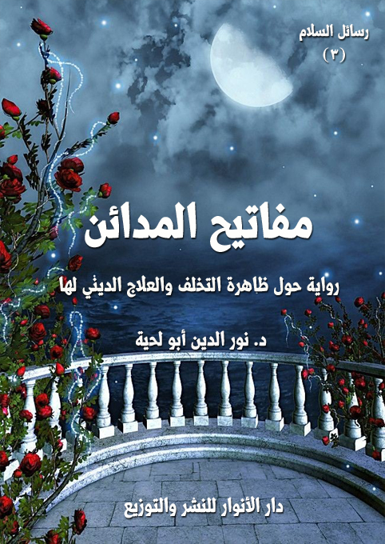

الكتاب: مفاتيح المدائن
المؤلف: أ.د. نور الدين أبو لحية
الناشر: دار الأنوار للنشر والتوزيع
الطبعة: الثانية، 1437 هـ
عدد الصفحات: 369
ISBN: 978-620-2-34038-0
لمطالعة الكتاب من تطبيق مؤلفاتي المجاني وهو أحسن وأيسر: هنا

لتعريف بالكتاب
هذه الرواية عبارة عن رحلة يقوم بها الراوي بصحبة معلمه [معلم السلام] ليخرج من المتاهة التي وقع فيها، والتي ترمز للتخلف وكل القيم الناتجة عنه والمرتبطة به.. وقد أعانه معلمه على ذلك بسبب معرفته بالأبواب التي تنقذه من المتاهة، ومعرفته بالمفاتيح التي تفتحها، إلى أن يصل الراوي أخيرا بصحبة معلمه إلى مدائن السلام.
وهي تحاول أن تضع الحلول المختلفة لعلاج ظاهرة التخلف انطلاقا من استبصار سنن الله في الآفاق والأنفس، والتي تضمن تفاصيلها القرآن الكريم، والسنة النبوية المطهرة، ولهذا تحاول أن تستلهم منهما القيم المختلفة التي تخرج بالأمة من التخلف، وتعيدها إلى وعيها، وإلى بناء المدائن العادلة التي كلفت ببنائها.
مفاتيح المدائن (5)
تهدف هذه الرواية إلى البحث عن المفاتيح التي وضعها الله للبشر لتحقيق الاستخلاف المثالي وعمارة الأرض، ورعاية سنن الله في الكون والمجتمعات.
وقد حاولت أن تستلهم من قصة المعراج الواردة في الأحاديث النبوية الشريفة، والتي رحل فيها النبي صلى الله عليه وآله وسلم إلى السموات العلا، ورأى الكثير من المشاهد العجيبة التي تدل على حقائق الأشياء التي لا نراها في عالمنا.. وقد كان دليله فيها جبريل عليه السلام الذي كان يجيب رسول الله صلى الله عليه وآله وسلم كل حين عن حقيقة ما يراه.
وهذه الرواية تنهج نفس المنهج، ولكن عبر رحلة أرضية يحاول فيها الراوي بصحبة معلمه [معلم السلام] أن يخرج من المتاهة التي وقع فيها.. وقد أعانه معلمه على ذلك بسبب معرفته بالأبواب التي تنقذه من المتاهة، ومعرفته بالمفاتيح التي تفتحها، إلى أن يصل الراوي أخيرا بصحبة معلمه إلى مدائن السلام.
وهي تناقش في المحاورات التي تجري بين التلميذ ومعلمه أسباب التخلف، وتحاول أن تضع الحلول المختلفة لعلاجها انطلاقا من استبصار سنن الله في الآفاق والأنفس، والتي تضمن تفاصيلها القرآن الكريم، والسنة النبوية المطهرة، ولهذا تحاول أن تستلهم منهما القيم المختلفة التي تخرج بالأمة من التخلف، وتعيدها إلى وعيها، وإلى بناء المدائن العادلة التي كلفت ببنائها.
وقد تضمنت الرواية 27 مفتاحا، كل مفتا منها يدل على باب من أبواب التمدن والرقي وتحقيق الاستخلاف المثالي للإنسان على الأرض، وهي تبدأ بباب
مفاتيح المدائن (6)
الاحتساب الذي ينطلق من الإخلاص لله، والطمع في فضله، وتنتهي بباب الشهادة الذي يعني مسؤولية الأمة عن إعطاء نموذج مثالي لسائر الأمم لتسير خلفها وتنتهج نهجها، وبذلك تحقق رسالة ربها في ظهور الإسلام على الدين كله.
مفاتيح المدائن (7)
كانت تغمرني سعادة عظيمة عندما جاءني معلم السلام هذا الصباح، فقال: أرى البسمة في عينيك، فهل استحدثت شيئا من العلم؟
قلت: إن الكنوز التي رأيتها في مدائن الفقراء الربانيين ملأت نفسي سكينة وسرورا، فقررت أن أعيش حياتهم، فما أجملها من حياة، وما أسعدهم من أناسي؟
قال: نعم هم سعداء بما قسم الله لهم، ولكنهم يعيشون في وضع مختلف عن وضعك.
قلت: لكني سأعيش في وضع كوضعهم، ألم يجعل الله الخيار لنا في اختيار الحياة التي نريدها؟
قال: بلى، ولكن وفق ما وضعك الله فيه من أنواع البلاء.. أرأيت لو أن جنديا أعجبته حياة مريض قعد به المرض عن الجهاد لما رأى من تفرغه لعبادة الله، فأراد أن يقتدي به في ذلك.. هل يصح منه ذلك؟
قلت: لا.. فلا ينبغي للمجاهد أن يغادر ثغره، وإلا أتي من قبله.
قال: فكذلك أنت.. وكذلك كثيرون غيرك.. أنتم على ثغور الحق، فلا تتركوها لهجمات الباطل..
قلت: ولكن السعادة والرضى والسكينة لا تتحقق إلا بذلك الجو الهادئ الجميل الذي اكتمل لهم.
قال: السعادة والرضى والسكينة في طاعة الله.. فإنك إن أطعت الله أسعدك ولو في
مفاتيح المدائن (8)
أتون النيران، ألم تسمع قوله تعالى: {يَا نَارُ كُونِي بَرْداً وَسَلاماً عَلَى إِبْرَاهِيمَ} (الانبياء: 69)؟
قلت: ولكن ذلك هو إبراهيم عليه السلام.. وهو خليل الله.
قال: فكن إبراهيم.. وارتفع لتصير خليلا لله.. فهل منع الله أحدا من عباده أن يصير خليلا له؟
قلت: كلا..
قال: فارفع همتك عن نفسك لترى السلام في التوجه لله.. {فَأَيْنَمَا تُوَلُّوا فَثَمَّ وَجْهُ اللَّهِ إِنَّ اللَّهَ وَاسِعٌ عَلِيمٌ} (البقرة: 115)
قلت: وماذا أصنع حتى أرتفع؟
قال: لقد عرفت سكينة الفقر، فاعرف ثورته، وعرفت علاج فقر الفرد، فأسرع لعلاج فقر المجتمع.
قلت: كيف ذلك؟
قال: لنرحل إلى مدائن الحضارة لنتسلم مفاتيح أبوابها.
قلت: أي مدائن.. وأي حضارة.. الحضارات كثيرة والمدائن أكثر.
قال: الحضارات الراشدة.. والمدائن الربانية..
قلت: تلك حضارات عضها الزمن بنابه.. فلا تراها في غير دفاتر الوراقين.
قال: نحن نبحث عن الحقائق، لا عن التواريخ.
قلت: فكيف نرحل؟.. وأين؟.. أهناك أعماق أخرى سنتجول فيها؟
مفاتيح المدائن (9)
قال: لا.. سنرحل إلى متاهة نمر فيها على أبواب كثيرة.. كل باب يسلمنا إلى باب إلى أن نصل إلى مدائن الحضارة.. وسنرى أشياء كثيرة.. فلا يشغلنك شيء عن طريقك.
قلت: متاهة.. أخاف أن أتيه فيها، فلا أرجع إلى أهلي.
قال: لا تخف، فمعنا خارطة لذلك، وبوصلة تدلنا على الطريق.
قلت: أي خارطة.. لا أرى معك أي خارطة، ولا أي بوصلة.
قال: هي كتاب ربك وهدي نبيك.. فما وصل من وصل إلا بهما.
-\--\-
فجأة وجدت نفسي في صحراء لا زرع فيها ولا ماء، ولا أثر فيها لحي أو لميت، فالتفت حولي، فلم أر إلا الموت يتربص بي، فالشمس بأشعتها المحرقة تكوي جلدي، والعطش يكوي حلقي، وأحشائي قد عضها ثعبان الجوع، وفوق كل هذا تعصف الرياح الشديدة حاملة معها ذرات الرمال لتعمي عيني، وتصم أذني.
صحت: أين أنت يا معلم؟.. أجئت بي للموت؟
فجأة ظهر كشعاع النور يقول لي: هل تألمت لهذا المصير الذي صرت إليه؟
قلت: بل كدت أموت جزعا وحزنا.. كيف تخرجني من بيتي الهادئ لترميني في هذه الصحراء القاحلة؟
قال: لتبصر حقيقة ما أنتم فيه.. فلا يمكن أن تعالجوا أدواءكم قبل أن تعرفوها.
قلت: لا.. نحن في أحسن الأحوال، فالسماء تدر علينا بأمطارها، والأرض تدر
مفاتيح المدائن (10)
علينا بنفطها، فنحن بين بحرين، بحر يروينا، وبحر يطعمنا ويكسونا.
قال: لا.. بل أنتم في صحراء عارية من الحياة.. لأنكم تلبسون حياة غيركم، بعد أن خلعتم لباس حياتكم.
قلت: فكيف نسترد لباسنا؟
قال: بالدخول إلى مدائنكم، ففيها تجدون الملابس على مقايسكم.
قلت: ومن أين ندخل مدائننا؟
قال: من أبوابها، ألم تسمع قوله تعالى: {وَأْتُوا الْبُيُوتَ مِنْ أَبْوَابِهَا} (البقرة: 189)
قلت: فما في هذا من العلم؟
قال: إن أردتم أن تدخلوا مدائنكم.. مدائن الحضارة الراشدة.. فعليكم أن تفتحوا الأبواب المغلقة دون ذلك.. كل باب يسلمكم إلى باب إلى أن تصلوا إليها.
قلت: وأين هي هذه الأبواب؟
قال: افتح عيني بصيرتك لتراها.
فتحت عيني بصيرتي، وحدقت، فلم أر شيئا، قلت: يا معلم، فتحت عيني بصيرتي، فلم تر أبوابا ولا نوافذ.. لا أرى غير الصحراء القاتلة.
قال: لا يمكنك أن ترى الأبواب، وأنت ترى الصحراء.
قلت: ولكني في صحراء، فكيف لا أراها.
قال: الصحراء لا علاقة لها ببصيرتك ولا بروحك، إن علاقتها لا تعدو جسدك.. فإن رأيتها ببصيرتك فإن ذلك دليل على استيلائها عليك وتأثيرها فيك، واستعمارها
مفاتيح المدائن (11)
لك.
قلت: أتقصد أن أعيش ببصيرتي في الجنان، مع أني في الحقيقة أعيش في الصحراء؟
قال: الحقيقة ما تعيشه روحك، لا ما يعيشه جسدك.
قلت: ولكن قومي يعتبرون هذا من الوهم الذي يبعدك عن الحقيقة.
قال: دعك من قومك، وامتلأ بالحكمة التي لا تعرف الزمان والمكان.
قلت: فهمت قولك.. فلا زالت قيود قومي تمسك بي.
قال: فافتح بصيرتك الآن.. فسترى أبواب المدائن.
فتحت بصيرتي، فرأيت الصحراء قد انزاحت رمالها من حولي وبين يدي، ثم رأيت بابا عظيما مفتوحا، وقد علقت عليه لافتة كتب عليها قوله تعالى: {ادْخُلُوهَا بِسَلامٍ آمِنِينَ) (الحجر:46)
قال: هلم بنا لندخل هذه المدينة من بابها.. وإياك أن تدخل إلا من الأبواب التي آذن لك في دخولها، فبعضها سراديب ومصايد.
قلت: يا معلم.. وأين مفاتيح أبوابها؟
قال: مفاتيح أبوابها هي الحقائق.. ليس لها مفاتيح غيرها.
قلت: فهي ككنوز الفقراء إذن.
قال: بل هي ككل أبواب الدنيا وكنوزها، فمفاتيح أبواب الكون هي الحقائق.
قلت: ولكن حقائق أبوابها عندك، فهلم لندخل المدائن من غير أن نضيع أوقاتنا في الأبواب.
مفاتيح المدائن (12)
قال: لن يؤذن لك بالدخول إلا بعد أن تحمل مفتاحك، فلا يصح التطفل في هذه البلاد، ألم تسمع قوله تعالى: {وَلا تَزِرُ وَازِرَةٌ وِزْرَ أُخْرَى} (الاسراء: 15)
قلت: بلى.
قال: فهلم نتبصر الحقائق، ونفتح الأبواب.
مفاتيح المدائن (13)
كان أول باب قابلنا بعد دخولنا من الباب الأكبر بابا يحمل صورا لناس خاملين كادوا يذوبون من فرط خمولهم.. وفجأة لاح نور عظيم سرى إلى عقولهم ومنها إلى أجسادهم، فهبوا بأعظم نشاط.
وقد سرى إلي من ذلك النور ما جعلني أشعر بنشاط وحيوية عجيبة، سألت المعلم عن سر هذا الباب، فقال: هذا باب الاحتساب.. ولن ندخل منه حتى ننال مفتاحه.
قلت: ومن أين لنا أن نحصل على مفتاحه؟
قال: عندما تعي ضرورة هذا الباب، وتدرك أهميته ستنال مفتاحه.
قلت: وكيف لي أن أعرف ذلك؟
قال: هل تحتاج إلى من يشرح لك وجه الحاجة إلى الماء والطعام؟
قلت: لا.. فالحس الضروري البداهي يجعلني أدرك ذلك.
قال: فإذا عرفت بذلك الحس البداهي حاجتك للاحتساب ستنال مفتاحه.
قلت: فما الحاجة إلى الاحتساب؟
قال: الاحتساب أول مراتب السعي، فإن النفس الخاملة، والهمة المنحطة، والعجز القاعد، لا ينهض بهم إلا ما ينفخ فيهم روح النشاط، ويحيي فيهم نشاط الروح.
ضحكت، وقلت: نحن نطلق على هذا لقب التشجيع.. ونحن نستعمله في العادة في مباريات في كرة القدم، فنشجع فريقا من فرقها؟
قال: دعنا من لغوكم وصراعكم، فما هذه الكرة التي تهتفون بها سوى لغو من لغو
مفاتيح المدائن (14)
الشيطان ينفخه فيكم كما تنفخون جلدها.
قلت: ولكنها رياضة؟
قال: الرياضة لمن يمارسها.. لا لمن يتفرج عليها.. هي كالعلم تماما هو لمن يعمل به لا لمن يصفه ويتحدث عنه.
قلت: ولكنها تنشئ فينا نشاطا وحيوية وشبابا؟
قال: ولكنها تنشئ بينكم صراعا، وتفرغ لكم جيوبا، وتهدر لكم طاقات.
قلت: صدقت، فنحن نصرف عليها مصاريف ضخمة.
قال: لو أنكم وفرتموها لاستطعتم توفير أسباب الرياضة لشعوبكم جميعا لا لأفراد محدودين.
قلت: صدقت، فنحن في عصرنا لا نتعامل مع أفراد الشعوب، بل نتعامل مع ممثليهم والنخبة منهم، فننفخهم وندللهم ونسمنهم.
قال: وتتركون غيرهم يموت هزالا.
قلت: صدقت في ذلك.. فهذا هو الواقع المر الذي نعيشه.. عد بنا إلى ما كنا فيه.
قال: إلى من يتوجه قومك بالتشجيع؟ وكيف؟
قلت: رويدك يا معلم، فقد سألت سؤالين كل واحد منهما يحتاج موسوعة خاصة به.
قال: فقل لي أولا: من هم الأشخاص الذين يتوجه إليهم قومك بالتشجيع؟
قلت: أولهم الحكام، فما إن يخطب الحاكم خطبة، حتى ينهض الشعب من سباته
مفاتيح المدائن (15)
العميق يحمل لافتات ضخمة، وصورا كثيرة تمجد الحاكم وتسبح بحمده.
قال: ويتركون أشغالهم لأجل ذلك؟
قال: بل إن المرأة لتذهل عن رضيعها لأجل ذلك، فتصيح مع الجموع لتسكت بصياحها صياح ابنها.
قال: ومن تشجعون أيضا؟
قلت: الفنانين.
قال: أتقصد الذين يتذوقون الجمال فينثرونه شعرا أو نثرا؟
قلت: لا.. أقصد الذين يتفننون في إضحاك الناس أو في إخراج الدموع من مآقيهم.
قال: بالوعظ والإرشاد، أو بالتعليم والتدريب؟
قلت: بل بالصياح والنفير، والرقص والصفير.
قال: أعادت جاهلية المكاء والصفير.
قلت: تلك جاهلية أولى، أما جاهليتنا فأكثر إبداعا وتفننا.
قال: فمن تشجعون أيضا؟
قلت: أصحاب الرياضات المختلفة كما ذكرت لك، وخاصة كرة القدم.
قال: أنتم لا تشجعون أصحاب الرياضات، وإنما تشجعون من يمثلهم.
قلت: نحن في كل الأشياء نفعل ذلك.
قال: فمن تشجعون أيضا؟
قلت: من يقدمون لنا خدمات إنسانية.
مفاتيح المدائن (16)
قال: هذا شيء جميل.
قلت: رويدك يا معلم، فنحن لا نشجع هذا الصنف إلا بعد أن يأوي إلى الثرى، أو يكاد يأوي إلى الثرى.
قال: فما فائدة التشجيع حينذاك؟
قلت: لنحذر من يسلك سبيلهم من الغرق في متاهة النسيان.
قال: فكيف تشجعون؟
قلت: أما الأثرياء، فنشجعهم بزيادة ثرائهم، وأما االفقراء والمحتاجون، فنشجعهم بشهادات تقديرية.
قال: فهل تشجعون العمال الذي يعتمد رزقكم على اجتهادهم؟
قلت: العمال هم طبقة المنبوذين في مجتمعنا.
قال: ولكن طبقة المنبوذين طبقة هندية لها علاقة بالديانات الهندية.
قلت: ألم تسمع قوله - صلى الله عليه وسلم -: (لا تقوم الساعة حتى تأخذ أمتي أخذ القرون قبلها شبرا بشبر وذراعا بذراع، قيل: يا رسول الله! كفارس والروم؟ قال: ومن الناس إلا أولئك) (1)
قال: وكيف يعيش هؤلاء العمال بدون تشجيع؟
قلت: يلتهمهم وحش الروتين القاتل الذي يعيشونه، أو تشغلهم أنواع اللهو التي يستهلكونها.
__________
(1) ... رواه البخاري.
مفاتيح المدائن (17)
قال: فلماذا لا يطالبون بالتشجيع؟
ضحكت، وقلت: هم يعرفون أن هذا الاسم لا يرتبط إلا بمن ذكرت، فإذا تجرأ أحدهم، وطالب بالتشجيع، قيل له: ارتق أولا من طبقة المنبوذين التي تعيش فيها إلى طبقات الفنانين والرياضيين والحكام لنشجعك.
قال: قد عرفنا رياح الجاهلية، فهيا لنعرف سلام الإسلام.
قلت: فهل يضع الإسلام لهؤلاء العمال جوائز؟
قال: جوائز أعظم من الجوائز التي ينالها حكامكم أو فنانوكم.
قلت: فما الغرض من وضع هذه الجوائز.. وما حاجة العمال لها؟
قال: ألم تقرأ في كتب الفقه ما ورد في النصوص من الترغيب في الوضوء والصلاة والصيام، وكل الأعمال الصالحة؟
قلت: بلى، بل لقد كتب المنذري في ذلك كتابا عظيما سماه (الترغيب والترهيب)، وكتب النووي كتابه المشهور (رياض الصالحين)، وكتب..
قاطعني، وقال: فما غرضهم من ذلك؟
قلت: بعث الهمم إلى العمل الصالح.
قال: ودخولهم إلى العمل بالنية الصالحة.
قلت: لم أفهم؟
قال: من علم أن الله تعالى أعد أجرا معينا لعمل معين دخله مؤمنا محتسبا، ومن دخل العمل مؤمنا محتسبا أعطاه الله ما طلب من أجر.
مفاتيح المدائن (18)
قلت: لكأني بك تشير إلى النصوص الكثيرة التي تقيد بلوغ الأجور لأصحابها باحتسابهم، كقوله - صلى الله عليه وسلم -: (من لقي الله لا يشرك به شيئا وأدى زكاة ماله طيبة بها نفسه محتسبا وسمع وأطاع فله الجنة) (1)
قال: وقوله - صلى الله عليه وسلم -: (من صام رمضان إيمانا واحتسابا غفر له ما تقدم من ذنبه) (2)، وقوله: (من قام ليلة القدر إيمانا واحتسابا غفر له ما تقدم من ذنبه) (3)
قلت: وأحاديث أخرى كثيرة.. ولكن ما فائدة هذا؟
قال: أن ينتقل العمل من العادة إلى العبادة، ومن قصره على أجر الدنيا إلى العروج به إلى سموات الآخرة، بالإضافة إلى ما يحدثه في النفس من سكينة وطمأنينة.
ثم التفت إلي، وقال: ما الفرق بين من يعمل العمل، ولا ينتظر عليه من الجزاء إلا ما يعطيه مستأجره.. إلى أي شيء يكون نظره؟
قلت: إلى الأجر، فإن عظم حصل الإتقان، وإن قصر قصر الإتقان.
قال: ولكن من عمل وهو لا ينتظر فقط أجر من استأجره، بل ينظر ـ كذلك، وقبله وبعده ـ إلى الأجر الذي أعد الله له.
قلت: سيكون إتقانه أعظم، وأجره أوفر، بالإضافة إلى ما يكسبه من راحة نفسية.
قال: بالإضافة إلى هذا.. ألا ترى أشياء كثيرة تطبع مدنكم وشوارعكم بصور لا تليق؟
__________
(1) ... رواه أحمد.
(2) ... رواه البخاري.
(3) ... رواه مسلم.
مفاتيح المدائن (19)
قلت: كالقمامات مثلا، وكأبنية مهدمة لم تجد من يرممها، أو أنابيب طالها الصدأ لم تجد من يصلحها..
قال: وأشياء أخرى كثيرة..
قلت: إن المكلف بذلك يزعم أن القيام بكل تلك الأعمال يحتاج ميزانية ضخمة ينوء بها ظهر الخزانة.
قال: هنا يبدو فضل الاحتساب، وفضل مفتاح التشجيع.
قلت: كيف؟
قال: إذا انتشر في الأمة وعي ـ بفضل هذا المفتاح المعتمد على الاحتساب ـ ستؤدى جميع هذه الأعمال، وبإتقان عظيم، ومن غير أن ترهق أحدا.
قلت: كيف؟
قال: إذا عرفوا فضل تنظيف شوارعهم، والأجور التي أعدها الله لذلك، والرضوان العظيم الذي ينتظر من فعل ذلك سيتنافسون بل يتزاحمون في رفع القمامات، وترميم الجدران، وإصلاح العيوب..
قلت: لقد ذكرتني بقوله تعالى: {فَانْطَلَقَا حَتَّى إِذَا أَتَيَا أَهْلَ قَرْيَةٍ اسْتَطْعَمَا أَهْلَهَا فَأَبَوْا أَنْ يُضَيِّفُوهُمَا فَوَجَدَا فِيهَا جِدَاراً يُرِيدُ أَنْ يَنْقَضَّ فَأَقَامَهُ قَالَ لَوْ شِئْتَ لَتَّخَذْتَ عَلَيْهِ أَجْراً} (الكهف:77)
قال: هذه الآية الكريمة تشير إل هذا المعنى، فبالرغم من الأذى الذي حصل لموسى والخضر ـ عليهما السلام ـ من أهل القرية، إلا أن ذلك لم يمنع الخضر - عليه السلام - من أن يقيم
مفاتيح المدائن (20)
جدارا كان يهم بالسقوط من غير أن ينتظر على ذلك أجرا، بل إنه لم يرض عندما سأله موسى - عليه السلام - أن يبتغي الأجر بذلك العمل.
قلت: ولكن ذلك سيشجع الدولة على حبس خزانتها على أهوائها وترك الشعب للاحتساب.
قال: هذه أوهام تتوهمونها لا مخاوف حقيقية، فمن المستفيد من الضياع الذي تعيشه مجتمعاتكم؟ أنتم تتهمون الفقر، ولكن الفقر لا يمنعكم من أن تنظفوا بيوتكم وأفنيتكم وثيابكم وتكونوا كالشامة بين الناس.
إن مثلكم كمثل من أصيب بعض ثوبه بوحل الطريق، وكان في إمكانه تنظيفه، فغضب على نفسه وخاض في الوحل بيديه ورجليه وصدره ورأسه، فما يغنيه ذلك؟.. وكذلك مثلكم أنتم.. كان الفقر لباسا خفيفا لامس بعض جوارحكم، فأبيتم إلا أن تجعلوه لباسا لكيانكم كله.
قلت: فالاحتساب إذن علاج للفقر؟
قال: لا.. بل هو علاج لنهضة الأمة جميعا.. فلا يمكن أن يؤدى أي عمل بإتقان تام إذا لم يطلب فيه وجه الله، أو ما وظف الله من الأجور.
قلت: كيف؟
قال: المدرس الذي ينال أجره الدنيوي، ولكنه لعلو همته لا يكتفي به، بل يبتغي بعمله وجه الله والدار الآخرة، فيقول: سأربي من وكلت بتدريسهم، وأنقل لهم كل خبرتي ليساهموا في نهضة أمة محمد - صلى الله عليه وسلم -، وسأنال على ذلك من الأجر بكل حرف أقوله،
مفاتيح المدائن (21)
ففي كل ثانية تنهال علي الأجور والدرجات والرضوان ما يملؤني بالسعادة.. أهذا المدرس سينجح في ما وكل إليه من مهام؟
قلت: لا ينجح فقط، بل لو أن كل المدرسين سلكوا سلوكه لتحولت بلادنا إلى عالم غير الذي نراه.
قال: وهكذا التاجر والصانع والفلاح الذين لا يكتفون بما تدر عليهم أعمالهم من أرباح، بل ينتظرون من أجور الله ما يجعلهم يشعرون بأنهم عمال عند الله لا عند الناس.
قلت: لو أن هذا سرى بين الناس لتبدلت الأرض غير الأرض.. ولكن هل ذلك ممكن؟
قال: كل شيء ممكن.
قلت: كيف؟
قال: بالتشجيع.
قلت: أللتشجيع كل هذه القيمة؟
قال: ولذلك كان أول باب من أبواب السعي.. فالنهضة لا تقوم إلا على الهمم العالية، والهمم لا تعلو إلا إذا وجدت من يرتقي بها.
قلت: ولكن من يقوم بالتشجيع؟.. أئمة المساجد..
قال: لا الأمة جميعا بكل طاقاتها.. ألستم تستخدمون وسائل الإعلام لإشهار السلع؟
قلت: بلى، فنحيي الميت، ونحول من المعدوم موجودا، ومن الدميم جميلا، ومن
مفاتيح المدائن (22)
القذارة طهارة.
قال: ويقبل الناس على ذلك مصدقين.
قلت: بل ومتهافتين.
قال: فقد صدقوكم وأنتم تكذبون، فكيف لا يصدقوكم وأنت تصدقون؟
قلت: ولكن وسائل الإعلام لا تسمح بتلك الإعلانات الإشهارية إلا بعد أن تنال أجورها.
قال: فلتحتسب بعض أجورها، ألم نعرف بأن الاحتساب ركن أساسي من أركان نهضة الأمة؟
قلت: بلى..
لاح لي أربعة أبواب داخل مدخل باب التشجيع، فسألت معلم السلام عنها، فقال: هذه الأبواب هي التي تحوي الجوائز التي ينالها العمال المحتسبون.
قلت: وما هي؟
قال: الأجور المضاعفة، وتكفير الخطايا، ورفع الدرجات، وزيادة البركات.
اقتربت من الباب الأول، فقال المعلم: هذا باب الأجور المضاعفة.
قلت: فما هي هذه الأجور؟
قال المعلم: لقد ورد في النصوص اقتران السعي في الأرض طلبا لفضل الله بأعمال لها من الأجور ما لا يمكن احتسابه.
مفاتيح المدائن (23)
قلت: لماذا؟
قال: أرأيت لو أن شخصا كلف بوظيفة، فسأل عن الأجر الذي يعطاه، فقيل له: سنعطيك أجر الوزير أو الحاكم، أو سنجعل أجرك وأنت وحدك كأجر جماعة تعمل أعمالا مرهقة.
قلت: إن هذا أجر عظيم، وأنا ضامن بأن هذا الشخص سينبعث إلى عمله بنشاط عظيم، بل لعله سيضيف من عنده أعمالا أخرى يشكر بها من قدم له هذا الأجر، ويستبقي وده.
قال: فلهذا ورد في النصوص المقدسة اقتران السعي بأعمال لا حدود لأجرها.
قلت: فما هي هذه الأعمال؟
قال: أولها الجهاد، ألا تعلم ما أعد الله للمجاهدين من الثواب؟
قلت: بلى، فقد اعتبر القرآن الكريم الجهاد في سبيل الله من أعظم أبواب الجنة، فقال تعالى: {إِنَّ اللَّهَ اشْتَرَى مِنَ الْمُؤْمِنِينَ أَنْفُسَهُمْ وَأَمْوَالَهُمْ بِأَنَّ لَهُمُ الْجَنَّةَ يُقَاتِلُونَ فِي سَبِيلِ اللَّهِ فَيَقْتُلُونَ وَيُقْتَلُونَ وَعْداً عَلَيْهِ حَقّاً فِي التَّوْرَاةِ وَالْأِنْجِيلِ وَالْقُرْآنِ وَمَنْ أَوْفَى بِعَهْدِهِ مِنَ اللَّهِ فَاسْتَبْشِرُوا بِبَيْعِكُمُ الَّذِي بَايَعْتُمْ بِهِ وَذَلِكَ هُوَ الْفَوْزُ الْعَظِيمُ} (التوبة:111)
وفضل الله المجاهدين على غيرهم من المؤمنين، فقال تعالى: {لا يَسْتَوِي الْقَاعِدُونَ مِنَ الْمُؤْمِنِينَ غَيْرُ أُولِي الضَّرَرِ وَالْمُجَاهِدُونَ فِي سَبِيلِ اللَّهِ بِأَمْوَالِهِمْ وَأَنْفُسِهِمْ فَضَّلَ اللَّهُ الْمُجَاهِدِينَ بِأَمْوَالِهِمْ وَأَنْفُسِهِمْ عَلَى الْقَاعِدِينَ دَرَجَةً وَكُلّاً وَعَدَ اللَّهُ الْحُسْنَى وَفَضَّلَ اللَّهُ الْمُجَاهِدِينَ عَلَى الْقَاعِدِينَ أَجْراً عَظِيماً} (النساء:95)
مفاتيح المدائن (24)
وأخبر صلى الله عليه وآله وسلم بأن الحركة البسيطة في سبيل الله خير من الدنيا وما فيها، فقال: (لغدوة في سبيل اللَّه أو روحة خير من الدنيا وما فيها) (1)
وأخبر عن الجزاء المعد للمرابط في سبيل الله، فاعتبره لا يقل عن جزاء الصائم القائم القانت الذي لا يقعد عن ذلك طيلة غياب المجاهد في سبيل الله، فقال: (مثل المجاهد في سبيل اللَّه كمثل الصائم القائم القانت بآيات اللَّه لا يفتر من صلاة ولا صيام حتى يرجع المجاهد في سبيل اللَّه) (2)
قال: أليست هذه أجور عظيمة؟
قلت: كيف لا تكون عظيمة؟.. بل إن هذه الأجور هي التي تحرك القلوب المؤمنة المحتسبة للنهوض في وجه كل ظالم، ونصرة كل مستضعف.
قال: وهذه النصوص نفسها هي التي أخبرت بأن للعامل إن احتسب من الأجر ما لا يقل عن أجر المجاهد، فقد رأى بعض الصحابة شاباً قوياً يسرع إلى عمله، فقالوا: لو كان هذا في سبيل الله! فرد رسول الله صلى الله عليه وآله وسلم عليهم بقوله: (لا تقولوا هذا؛ فإنه إن كان خرج يسعى على ولده صغاراً فهو في سبيل الله، وإن كان خرج يسعى على أبوين شيخين كبيرين فهو سبيل الله، وإن كان خرج يسعى على نفسه يعفُّها فهو في سبيل الله، وإن كان خرج يسعى رياء ومفاخرة فهو في سبيل الشيطان) (3)
قلت: يا معلم كيف هذا؟.. والمجاهد يذهب بنفسه وماله وقد لا يعود بواحد منهما،
__________
(1) ... رواه البخاري ومسلم.
(2) ... رواه البخاري ومسلم.
(3) ... رواه الطبراني في الكبير.
مفاتيح المدائن (25)
بينما العامل مطمئن في بيته يسعى على رزقه.
قال: لأن كليهما مجاهد في سبيل الله.
قلت: كيف!؟.. فإن فهم هذا صعب.
قال: الجهاد الذي هو حمل السلاح لا يكون في الشريعة إلا لطارئ، وهو أشبه بالحراحة التي يقوم بها الطبيب لنزع علة معينة، أما الجهاد الذي هو حمل الفأس والضرب في الأرض، فإنه لعمارة الدنيا التي أمرنا بعمارتها، فلا يليق أن نملأ الدنيا التي هي دار الضيافة الإلهية بالجهاد المدمر، ولا نملؤها بالجهاد المعمر.
قلت: ولكن فضل الشهادة عظيم؟
قال: وفضل الحياة الممتدة في سبيل الله أعظم، بل إن الله تعالى قدم الذين يضربون في الأرض يبتغون من فضله على المجاهدين، فقال: {وَآخَرُونَ يَضْرِبُونَ فِي الْأَرْضِ يَبْتَغُونَ مِنْ فَضْلِ اللَّهِ وَآخَرُونَ يُقَاتِلُونَ فِي سَبِيلِ اللَّهِ} (المزمل: 20)
قلت: أجل، لقد قرن الله تعالى في هذه الآية بين الجهاد والضرب في الأرض.
قال: بل قدم الضرب في الأرض على الجهاد، فلا يمكن للمجاهد أن يجاهد لولا وجود من يضرب في الأرض.
قلت: فإن كثيرا من أغرار قومي قرأوا ما ورد في فضل الجهاد والموت في سبيل الله، فراحوا يحملون السلاح على كل غاد ورائح.
قال: فأخبروهم عن فضل العمل، وفضل الحياة في سبيل الله، وأعطوهم بدل أسلحتهم ما يرفع هامتكم ويحصن ثغوركم.
مفاتيح المدائن (26)
قلت: حصوننا محمية بجيوش لا قبل لأحد بها، وبأسلحة هي في غاية التطور.
قال: ولكنكم تغزون علميا واقتصاديا وإعلاميا.. أنت تغزون في بيوتكم كل حين ولكنكم لا تشعرون.
قلت: وعيت هذا.. فما غيره؟
قال: لقد قرن الله تعالى السعي في عمارة الأرض بالعبادة، فقال: {فَإِذَا قُضِيَتِ الصَّلاةُ فَانْتَشِرُوا فِي الْأَرْضِ وَابْتَغُوا مِنْ فَضْلِ اللَّهِ وَاذْكُرُوا اللَّهَ كَثِيراً لَعَلَّكُمْ تُفْلِحُونَ} (الجمعة:10)
قلت: وورد اقتران الكسب بالحج، فقال تعالى: {لَيْسَ عَلَيْكُمْ جُنَاحٌ أَنْ تَبْتَغُوا فَضْلاً مِنْ رَبِّكُمْ فَإِذَا أَفَضْتُمْ مِنْ عَرَفَاتٍ فَاذْكُرُوا اللَّهَ عِنْدَ الْمَشْعَرِ الْحَرَامِ وَاذْكُرُوهُ كَمَا هَدَاكُمْ وَإِنْ كُنْتُمْ مِنْ قَبْلِهِ لَمِنَ الضَّالِّينَ} (البقرة:198)، فمن الأقوال في تفسير قوله تعالى: {لِيَشْهَدُوا مَنَافِعَ لَهُم} (الحج: 28) أن المنافع (الأجر في الآخرة والتجارة في الدنيا)
قال: أتدري ما أسرار هذا الاقتران؟
قلت: ماهي؟ فأنا لا ألحظ أي سر في ذلك.
قال: إن كلام الحكيم مرتب ترتيبا بديعا، فلا يقرن شيء بشيء إلا لأهميته، أرأيت لو قال لك شخص: (أعطيك مليار دينار ودينار)؟
قلت: أضحك على هذا، وأقول: ما يساوي الدينار أمام المليار، بل لعلي أقول له: (دع الدينار لك، فأنا يكفيني أن تعطيني المليار)
مفاتيح المدائن (27)
قال: فقد رأيت إذن أنه لا يقرن الأجر العظيم إلا بالأجر العظيم.
قلت: نعم، فهمت، فلولا ما في العمل من القيمة ما قرن بالصلاة والحج اللذين هما من أركان الإسلام.
قال: وبالإضافة إلى هذا، فقد ورد في النصوص ما يدل على أن كل منتفع بعمل العامل يصب في أجره، فقد قال قال صلى الله عليه وآله وسلم في إحياء الأرض: (ما من امرئ يحي أرضا فتشرب منها كبد حرى، أو تصيب منها عافية إلا كتب الله تعالى له به جرا) (1)، وقال في أجر من أحيا أرضا ميتة: (من أحيا أرضا ميتة فله فيها أجر، وما أكلت العافية منها فهو له صدقة) (2)، وقال في غرس الغرس: (ما من مسلم يزرع زرعا أو يغرس غرسا فيأكل منه طير أو إنسان أو بهيمة إلا كانت له به صدقة) (3)، وقال: (ما من مسلم يغرس غرسا إلا كان ما أكل منه له صدقة وما سرق منه صدقة، وما أكل السبع فهو له صدقة، وما أكلت الطير فهو له صدقة ولا يرزؤه أحد إلا كان له صدقة) (4)
قلت: هذه أجور عظيمة.
قال: فما تأثيرها فيمن يفقهها؟
قلت: لن يترك دقيقة واحدة من عمره تمضي إلا وهو يحي الأرض وينميها لينال من الأجر ما يناله.
__________
(1) ... رواه الطبراني في الكبير.
(2) ... رواه أحمد والترمذي وابن حبان، وقال الترمذي: هذا حديث حسن صحيح.
(3) ... رواه أحمد والترمذي.
(4) ... رواه مسلم.
مفاتيح المدائن (28)
قال: فإذا لم يجازه الناس على جهده هذا؟
قلت: لقد وعده الله بالأجر، فما انتظاره لأجوره الناس؟
قال: ولهذا قال صلى الله عليه وآله وسلم: (إن قامت الساعة وفي يد أحدكم فسيلة، فإن استطاع أن لا يقوم حتى يغرسها فليغرسها) (1)
اقتربت من الباب الثاني، فقال المعلم: هذا باب (رفع الدرجات)
قلت: فما باب الدرجات؟
قال: ما هو منتهى آمال العمال عندكم غير الأجور؟
قلت على البديهة من غير تفكير: الترقية.
قال: وما الترقية؟
قلت: أن ينتقل العامل البسيط إلى نائب لرئيس للعمال، وأن يرتقي النائب إلى درجة الرئيس، وهكذا..
قال: ألأجل الأجر المرتفع للمنصب الأعلى؟
قلت: ليس ذلك فقط، بل أحيانا لا يكون هناك اختلاف كبير في الأجور، ومع ذلك يطمح كل عامل في منصب أرقى.
قال: لماذا إذن؟
قلت: هذا شيء نفسي، فكل إنسان يحب أن يكون له من المناصب أرفعها.. لقد
__________
(1) ... رواه أحمد وعبد بن حميد، والبخاري في الأدب.
مفاتيح المدائن (29)
عجن هذا في طبيعة الإنسان عجنا.
قال: فما تسمونه بالترقيات تسميه النصوص بالدرجات، وهي من أنواع الجزاء التي ينالها الساعي المحتسب.. وهي من الجزاء الذي وضعه الله لملء تلك الحاجة الإنسانية الطالبة للترقي.
قلت: فما هي هذه الدرجات؟
قال: ألم تسمع قوله تعالى: {وَإِذَا النُّفُوسُ زُوِّجَتْ} (التكوير:7)، وقوله: {وَإِذَا أُلْقُوا مِنْهَا مَكَاناً ضَيِّقاً مُقَرَّنِينَ دَعَوْا هُنَالِكَ ثُبُوراً} (الفرقان:13)
قلت: أجل، لقد ورد في تفسير هذه أن المراد منه الجمع بين النظراء أو الأشكال منهم كل صنف إلى صنف.
قال: أتجد تشبيها لهذا في واقع قومك؟
قلت: أجل، بل ما أسهل تشبيه هذا، فنحن مثلا في مؤتمراتنا ننزل كل نظير مع نظيره، فأصحاب المقامات العالية ننزلهم الفنادق الفخمة، ومن دونهم ننزلهم ما هو دونها، وهكذا، حتى لا يبقى إلا المتفرجون، فننزلهم الشوارع والساحات.
قال: فاجمع بين هذين المعنيين وابحث في سير الكمل من عباد الله، فسيتضح لك علو المقامات والدرجات التي ينزلها الساعي والعامل المحتسب.
قلت: فمن هم الكمل، وكيف كانوا؟
قال: أكمل الكمل هم الأنبياء ـ عليهم الصلاة والسلام ـ وقد كانوا كلهم عمالا يأكلون من عمل أيديهم.
مفاتيح المدائن (30)
قلت: صدقت.. فقد ورد في الآثار أن نوحا كان نجارا يأكل من كسبه، وأن إدريس كان خياطا، وأن إبراهيم كان بزارا.. وأن داود كان يأكل من كسبه.. وغيرهم عليهم السلام.. ولكن في النفس شبهة أريد أن تأذن لي في ذكرها، وتصبر علي في طرحها، وفي الإجابة عليها، فإن لها بين قومي نظيرات.
قال: تريد أن تقول بأن في السعي انحطاط عن الهمة العلية، كما قال ابن عطاء الله: (إرادتُكَ التجريدَ مع إقامةِ الله إِيَّاكَ في الأسباب من الشَّهوة الخفيةِ، وإرادتُكَ الأسبابَ مع إقامةِ الله إِيَّاكَ في التجريد انحطاطٌ عن الهِمَّةِ العَلَيَّةِ).. أو تريد أن تقول ما روي عن يوسف بن الحسين: (إذا رأيت المريد يشتغل بالرخص والكسب، فليس يجيء منه شيء)؟
قلت: هو ذا ما أردت، فالله تعالى قال في كتابه: {وَمَا خَلَقْتُ الْجِنَّ وَالْأِنْسَ إِلَّا لِيَعْبُدُونِ} (الذريات:56)، وفي الاشتغال بالكسب ترك ما خلق المرء لأجله وأمر به من عبادة ربه.. وقال تعالى: {وَأْمُرْ أَهْلَكَ بِالصَّلاةِ وَاصْطَبِرْ عَلَيْهَا لا نَسْأَلُكَ رِزْقاً نَحْنُ نَرْزُقُكَ وَالْعَاقِبَةُ لِلتَّقْوَى} (طه:132)، والخطاب وإن كان لرسول الله صلى الله عليه وآله وسلم فالمراد أمته، فقد أمروا بالصبر والصلاة وترك الاشتغال بالكسب لطلب الرزق، فالله قد ضمن الرزق لعباده، ولا أظن ابن عطاء الله إلا استنبط قوله: (اجتهادُكَ فيما ضَمِنَ لكَ، وتقصيرُكَ فيما طَلَبَ منكَ، دليلٌ على انْطماسِ البصيرةِ منْكَ) إلا من هذه الآية.. وقال..
قال المعلم: رويدك.. هذه شبهة تحتاج إلى تأن في طرحها، وهي شبهة قديمة، لذلك سنعرض ما تستند إليه واحدا واحدا، لنبين وجه الحق فيه ووجه الباطل.
مفاتيح المدائن (31)
قلت: نعم، فقد رسخت في بعض آثار هذه الشبهة من كتب قرأتها، ومن واقع عشته.
قال: أما الآيتين اللتين أوردتهما، فإن الذي قالهما هو الذي حث على السعي في الأرض ابتغاء لرزق الله، فقد قال تعالى: {هُوَ الَّذِي جَعَلَ لَكُمُ الْأَرْضَ ذَلُولاً فَامْشُوا فِي مَنَاكِبِهَا وَكُلُوا مِنْ رِزْقِهِ وَإِلَيْهِ النُّشُورُ} (الملك:15)، أي فسافروا حيث شئتم من أقطارها، وترددوا في أقاليمها وأرجائها في أنواع المكاسب والتجارات.
قلت: ولكن الله تعالى ضمن الرزق لعباده، فقال: {وَمَا مِنْ دَابَّةٍ فِي الْأَرْضِ إِلَّا عَلَى اللَّهِ رِزْقُهَا وَيَعْلَمُ مُسْتَقَرَّهَا وَمُسْتَوْدَعَهَا كُلٌّ فِي كِتَابٍ مُبِينٍ} (هود:6)
قال: وهذا صحيح، وهل تتصور الإنسان بسعيه يسعى لأجل صنع رزقه؟
قلت: ولم يسعى إذن؟
قال: هو يسعى للحصول على رزقه وأكله، أما الرزاق فهو الله.
قلت: اشرح لي هذا، فإنه يصعب علي فهمه.
قال: لو تأملت جميع أسباب الرزق التي يرتزق منها الإنسان لوجدتها جميعا لا يمكن تحققها من دون الله، أما سعي الإنسان فهو مجرد تناول لذلك الرزق وأكل له، ألم تسمع قوله تعالى: {أَفَرَأَيْتُمْ مَا تَحْرُثُونَ أَأَنْتُمْ تَزْرَعُونَهُ أَمْ نَحْنُ الزَّارِعُونَ لَوْ نَشَاءُ لَجَعَلْنَاهُ حُطَاماً فَظَلْتُمْ تَفَكَّهُونَ إِنَّا لَمُغْرَمُونَ بَلْ نَحْنُ مَحْرُومُونَ} (الواقعة:63 ـ 67)؟
قلت: بلى، فما فيها من العلم؟
قال: إن الله تعالى ينفي عنا في هذه الآيات الوهم الذي نحمله في نفوسنا من أننا نحن المتسببون في حصول الزرع والثمار اللذين هما الغذاء الأساسي للإنسان.
مفاتيح المدائن (32)
قلت: هذا ليس وهما، بل هذه حقيقة.
قال: لو كانت هذا حقيقة لمات الخلق جميعا من الجوع، لأن ذلك سيستدعي موظفين يرعون النبتة ويمدونها بالحياة وأسباب الحياة إلى أن تثمر، ولو اجتمع الخلق جميعا أن يفعلوا ذلك بنبتة واحدة لم يطيقوا، بل الله هو الذي يمد النبتة بالقوى التي تمكنها من استغلال ما حولها من المياه والتربة والهواء والضوء لتنتج لنا بعد ذلك ما شاء الله لنا من رزق.
قلت: فأنت تقول بتأثير الأسباب؟
قال: أي شيء تقوله في هذا صحيح، عزلت الأسباب أو أثبتها، فالله هو الخالق، خالق العلة وخالق المعلول.
قلت: فهمت هذا، وأنا لا أجادل فيه، ولكني أتحدث عن المقامات الرفيعة التي تهفوا إليها نفوس العارفين، ويخافون أن ينشغلوا عنها بأي مكسب أو رزق.
قال: سادة العارفين هم الأنبياء، وقد عرفت أحوالهم في طلب الرزق، ولم نطالب بالاقتداء الكامل إلا بهم، ألم تسمع قوله تعالى: {أُولَئِكَ الَّذِينَ هَدَى اللَّهُ فَبِهُدَاهُمُ اقْتَدِهْ} (الأنعام: 90)
قلت: ولكن الأنبياء لا يشغلهم شيء عن الله.
قال: تريد من دونهم.. فأولياء الأمة وصالحوها كانت لهم أشغالهم وحرفهم التي لم تلههم عن الرسالة التي وكلت لهم من حفظ هذا الدين وتبليغه.
قلت: أنا لا أنكر السعي، ولكن..
مفاتيح المدائن (33)
قال: أنت تتحدث عن الهمة العالية.. أجبني أيهما أرفع همة المتكسب الذي يسعى لينال رزقه، وينال الناس رزقهم بسببه، أم القاعد الذي ينتظر رزقه أن يأتيه؟
قلت: إن اشتغل..
قاطعني، وقال: قبل أن تجيبني اسمع لهذه القصة التي رويت عن عن شقيق البلخي، وقد كان من أهل العبادة والزهد، فقد ودَّع صديقه إبراهيم بن أدهم لسفره في تجارة عزم عليها. ولم يلبث إلا مدة يسيرة، ثم عاد، ولقيه إبراهيم، فعجب لسرعة إيابه من رحلته، فسأله عما رجع به قبل أن يتم غرضه، فقصَّ عليه قصة شهدها، جعلته يغير وجهته ويلغي رحلته، ويعود قافلاً.
ذلك أنه نزل للراحة في الطريق، فدخل خربة يقضي فيها حاجته، فوجد فيها طائراً أعمى كسيحاً لا يقدر على حركة، فرَقَّ لحاله، وقال: من أين يأكل هذا الطائر الأعمى الكسيح في هذه الخربة؟ ولم يلبث أن جاء طائر آخر يحمل إليه الطعام ويمده به، حتى يأكل ويشبع، وظل يراقبه عدة أيام وهو يفعل ذلك، فقال شقيق: إن الذي رزق هذا الطائر الأعمى الكسيح في هذه الخربة لقادر على أن يرزقني! وقرر العودة.. أتدري ما قال له إبراهيم بن أدهم؟
قلت: ما قال؟
قال: قال له: (سبحان الله يا شقيق! ولماذا رضيت لنفسك أن تكون الطائر الأعمى العاجز الذي ينتظر عون غيره، ولا تكون أنت الطائر الآخر الذي يسعى ويكدح ويعود بثمرة ذلك على من حوله من العمي والمقعدين؟! أما علمت أن النبي صلى الله عليه وآله وسلم قال: (اليد
مفاتيح المدائن (34)
العليا خير من اليد السفلى)؟
فقام إليه شقيق وقبَّل يده وقال: أنت أستاذنا يا أبا إسحاق!
قال: فأيهما أرفع همة من تشبه بصفة الله (الرزاق) أم من تشبه بصفة العبد المرزوق؟
قلت: صحيح هذا.. ولكن ألا تشغل المكاسب عن السلوك إلى الله؟
قال: السلوك الصحيح لا يكون إلا في الواقع، فلا يمكن أن تأخذ الناس إلى الفلوات لتربيهم، وقد كان بعض المشايخ المربين يقول: (ما أجمل أن يجعل الفلاح فأسه مِسبحته، ويجعل النجار منشاره مِسبحته، ويجعل الحداد مطرقته مِسبحته، وهكذا)
وقد حكى ابن عطاء الله ـ الذي أسأت فهم حكمته ـ عن بداية صلته بشيخه أبي العباس المرسي، فذكر أنه سمع من أصحابه من طلبة العلم أن الذي يصحب مشايخ الطريق يضمُر حظه في العلم الشرعي الظاهر، قال: فشقَّ عليَّ أن يفوتني العلم، وشقَّ عليَّ أن تفوتني صُحبة الشيخ.
فلما ذهب إلى الشيخ كان أول ما بادره به أن قال: (نحن إذا صحبنا تاجر، ما نقول له: اترك تجارتك وتعال، أو صاحب صنعة، ما نقول له: اترك صنعتك وتعال، أو طالب علم، ما نقول له: اترك طلبك وتعال، ولكن نقر كل أحد فيما أقامه الله فيه، وما قسم له على أيدينا فهو واصل إليه.
قال: وقد صحب الصحابة رسول الله صلى الله عليه وآله وسلم، فما قال لتاجر: اترك تجارتك، ولا لذي صنعة: اترك صنعتك، بل أقرَّهم على أسبابهم، وأمرهم بتقوى الله فيها.
مفاتيح المدائن (35)
اقتربت من الباب الثالث، فقال المعلم: هذا باب تكفير الخطايا.
قلت: أهذه جائزة تشجيعية؟
قال: بل من أعظم الجوائز التشجيعية.
قلت: فاضرب لي مثالا على ذلك أعيه، ويعيه قومي.
قال: أتعلم أخطر ما يقف في وجه المجرم الذي تناهى في الإجرام، فيحول بينه وبين التوبة؟
قلت: نفسه الأمارة بالسوء، وشيطانه الرجيم الذي يزرع في نفسه ما ينبت تلك الجرائم.
قال: وتلك النظرات القاسية التي يجدها في المجتمع، إما نظرات الخوف أو نظرات الاستعلاء.. فلذلك لا يجد علاجا يمسح به جرائمه إلا المزيد من الجرائم.
قلت: هو إذن كالواقع في الإدمان يعالج الداء بالداء.
قال: نعم هو كذلك..
قلت: أريد توضيحا أكثر لهذا، أعيه ويعيه قومي.
قال: أرأيت لو أعطيت ما شئت من الأموال على أن تتحمل جريمة من الجرائم الخطيرة، بأن تنسبها إليك، ولو لم تفعلها، على أن يضمن لك البراءة من الملاحقة، أترضى بذلك؟
قلت: لا.. ولا أظن أن هناك من يرضى، فالمال لا يمكنه أن يغسل الوسخ الذي ينشئه رميي بتلك الجريمة في المجتمع.
مفاتيح المدائن (36)
قال: فالبراءة إذن فوق الأجور؟
قلت: بل أحيانا فوق الدرجات، فالمسؤول الكبير ينهار من برجه العاجي الذي بناه طول حياته بسبب فضيحة واحدة تسببها شهوة من شهواته.
قال: فقد أقررت إذن بأن تكفير الخطايا جائزة.
قلت: نعم، فما أعظم أن يمسح السجل الإجرامي للمجرمين.
قال: فقد أخبر صلى الله عليه وآله وسلم إذن بأن التعب الذي ينال الإنسان جراء سعيه على رزقه الحلال مكفر لخطاياه، ألم تسمع قوله صلى الله عليه وآله وسلم: (ما يصيب المؤمن من نصب، ولا وصب، ولا هم، ولا حزن ولا أذى، ولا غم حتى الشوكة يشاكها إلا كفر الله بها من خطاياه) (1)؟
قلت: بلى.. وقد ورد في حديث آخر ما هو أصرح من ذلك، فقد روي انه صلى الله عليه وآله وسلم قال: (من بات كالا في طلب الحلال بات مغفورا له) (2)، فهذا أجر عظيم قد جعله الله لطالب الرزق الحلال.
قال: ويمكنكم أن تستثمروا هذا النوع من الأجر في الدنيا قبل الآخرة.
قلت: كيف، والمغفرة لها علاقة بالآخرة فقط.
قال: ألا تعلم أن الله يحب تشبه عباده بصفات كرمه، فهو كريم يحب الكرماء، رحيم يحب الرحماء، وقد قال صلى الله عليه وآله وسلم: (الراحمون يرحمهم الرحمن تبارك وتعالى، ارحموا من في الأرض يرحمكم من في السماء) (3)؟
__________
(1) ... رواه البخاري ومسلم.
(2) ... رواه ابن عساكر.
(3) ... رواه أحمد وأبو داود والترمذي.
مفاتيح المدائن (37)
قلت: بلى، فهذه حقيقة تدل عليها النصوص الكثيرة.
قال: فيمكنكم استثمار هذا إذن، فتضعوا لمن تعاقبوهم من الفرص ما يستعيدون به طهارتهم.
قلت: كيف ذلك، ونحن نعاقبهم؟
قال: فلماذا لا تجعلوا نيتكم من عقوبتهم أن تطهروهم؟
قلت: ولكن الحق العام يأبى ذلك، فهو يريد أن يشفي غليله من المجرمين.
قال: وذلك لا يمنعه من تطهيرهم، بل الحق العام يستفيد من طهارتهم أكثر من استفادته من مجرد عقوبتهم.
قلت: ولكن كيف يحصل ذلك؟
قال: أنا لا طاقة لي بوضع اقتراحات لكم، فأنتم أعلم بأمور دنياكم، ولكن إن تصدقوا في البحث، فستجدون من فرص الطهارة التي تضعوها بين يدي المجرمين، ما يجعل منهم طاقات حية نافعة لا قاذورات مهملة مرمية في الزنازن والسجون تقتلها الكآبة، أو ترتع فيها وساوس الشياطين.
اقتربت من الباب الرابع، فقال المعلم: هذا باب (زيادة البركات)
قلت: فما الجائزة التي يختزنها هذا الباب؟
قال: هي من الجوائز التي ينالها صاحبها في الدنيا قبل الآخرة، ألم تعلم بأن الله تعالى يعجل لعباده الصالحين بعض جوائزهم في الدنيا قبل الآخرة؟
مفاتيح المدائن (38)
قلت: بلى، فقد قال تعالى: {مَنْ عَمِلَ صَالِحاً مِنْ ذَكَرٍ أَوْ أُنْثَى وَهُوَ مُؤْمِنٌ فَلَنُحْيِيَنَّهُ حَيَاةً طَيِّبَةً وَلَنَجْزِيَنَّهُمْ أَجْرَهُمْ بِأَحْسَنِ مَا كَانُوا يَعْمَلُونَ} (النحل:97)
قال: وأخبر تعالى عن تنزل البركات على المؤمنين المتقين، فقال: {وَلَوْ أَنَّ أَهْلَ الْقُرَى آمَنُوا وَاتَّقَوْا لَفَتَحْنَا عَلَيْهِمْ بَرَكَاتٍ مِنَ السَّمَاءِ وَالْأَرْضِ وَلَكِنْ كَذَّبُوا فَأَخَذْنَاهُمْ بِمَا كَانُوا يَكْسِبُونَ} (لأعراف:96)
قلت: فما البركات؟
قال: هي أن يصبح القليل كثيرا، والصغير كبيرا، والضعيف قويا؟
قلت: كيف ذلك، ولا أرى أنه من الممكن تحول قنطار قمح إلى قنطارين، فكيف يصبح القليل كثيرا؟
قال: ألم تسمع حكمة ابن عطاء الله: (رب عمر اتسعت آماده، وقلت أمداده. ورب عمر قليلة آماده، كثيرة أمداده)؟
قلت: بلى، فهو يتحدث عن شيء واقعي ممكن، فقد يرزق الله من فضله صاحب العمر القصير من الأمداد والفوائد ما لا يظفر به المعمرون.
وقد أشار إلى هذا في الحكمة الأخرى التالية لهذه، بقوله: (من بورك له في عمره أدرك في يسير من الزمن من منن الله تعالى ما لا يدخل تحت دوائر العبارة، ولا تلحقه الإشارة)
قال: فقد فهمت ـ إذن ـ معنى البركة.
قلت: لقد فهمت معنى البركة في العمر، فهو لا بآماده، بل بأمداده، وعلى هذا وردت النصوص، كقوله صلى الله عليه وآله وسلم: (إن الرجل ليحرم الرزق بالذنب يصيبه، ولا يرد القدر
مفاتيح المدائن (39)
إلا الدعاء، ولا يزيد في العمر إلا البر) (1)، وورد في الحديث أن صلة الرحم تزيد في العمر، فقد قال صلى الله عليه وآله وسلم: (من سره أن يبسط له رزقه وينسأ له أثره فليصل رحمه) (2).. لكني لم أفهم بعد كيف يصبح القليل كثيرا..
قال: ألم تقرأ الاحاديث التي ورد فيها تكثير الطعام لرسول الله صلى الله عليه وآله وسلم؟
قلت: بلى، فقد حصل ذلك مرات كثيرة كما يذكر علماء السير.
قال: فقد رأيت فيها أن القليل الذي لا يشبع النهم تحول إلى الكثير، فيطعم أمة من الناس.
قلت: ولكن هذا يذكر على سبيل المعجزة، فهو معجزة لنبينا صلى الله عليه وآله وسلم، لا يذكر كسنة عامة تشمل جميع الناس، وحديثنا هنا عن العموم لا عن الخصوص.
قال: ألم تسمع قوله تعالى: {وَلَوْ أَنَّ أَهْلَ الْقُرَى آمَنُوا وَاتَّقَوْا لَفَتَحْنَا عَلَيْهِمْ بَرَكَاتٍ مِنَ السَّمَاءِ وَالْأَرْضِ وَلَكِنْ كَذَّبُوا فَأَخَذْنَاهُمْ بِمَا كَانُوا يَكْسِبُونَ} (لأعراف:96)، أفهذه الآية خاصة بالأنبياء، أم بأمم الأنبياء؟
قلت: بل بأمم الأنبياء.
قال: فقد وعد الله بتنزل البركات عليهم، وهو يعني ما ذكرناه من تحول القليل كثيرا، والضعيف قويا، والهزيل سمينا..
قلت: أنا لا أناقش في هذا، ولكن أناقش في تصوره، فلم أر في حياتي تحول الموازين
__________
(1) ... رواه أحمد والنسائي وابن ماجه
(2) ... رواه أحمد وابن ماجة.
مفاتيح المدائن (40)
ولا المقاييس.
قال: أرأيت إن خيرت بين أن ترزق مالا قليلا، ولكن يبارك لك فيه، فلا تستهلكه إلا فيما يفيدك، ويمتعك، وبين أن ترزق مالا كثيرا، ولكن ترزق معه من البلاء كالأمراض والأشغال ما يفنيه ويحوله قليلا لا يكاد ينفعك.
صحت: بل أرضى بالقليل، فما فائدة الكثير الذي يرهقني، ثم لا أستفيد منه.
قال: فهذا القليل تحول بسبب مباركة الله له إلى كثير، بل إلى ما هو أفضل من الكثير.. أجبني.. لو خيرت بين أن يكون لك عشرة من البنين، وكلهم عاق ومنحرف، وبين أن يكون لك ولد واحد، ولكنه بر تقي وصول، فأيهما تختار؟
قلت: بل الولد الواحد، فما فائدة العشرة التي لا تزيدني ولا تزيدهم إلا ضياعا وضلالا.
قال: فقد بورك إذن في الولد الواحد بسبب تقواه فصار أفضل من العشرة.
قلت: فقد فهمت إذن، فالشيء يبقى هو نفسه، ولكن الله تعالى يبارك فيه بحمايته من الآفات، فيصبح بتلك الحماية كافيا.
قال: ليس هذا فقط، بل إن الله برحمته وبركته يمده من الزيادة ما لا نستطيع أن نتعرف عليه.. فليس العالم شهادة فقط.. وكما للحكمة مظاهرها، فللقدرة مظاهرها.
قلت: لقد نبهتني إلى نوع مهم من الغنى لا يفطن له كثير من الفقراء.
قال: ما هو؟
قلت: إن الله يبارك في كثير من أولاد الفقراء، فينجحون في حياتهم، بل يكونون
مفاتيح المدائن (41)
سببا في خروج آبائهم من ضائقة الفقر، بينما يتيه أولاد كثير من الأغنياء في أودية الغفلة.. فهذا من بركات الفقر على أهله.
قال: لا تفهمني خطأ، فالبركة تشمل الغني والفقير، ونحن لا نفضل أحدهما، بل للبركة أسبابها التي تحل بمن تحقق بها.
قلت: فما أسبابها، فقد شوقتني إليها؟
قال: أولها الالتزام الذي أشار إليه قوله تعالى: {وَلَوْ أَنَّ أَهْلَ الْقُرَى آمَنُوا وَاتَّقَوْا لَفَتَحْنَا عَلَيْهِمْ بَرَكَاتٍ مِنَ السَّمَاءِ وَالْأَرْضِ وَلَكِنْ كَذَّبُوا فَأَخَذْنَاهُمْ بِمَا كَانُوا يَكْسِبُونَ} (لأعراف:96)
قلت: عرفت هذا.. فهل هناك أسباب أخرى؟
قال: القناعة، فهي من أعظم أسباب البركة.
قلت: أجل، وقد صرحت الأحاديث بذلك، فقد قال صلى الله عليه وآله وسلم: (إن هذا المال خضرة حلوة، فمن أخذه بسخاوة نفس بورك له فيه، ومن أخذه بإشراف نفس لم يبارك له فيه، كالذي يأكل ولا يشبع) (1)
قال: ومن أسبابها الصدق، فقد قال صلى الله عليه وآله وسلم: (البيعان بالخيار ما لم يتفرقا، فإن صدقا وبينا بورك لهما في بيعهما، وإن كتما وكذبا محقت بركة بيعهما) (2).. ومن أسبابها النشاط..
قلت: وما النشاط؟
__________
(1) ... رواه مسلم.
(2) ... رواه البخاري.
مفاتيح المدائن (42)
قال: عدم الخلود إلى الكسل في أوقات البركة؟
قلت: أهناك أوقات للبركة؟
قال: نعم، والعاقل هو الذي يبحث عنها.
قلت: أين؟
قال: في الشريعة والواقع.
قلت: أي في النصوص الشرعية، وفي البحث في سنن الحياة.
قال: نعم، فكلاهما كتاب الله تعالى.
قلت: فاضرب لي مثالا على ذلك.
قال: ما ورد في النصوص من استحباب التبكير، فقد دعا صلى الله عليه وآله وسلم لذلك، فقال: (اللهم بارك لأمتي في بكررها) (1)
قلت: فهمت هذا، ولعله سبب مهم جدا من أسباب الفقر، فإني أرى في الواقع الرجل ينهض وقت الضحى يتثاءب كسلا، ليطلب رزقه، ثم يشكو من سد أبواب الرزق في وجهه.
قال: ليس هذا فعل رجل واحد فقط، بل كلكم يفعله.
قلت: كيف؟
قال: أنتم تبدؤون يومكم من نصفه لا من أوله.
قلت: كيف؟
__________
(1) ... رواه أحمد.
مفاتيح المدائن (43)
قال: ألا تدعون الشمس حتى تطلع، لتنطلقوا في أعمالكم؟
قلت: هذه مواقيت عالمية للعمل.
قال: وما دخل العالم بهذا.. هي مصالحكم وأنتم أدرى الناس بها، ولو لم تناموا ليلا ولا نهارا من أجل الحفاظ عليها لم يناقشكم أحد فيها.
قلت: وعيت هذا.. فللبركة أسبابها إذن؟
قال: لكل شيء سببه، ألم تسمع قوله تعالى: عن ذي القرنين: {إِنَّا مَكَّنَّا لَهُ فِي الْأَرْضِ وَآتَيْنَاهُ مِنْ كُلِّ شَيْءٍ سَبَباً} (الكهف:84)، فهل نجح ذو القرنين في المهمة التي وكلت له من غير اتباع الأسباب؟
قلت: كلا، فقد قال الله تعالى: {فَأَتْبَعَ سَبَباً} (الكهف:85)
قال: ولكن قومك المشغوفين بتحريف المعاني حرفوا معنى البركة تحريفا عظيما.
قلت: أجل.. فهم يذهبون إلى من شهروه بينهم بالولاية يلتمسون بركاته.
قال: فما بركاته؟
قلت: كسر خبز، أو قطع مناديل، أو حبات تمر.
قال: فما يفعلون بها؟
قلت: يعالجون بها أسقامهم، ويقضون بها حاجاتهم.
قال: فمرهم بالتوبة إلى الله، فببركات الله لا تنال إلا من يد الله، ولا تمد اليد إلى الله إلا إذا يئست من غير الله.
مفاتيح المدائن (44)
بمجرد أن قال هذا شعرت بقناعة عظيمة بضرورة التشجيع والتحفيز وأنه لولاه لما استطعنا أن ننهض من أي كبوة، ولا أن نقوم بأي عمل.. بعد هذا الشعور مباشرة فتح الباب.. لكنا ما إن سرنا قليلا حتى بدا لنا باب جديد، فقال المعلم: هذا باب العلم، ولا يصح دخول سائر الأبواب إلا بعد حمل مفتاحه.
قلت: لماذا تتشدد هكذا؟
قال: هذا ليس تشددا، هذه حقيقة، فالعلم هو الباب الأول لكل شيء، ألم تسمع قوله تعالى: {وَعَلَّمَ آدَمَ الْأَسْمَاءَ كُلَّهَا} (البقرة: 31)؟
قلت: أجل، وقد قرأت اختلاف المفسرين في هذه الأسماء، وقرأت كذلك وجه التفضيل لآدم عليه السلام حين عرض الله تعالى تلك الأسماء على الملائكة، فلم تعلمها كما علمها آدم عليه السلام، قال تعالى: {ثُمَّ عَرَضَهُمْ عَلَى الْمَلائِكَةِ فَقَالَ أَنْبِئُونِي بِأَسْمَاءِ هَؤُلاءِ إِنْ كُنْتُمْ صَادِقِينَ قَالُوا سُبْحَانَكَ لا عِلْمَ لَنَا إِلَّا مَا عَلَّمْتَنَا إِنَّكَ أَنْتَ الْعَلِيمُ الْحَكِيمُ} (البقرة:32)
قال: أفتستدلون بهذا على فضل آدم عليه السلام على الملائكة ـ عليهم السلام؟
قلت: أجل، بل لا أحد إلا ويستدل بذلك على هذ المعنى.
قال: أخطأتم، فالله تعالى لم يعرض الأسماء على الملائكة ـ عليهم السلام ـ ليتحداهم، بل عرضها لهم ليبين لهم أن آدم عليه السلام قد زود من العلوم ما يؤهله للخلافة في الأرض.
قلت: ولكنهم لم يعرفوا الأسماء التي عرضت عليهم.
مفاتيح المدائن (45)
قال: وما الحاجة إلى أن يعرفوها، ألم يقولوا: {سُبْحَانَكَ لا عِلْمَ لَنَا إِلَّا مَا عَلَّمْتَنَا إِنَّكَ أَنْتَ الْعَلِيمُ الْحَكِيمُ}؟
قلت: بلى، فما وجه الاستدلال في هذا؟
قال: إن الملائكة ـ عليهم الصلاة والسلام ـ وهبوا من العلوم ما يناسب وظائفهم، كما وهب آدم عليه السلام من العلوم ما يناسب وظيفته، فلا تفاضل في هذا ولا تزاحم.
قلت: هذا واضح، ولكن..
قال: تريد مثالا على هذا؟
قلت: أجل، فبالمثال يتضح المقال.
قال: أرأيت لو أن شخصا أراد أن يدرس الطب فهل يمتحن في العلوم المرتبطة به، أم يمتحن في الفلك والجغرافيا؟
قلت: بل يمتحن في المواد المرتبطة بتخصصه.
قال: فكذلك الأمر مع آدم عليه السلام والملائكة، فلها من العلم ما ليس لآدم، وله من العلم ما ليس لها، ألم تسمع حديثه صلى الله عليه وآله وسلم عن الملك الموكل بنفخ الروح؟
قلت: بلى، فقد قال صلى الله عليه وآله وسلم: (يدخُلُ الْمَلَكُ على النطفة بعد ما تستقر فى الرحم بأَربعين أَو خمس وأَربعين ليلة فيقول: يا رب، أشقى أَم سعيد؟ فيكتبان، فيقول: يا رب أَذكر أَم أُنثى؟ فيكتبان، ويكتب عمله وأَثره ورزقه، ثم تطوى الصحف ولا يزاد فيها ولا ينقص) (1)
__________
(1) رواه مسلم.
مفاتيح المدائن (46)
قال: فهل يمكن لبشر أي كان أن يعلم العلوم التي علمها هذا الملك؟
قلت: لا، فقد قال تعالى: {اللَّهُ يَعْلَمُ مَا تَحْمِلُ كُلُّ أُنْثَى وَمَا تَغِيضُ الْأَرْحَامُ وَمَا تَزْدَادُ وَكُلُّ شَيْءٍ عِنْدَهُ بِمِقْدَارٍ} (الرعد:8)
قال: فالملك ـ إذن ـ أعلم من الإنسان؟
قلت: في هذا المقام فقط.
قال: بل في كل مقام له علاقة بوظيفته، فالله تعالى إذا خلق خلقا أعطاه من العلوم ما يوفر له أسباب الهداية، كما قال تعالى على لسان موسى عليه السلام: {رَبُّنَا الَّذِي أَعْطَى كُلَّ شَيْءٍ خَلْقَهُ ثُمَّ هَدَى} (طه: 50)
قلت: هذا صحيح.. ولكنا يا معلم تهنا عن مقصدنا.
قال: بل لم نته عنه، نحن في لبابه.
قلت: كيف؟
قال: ألا نتحدث هنا عن العلم الذي هو باب من أبواب المدائن؟
قلت: بلى.
قال: أفتظن أنا نحتاج إلى تلقين جميع العلوم لمن نريد أن نعلمهم دخول المدائن؟
قلت: ذلك أحسن.
قال: ولكن العمر لا يساعد عليه، والهمم لا تستطيع الوفاء به.
قلت: فما هي العلوم التي نحتاج إليها؟
قال: ما يفي بخدمة ما تريدونه.
مفاتيح المدائن (47)
قلت: فاذكر لي تلك العلوم وأقسامها.
قال: أنتم أعلم بأمور دنياكم.
قلت: فمجامعها وأصولها.
قال: علمان لا بد من كليهما، لولا معرفتي بتقصيركم في الجمع بينهما ما ذكرتهما.
قلت: ما هما؟
قال: الأصول النظرية لأي عمل، والتطبيقات العملية المرتبطة به.
قلت: فهل ترانا مقصرين في هذا؟
قال: لستم مقصرين في أفراد العلمين، ولكنكم مقصرون في الجمع بينهما، فأنتم إما أن تدرسوا علوما ترهقون فيها أنفسكم وأوقاتكم، ثم لا تجدون لها أي ثمرة واقعية، أو تتعاملون مع واقع وتطبيقات من غير أن تفهموا لها أصولا نظرية، والكمال في الجمع بينهما.
قلت: فماذا تريد بالأصول النظرية؟
قال: سنن الله في كونه، فهي أصل الأصول النظرية، وأنتم تقصرون فيها تقصيرا عظيما.
قلت: كيف؟
قال: إن استغلال أي سنة من سنن الله قد يوصلكم إلى مراكز من الرقي لم تكونوا لتصلوا إليها بدون تلك السنة.
مفاتيح المدائن (48)
قلت: اضرب لي مثالا على ذلك.
قال: قوة البخار، لقد رأيتموها ورآها أجدادكم، فاكتفيتم بالنظر إليها، أو بمد أيديكم إليها لتشعروا ببعض الدفء.
قلت: وهل لها غير الدفء؟
قال: نعم.. لها قوى كثيرة.. رأى بعضها رجل فتح له في فهم قوة هذا الخلق، فاستعان به على تلك المراكب الحديثة، ثم بقي التطور يتبع بعضه بعضا إلى أن وصلتم إلى ما وصلتم إليه.
قلت: وكل ذلك بنظرة ثاقبة إلى سنة من سنن الله.
قال: وكل ذلك جزء من تلك النظرة، ألم تسمع قوله تعالى عن ذي القرنين: {إِنَّا مَكَّنَّا لَهُ فِي الْأَرْضِ وَآتَيْنَاهُ مِنْ كُلِّ شَيْءٍ سَبَباً} (الكهف:84)، أتعلم ما السبب الذي أوتيه ذو القرنين؟
قلت: نحن لا نبحث عن الأسباب التي أو تيها ذو القرنين، بل نبحث عمن هو ذو القرنين؟
قال: وما يجديكم أن تعرفوا من هو؟
قلت: بالمناسبة، هل كان نبيا، وهل كان له قرنان، وكيف كان اسمه.. وهل حقا كان أحد ملوك اليمن، والسد الذي بناه هو سد مأرب، أو هو كورش الكبير الملك الاخميني، أم هو الاسكندر المقدوني، ولكنه لم يشتهر عليه أنه بنى أي سد.. أم هو..!؟
قال: وما يجديك أن تعلم كل هذا؟ ألا يغنيك ما في كتاب الله؟
مفاتيح المدائن (49)
قلت: لقد ذكر الله قصته، فشوقنا لمعرفته.
قال: شوقكم للحقائق التي تنطوي عليها قصته، أما هو فعبد من عباد الله، ويكفيكم ذلك.
قلت: ولكن البشر يحب الفضول.
قال: فليكن فضولكم فيما ينفعكم.. لقد سألتك عن الأسباب التي أوتيها ذو القرنين.
قلت: السبب في اللغة يعني الحبل المستخدم في تسلق النخيل، كما قال تعالى: {مَنْ كَانَ يَظُنُّ أَنْ لَنْ يَنْصُرَهُ اللَّهُ فِي الدُّنْيَا وَالْآخِرَةِ فَلْيَمْدُدْ بِسَبَبٍ إِلَى السَّمَاءِ ثُمَّ لْيَقْطَعْ فَلْيَنْظُرْ هَلْ يُذْهِبَنَّ كَيْدُهُ مَا يَغِيظُ} (الحج:15)
قال: فهل كل ما أوتي ذو القرنين هو حبل؟
قلت: لعله حبل كعصا موسى عليه السلام.
قال: أنتم تبالغون في البحث عن المعجزات لتفروا بها من علاج واقعكم، بحجة أنه ليس لديكم عصا كعصا موسى عليه السلام، أو خاتم كخاتم سليمان عليه السلام أو حبل..
قلت: فما الأسباب إذن؟
قال: هي استعمال كل الوسائل الممكنة المرتبطة بأي إنجاز..
قلت: مثل ماذا؟
قال: لكل شيء أسبابه الخاصة به، وسننه التي يدخل إليه منها، وفي القرآن الكريم إشارة إلى بعض ذلك.
مفاتيح المدائن (50)
قلت: أين؟
قال: في قصة ذي القرنين نفسها.. ألم يقل الله تعالى: {فَأَتْبَعَ سَبَباً} (الكهف:85) ولم يكتف بذلك، بل كررها ثلاث مرات.
قلت: فما فائدة هذا التكرير؟
قال: ليس هذا تكريرا، فلكل شيء سببه الخاص به وسنته التي ينطلق منها، ولا يمكن الدخول إليه إلا من بابها.
قلت: فهمت هذا، فهل في قصة ذي القرنين حكمة أخرى؟
قال: كلها حكم.. ما اللفظ الرابط بين هذه الآيات الثلاث التي وردت في قصة ذي القرنين، بين قوله تعالى: {حَتَّى إِذَا بَلَغَ مَغْرِبَ الشَّمْسِ وَجَدَهَا تَغْرُبُ فِي عَيْنٍ حَمِئَةٍ وَوَجَدَ عِنْدَهَا قَوْماً قُلْنَا يَا ذَا الْقَرْنَيْنِ إِمَّا أَنْ تُعَذِّبَ وَإِمَّا أَنْ تَتَّخِذَ فِيهِمْ حُسْناً} (الكهف:86)، وقوله تعالى: {حَتَّى إِذَا بَلَغَ مَطْلِعَ الشَّمْسِ وَجَدَهَا تَطْلُعُ عَلَى قَوْمٍ لَمْ نَجْعَلْ لَهُمْ مِنْ دُونِهَا سِتْراً} (الكهف:90)، وقوله تعالى: {حَتَّى إِذَا بَلَغَ بَيْنَ السَّدَّيْنِ وَجَدَ مِنْ دُونِهِمَا قَوْماً لا يَكَادُونَ يَفْقَهُونَ قَوْلاً} (الكهف:93)
قلت على البديهة: (وجد).. إن هذه اللفظة هي اللفظة المتكررة في الآيات الثلاث.
قال: أتعلم ما الحكمة من تكريرها؟
قلت: لا.
قال: متى تقول عن شخص: (إنه وجد شيئا)؟
قلت: عندما يبحث عنه، أو يكون له اهتمام به.
مفاتيح المدائن (51)
قال: فذو القرنين لم يكن ـ كما تتصورون ـ رجل حرب يبحث عن توسيع امبراطوريته، بل كان رجلا بحاثة عالما يبحث في الأرض، ليكتشف قوانين الله وسننه فيها.
قلت: هذه دعوى تحتاج إلى دليل، فما ذكرته لا يكاد يكفي.
قال: لقد ذكر الله تعالى ما وجده ذو القرنين في الغرب والمشرق وبين السدين.
قلت: لقد قال تعالى في المغرب: {حَتَّى إِذَا بَلَغَ مَغْرِبَ الشَّمْسِ وَجَدَهَا تَغْرُبُ فِي عَيْنٍ حَمِئَةٍ وَوَجَدَ عِنْدَهَا قَوْماً} (الكهف:86)، وقال عن المشرق: {حَتَّى إِذَا بَلَغَ مَطْلِعَ الشَّمْسِ وَجَدَهَا تَطْلُعُ عَلَى قَوْمٍ لَمْ نَجْعَلْ لَهُمْ مِنْ دُونِهَا سِتْراً} (الكهف:90)،وقال عن المكان الذي بين السدين: {حَتَّى إِذَا بَلَغَ بَيْنَ السَّدَّيْنِ وَجَدَ مِنْ دُونِهِمَا قَوْماً لا يَكَادُونَ يَفْقَهُونَ قَوْلاً} (الكهف:93)
قال: فتأمل في جوامع الأشياء التي وجدها.
قلت: هناك التضاريس، وما يرتبط بها من مناخ، وهناك الشعوب وما يرتبط بها من طباع.
قال: والعلاقة الرابطة بين الشعوب والتضاريس والمناخ..
قلت: نعم كل ذلك يظهر جليا في قصة ذي القرنين.. لكأني بها تتحدث عن اكتشافات جغرافية لا عن محارب يقود جيشا.
قال: بل كان أكثر من مجرد كشافة.. كان عالما مصلحا، ألم يلجأ إليه الأقوام الساكنين بين السدين؟
مفاتيح المدائن (52)
قلت: لا أزال أتعجب من علمه بلغتهم، فقد قال تعالى: {لا يَكَادُونَ يَفْقَهُونَ قَوْلاً}
قال: وهذا يصب فيما ذكرنا من اجتهاده العقلي وبحثه عن سنن الله للتعرف على أسرارها واتباعها.. سألتك عن لجوء أولئك الذين لا يكادون يفقهون قولا إليه.
قلت: نعم لجأوا إليه ليحميهم من يأجوج ومأ جوج.. بالمناسبة من هم؟
قال: دعك من هذا، فإنه جدل، وقد اشترطت عليك ألا تجادلني.
قلت: {لا تُؤَاخِذْنِي بِمَا نَسِيتُ وَلا تُرْهِقْنِي مِنْ أَمْرِي عُسْراً} (الكهف: 73).. نعم لقد نص القرآن الكريم على قصة طلبهم من ذي القرنين الحماية، فقال تعالى: {قَالُوا يَا ذَا الْقَرْنَيْنِ إِنَّ يَأْجُوجَ وَمَأْجُوجَ مُفْسِدُونَ فِي الْأَرْضِ فَهَلْ نَجْعَلُ لَكَ خَرْجاً عَلَى أَنْ تَجْعَلَ بَيْنَنَا وَبَيْنَهُمْ سَدّاً قَالَ مَا مَكَّنِّي فِيهِ رَبِّي خَيْرٌ فَأَعِينُونِي بِقُوَّةٍ أَجْعَلْ بَيْنَكمْ وَبَيْنَهُمْ رَدْماً آتُونِي زُبَرَ الْحَدِيدِ حَتَّى إِذَا سَاوَى بَيْنَ الصَّدَفَيْنِ قَالَ انْفُخُوا حَتَّى إِذَا جَعَلَهُ نَاراً قَالَ آتُونِي أُفْرِغْ عَلَيْهِ قِطْراً فَمَا اسْطَاعُوا أَنْ يَظْهَرُوهُ وَمَا اسْتَطَاعُوا لَهُ نَقْباً} (الكهف:94 ـ 97)
قال: ألا يدلك هذا على أبعاد أخرى في شخصية ذي القرنين؟
قلت: نعم إنه مهندس عظيم، عرف كيف يخطط لبناء هذا السد، وكيف يحمي أولئك القوم من شر المعتدين.
قال: بماذا فعل ذلك؟
قلت: بما أوتيه من علم الأسباب.
قال: فذاك ما سميناه بالأصول النظرية، فلا يمكن لأي عمل أن يقام إلا بتلك
مفاتيح المدائن (53)
الأصول، وهي في مجموعها تعود إلى سنن الله التي أمرنا بالنظر إليها والتعبد بتسخيرها.
قلت: فماذا تريد بالتطبيقات العملية؟
قال: لو أن ذا القرنين اكتفى بما عرفه نظريا، ولم يستقد منه عمليا أكان في إمكانه أن يبني ذلك السد؟
قلت: لا.. بل يحتاج إلى المزج بين الأمرين، فالنظر يحتاج إلى التطبيق، كما أن التطبيق يحتاج إلى النظر.
قال: فلذلك لا يمكن للتدريب أن يؤتي أكله إلا إذا مزج بين الأمرين.
قلت: هذه حقيقة، ونحن بحمد الله نطبقها، فقد أسسنا مراكز كثيرة للتدريب على المهارات المختلفة.
قال: لا، بل تقصرون فيها تقصيرا عظيما.
قلت: كيف؟
قال: أنتم تقصرون التدريب على بعض الحرف، وعلى بعض ما تحتاجه الحرف، ثم تقصرون كل ذلك على فئات محدودة.
قلت: فهل تقترح حلولا؟
قال: أنا لا أقترح.. فأنتم أعلم بأمور دنياكم، ولكني أؤصل الحقائق التي عن طريقها تقترحون ما ترونه مناسبا.
قلت: فما هي أصول الحقائق في هذا؟
مفاتيح المدائن (54)
قال: إشاعة التعليم وشموليته وتبسيطه ومجانيته.
قلت: هي أربعة أصول إذن.
قال: وكلها مما ورد في النصوص المقدسة الأمر به.
قلت: فاشرح لي مرادك منها، وعلاقتها بالتدريب.
قال: أما الإشاعة.. فالعلم لا ينبغي أن يحصر في فئة محدودة من الناس، بل يترك لكل راغب.
قلت: ونحن نفعل ذلك.
قال: لا.. أنتم تعقدون الأمور كثيرا.
قلت: بل نيسرها، ولكن قل الراغبون.
قال: فهل تأذنون للشيخ الكبير في دخول المدارس.
قلت: نحن نشترط سنا معينة للدراسة.
قال: وليس ذلك من الإشاعة.. فالعلم من المهد إلى اللحد، ألم تقرأ قول أحمد، وقد دخل إلى السوق ومعه المحبرة، وقد كان شيخا، فقيل له: (لا تزال تحمل المحبرة؟) ن فقال: (مع المحبرة إلى المقبرة)، أي لا نزال نواصل العلم إلى الموت.
قلت: بلى فقد قرأت في ترجمة العالم الفلكي الرياضي، والمؤرخ اللغوي الأديب، والعالم بالشريعة ومقارنة الأديان أبى الريحان البيروني أنه مات وهو يتعلم مسألة في الفرائض.
مفاتيح المدائن (55)
قال: أفكان العلماء يتقاعدون عن طلب العلم أو تعليمه كما تفعلون اليوم؟
قلت: لا، بل إن نشاطهم يزداد في أواخر أعمارهم.
قال: وذلك لما اكتسبوه من خبرة بعد أن صقلتهم الأيام.
قلت: وأرى أن تباشير شمس الاستفادة من الشيوخ بدأت تطل علينا، فقد أثبتت المؤتمرات التي جرت في نقاط متعددة من العالم أن الأفراد في السنين الأولى المشرفة على الشيخوخة إذا كانوا مستعدين لمرحلة الشيخوخة يمكنهم أن يظلوا إلى سنين مديدة من المسنين الشباب، بل نشطين منتجين، وهذا ما أدركته الأقطار المتقدمة وخططت له مما منحها نتائج جيدة.
قاطعني، وقال: أنت تتحدث عن المؤتمرات بثقة عظيمة، وكأن بيدها الحل.
قلت: لقد كان صلى الله عليه وآله وسلم يحب التفاؤل.
قال: ولكنه لا يحب الأماني.
قلت: فإن لم يأت منها الخير، فمن أين يأتي؟
قال: من الشوارع والطرقات، وتلك المساكن الضيقة التي تفوح منها روائح الجوع.
قلت: متى، وكيف؟
قال: إذا عرفت كيف تستثمر الكنوز التي تختزنها.
قلت: فهل تقصد بإشاعة العلم إشاعته للشيوخ فقط؟
قال: لا.. العلم من المهد إلى اللحد.. للمرأة والرجل.. للفقير والغني في المدارس والمستشفيات والأسواق.. في وسائل الإعلام، وفي الملاعب والطرقات.. في كل
مفاتيح المدائن (56)
مكان.
قلت: وعيت هذا.. فما تريد بالشمولية؟
قال: أنتم تدربون على بعض الصناعات فقط؟
قلت: أجل.. لأن بعضها يكاد يكون من العلم المكتوم.
قال: تقصد من أسرار المهنة.
قلت: نعم، لأن في إشاعته إضرارا بالحرفيين.
قال: تخطئون عندما تتصورون ذلك، وتفعلون ذلك، فليس في العلم كما في الدين أسرار.. ولكنه الجشع والحرص والخوف الذي يمتلك قلوبكم.
قلت: فما الحل الذي تراه لتحقيق شمولية العلم؟
قال: نشر العلوم.. كل العلوم.. فالتجارة تحتاج إلى التدريب مثلها مثل الصناعة، والحكيم هو الذي ينقل خبرته لغيره، ولا يترك غيره يتخبط بحجة حرصه على مصالحه.
قلت: وعيت هذا.. فما تريد بالتبسيط؟
قال: أنتم تعقدون العلوم.
قلت: ولكن العلوم تأبى إلا أن تعقد.
قال: وأين نور البصيرة الذي وهبه الله لكم؟
قلت: نور البصيرة نكتشف به العلوم، ونفهمها به.
مفاتيح المدائن (57)
قال: فمن فهمها منكم يمكنه أن يبسطها لمن لم يفهمها.
قلت: قد يتحقق ذلك بجهد.
قال: فذلك الجهد واجب، ألا ترى إلى علماء أمتك كيف نشروا العلم وبسطوه حتى علمه الخاصة والعامة؟
قلت: بلى، فإني أقرأ ما كتبوا فأجد له لذة، وأجدني أستوعبه بسهولة ويسر، ولكن العلوم في هذ العصر تعقدت كثيرا.
قال: ألا ترى الكتاب الذي شرفكم الله به، فمع أنه يحوي دقائق العلوم ومجامعها إلا أنه يعبر عنها جميعا بسهولة ويسر وجمال؟
قلت: بلى، فقد قال تعالى في كتابه: {وَلَقَدْ يَسَّرْنَا الْقُرْآنَ لِلذِّكْرِ فَهَلْ مِنْ مُدَّكِرٍ} (القمر:17).. ولكن هذا كلام الله.
قال: ألم يأمرنا الله برفع الهمة والترقي للتشبه بكمالات الله.
قلت: بلى، لقد عرفنا أدلة ذلك في مواضع مختلفة.
قال: فتشبهوا بالله في التيسير والتبسيط، أليست كل صناعاتكم التي تفخرون بها تقليدا لمخلوقات الله؟
قلت: بلى، والقرآن الكريم يدل على ذلك، فقد قال تعالى: {فَبَعَثَ اللَّهُ غُرَاباً يَبْحَثُ فِي الْأَرْضِ لِيُرِيَهُ كَيْفَ يُوَارِي سَوْءَةَ أَخِيهِ قَالَ يَا وَيْلَتَى أَعَجَزْتُ أَنْ أَكُونَ مِثْلَ هَذَا الْغُرَابِ فَأُوَارِيَ سَوْءَةَ أَخِي فَأَصْبَحَ مِنَ النَّادِمِينَ} (المائدة:31).. ولكن كيف نبسط العلم ونيسرها؟
مفاتيح المدائن (58)
قال: ألم أقل لك بأنكم أعلم بأمور دنياكم؟
قلت: بلى، ولكنك تعلم ما نحن فيه، فدلنا على ما تراه من وسائل التبسيط؟
قال: أنتم تسرفون في اللهو وتستعملون وسائل الإعلام لتغذية هذا اللهو، فاجعلوا من لهوكم علما؟
قلت: كيف؟
قال: انشروا العلم وبسطوه وأشيعوه عن طريق ما نتتج وسائل إعلامكم من برامج.
قلت: نحن نفعل بعض هذا.
قال: ألا تعلم أنك لن تتعلم العلم حتى تهبه كلك!؟
قلت: بلى.. ولكن الهمم كما تعلم..
قال: ابدأوا فقط، أما الهمم فلها رب يتولاها، ألم يأمرنا الله بالاستعداد على حسب ما في وسعنا، فقال تعالى: {وَأَعِدُّوا لَهُمْ مَا اسْتَطَعْتُمْ مِنْ قُوَّةٍ} (لأنفال: 60)؟
قلت: بلى..
قال: اربطوا العلم بالله، وحينذاك سيرتبط العلم بالإيمان، وحينذاك يهب عليه من نسيم الإيمان ما ينشرح له الصدر، ويعيه العقل.. ألم تسمع قوله تعالى: {وَقَالَ الَّذِينَ أُوتُوا الْعِلْمَ وَالْأِيمَانَ لَقَدْ لَبِثْتُمْ فِي كِتَابِ اللَّهِ إِلَى يَوْمِ الْبَعْثِ فَهَذَا يَوْمُ الْبَعْثِ وَلَكِنَّكُمْ كُنْتُمْ لا تَعْلَمُونَ} (الروم:56).. فالعلم لا يفهمه على حقيقته إلا من أوتي الإيمان.
مفاتيح المدائن (59)
قلت: وعيت هذا.. فما تريد بالمجانية؟
قال: أنتم تتاجرون بالعلم وتبيعونه.
قلت: نحن نبيع كل شيء، فكيف لا نبيع العلم؟.. ولكن ما الحرج في ذلك؟..
قال: العلم لا يباع، بل ينشر.. بل يرغب في التعلم، ولا يحتكر، ألم تر الرسل، وهم ينشرون العلم متبرئين من كل أجر، قال تعالى على لسان كثير من أنبيائه ـ عليهم الصلاة والسلام ـ: {وَمَا أَسْأَلُكُمْ عَلَيْهِ مِنْ أَجْرٍ إِنْ أَجْرِيَ إِلَّا عَلَى رَبِّ الْعَالَمِينَ} (الشعراء:109)، وقال مخبرا عن رسوله الخاتم صلى الله عليه وآله وسلم: {قُلْ مَا أَسْأَلُكُمْ عَلَيْهِ مِنْ أَجْرٍ إِلَّا مَنْ شَاءَ أَنْ يَتَّخِذَ إِلَى رَبِّهِ سَبِيلاً} (الفرقان:57)
قلت: ولكن هؤلاء أنبياء؟
قال: وهل أمرنا بالاقتداء بغير الأنبياء ـ عليهم الصلاة والسلام ـ ألم يجمع الله بين الأمر بالاقتداء بهم وتبرئهم من الأجور، فقال تعالى: {أُولَئِكَ الَّذِينَ هَدَى اللَّهُ فَبِهُدَاهُمُ اقْتَدِهْ قُلْ لا أَسْأَلُكُمْ عَلَيْهِ أَجْراً إِنْ هُوَ إِلَّا ذِكْرَى لِلْعَالَمِينَ} (الأنعام:90)!؟
قلت: بلى، ولكن لو لم يبع العلماء علمهم لماتوا جوعا.
قال: ألم أخبرك أنه لم يمت أحد من الناس جوعا.. ولكن الحرص والشره والفراغ الذي يعانونه هو الذي يجعلهم يبيعون العلم ويغالون في بيعه، ولو فقهوا عن الله لباعوا علمهم لله.
قلت: كيف.. أالله العليم يشتري العلم؟
قال: كما يشتري الصدقات.. فهو يتقبلها ويجزل الثواب لأهلها.
مفاتيح المدائن (60)
قلت: فما تعني، أو ما تنصح؟
قال: أنصح هؤلاء العلماء ومن سواهم بأن يعلموا بأن جزاء العلم عند الله لا عند البشر، فليقنعوا بما عند الله من الأجور.
قلت: لقد رأيت ناسا من أهل العلم لا يتحركون إلا بمبالغ طائلة تغريهم، ولا ينشرون كتبهم إلا بحقوق عظيمة يطالبون بها.
قال: فهؤلاء لا يختلفون عن الذين يكتمون العلم، ألم يقل الله تعالى: {إِنَّ الَّذِينَ يَكْتُمُونَ مَا أَنْزَلْنَا مِنَ الْبَيِّنَاتِ وَالْهُدَى مِنْ بَعْدِ مَا بَيَّنَّاهُ لِلنَّاسِ فِي الْكِتَابِ أُولَئِكَ يَلْعَنُهُمُ اللَّهُ وَيَلْعَنُهُمُ اللَّاعِنُونَ} (البقرة:159)؟
قلت: ولكن هؤلاء لا يكتمونه، بل يطلبون عليه أثمانا.
قال: وما الفرق بينهما، إن علمهم سيبقى مكتوما عن الذين لا يملكون.. ثم.. ألم تسمع قوله تعالى: {إِنَّ الَّذِينَ يَكْتُمُونَ مَا أَنْزَلَ اللَّهُ مِنَ الْكِتَابِ وَيَشْتَرُونَ بِهِ ثَمَناً قَلِيلاً أُولَئِكَ مَا يَأْكُلُونَ فِي بُطُونِهِمْ إِلَّا النَّارَ وَلا يُكَلِّمُهُمُ اللَّهُ يَوْمَ الْقِيَامَةِ وَلا يُزَكِّيهِمْ وَلَهُمْ عَذَابٌ أَلِيمٌ} (البقرة:174)؟
قلت: بلى.
قال: فاقرأ هذه الآية عليهم، فقد جمع الله بين كتمان العلم وبيعه ليبين العلاقة بينهما، والتي تعيشونها في واقعكم.
قلت: ولكنهم سيقولون..
قاطعني، وقال: أعلم أنهم سيظلون يجادلون.
مفاتيح المدائن (61)
بمجرد أن قال هذا شعرت بقناعة عظيمة بضرورة العلم بأصوله النظرية والعملية وأنه لولاه لما استطعنا أن ننهض من تخلفنا، ولا أن نقوم بأي دور حضاري.. لكنا ما إن سرنا قليلا حتى بدا لنا باب جديد، وقد علقت عليه لافتة في منتهى الجمال مكتوب عليها: (إن الله تعالى يحب إذا عمل أحدكم عملا أن يتقنه) (1)
فسألت المعلم عنه، فقال: هذا باب الإتقان.
قلت للمعلم: نعم، هذا باب مهم جدا، فنحن في عصرنا نشكو كثيرا من أضرار التفريط في الإتقان، فحسب أكثر العمال عندنا أن ينهوا أشغالهم دون اهتمام بمدى إتقانهم لأعمالهم.. وهذا هو الذي يجرهم في أحيان كثيرة إلى الفقر، فالعامل عندنا إذا اشتهر بعدم إتقانه لم يطلبه أحد، وذلك طريق لفقره.. فما سر عدم الإتقان يا معلم؟
قال: سره هو الخواء الذي تعيشونه في نفوسكم، فهو الذي جعلكم تنظرون إلى الكم، ولا تنظرون إلى الكيف، وتهتمون بالكثرة ولا تهتمون بالنوعية.
قلت: فما علاجه؟
قال: الإيمان.
ابتسمت، وقلت: حسبتك ستذكر الرقابة التي تهتم بالبحث عن مدى الجودة لتقر بعدها العمل أو ترفضه.
قال: ولكني لم أنكر الرقابة، وهي من مقتضيات الإيمان، بل هي جزء من آثار
__________
(1) ... رواه البيهقي في الشعب.
مفاتيح المدائن (62)
الإيمان.
قلت: رقابة الشرطة.. لا أظن أن لها علاقة بالإيمان؟
قال: وما علاقتنا بالشرطة، نحن الآن نتعلم السلام، والذي يتعلم السلام لا يعرف الشرطي ولا الجندي ولا أي قوة من القوى، ولا يحتاج لها.
قلت: فرقابة من إذن؟
قال: رقابة الله، فإنها إذا حلت في القلب لم يحتج الخلق إلى أي رقابة أخرى.. هل تتصور أن في الجنة شرطة؟
قلت: هذا مستحيل، فهي دار السلام.
قال: فكذلك المؤمنون الذين يعيشون في جنة الدنيا لا يحتاجون إلى هؤلاء الشرطة.
قلت: فالرقابة إذن هي السبيل الوحيد لتحقيق الإتقان؟
قال: لا، بل هي جزء من ذلك السبيل، أو هي المرتبة الأخيرة منه.
قلت: فهل هناك مراتب أخرى؟
قال: أجل، هناك التشبه، والقدوة، والجزاء، ثم تأتي بعدها الرقابة.
قلت: فهي إذن أربع.
قال: نعم أربعة معان إيمانية من تحقق بها رزقه الله الإتقان، وجعله خلقا من أخلاقه لا يتكلف فيه ولا يتصنع.
قلت: فبمن يكون التشبه، أبدول العالم المتطور التي تحرص على إتقان أعمالها؟
مفاتيح المدائن (63)
قال: لا.. المؤمن لا يرى إلا الواحد.
قلت: تقصد القطب الواحد، فنحن الآن محكومون بقطب واحد؟
قال: أقصد القطب الواحد الذي يتوجه له الكل.. السموات والأرض والعرش والفرش.. والذرة والمجرة..
قلت: تقصد الله؟
قال: وهل هناك غيره، فالله هو خالق الخلق وأعمالهم، كما قال تعالى: {وَاللَّهُ خَلَقَكُمْ وَمَا تَعْمَلُونَ} (الصافات:96)
قلت: فكيف نتشبه به؟
قال: ألم يقل الله تعالى: {الَّذِي خَلَقَ سَبْعَ سَمَاوَاتٍ طِبَاقاً مَا تَرَى فِي خَلْقِ الرَّحْمَنِ مِنْ تَفَاوُتٍ فَارْجِعِ الْبَصَرَ هَلْ تَرَى مِنْ فُطُورٍ ثُمَّ ارْجِعِ الْبَصَرَ كَرَّتَيْنِ يَنْقَلِبْ إِلَيْكَ الْبَصَرُ خَاسِئاً وَهُوَ حَسِيرٌ} (الملك:3 ـ 4)
قلت: بلى، فهذه الآية تخبر عن مدى الإتقان الذي صمم به خلق السموات والأرض، فلا ترى فيها أي فطور.
قال: بل إن الله تعالى يأمرنا بإعادة النظر والتحقق للتأكد من سلامة خلق الله من أي عيب.
قلت: وكأنه بذلك يدلنا على الطريقة التي نكتشف بها عيوب أعمالنا، فلا نكتفي بالنظرة البدائية البسيطة التي قد تكتفي بالانبهار، بل يدلنا على النظرة النقدية المحققة.
قال: وهو يدلنا كذلك على عرض أعمالنا على غيرنا، لأنا قد لا نرى من عيوب
مفاتيح المدائن (64)
أعمالنا ما يراه غيرنا.
قلت: فالله يؤدينا ـ إذن ـ بهذه الآيات.
قال: نعم، هو يؤدينا كما يؤدب أحدنا ولده عندما يقف أمامه المواقف المختلفة ليبين له كيف يتصرف التصرف السليم.
قلت: ولهذا وصف رسول الله صلى الله عليه وآله وسلم بأنه (كان خلقه القرآن) (1)
قال: أجل، فالله تعالى يربينا بأوصافه كما يربينا بأوامره.. ولهذا، فإنه عندما يقول على لسان إلياس عليه السلام: {أَتَدْعُونَ بَعْلاً وَتَذَرُونَ أَحْسَنَ الْخَالِقِينَ} (الصافات:125)، فإنه في الحقيقة يقول لنا: (ربكم أحسن الخالقين، فكونوا أنتم أحسن العاملين)
قلت: فاضرب لي أمثلة من القرآن الكريم، وبين لي كيفية سماعها والاستجابة لها.
قال: سنذكر أربعة أمثلة قرآنية لها علاقة كبرى بحياتنا.
قلت: فما المثال الأول؟
قال: الإنسان.
قلت: كيف؟
قال: ألم يأمر الله الإنسان بالنظر إلى نفسه، والاعتبار به؟
قلت: بلى، فقد قال تعالى: {فَلْيَنْظُرِ الْأِنْسَانُ مِمَّ خُلِقَ} (الطارق:5)، وقال تعالى: {وَفِي أَنْفُسِكُمْ أَفَلا تُبْصِرُونَ} (الذريات:21)
قال: فقد ذكر الله تعالى إتقانه لخلق الإنسان فقال تعالى: {لَقَدْ خَلَقْنَا الْأِنْسَانَ فِي
__________
(1) ... رواه ومسلم.
مفاتيح المدائن (65)
أَحْسَنِ تَقْوِيمٍ} (التين:4)
وذكر إتقانه صورة الإنسان، فقال: {خَلَقَ السَّمَاوَاتِ وَالْأَرْضَ بِالْحَقِّ وَصَوَّرَكُمْ فَأَحْسَنَ صُوَرَكُمْ وَإِلَيْهِ الْمَصِيرُ} (التغابن:3)
قلت: لقد أثبت العلم الحديث كل هذه المعاني إثباتا دقيقا، فجسم الإنسان في غاية الحسن والقوة.
قال: ولذلك من الله على الإنسان بأنه صوره فعدله، كما قال تعالى: {يَا أَيُّهَا الْأِنْسَانُ مَا غَرَّكَ بِرَبِّكَ الْكَرِيمِ الَّذِي خَلَقَكَ فَسَوَّاكَ فَعَدَلَكَ فِي أَيِّ صُورَةٍ مَا شَاءَ رَكَّبَكَ} (الانفطار:7 ـ 8)
قلت: لماذا لم يمن عليه بالخلق وحده؟
قال: لأن الخلق وحده كالعمل قد يكون خيرا، وقد يكون شرا، ولكن إتقانه وتحسينه هو الذي ينقله إلى الخيرية.
قلت: فما المثال الثاني؟
قال: الحديث الحسن، فحديث الله تعالى لا يختلف عن خلقه في الحسن.
قلت: لقد قال الله تعالى يخبر بأنه نزل أحسن الحديث: {اللَّهُ نَزَّلَ أَحْسَنَ الْحَدِيثِ كِتَاباً مُتَشَابِهاً مَثَانِيَ تَقْشَعِرُّ مِنْهُ جُلُودُ الَّذِينَ يَخْشَوْنَ رَبَّهُمْ ثُمَّ تَلِينُ جُلُودُهُمْ وَقُلُوبُهُمْ إِلَى ذِكْرِ اللَّهِ} (الزمر:23)
قال: وهذا يدعونا إلى أن نلتمس كل الأساليب المؤثرة الحسنة التي تغير من نفوس من نخاطبهم.
مفاتيح المدائن (66)
قلت: كيف؟
قال: ألا تعلم أن الكلام قد يكون حقا، ولكن قولنا له وطريقة إلقائنا تحوله شرا، ولهذا ورد في القرآن الكريم ذكر الحسن مرتبطا بالقول في مجال الدعوة، فقال تعالى: {وَمَنْ أَحْسَنُ قَوْلاً مِمَّنْ دَعَا إِلَى اللَّهِ وَعَمِلَ صَالِحاً وَقَالَ إِنَّنِي مِنَ الْمُسْلِمِينَ} (فصلت:33)، بل إن الله تعالى لم يأمر بالحسن فقط عند المجادلة، بل أمر بالأحسن، فقال: {ادْعُ إِلَى سَبِيلِ رَبِّكَ بِالْحِكْمَةِ وَالْمَوْعِظَةِ الْحَسَنَةِ وَجَادِلْهُمْ بِالَّتِي هِيَ أَحْسَنُ} (النحل: 125)
قلت: هذا صحيح، فنحن نعرض الإسلام بصورة مشوهة، ثم نتأسف على انصراف الناس عنه.
قال: وتحكمون عليهم بالضلال، ولا تحكمون على أنفسكم بالإضلال.
قلت: ولكن منا الشعراء والقصاصون..
قال: تركتموها لغيركم يعبث فيها، ويملؤوها بالمجون، واكتفيتم بعرض الإسلام وحقائق الإسلام بجفاء وغلظة وجفاف يفسد أكثر مما يصلح، ويبعد أكثر مما يقرب.
قلت: فما الطريق؟
قال: هو ذا القرآن الكريم أمامكم، أليس هو الكتاب الهداية الأبدية الشاملة!؟
قلت: ولكن القرآن الكريم جاء ليهدينا، لا ليعلمنا كيف نتكلم.
قال: القرآن الكريم جاء لكل شيء، ولكن الشأن أن تفهموه، وترتقوا للاستفادة منه.
مفاتيح المدائن (67)
قلت: فاشرح لي ذلك.
قال: لذلك محله، فاصبر، فالعلم لا ينال بالعجلة.
قلت: ولكنك تظل تشوقني إلى المعاني الجميلة، ثم تتركني حائرا.
قال: الشوق هو بداية التعلم، ومن لم يشتق إلى العلم كما يشتاق الخليل إلى خليله لم يتعلم.
قلت: أجل، فقد ذكرتني بحديث لرسول الله صلى الله عليه وآله وسلم فيه إشارة إلى هذا المعنى، ففي الحديث أن رسول الله صلى الله عليه وآله وسلم قال يوم خيبر: (لأعطين الراية غدا رجلا يحب الله ورسوله يفتح الله على يديه) (1) فقد كان بإمكانه صلى الله عليه وآله وسلم أن يستدعي من يريد إعطاءه الراية من غير أن يشوقهم إليه.
قال: الأمثلة على ذلك كثيرة، والسنة طافحة بذلك، فيمكنكم استثمارها كاستثمار القرآن الكريم والاستفادة منها في تحسين كلامكم، ألم يقل رسول الله صلى الله عليه وآله وسلم: (ألا إني أوتيت الكتاب ومثله معه) (2)
قلت: فما المثال الثالث؟
قال: الرزق الحسن، ألم يأمر الله تعالى بالنظر في رزقه، فقال تعالى: {فَلْيَنْظُرِ الْأِنْسَانُ إِلَى طَعَامِهِ} (عبس:24)، وقال: {انْظُرُوا إِلَى ثَمَرِهِ إِذَا أَثْمَرَ وَيَنْعِهِ إِنَّ فِي ذَلِكُمْ لَآياتٍ لِقَوْمٍ يُؤْمِنُونَ} (الأنعام:99)
__________
(1) ... رواه البخاري.
(2) ... رواه أحمد وأبو داود.
مفاتيح المدائن (68)
قلت: بلى، فقد وصف الله تعالى رزقه بالحسن، فقال: {وَالَّذِينَ هَاجَرُوا فِي سَبِيلِ اللَّهِ ثُمَّ قُتِلُوا أَوْ مَاتُوا لَيَرْزُقَنَّهُمُ اللَّهُ رِزْقاً حَسَناً وَإِنَّ اللَّهَ لَهُوَ خَيْرُ الرَّازِقِينَ} (الحج:58)
قال: لتعرف مدى ما يحمله رزق الله من الحسن قارن بين أرزاق الله التي تحملها سنابل القمح وحبات الثمر وأعشاب الأرض وبين السموم التي تصنعونها كل حين.
قلت: صدقت، فأرزاق الله غذاء ودواء، وأرزاقنا داء وسموم.
قال: ذلك لأنكم انشغلتم بالأكل، فعبدتموه من دون الله، فهم أحدكم من يومه جميعا ما يأكله وما يشربه، فلم تكتفوا بما خلق الله لكم من أصناف الموائد التي تتناسب مع أجهزتكم، بل رحتم تبدلون وتغيرون وتتفننون مما أوقعكم في الهلكة، وأوقع أجهزتكم في العطب.
قلت: فما المثال الرابع؟
قال: خلق الكون بهذا البناء الرائع الذي لا تملك القلوب المؤمنة إلا التسبيح عند رؤيته.. ألم يأمر الله بالنظر في السموات والأرض؟
قلت: بلى، فقد قال تعالى: {قُلِ انْظُرُوا مَاذَا فِي السَّمَاوَاتِ وَالْأَرْضِ وَمَا تُغْنِي الْآياتُ وَالنُّذُرُ عَنْ قَوْمٍ لا يُؤْمِنُونَ} (يونس:101)
قال: ففي كون الله من آيات الإتقان والحسن ما يحرك القلوب المؤمنة، لا لمجرد التسبيح فقط، بل للاقتداء، ألا تعلم من أحب شيئا ظهر عليه؟
قلت: بلى، فهذه حقيقة لا شك فيها، فمن يستطيع كتم أشواقه ومحبته.
وأفضحَ من عينِ المحبِّ لسرهِ... ولا سيما إِن أطلقتْ عبرة تجري
مفاتيح المدائن (69)
قال: ولهذا يذكر الله تعالى خلقه السموات والأرض، بل يذكر خلقه لها بهذه الصيغة التي لا يستطيع اللسان التعبير عنها، قال تعالى: {وَالسَّمَاءَ بَنَيْنَاهَا بِأَيْدٍ وَإِنَّا لَمُوسِعُونَ} (الذريات:47)
قلت: والله تعالى يصف نواحي الكمال في خلق الكون مما يحفز الهمم للبحث فيها..
قال: لا البحث فقط، وإنما التشبه والاقتداء..
قلت: عرفنا التشبيه، وهو طريق العارفين الذائقين في تحصيل الإتقان، فما القدوة، وبمن تكون؟
قال: القدوة هي انصهار المقتدي وذوبانه في المقتدى نتيجة إعجابه وحبه له.
قلت: فبمن تكون؟
قال: لقد ذكر الله مثالين للقدوة في العمل، أحدهما من جنسنا، والآخر من غير جنسنا.
قلت: فمن من جنسنا؟
قال: عباد الله الصالحين المحسنين، فقد قال تعالى في شأنهم: {لَقَدْ كَانَ لَكُمْ فِي رَسُولِ اللَّهِ أُسْوَةٌ حَسَنَةٌ لِمَنْ كَانَ يَرْجُو اللَّهَ وَالْيَوْمَ الْآخِرَ وَذَكَرَ اللَّهَ كَثِيراً} (الأحزاب:21)، وقال: {وَمَنْ أَحْسَنُ دِيناً مِمَّنْ أَسْلَمَ وَجْهَهُ لِلَّهِ وَهُوَ مُحْسِنٌ وَاتَّبَعَ مِلَّةَ إِبْرَاهِيمَ حَنِيفاً وَاتَّخَذَ اللَّهُ إِبْرَاهِيمَ خَلِيلاً} (النساء:125)
قلت: فكيف نقتدي بهم؟
مفاتيح المدائن (70)
قال: بالبحث عن سيرهم وسلوكهم واتخاذ مواقفهم دستورا تنتهجونه وتمشون على خطاه، ألم يكن النبي صلى الله عليه وآله وسلم يستعيد مواقف الأنبياء ـ عليهم الصلاة والسلام ـ ويجدد الحياة فيها؟
قلت: بلى، فقد ورد في السيرة المطهرة أنه لما كان يوم فتح مكة، ورسول الله صلى الله عليه وآله وسلم بمكة أرسل إلى من حاربه منهم، فقال: (مثلي ومثلكم كما قال يوسف لإخوته: {لا تَثْرِيبَ عَلَيْكُمُ الْيَوْمَ يَغْفِرُ اللَّهُ لَكُمْ وَهُوَ أَرْحَمُ الرَّاحِمِينَ} (يوسف: 92) (1)
قال: لقد استعاد رسول الله صلى الله عليه وآله وسلم موقف يوسف عليه السلام مع إخوته، فعامل الذين آذوه أبلغ الإيذاء بنفس الأسلوب.
قلت: ومثل ذلك ما ورد في الحديث أن رسول اللّه صلى الله عليه وآله وسلم قسم قسماً، فقال رجل: إن هذه القسمة ما أريد بها وجه اللّه، فلما بلغ ذلك رسول الله صلى الله عليه وآله وسلم قال: (رحمة اللّه على موسى، لقد أوذي بأكثر من هذا فصبر) (2)
قال: ومثل الأنبياء الصالحون الذين ذكرت أوصافهم في القرآن الكريم، والتي تمتلئ كتب السير والطبقات بنماذجها.
قلت: فهذا هو موضع القدوة الأول، والذي هو من جنسنا، فمن نقتدي به من غير جنسنا؟
قال: الحيوانات.
__________
(1) ... رواه البخاري ومسلم.
(2) ... رواه البخاري ومسلم.
مفاتيح المدائن (71)
ثرت قائلا: ما هذا؟.. ما عهدتك يا معلم هكذا.. كيف تقرن الأنبياء ـ عليهم الصلاة والسلام ـ بالحيوانات.. أليس هذا كفرا أو قريبا من الكفر!؟
قال: ولماذا تستهين بالحيوانات لهذه الدرجة، أليست من خلق الله؟ ألا تعلم أن احتقارك لها احتقار للذي خلقها؟ ألم تسمع قوله تعالى: {إِنَّ اللَّهَ لا يَسْتَحْيِي أَنْ يَضْرِبَ مَثَلاً مَا بَعُوضَةً فَمَا فَوْقَهَا} (البقرة: 26)؟.. ألم يذكر الله الذباب والعنكبوت والنحل والحمار والبغال وغيرها في القرآن الكريم؟
قلت: بلى، ولكن قومي، أو من اشتهر بالأدب منهم يتحرجون من مثل هذا.
قال: فهم يتعاظمون ويتكبرون على خلق الله.. فمن ضمن لهم أنهم أشرف من هذه الحيوانات.
قلت: بلى، لقد تذكرت نهيه - صلى الله عليه وسلم - عن إتخاذ ظهور الدواب منابر، معللا ذلك بقوله: (فرب مركوبة خيرا أو أكثر ذكرا لله تعالى من راكبها) (1)
قال: ستسألني عن كيفية اتخاذ الحيوانات قدوة في الإتقان، وعن تأصيل ذلك.
قلت: نعم، لم تعدو ما في قلبي.
قال: ألم تسمع قوله تعالى: {فَبَعَثَ اللَّهُ غُرَاباً يَبْحَثُ فِي الْأَرْضِ لِيُرِيَهُ كَيْفَ يُوَارِي سَوْءَةَ أَخِيهِ قَالَ يَا وَيْلَتَى أَعَجَزْتُ أَنْ أَكُونَ مِثْلَ هَذَا الْغُرَابِ فَأُوَارِيَ سَوْءَةَ أَخِي فَأَصْبَحَ مِنَ النَّادِمِينَ} (المائدة:31)؟
قلت: لقد سمعت هذه الآية في مواضع مختلفة.
__________
(1) ... رواه الترمذي وابن ماجه وابن حبان في صحيحه.
مفاتيح المدائن (72)
قال: لكل قضية سماعها الخاص بها.
قال: فبماذا تحدثني هذه الآية في هذا الموقف؟
قال: تخبرك بأن الله تعالى ألهم الحيوانات من العلوم ما نستفيد منه في حياتنا وفي أعمالنا، ألم يقل الله في هذه الآية: {فَبَعَثَ اللَّهُ غُرَاباً يَبْحَثُ فِي الْأَرْضِ لِيُرِيَهُ كَيْفَ يُوَارِي سَوْءَةَ أَخِيهِ}
قلت: بلى.
قال: فقصد هذا الغراب أن يري الإنسان كيف يتعامل مع جثة أخيه.
قلت: نعم، هكذا ينص القرآن الكريم.
قال: فهذا يدل على أن الله تعالى جعل في الحيوانات معلمين لنا.
قلت: لا أظن أن هناك حرجا في ذلك بناء على ما سبق ذكره من الحرمة التي استفادتها الحيوانات من خلق الله لها.
قال: فلذلك لا تتعجب إن ذكرنا الحيوانات كمحل من محال القدوة.
قلت: أجل، ولكن الحيوانات في نظرنا لا تختلف عن الجماد إلا في بعض الوعي الذي يهيئها لاكتساب رزقها.
قال: ذلك ما ترونه أنتم، أما الحقيقة فأعظم من ذلك.
قلت: بين لي بعض نواحي القدوة في الحيوانات.
قال: أولها نظام الحكم.
ضحكت وقلت: نظام الحكم، كيف يكون هذا؟.. لم أر في عالم الحيوانات صناديق
مفاتيح المدائن (73)
انتخاب.
قال: صناديق الانتخاب أنشأها جشعكم وحرصكم وطلب كل واحد منكم التسلط على عباد الله، أما الحيوانات، فتعرف الأمر لأهله، فتسلمه له من غير أن تزاحمه فيه.
قلت: صدقت في هذا.. وقد ذكر العلماء الكثير من الأدلة المثبتة لذلك.. فعالم الحيوان يدعو حقا للإعجاب، وكأنه مدارس نستفيد منها، فلماذا لا يحظى بالاحترام الكافي.
قال: الغافلون وحدهم هم الذين لا يحترمون هذا العالم لأنهم لا يحترمون إلا أنانيتهم، أما الأولياء فهم يحترمونه ويعظمونه ويتأدبون بين يديه...
قلت: عرفنا التشبيه والقدوة، وامتلأنا بالمعاني الواردة فيهما، فما الجزاء، وما أنواعه؟
قال: الجزاء هو الأجر الذي جعله الله تعالى بفضله وشكره لمن يتقن عمله.
قلت: فما أنواعه؟
قال: كثيرة نقتصر منها على هذه الأربع مما دلت عليه النصوص.
قلت: فما هي؟
قال: المحبة، والزيادة، والرحمة، والوقاية.
قلت: فما المحبة، وما دليلها؟
قال: المحبة هي السماء العالية التي هفت إليها قلوب الصديقين.. وهي الشعاع النير
مفاتيح المدائن (74)
الذي ظلوا طول حياتهم يطلبونه.
قلت: تقصد محبتهم لله.
قال: أقصد محبة الله لهم، ألم يقل صلى الله عليه وآله وسلم في حديث الأولياء: (ولا يزال عبدي يتقرب إلي بالنوافل حتى أحبه، فإذا أحببته كنت سمعه الذي يسمع به وبصره الذي يبصر به، ويده التي يبطش بها ورجله التي يمشي بها، وإن سألني لأعطينه وإن استعاذني لأعيذنه، وما ترددت عن شيء أنا فاعله ترددي عن نفس المؤمن يكره الموت، وأنا أكره مساءته) (1)
قلت: فهل ورد في النصوص ما يدل على محبة الله لعبادة المتقنين؟
قال: أجل، فقد قال تعالى مرغبا في الإحسان: {وَأَنْفِقُوا فِي سَبِيلِ اللَّهِ وَلا تُلْقُوا بِأَيْدِيكُمْ إِلَى التَّهْلُكَةِ وَأَحْسِنُوا إِنَّ اللَّهَ يُحِبُّ الْمُحْسِنِينَ} (البقرة:195)
قلت: فما السر في محبة الله للمحسنين؟
قال: هو السر في محبته للراحمين وللتوابين وللطاهرين.
قلت: فما السر في هؤلاء جميعا؟
قال: إن الله يحب المتخلقين بأخلاقه المتصفين بصفاته، ألا تفهم الإشارة في قوله صلى الله عليه وآله وسلم: (الأرواح جنود مجندة فما تعارف منها ائتلف وماتناكر منها اختلف) (2)
قلت: بلى، فالرسول صلى الله عليه وآله وسلم يبين انجذاب كل جنس إلى جنسه، وكل شكل إلى شكله، فالطيور على أشكالها تقع.
__________
(1) ... رواه البخاري.
(2) ... رواه البخاري ومسلم.
مفاتيح المدائن (75)
قال: فافهم الإشارة، ممزوجة بترياق التنزيه، فالله {لَيْسَ كَمِثْلِهِ شَيْءٌ وَهُوَ السَّمِيعُ الْبَصِير} (الشورى: 11)
قلت: وعيت هذا.. فما الزيادة؟ وما دليلها؟
قال: الزيادة هي شيء فوق النعمة، أو هي نعمة مخبأة مستورة.
قلت: أتعني ما نسميه نحن بالمفاجأة.
قال: وماذا تفعلون فيه؟
قلت: نخبئ ما نريد أن نجعله مفاجأة داخل قراطيس أو صناديق لتفتح في أوقات خاصة.
قال: هذا قريب من الزيادة، ولو أن الزيادة التي وعد الله بها عباده من العظمة بحيث لا تستطيع قراطيس الدنيا جميعا حملها.
قلت: فما دليها؟
قال: ألم تسمع قوله تعالى: {وَإِذْ قُلْنَا ادْخُلُوا هَذِهِ الْقَرْيَةَ فَكُلُوا مِنْهَا حَيْثُ شِئْتُمْ رَغَداً وَادْخُلُوا الْبَابَ سُجَّداً وَقُولُوا حِطَّةٌ نَغْفِرْ لَكُمْ خَطَايَاكُمْ وَسَنَزِيدُ الْمُحْسِنِينَ} (البقرة:58) أي أن المحسنين سينالون المزيد من الأجر إضافة إلى غفران الخطايا.
فالله تعالى وعد المحسنين بالجزاء على أعمالهم، كما قال تعالى: {إِنَّ الَّذِينَ آمَنُوا وَعَمِلُوا الصَّالِحَاتِ إِنَّا لا نُضِيعُ أَجْرَ مَنْ أَحْسَنَ عَمَلاً} (الكهف:30)
ووعد فوق ذلك بأن يجزيهم على أحسن أعمالهم، فقال تعالى: {وَلا يُنْفِقُونَ نَفَقَةً صَغِيرَةً وَلا كَبِيرَةً وَلا يَقْطَعُونَ وَادِياً إِلَّا كُتِبَ لَهُمْ لِيَجْزِيَهُمُ اللَّهُ أَحْسَنَ مَا كَانُوا يَعْمَلُونَ}
مفاتيح المدائن (76)
(التوبة:121)، وقال تعالى: {لِيَجْزِيَهُمُ اللَّهُ أَحْسَنَ مَا عَمِلُوا وَيَزِيدَهُمْ مِنْ فَضْلِهِ وَاللَّهُ يَرْزُقُ مَنْ يَشَاءُ بِغَيْرِ حِسَابٍ} (النور:38)
ووعدهم فوق ذلك كله بالجمع بين الحسنى والزيادة، فقال تعالى: {) لِلَّذِينَ أَحْسَنُوا الْحُسْنَى وَزِيَادَةٌ} (يونس: 26)
قلت: ولماذا لم يذكر الجزاء، وبقي مخبأ في سراديب الكتمان؟
قال: لا.. هو ليس مخبأ، ولكن طاقتنا العقلية أقل من أن تتحمل ذكره.. أرأيت لو وصف لك نوع من الفواكه لم تره في حياتك جميعا، أكنت تفهم ذلك الوصف؟
قلت: لا.. فالأذواق لا يصفها مثل اللسان، كما الألوان لا تصفها مثل العين.
قال: فكذلك هذ الزيادة.. وأضيفك سرا آخر.
قلت: ما هو؟
قال: هل المفاجآت التي تقدمونها لأصناف الناس متكافئة؟
قلت: لا.. هي مختلفة باختلاف طبقاتهم الاجتماعية، أو باختلاف مراتب نجاحهم، فالهدية المقدمة للأول ليست كالهدية المقدمة للثاني.
قال: فكذلك الله تعالى خبأ هذه الهدايا ليتنافس عباده على استلام أفضلها.
قلت: متى؟
قال: يوم الجزاء.
قلت: متى هو؟
قال: في الدنيا والآخرة، فالله ديان الدنيا والآخرة.
مفاتيح المدائن (77)
قلت: فما الرحمة وما دليلها؟
قال: يمكنك أن تفهمها، ولكن لا يمكنك التعبير عنها.
قلت: ولكن من قومي من يعبرون عنها بالإحسان.
قال: قد يحسن إليك في الظاهر من لا يرحمك.
قلت: فكيف أفهمها؟
قال: ليس عقلك هو الذي يفهمها، فعقلك معقول بعقال الحس، مكدر بمستنقعات التشبيه.
قال: فمن يفهمها إذن إذا لم يفهمها عقلي؟
قلت: يفهمها وجدانك ومشاعرك المنزهة عن دنس التشبيه.
قلت: أريد شرحا أكثر لهذا المعنى.
قال: عندما تجاوز المراحل العشر التي تبدأ بها مسيرتك للسلام، ستتمكن من القدرة على فهم هذه المعاني.. أتريد أن تنتقل إلى الجامعة، وأنت لم تكمل دراستك الابتدائية؟
قلت: فما دليل كون الرحمة جزاء من أجزية الإحسان؟
قال: ألم تسمع قوله تعالى: {وَلا تُفْسِدُوا فِي الْأَرْضِ بَعْدَ إِصْلاحِهَا وَادْعُوهُ خَوْفاً وَطَمَعاً إِنَّ رَحْمَتَ اللَّهِ قَرِيبٌ مِنَ الْمُحْسِنِينَ} (لأعراف:56)
قلت: فلماذا قال: {إِنَّ رَحْمَتَ اللَّهِ قَرِيبٌ مِنَ الْمُحْسِنِينَ}، ولم يقل: (إِنَّ رَحْمَتَ اللَّهِ للْمُحْسِنِينَ)
مفاتيح المدائن (78)
قال: لأن رحمة الله الشاملة وسعت كل شيء، لكن من الخلق من ابتعد عنها بسلوكه، ومنهم من اقترب منها، فكانت الرحمة قريبة منه، وفي الحقيقة كان هو القريب منها.
قلت: فسر لي هذا المعنى بما يحتمله عقلي من الحس.
قال: الهواء الذي تتنفسه موجود في كل مكان، فمن أغلق أنفه وفمه فلم يتنفس لا نقول: (إن الهواء انقطع عنه)، وإنما نقول: (إنه هو الذي قاطع الهواء)، فرحمة الله شاملة، ومن حجب عنها لم يحجب من قبل الرحيم، وإنما حجب من قبل هواه.
قلت: فما الوقاية وما دليلها؟
قال: الوقاية وقايتان: وقاية لروحك من التدنس بأوزار الذنوب، ووقاية لجسدك من التدنس بأدناس البلاء.
قلت: فبأي الوقايتين يجازى المحسن؟
قال: بكلا الوقايتين.
قلت: فما دليل ذلك؟
قال: ألم تسمع قوله تعالى في تبشير عباده بتكفير خطاياهم وتطهيرهم منها: {َالَّذِينَ آمَنُوا وَعَمِلُوا الصَّالِحَاتِ لَنُكَفِّرَنَّ عَنْهُمْ سَيِّئَاتِهِمْ وَلَنَجْزِيَنَّهُمْ أَحْسَنَ الَّذِي كَانُوا يَعْمَلُونَ} (العنكبوت:7)
قلت: فهذه وقاية الروح، فما وقاية الجسد؟
قال: ألم تسمع قوله تعالى: {وَاتَّبِعُوا أَحْسَنَ مَا أُنْزِلَ إِلَيْكُمْ مِنْ رَبِّكُمْ مِنْ قَبْلِ أَنْ
مفاتيح المدائن (79)
يَأْتِيَكُمُ الْعَذَابُ بَغْتَةً وَأَنْتُمْ لا تَشْعُرُونَ} (الزمر:55)، وقوله: {لِلَّذِينَ أَحْسَنُوا الْحُسْنَى وَزِيَادَةٌ وَلا يَرْهَقُ وُجُوهَهُمْ قَتَرٌ وَلا ذِلَّةٌ أُولَئِكَ أَصْحَابُ الْجَنَّةِ هُمْ فِيهَا خَالِدُونَ} (يونس:26)
قلت: فهل للإحسان جزاء في الدنيا، فإن كل ما ذكرته من أجزية الآخرة؟
قال: من أخطر الأوهام التي تقعون فيها تفريقكم بين الدنيا والآخرة، وأحكام الدنيا وأحكام الآخرة، أليس رب الدنيا والآخرة واحد؟
قلت: بلى.
قال: فالجزاء والعقوبة يعجل في الدنيا، قبل الآخرة، ففي الدنيا روح من روح الجنة، وفيح من عذاب جهنم.
قلت: فطبق لي هذا على ما ذكرت من أجزية.
قال: كل ما ذكرته يتناول الدنيا والآخرة، فالمحسن محبوب من الله والخلق، فكل من أحبه الله نشر محبته بين الخلق، ألم تقرأ حديث جبريل عليه السلام؟
قلت: بلى، فقد أخبر صلى الله عليه وآله وسلم أن الله تعالى إذا أحب عبدا دعا جبريل فقال: إني أحب فلانا فأحببه، فيحبه جبريل، ثم ينادي في السماء فيقول: إن الله يحب فلانا فأحبوه، فيحبه أهل السماء، ثم يوضع له القبول في الأرض. وإذا أبغض عبدا دعا جبريل فيقول: إني أبغض فلانا فأبغضه، فيبغضه جبريل، ثم ينادي في أهل السماء: إن الله تعالى يبغض فلانا فأبغضوه، فيبغضونه، ثم توضع له البغضاء في الأرض (1).
__________
(1) رواه البخاري ومسلم.
مفاتيح المدائن (80)
قال: ومثل ذلك الزيادة، ألستم تكافئون المحسن بالجوائز؟
قلت: أحيانا.
قال: أقل شيء تكافئونه به هو اضطراركم إليه، وقرعكم لبابه، وهجرانكم باب المسيء.
قلت: والرحمة.
قال: من اضطررتم إليه، اضطررتم إلى رحمته، لأنكم لا ترحمونه هو بل ترحمون اضطراركم إليه.
قلت: والوقاية؟
قال: تغضون الطرف عن سيئاته طمعا في حسناته.
قلت: وأخيرا وصلنا إلى باب الرقابة.. فما هي؟ ولم كانت سبيلا من سبل الإحسان، ومعراجا من معارجه؟
قال: أرأيت لو كلفت بعمل من الأعمال، وحضر الوزير لرؤية مدى إتقانك له، أو تقصيرك فيه، ماذا كنت ستفعل؟
قلت: سأحبره تحبيرا تحتار نفسي فيه، بل إني أعمل كل جهدي لأجعل منه آية من آيات الجمال.
قال: ولو علمت أنه لا يجازيك على ذلك؟
قلت: لا تهمني مجازاته لي، فحسبي من جزائي رؤيته لي.
مفاتيح المدائن (81)
قال: فإن حضر الرئيس؟
قلت: سيكون التحبير أعظم.
قال: فكيف إذا كان الرائي هو الله رب كل شيء ومليكه.
قلت:....!؟
قال: فهكذا المؤمن الذي امتلأ قلبه محبة لله وتعظيما له، فإن قلبه يمتلئ فرحا وسرورا برؤية الله له، فيندفع إلى عمله بنشاط عظيم يجعله يتفنن في إتقانه.
قلت: ألهذا قال تعالى مرغبا المؤمنين: {وَقُلِ اعْمَلُوا فَسَيَرَى اللَّهُ عَمَلَكُمْ وَرَسُولُهُ وَالْمُؤْمِنُون} (التوبة: 105)؟
قال: بلى.. ولهذا عرف صلى الله عليه وآله وسلم الإحسان بقوله: (أن تعبد الله كأنك تراه)
قلت: أجل، ولهذا كان النبي صلى الله عليه وآله وسلم يربي أصحابه على هذا المعنى، فلا يحتاجون للاندفاع إلى العمل وإتقانه إلا للشعور بالله.. وقد رويت أحاديث كثيرة في هذا الباب، فعن أبي ذر قال: (أوصاني خليلي صلى الله عليه وآله وسلم أن أخشى الله كأني أراه فإن لم أكن أراه فإنه يراني).. ومثل ذلك ما روي عن عن أنس أن رجلا قال: يا رسول الله حدثني بحديث واجعله موجزا فقال صلى الله عليه وآله وسلم: (صل صلاة مودع، فإنك إن كنت لا تراه فإنه يراك) (1)..
قال: لقد أشار القرآن الكريم إلى هذه الحقيقة العظيمة في آيات كثيرة، فالله تعالى يقول لنبيه صلى الله عليه وآله وسلم: {وَاصْبِرْ لِحُكْمِ رَبِّكَ فَإِنَّكَ بِأَعْيُنِنَا وَسَبِّحْ بِحَمْدِ رَبِّكَ حِينَ تَقُومُ} (الطور:48)، ويقول له: {الَّذِي يَرَاكَ حِينَ تَقُومُ} (الشعراء:218)
__________
(1) ... رواه الطبراني.
مفاتيح المدائن (82)
ويخبر أولياءه مبشرا لهم بقوله: {وَمَا تَكُونُ فِي شَأْنٍ وَمَا تَتْلُو مِنْهُ مِنْ قُرْآنٍ وَلا تَعْمَلُونَ مِنْ عَمَلٍ إِلَّا كُنَّا عَلَيْكُمْ شُهُوداً إِذْ تُفِيضُونَ فِيهِ وَمَا يَعْزُبُ عَنْ رَبِّكَ مِنْ مِثْقَالِ ذَرَّةٍ فِي الْأَرْضِ وَلا فِي السَّمَاءِ وَلا أَصْغَرَ مِنْ ذَلِكَ وَلا أَكْبَرَ إِلَّا فِي كِتَابٍ مُبِينٍ} (يونس:61)
قلت: يا معلم، لقد عهدت قومي يتحدثون عن رقابة الله مخوفين من نظر الله.
قال: ذلك مقام الغافلين، فإنهم يرون في رؤية الله لهم ما يحول بينهم وبين معاصيهم، أما العارفون المحققون فإنهم يرون في رؤية الله لهم ما يراه كل محب عندما يراه محبوبه، ألم تسمع ما قال بشر لذلك العاشق؟
قلت: بلى، فقد حكى عن نفسه، قال: مررت برجل وقد ضرب ألف سوط في شرقية بغداد ولم يتكلم ثم حمل إلى الحبس، فتبعته فقلت له: لم ضربت؟ فقال: لأني عاشق، فقلت له: ولم سكت؟ قال: لأنّ معشوقي كان بحذائي ينظر إليَّ، فقلت: فلو نظرت إلى المعشوق الأكبر قال: فزعق زعقة خرّ ميتاً.
قال: أرأيت الطاقة الكبرى التي يمنحها الحب لأصحابه.
قلت: لو علم قومي ما في هذه الطاقة لعبأوها في قارورات، وزودوا بها المصانع والمعامل.
قال: ولكن قومك يتفننون في العوم في بحار الحب المدنس.
قلت: فكيف السبيل إلى بحار الحب المقدس؟
قال: عندما ترتفع الأنا من نفسك، لترى الوجود كما الوجود، حينها تخلع أثواب
مفاتيح المدائن (83)
العدم لتلبس أنوار الوجود.. وحينها ستذوق طعم الحب المقدس.. وحينها ستشرب من أكواب الكون فلا ترتوي.
قلت: فدلني على شواطئه.
قال: ذلك علم آخر من علوم السلام، فاصبر، ولا تتخط رقاب الصديقين.
قلت: فمن أين أبدأ؟
قال: ابدأ من الابتدائي.. تخط حجب الغفلة أولا.
قلت: كيف أتخطاها؟
قال: ابدأ من مقامات الغافلين، فلا يمكن أن ترتقي درجات الصديقين، وأنت لم تقطع درجات الغافلين.
قلت: فحدثني عن مراقبة الغافلين.
قال: أرأيت لو أنك وظفت في معمل يحتاج العمل فيه إلى دقة عظيمة، فالأخطاء فيه خطيرة غير مغتفرة، بل قد يؤدي التقصير فيه إلى هلاكك وهلاك جميع المحيطين بك، وكان صاحب المعمل حازما شديدا، له من القوى والصلاحيات ما يسمح له بأن يعاقبك بكل أنواع العقوبات، فيمكنه أن يحبسك في زنزانة، ويمكن أن يذيقك من أنواع الآلام ما يجعلك عين العذاب.. ومع ذلك كله لا خيار لك إلا أن تعمل عنده.
قلت: يا معلم.. رويدك، فقد اقشعر جلدي مما قلت، لكأني بك تتعمد إخافتي.. فما وجه هذا المثال؟
قال: هذا ليس مثالا، بل هذه حقيقة..
مفاتيح المدائن (84)
قلت: كيف؟
قال: الله هو صاحب هذه الأرض، وقد خلقنا أجراء فيها، ألم يقل تعالى للملائكة ـ عليهم الصلاة والسلام ـ: {إِنِّي جَاعِلٌ فِي الْأَرْضِ خَلِيفَةً} (البقرة: 30)
قلت: بلى.
قال: أليس الخليفة هو الذي ينوب مناب صاحب العمل في عمله؟
قلت: أجل، فله من الحرية ما يكفل له أن يتصرف بما يراه مناسبا.
قال: ولكن تصرفاته محكومة بما يرتضيه صاحب العمل.
قلت: نعم، وإلا عد منقلبا على صاحب العمل.
قال: فقد قال صاحب العمل مبينا سر خلق الإنسان: {إِنَّا جَعَلْنَا مَا عَلَى الْأَرْضِ زِينَةً لَهَا لِنَبْلُوَهُمْ أَيُّهُمْ أَحْسَنُ عَمَلاً} (الكهف:7)، وقال: {الَّذِي خَلَقَ الْمَوْتَ وَالْحَيَاةَ لِيَبْلُوَكُمْ أَيُّكُمْ أَحْسَنُ عَمَلاً وَهُوَ الْعَزِيزُ الْغَفُورُ} (الملك:2)
قلت: فهمت هذا، ولكن ما علاقة هذا بالمراقبة؟
قال: أليست المراقبة هي أن تظل منتظرا في كل لحظة حضور صاحب العمل ليرى مدى الدقة التي تقوم بها في عملك؟
قلت: أجل.
قال: فالله تعالى أخبر بأنه يراك في كل لحظة، بل أخبر أن كل ما تفعله مسجل عنده، ألم يقل الله تعالى للغافلين: {أَمْ يَحْسَبُونَ أَنَّا لا نَسْمَعُ سِرَّهُمْ وَنَجْوَاهُمْ بَلَى وَرُسُلُنَا لَدَيْهِمْ يَكْتُبُونَ} (الزخرف:80)
مفاتيح المدائن (85)
قلت: بلى.. فالله تعالى ينبه الغافلين في القرآن الكريم في مواضع كثيرة إلى علم الله واطلاعه عليهم، كما قال تعالى: {أَلَمْ يَعْلَمُوا أَنَّ اللَّهَ يَعْلَمُ سِرَّهُمْ وَنَجْوَاهُمْ وَأَنَّ اللَّهَ عَلَّامُ الْغُيُوبِ} (التوبة:78)
قال: وهذا الاعتقاد وحده كفيل بأن يجعل العامل متقنا لعمله متفانيا فيه لا يحتاج إلى شرطي يقمعه، وقد يرشوه ليسكت عن أخطائه.
قلت: فالإيمان إذن علاج للجودة.
قال: الإيمان هو علاج الجودة الحقيقية لا الجودة التي تتصورونها، ويغش بعضكم بعضا على أساسها.
قلت: كيف، ونحن في عصر الجودة.
قال: أنتم في عصر أقنعة الجودة لا الجودة.
قلت: كيف؟
قال: أنتم تتفنون في الأغلفة أكثر من تفننكم في اللباب.
قلت: نعم فللغلاف دوره الكبير في تيسير بيع السلع.
قال: إن المنطق التجاري الذي تتعاملون به مع الأشياء يحول بينكم وبين رؤية اللباب.
قلت: نعم، فنحن نبيع السموم مزينة بأنواع الزينة التي تجذب العين، ولا نكتفي بذلك، بل ننشر عليها من الروائح ما يجذب الأنوف، ومن الأصوات ما يجلب الآذان، فلا يكاد أي مار يمر بها إلا ويسقط صريعا لهواها، فلا يذوقها حتى يوارى في الثرى.
مفاتيح المدائن (86)
قال: أما الجودة الحقيقية، فهي التي يدل ظاهرها على باطنها، وباطنها على ظاهرها، فلا غش فيها ولا خداع.
مفاتيح المدائن (87)
بعد اقتناعي بما قاله المعلم عن الإتقان وضرورته لكل بناء حضاري فتح لنا بابه.. لكنا ما إن سرنا قليلا حتى بدا لنا باب جديد في منتهى الجمال، فسألت المعلم عنه، فقال: هذا باب التطوير.
قلت للمعلم: باب التطوير!؟ عجبا.. ولكن أليس التطور منافيا للدين، فقد نهى النبي صلى الله عليه وآله وسلم عن المحدثات، فقال: (إياكم ومحدثات الأمور فإن كل محدثة بدعة، وكل بدعة ضلالة) (1)؟
قال: ليس هذا هو المراد بالتطور.. المراد منه هنا أن لا يقنع العامل بما لديه من وسائل وطاقات، بل يحاول عبورها إلى ما ييسر عليه مرافق الحياة، ويجعل استفادته منها أعظم استفادة.
قلت: فاضرب لي على ذلك مثالا.
قال: سأذكر لك بدل المثال دليلا.. أسمعت قصة سليمان عليه السلام مع ملكة سبأ؟
قلت: هي في القرآن الكريم، فكيف لا أقرأها؟
قال: وهل سمعت ما فيها من طلب سليمان عليه السلام من ملئه أن يأتيه بعرشها.
قلت: نعم، فقد قال لهم: {يَا أَيُّهَا الْمَلَأُ أَيُّكُمْ يَأْتِينِي بِعَرْشِهَا قَبْلَ أَنْ يَأْتُونِي مُسْلِمِينَ} (النمل: 38)
قال: فما الذي أجابه به العفريت؟
__________
(1) ... رواه أحمد وأبو داود والترمذي وابن ماجة والحاكم.
مفاتيح المدائن (88)
قلت: قال له ما نص عليه القرآن الكريم من قوله تعالى: {أَنَا آتِيكَ بِهِ قَبْلَ أَنْ تَقُومَ مِنْ مَقَامِكَ وَإِنِّي عَلَيْهِ لَقَوِيٌّ أَمِينٌ} (النمل:39)
قال: فهل كان ما طرحه العفريت مقبولا من جهة سرعة إحضاره؟
قلت: أجل، فلا أظن أن هناك وسيلة معاصرة تستطيع إحضارالعرش بهذه السرعة.
قال: وهل رضي سليمان عليه السلام بما طرحه العفريت؟
قلت: لا، بدليل أنه لم يكتف به، بل سمع للذي عنده علم من الكتاب، فقد ضمن له سرعة أكبر.
قال: فهذا هو التطوير: مثالا ودليلا.. فإن سليمان عليه السلام لم يرض بما اقترح العفريت، بل ظل يتطلع إلى سرعة أعظم، إلى أن حصل عليها.
قلت: أجل هذا واضح من القصة، ولكن ما علاقة التطور بالعمل، ثم ما علاقة ذلك كله بالفقر والتخلف؟
قال: من الخطأ أن تعالج الفقر بوضع مرهم بسيط على جرح من جروحه، ليندمل، أو لتجففه الشمس، ثم تتصور بعد ذلك أنك عالجت الفقير، وقتلت فقره.
قلت: فما علاقة التطوير به.
قال: التطوير يبحث عن استغلال سنن الله أتم استغلال، وهو ما يضمن للفقير وصول رزقه إليه على أتم الوجوه.
قلت: فاضرب لي على ذلك مثالا.
مفاتيح المدائن (89)
قال: من كان لديه سهل واسع، لا حد لاتساعه، ولديه من القوى، وفي أرضه من منابع الماء ما يكفي لاستغلال ذلك السهل جميعا، لكنه لم يستغل إلا جزءا من ألف ألف جزء منه، ثم راح يشكو الجوع والفاقة، أيعذر في شكواه؟
قلت: كلا، فشكواه لا ترجع إلا إليه، وأحرى به أن يشكو نفسه لا أن يشكو السهل والماء.
قال: فكذلك ما يحث عليه التطوير، فإنه يذكرك بالطاقات التي يختزنها الكون المسخر لتستغلها فتقضي على كل عجز، وتقتل كل فقر، وتسد كل فاقة، وحينذاك لن تطعم جوعك فقط، بل تطعم جوعك وجوع الآلاف من أمثالك، فتتخلق بصفة الرزاق، ويكون تخلقك مفتاحا من مفاتيح القرب.
قلت: إن من قومي من لا يكفيهم مثل هذا الكلام، بل يحتاجون من الأدلة ما ينير لهم الطريق، ويوضح لهم السبل.
قال: لن يعجزك البحث عن أدلة هذا، فالنصوص متظافرة عليه، ألم يكن النبي صلى الله عليه وآله وسلم يخطب على جذع نخلة في المدينة، فلما كثر المسلمون واستقر لهم الأمر، استدعى نجارا روميا، فصنع له منبراً من ثلاث درجات، فكان يخطب عليه؟
قلت: بلى.
قال: فهذا تطوير في المرافق تطلبته الحاجة التي لا يكفي للوفاء بها المنبر القديم.. وفي استعمال النبي صلى الله عليه وآله وسلم للنجار الرومي دليل على أن مثل هذه الخبرات ينبغي أن يستفاد فيها بكل من له طاقة ومعرفة بغض النظر عن جنسه ودينه.
مفاتيح المدائن (90)
قلت: أنت تذكرني بهذا بما حصل في غزوة الأحزاب عندما أشار سلمان على رسول الله صلى الله عليه وآله وسلم بحفر خندق حول المدينة يحميها من الغزاة المشركين، فأعجب النبي صلى الله عليه وآله وسلم برأيه ونفذه، ولم يقل: هذا من أساليب المجوس، لا نأخذ به.
قال: فقد فهمت إذن أن التطوير من سنن الدين، وليس من بدعه.
قلت: أجل.
قال: فأضف إلى ذلك أن السكون والقعود عن التطور هو البدعة، وإدخال الدين في ذلك تحريف له وحض للثورة عليه.
قلت: كيف؟
قال: ألا تعلم موقف الكنيسة الغربية في العصور الوسطى من موجات التطور العلمي الذي بدأ يهب على سمائها في ذلك الحين؟
قلت: بلى، فقد وقفت منه موقفا عنيفا.
قال: لم؟
قلت: لأن الكنيسة تبنت أفكاراً ونظريات في علوم الجغرافيا والفلك والطب والأحياء وغيرها، وطبعتها بطابع القداسة مما جعلها جزءاً من الدين، فاعتبرت كل مخالفة لها مخالفة للدين.
قال: فاضرب لي على ذلك أمثلة تقنع بها قومك بصدق دعواك.
قلت: لقد ذكر محمد عبده في كتابه (الإسلام والنصرانية مع العلم والمدنية) من مواقف الكنيسة ورجالها من التطور ما يثير العجب والدهشة.
مفاتيح المدائن (91)
فقد ذكر أن دي رومنيس جلب إلى روما وحبس حتى مات، ثم حوكمت جثته وكتبه فحكم عليها وألقيت في النار، ولك ذلك بسبب قوله: (إن قوس قزح ليست قوساً حربية بيد الله ينتقم بها من عباده إذا شاء، بل هي من انعكاس ضوء الشمس في نقط الماء)
ولما أظهر (بلاج) رأيه في أن الموت كان يوجد قبل آدم عليه السلام أي أن الحيوانات كان يدركها الموت قبل أن يخطئ آدم بالأكل من الشجرة، قامت لذلك ضوضاء، وارتفعت جلبة، وانتهى الجدال إلى صدور أمر إمبراطوري بقتل كل شخص يعتقد ذلك الاعتقاد.
ولما اكتشف بعض الأميركان تخدير المرأة عند الولادة، حتى لا تحس بألم الطلق، قامت قيامة القسس، لأنه يخلص المرأة من اللعنة أو العقوبة الأبدية التي سجلت عليها في التوراة في سفر التكوين.
قال: فما هي النتيجة التي تحملتها الكنيسة لهذا التشدد؟
قلت: لقد ثارت الجماهير الهائجة على الكنيسة التي وقفت مع الجهل ضد العلم، ومع الخرافة ضد الفكر، ومع الملوك والنبلاء ضد الشعب، وقالت الجماهير قولتها: (اشنقوا آخر ملك بأمعاء آخر قسيس)
قال: فهل ترى الدين بعد هذا معارضا للتطور، أم داعية له؟
قلت: بل داعية له، فلو لم يكن فيه إلا ما فيه من حماية من الفقر واستدرار لفضل الله لكفى.. ولكن ما السبيل إليه؟
قال: سر بنا.. وسنرى مفاتيحه.. فما وصل من لم يسر.
مفاتيح المدائن (92)
بعد اقتناعي بما قاله المعلم عن التطوير وضرورته فتح لنا بابه.. لكنا ما إن سرنا قليلا حتى صادفنا باب يتحرك حركات كثيرة مختلفة، وإذا عليه لافتة جميلة تتحرك بحركاته مكتوب عليها: {وَتَرَى الْجِبَالَ تَحْسَبُهَا جَامِدَةً وَهِيَ تَمُرُّ مَرَّ السَّحَابِ} (النمل:88)
فقلت للمعلم: لا شك في أن هذا باب الحركة، فإني أراه يتحرك حركات مختلفة.. لست أدري هل هي منتظمة، أم عشوائية؟
قال: ليس هناك حركة عشوائية في الكون، بل كل ما في الكون منتظم ودقيق، ألم تسمع ما علق باللافتة، ألم تسمع قوله تعالى: {يُغْشِي اللَّيْلَ النَّهَارَ يَطْلُبُهُ حَثِيثاً} (لأعراف: 54)).. ألم تسمع قوله تعالى: {وَهُوَ الَّذِي خَلَقَ اللَّيْلَ وَالنَّهَارَ وَالشَّمْسَ وَالْقَمَرَ كُلٌّ فِي فَلَكٍ يَسْبَحُونَ} (الانبياء:33)؟
قلت: بلى، قد قرأت كل هذه الآيات، وحاولت فهمها بحسب ما زودنا به العلم الحديث من المعارف..
قال: فلنبدأ حديثنا إذن عن الحركة من هنا.
قلت: ماذا تقصد؟
قال: هل الأرض مستقرة ثابتة ساكنة أم متحركة متدفقة بالحركة؟
قلت: لكأني بك يا معلم تريد أن تخوض ببي في الجدل الذي غرق فيه البعض من التساؤل عن مدى صحة حركة الأرض.
قال: وهل خيض في هذا؟
مفاتيح المدائن (93)
قلت: أجل.
قال: ومن خاض فيه؟
قلت: بعض علماء المسلمين.
قال: عجبا، كيف يقال هذا وقد وردت النصوص القرآنية المخبرة عن شكل الأرض والمنبئة عن حركتها، ألم تقرأ ما كتب على لافتة هذا الباب؟
قلت: بلى، فقد كتب عليها قوله تعالى: {وَتَرَى الْجِبَالَ تَحْسَبُهَا جَامِدَةً وَهِيَ تَمُرُّ مَرَّ السَّحَابِ} (النمل: 88)
قال: أتدري الأسرار المودعة في هذه الآية.
قلت: نحن نعرف الآن بعضها (1)، فمرور الجبال مر السحاب كناية واضحة علي دوران الأرض حول محورها، وعلي جريها حول الشمس ومع الشمس، لأن الغلاف الهوائي للأرض الذي يتحرك فيه السحاب مرتبط بالأرض بواسطة الجاذبية وحركته منضبطة مع حركة الأرض، وكذلك حركة السحاب فيه، فإذا مرت الجبال مر السحاب كان في ذلك إشارة ضمنية إلي حركات الأرض المختلفة التي تمر كما يمر السحاب.
قال: وقد دل على هذا المعنى نصوص أخرى، فالله تعالى يقول: {خَلَقَ السَّمَاوَاتِ وَالْأَرْضَ بِالْحَقِّ يُكَوِّرُ اللَّيْلَ عَلَى النَّهَارِ وَيُكَوِّرُ النَّهَارَ عَلَى اللَّيْلِ} (الزمر: 5)
قلت: نعم، فهذه من الآيات التي يستدل بها العلماء على كروية الأرض، فمعنى
__________
(1) ... انظر: الاسلام والحقائق العلمية، لمحمود القاسم، والإعجاز العلمي في القرآن الكريم أ. د حسن أبو العينين.
مفاتيح المدائن (94)
{يُكَوِّرُ اللَّيْلَ عَلَى النَّهَارِ وَيُكَوِّرُ النَّهَارَ عَلَى اللَّيْلِ} أي يغشي كل واحد منهما الآخر كأنه يلفه عليه، وهو وصف واضح الدلالة علي كروية الأرض، وعلي دورانها حول محورها أمام الشمس.
قال: وهناك نصوص أخرى غير هذين النصين.. وليس مرادنا أن نتحدث عن هذا، فلهذا محله الخاص من دروس السلام.. ولكني أريد أن أبين لك ما لهذه المسألة من أهمية في السلوك والتربية.
قلت: يا معلم.. هذه النصوص لا علاقة لها بهذا المحل، فهي تذكر في مواضع تأمل خلق الله، أو البرهنة على صدق رسول الله صلى الله عليه وآله وسلم بدليل الإعجاز.
قال: ويمكن أن تذكر في آلاف المواضع.. ألم أقل لك إن القرآن الكريم هو كتاب الحقائق.. حقائق الهداية وحقائق السلوك؟
قلت: فما نستفيد من هذه الآيات في هذا الموضع؟
قال: ماذا ينتج عن حركة الأرض؟
قلت: حياة الأرض مرتبطة بحركتها، فلو جمدت لحظة واحدة لصارت من الضعف بحيث يلتهمها هذا الفضاء العظيم.
قال: وكذلك أنتم لما قعدتم عن التطوير، وسكنتم لموروثاتكم تنهلون منها من غير محاولة لفهمها أو لتطويرها تحركت جميع شموس الأرض لتلتهمكم.
قلت: وقد وقع بذلك ما أخبر عنه صلى الله عليه وآله وسلم بقوله: (يوشك أن تداعى عليكم الأمم من كل أفق، كما تداعى الأكلة إلى قصعتها) قيل: (يا رسول الله فمن قلة يومئذ)، قال: (لا،
مفاتيح المدائن (95)
ولكنكم غثاء كغثاء السيل، يجعل الوهن في قلوبكم وينزع الرعب من قلوب عدوكم لحبكم الدنيا وكراهيتكم الموت) (1)
قال: فماذا قال العلماء في قوله تعالى: {فَلا أُقْسِمُ بِرَبِّ الْمَشَارِقِ وَالْمَغَارِبِ إِنَّا لَقَادِرُونَ} (المعارج:40)
قلت: لقد قرأت تفاسير جميلة من علماء عصرنا، فقد أثبت علماء الفلك أن للأرض حركات كثيرة جدا، ولهذا كانت المشارق والمغارب بحسب حركتها.
قال: فما الفائدة من هذه الحركات؟
قلت: ينتج عن ذلك تعاقب الليل والنهار، وتبادل الفصول المناخية، فلو ثبتت الأرض لم يحصل هذا التعاقب في الفصول والمناخ.
قال: وهذا ما نريده، فالحركة هي التي أعطت للأرض هذه النعم التي تزخر بها، والتي هي وليدة الليل والنهار وتعاقب الفصول.
قلت: فما الفائدة السلوكية من هذا، وما علاقتها بالحركة، ثم ما علاقة الحركة بالتمدن؟
قال: ألم نقل: إن المؤمن الذي يرى نفسه خليفة لله يتخلق بأخلاق الله في خلقه، فكما أن الأرض لم تنتظم حياتها إلا بحركتها، وانتقالها من حالة إلى حالة، وعدم ثباتها على حالة واحدة، فكذلك حياة الإنسان تموت إن لم ينتقل صاحبها من طور إلى طور، فالثبات موت، والحركة حياة.
__________
(1) ... رواه أحمد وأبو داود.
مفاتيح المدائن (96)
قلت: نعم.. لقد ذكرني كلامك هذا بما قال علماء الجيولوجيا عن أصل الأرض، وأنها كانت منذ 200 مليون سنة عبارة عن كتلة واحدة تسمى بانجيا، وكانت تلك الكتلة في بداية تفتتها، أي في بداية الانجراف القاري.
ومنذ 135 مليون سنة تفتتت أجزاء البانجيا إلى كتلة أرضية شمالية تسمى لوراسيا، كونت الهند مساحة منفصلة، والكتلة الأرضية الجنوبية عُرفت باسم جوندوانالاند.
ومنذ 65 مليون سنة بدأت الكتل الأرضية تشكّل القارات المعروفة بأشكالها الحالية. وكانت تلك القارات تتحرك في اتجاه مواقعها الحالية، ولم تكن الهند قد التصقت بعد بآسيا.
قال: فلو أن ما تسمونه بالبانجيا لم تتحرك لتتتشكل القارات، أكان يمكن للأرض أن تصير بهذه الصورة؟
قلت: لا.
قال: فقد جعل الله تعالى بحكمته ورحمته لطفه ورزقه في ضمن الحركة، ولهذا قال صلى الله عليه وآله وسلم: (لو أنكم تتوكلون على الله حق توكله لرزقكم كما يرزق الطير تغدو خماصا وتروح بطانا) (1)
قلت: فما علاقة الحركة بالتمدن؟
قال: الحركة هي أصل التمدن ومنبعه، فالخامل لا يفكر في أن يتطور، بل يرضى بما هو عليه، بل يحسب التطور عبئا يثقل ظهره بالمسؤوليات.
__________
(1) ... رواه الترمذي وابن ماجه.
مفاتيح المدائن (97)
قلت: نحن نتحدث عن السعي للخروج من التخلف والفقر يا معلم.
قال: ونحن نتحدث عن الباب الذي يعرف العاملين كيف يتعاملون مع قوى الكون لاستغلالها والاستفادة منها، والعامل الخامل الراضي بما هو فيه، الذي لا يحاول التغيير، ولا يفكر في التغيير عامل ميت مصيره إلى الفقر، ومصير جهده الفشل.
قلت: ولكن الثبات محمود..؟!
قال: الثبات على الحق والمبدأ، لا ثبات الماء الآسن..
مفاتيح المدائن (98)
بعد أن فتح لنا باب الحركة سرنا مدة من الزمن إلى أن صادفنا باب آخر كتب عليه: {رَبِّ ابْنِ لِي عِنْدَكَ بَيْتاً فِي الْجَنَّةِ} (التحريم: 11)، فتعجبت من هذه الكتابة، فقلت للمعلم: ما محل هذه الآية هنا؟
فقال: هذه الآية آية الهمم العالية.
قلت: وما الهمم العالية؟
قال: هي الهمم التي لا تتوقف عندها المطالب، ولا تنقضي عندها الحاجات، ولا تسكن إلى شيء، ألم تقرأ ما قال ابن عطاء الله في حكمه؟
قلت: تقصد قوله: (لا ترحل من كون إلى كون، فتكون كحمار الرحى يسير، والذي ارتحل إليه هو الذي ارتحل منه، ولكن ارحل من الأكوان إلى المكون)
قال: نعم، فهذه حكمة جليلة تبين غاية الحركات ومنهجها، وقد كانت تتمثل في صدر امرأة فرعون عندما رفعت يديها بهذا الدعاء.
قلت: لقد قال العلماء: إنها اختارت الجار قبل الدار، فلم تقل: (ابن لي بينا في الجنة)، بل قالت: {رَبِّ ابْنِ لِي عِنْدَكَ بَيْتاً فِي الْجَنَّةِ} (التحريم: 11)
قال: وتلك هي الهمة العالية، فلا يكفي أن تتحرك، فكل شيء يتحرك، وإنما اجعل حركتك منتظمة كحركة الوجود، لتصل إلى حقائق الوجود، وتسخر ما تحتاجه من الوجود.
قلت: فالحركة ليست مقصودة لذاتها إذن.
مفاتيح المدائن (99)
قال: وحركة كل شيء ليس مقصودة لذاتها، ألم تسمع قوله تعالى: {وَأَنَّ إِلَى رَبِّكَ الْمُنْتَهَى} (لنجم:42).. ألم تسمع قوله تعالى: {وَالشَّمْسُ تَجْرِي لِمُسْتَقَرٍّ لَهَا ذَلِكَ تَقْدِيرُ الْعَزِيزِ الْعَلِيمِ} (يّس:38)
قلت: فما المقصد إذن؟
قال: المقصد هو الترقي، فمن رضي بحالته وسكن لها، ولم يتحرك في سبيل تغييرها لا يحق له دخول هذه العوالم، ألم تسمع ما روي عن عمر بن عبد العزيز عندما تغير حاله بعد توليه الحكم، فقد كان قبلها تشترى له الحلة بألف دينار، فيقول: (ما أجودها لولا خشونة فيها!) فلما صار حاكما كان يشترى له الثوب بخمسة دراهم فيقول: (ما أجوده لولا لينه) فقيل له: (أين لباسك ومركبك وعطرك يا أمير المؤمنين؟)، فقال: (إن لي نفسا ذواقة، وإنها لم تذق من الدنيا طبقة إلا تاقت إلى الطبقة التي فوقها حتى إذا ذاقت الخلافة، وهي أرفع الطباق، تاقت إلى ما عند الله عز وجل)
قلت: رحمه الله، ليت من ولي أمرنا يرتقي إلى هذا، أو يتوق إليه.
قال: وبم يحلم من ولي أمركم، ولم يطمح؟
قلت: من ولته الأمة أمرها عاما يود لو أضاف أعواما، فإن استقر به المقام طمحت همته لأن يولي ولده، فإن استقر له كل ذلك قام بنزع كل شوكة قد تؤذي من يستخلفه من المعارضين والمخالفين.
قال: ثم تتساءلون عن أسباب فقركم.. فكيف يتفرغ الحاكم لإصلاح الرعية إن انشغل بنفسه!؟
مفاتيح المدائن (100)
قلت: فالطريق إذن هي الثورة.. لا حل غيرها.
قال: أنسيت أنك تتعلم السلام.. ثم قل لي ماذا تجدي الثورة، سيقتل بعضكم بعضا، وسترتد بلادكم والقهقرى، وسيتضاعف عدد الفقراء، وسينتقل الحاكم بعدها من حاكم له مجلس شورى إلى دكتاتور يقمعكم بقوانين الطوارئ.
قلت: فالحل البسيط إذن أن نسأل الحاكم في أول يوم يتولاه عن طموحاته جميعا، ونعاهده على السمع والطاعة لها، ونشترط عليه أن يتفرغ لنا.
قال: انصحهم بذلك، فذلك أصلح لكم، ولكن لا أراهم يستجيبون.
قلت: لم، وقد تحقق لهم كل ما يريدون من غير أي عناء.
قال: وأين لذة النصر التي يذوقونها يوم يقضون على أعدائهم واحدا واحدا، ويتم لهم الأمر؟
قلت: وما الحاجة إلى ذلك؟
قال: ألم أقل لك: إن الصراع لا يشتهي السلام، وإن النفس المريضة المظلمة لا ترضى لبصيص النور أن يشع في جوانبها.
قلت: فما الحل؟
قال: الهمة، فهي مبدأ السلام، كما أنها مبدأ الترقي.
قلت: وما الهمة، وكيف أتحقق بها؟
قال: الهمة هي أن تكون مطالبك من الله بقدر جوده، ومن الكون بقدر سعته، ومن الحقيقة بقدر جمالها.. فلا تقنع بما يقنع به الكسالى المخلدون إلى الأرض.
مفاتيح المدائن (101)
قلت: لكأني بك تشير إلى قوله تعالى: {وَاتْلُ عَلَيْهِمْ نَبَأَ الَّذِي آتَيْنَاهُ آيَاتِنَا فَانْسَلَخَ مِنْهَا فَأَتْبَعَهُ الشَّيْطَانُ فَكَانَ مِنَ الْغَاوِينَ وَلَوْ شِئْنَا لَرَفَعْنَاهُ بِهَا وَلَكِنَّهُ أَخْلَدَ إِلَى الْأَرْضِ وَاتَّبَعَ هَوَاهُ فَمَثَلُهُ كَمَثَلِ الْكَلْبِ إِنْ تَحْمِلْ عَلَيْهِ يَلْهَثْ أَوْ تَتْرُكْهُ يَلْهَثْ ذَلِكَ مَثَلُ الْقَوْمِ الَّذِينَ كَذَّبُوا بِآياتِنَا فَاقْصُصِ الْقَصَصَ لَعَلَّهُمْ يَتَفَكَّرُون} (لأعراف:176)
قال: نعم، فهذا الأحمق المغفل باع رضوان الله، والرفعة التي أوتيها بالعلم ببعض الدنيا لا ينفعه وجوده ولا يضره فقده، فصار بعد أن كان في علياء العلماء يشبه بالكلب، بل يشبه بالكلب اللاهث وراء السراب.
قلت: يا معلم، لكأنك تذكرني بنفر من قومي صرفت عليهم أموال الشعب الطائلة، فلما ارتووا من علم بلدهم، أرسلهم الشعب إلى بلدان أخرى ينهلون من علمها، فلما ذهبوا وأنسوا بأجوائها سكنوا فيها وإليها، وعافوا أن يعودوا إلى بلادهم.
قال: فذكرهم بما فعل (تاكيو أو ساهيرا)
قلت: ما هذا الاسم الغريب، وفي أي أمة من الأمم.. وأخيرا سنسمع أخبار الأمم السوالف، وسنرتوي من تواريخهم.. هات.. يا معلم.. حدثنا..
قال: ما أغربكم، وما أغرب ولعكم بالأساطير.. إن (تاكيو أو ساهيرا) رجل منكم معاصر لكم.
قلت: فكيف علمت به؟
قال: علمت به لهمته العالية، ولولا همته العالية ما شغلت نفسي به كما لم أشغلها بكثير من أبناء جلدتك.
مفاتيح المدائن (102)
قلت: فحدثني عن خبره.
قال: هذا رجل كتب له أن يغير تاريخ أمته، ويجعلها في مقدمة الأمم، إنه رجل ابتعثته اليابان إلى هامبورغ بألمانيا لدراسة أصول الميكانيك العلمية، وكانت كل أمنيته أن يتمكن من صناعة محرك صغير، ولكنه فوجئ بأن أساتذته في الجامعة يكتفون بتدريس الأمور النظرية فقط، وكان على وشك أن ينال شهادة الدكتوراه، ولكنه لهمته العالية لم يقتنع بتلك الدرجة العلمية.. لقد كان طموحه أعظم من أن يحصره في ورقة مزخرفة يعلقها على جدار بيته، أو يتغير لقبه الاجتماعي بدلها.
قلت: مثل هذا قد ينعته قومي بالأحمق.. كيف يرضى أن يترك الانشغال بهذه الشهادة التي تقدم صاحبها في المحافل؟، بل تحول من نهيقه صوت عنادل، ومن زئيره سلام غزلان.
قال: لكنه كان في منتهى الذكاء والفطنة، لقد رأى زملاءه المستغرقين في ملء ما تتطلبه تلك الدرجة من صفحات كما يرى الكبير انشغال الأطفال بما تتطلبه ألعابهم من تصرفات.
قلت: فما الذي فعله، بدل انشغاله بالدكتوراه؟
قال: لقد ظل يبحث عن حل للغز المحرك.. وفي يوم من الأيام طالع خبراً في إحدى الصحف يتحدث عن معرض لمحركات إيطالية الصنع، وبسرعة توجه للمعرض، وهناك اشترى محركاً بكل راتبه.
قلت: وهذه هي التضحية، وهي عندنا قد تكون مرادفة للغباء.
مفاتيح المدائن (103)
قال: وعندما وضعه على المنضدة بحجرته أخذ يقول لنفسه: (هذا هو سر قوة أوروبا لو استطعت أن أصنع محركاً كهذا، لغيرت اتجاه تاريخ اليابان)
قلت: فهو لم يفكر في نفسه إذن، بل كان يفكر في قومه.
قال: وهذا من الهمة العالية أيضا، فصاحب الهمة العالية لا يرضى بأن ينجح هو ويرسب غيره، ولا أن يحيا هو ويموت غيره.
قلت: ثم ماذا؟
قال: بعد أن اشترى (تاكيو أو ساهيرا) المحرك بدأ العمل الدؤوب، وكان عليه أن يفك كل أجزاء المحرك، ويرسمها، ثم يعيد تركيبه من جديد بحيث يعمل مرة ثانية..
وبعد ثلاثة أيام من الجهد المضني كان له ما أراد، واشتغل المحرك، فكاد قلبه يقف من الفرح، وأبلغ رئيس بعثته بالنبأ السار، فطلب منه إصلاح محرك متعطل، وقد استطاع بعد عشرة أيام من العمل المتواصل أن يصلح المحرك، وكان عليه بعد ذلك أن يصنع أجزاء المحرك بنفسه، ولهذا التحق بمصانع لصهر الحديد والنحاس والألومنيوم.
قلت: أرضي لنفسه أن يلتحق بهذه المصانع بدل التدريس في مدرجات الجامعات.
قال: لقد ارتدى البدلة الزرقاء، وراح يخدم عامل صهر المعادن الذي يعلمه رغم أنه من أسرة يابانية عريقة (أسرة ساموراي)، لقد ظل أو ساهيرا في عمله وتعلمه هذا لمدة ثماني سنوات، كان يعمل خلالها ما بين عشر وخمس عشرة ساعة في اليوم.
قلت: فهل كوفئ على هذا الجهد المتواصل العظيم.
قال: صاحب الهمة العالية لا ينتظر المكافآت، ولا تحركه المكافآت، ومع ذلك، فقد
مفاتيح المدائن (104)
علم إمبراطور اليابان بأمره، فأرسل له من ماله الخاص خمسة آلاف جنيه إنجليزي ذهباً.
قلت: هذه مكافأة عظيمة تكفيه لشراء سيارة وبناء بيت.
قال: أهذه كل أحلامكم، وهذا منتهى همتكم، لقد اشترى (تاكيو أوساهيرا) بها أدوات مصنع محركات كاملة وآلات وشحنها لليابان من راتبه ومن كل ما ادخره، وعند وصوله إلى ناغازاكي أخبر بأن الإمبراطور يريد مقابلته، فاعتذر قائلاً: (لن أستحق مقابلته إلا بعد أن أنشئ مصنع محركات كامل)
قلت: لقد ذكرتني بقول يوسف عليه السلام عندما طلبه الملك: {ارْجِعْ إِلَى رَبِّكَ فاسْأَلْهُ مَا بَالُ النِّسْوَةِ اللَّاتِي قَطَّعْنَ أَيْدِيَهُنَّ إِنَّ رَبِّي بِكَيْدِهِنَّ عَلِيمٌ} (يوسف: 50)
قال: لقد كان يوسف عليه السلام يطمح لأن يولى خزانة مصر لينقذها وينقذ البلاد المحيطة بها من شر المجاعة المتوقعة، فلذلك طلب أن تبرأ ساحته، حتى لا يصير عرضة لانتقادات الخصوم، ولولا ذلك ما رضي أن تفضح المرأة، ولا أن تستدعى للمحاكمة.
قلت: ألهذا إذن قال صلى الله عليه وآله وسلم: (.. ولو لبثت في السجن ما لبث يوسف لأجبت الداعي) (1)، وفي رواية: (لو كنت أنا لأسرعت الإجابة وما ابتغيت العذر) (2)
قال: أجل، فالضرورة التي استدعتها المصلحة العامة هي التي ألحت على يوسف عليه السلام في طلب العذر، ولولاها ما طلبه.
قلت: فواصل حديثك عن صاحب الهمة الياباني.
__________
(1) ... رواه البخاري ومسلم.
(2) ... رواه أحمد.
مفاتيح المدائن (105)
قال: كان لهذا الشاب ما أراد بعد تسع سنوات من العمل المتواصل والجهد الجبار، وعندما سمع الإمبراطور أصوات أول محركات من صنع اليابان فقط تبسم قائلاً: (هذه أعذب موسيقي سمعتها في حياتي، صوت محركات يابانية خالصة)
وهكذا استطاع تاكيو أو ساهيرا أن يحقق حلم حياته، وأن ينقل قوة الغرب إلى موطنه الغالي (1).
قلت: فما السبيل إلى الهمة.. ألسنا نتعلم السلام العملي؟
قال: أربعة أركان لا تقوم الهمة ولا تتحقق إلا بها.
قلت: فما هي؟
قال: ستعرفها عندما نرحل إلى القوى العظمى، فإن لحديثها شؤونا.
قلت: ومتى نرحل إلى القوى العظمى.. فإني مشتاق لزيارة مدن أميركا وأوروبا.
قال: ماذا تقصد؟
قلت: القوى العظمى.
قال: أنت لا تفهم ما القوى العظمى.
قلت: فاشرحها لي.
قال: عندما يحين حينها.
قلت: ومتى يحين حينها؟
قال: عندما تقهر أسباب الضعف من نفسك.
__________
(1) ... وردت هذه القصة اللطيفة في كتاب "كيف نجح هؤلاء" للمحامي محمد مسعود العجمي.
مفاتيح المدائن (106)
قلت: لقد قهرت تنين الألم، وقهرت غول الفقر، وأنا الآن أحاول أن أقهر شبح التخلف.
قال: ولا زالت غيلان أخرى في انتظارك، ولا يمكنك أن تصل إلى القوى العظمى قبل قهرها.
مفاتيح المدائن (107)
بعد أن فتح لنا باب الهمة سرنا مدة من الزمن إلى أن صادفنا باب آخر كتب عليه: {وَلَنْ تَجِدَ لِسُنَّةِ اللَّهِ تَبْدِيلاً} (الأحزاب: 62)
فقلت للمعلم: لا شك أن هذا هو باب السنن، فالآية المكتوبة على لافتته تشير إليه.
قال: نعم، فالسنن مفتاح من مفاتيح التمدن، كما أنها مفتاح من مفاتيح الكمال.
قلت: فما السنن؟ وماذا نفتح بها؟ وكيف نتعرف عليها؟
قال: هذا بحث طويل، فلا تتخل عن السنن عندما تريد أن تبحث عن السنن.
قلت: فما سنن البحث عن السنن؟
قال: التأني، وعدم الاستعجال، ألم تسمع قوله تعالى: {لا تُحَرِّكْ بِهِ لِسَانَكَ لِتَعْجَلَ بِهِ} (القيامة:16)
قلت: بلى، فلنبدأ أولا من ربط السنن بما قبلها من أبواب.
قال: من أراد أن يتطور يبدأ أولا بنفسه، فيحركها من خمولها، ويوقظها من غفلتها، ويقطع عنها نوم الجمود الذي استحلته.
قلت: لقد عرفنا هذا في باب الحركة.
قال: وهو باب من أبواب السنن، فقد قال تعالى معبرا عن هذه السنة: {إِنَّ اللَّهَ لا يُغَيِّرُ مَا بِقَوْمٍ حَتَّى يُغَيِّرُوا مَا بِأَنْفُسِهِمْ} (الرعد: 11)، وقال معبرا عنها: {أَوَلَمَّا أَصَابَتْكُمْ مُصِيبَةٌ قَدْ أَصَبْتُمْ مِثْلَيْهَا قُلْتُمْ أَنَّى هَذَا قُلْ هُوَ مِنْ عِنْدِ أَنْفُسِكُمْ إِنَّ اللَّهَ عَلَى كُلِّ شَيْءٍ قَدِيرٌ} (آل عمران:165)
مفاتيح المدائن (108)
قلت: فإذا جاوز باب الحركة؟
قال: فإذا تم له ذلك، واستيقظت نفسه، وتحركت طالبها بالحركة المنظمة الهادفة الصحيحة.
قلت: وقد عرفنا ذلك في باب الهمة.
قال: وهي باب من أبواب السنن، فلا يمكن أن يتحقق أي نجاح بلا همة، ألم تسمع قوله تعالى: {فَخَلَفَ مِنْ بَعْدِهِمْ خَلْفٌ وَرِثُوا الْكِتَابَ يَأْخُذُونَ عَرَضَ هَذَا الْأَدْنَى وَيَقُولُونَ سَيُغْفَرُ لَنَا وَإِنْ يَأْتِهِمْ عَرَضٌ مِثْلُهُ يَأْخُذُوهُ أَلَمْ يُؤْخَذْ عَلَيْهِمْ مِيثَاقُ الْكِتَابِ أَنْ لا يَقُولُوا عَلَى اللَّهِ إِلَّا الْحَقَّ وَدَرَسُوا مَا فِيهِ وَالدَّارُ الْآخِرَةُ خَيْرٌ لِلَّذِينَ يَتَّقُونَ أَفَلا تَعْقِلُونَ} (لأعراف:169)
قلت: فالله ينعى عليهم تمسكهم بالأدنى، وانشغالهم به، وقعودهم عن طلب المعالي، ثم تصورهم أنهم سيصلوا إليها بقعودهم.
قال: ولكن سنن الله تأبى عليهم ذلك، ألم يقل الله تعالى: {لَيْسَ بِأَمَانِيِّكُمْ وَلا أَمَانِيِّ أَهْلِ الْكِتَابِ مَنْ يَعْمَلْ سُوءاً يُجْزَ بِهِ وَلا يَجِدْ لَهُ مِنْ دُونِ اللَّهِ وَلِيّاً وَلا نَصِيراً} (النساء:123)؟
قلت: فإذا ما جاوز باب الهمة؟
قال: فإذا تم له ذلك احتاج إلى أن يتعامل مع الأشياء ليطورها.
قلت: نعم، فالتطوير يحتاج إلى ذلك.
قال: وحينذاك يقع بين أمرين: إما أن يلجأ إلى السنن الإلهية يتعرف عليها ويستنبط
مفاتيح المدائن (109)
منها ما يحتاجه فيتعامل وفقها، وإما أن يحاول خرقها، إرضاء لهمته العالية، فتطحنه سنن الله التي طحنت كل من يخالفها، ألم تقرأ ما كتب على لافتة الباب؟
قلت: بلى، قوله تعالى: {وَلَنْ تَجِدَ لِسُنَّةِ اللَّهِ تَبْدِيلاً} (الأحزاب: 62)
قال: فكل من تجرأ على خرق قوانين الله حاق به ما حاق بكل من خرق القوانين.
قلت: أتقصد أن خرق قوانين الله يؤدي إلى نفس العقوبات التي تطبق على من يخرق قوانين البشر؟
قال: بفارق بسيط وعظيم، وهو أن عقوبات الله بعدل ورحمة، بخلاف عقوباتكم، فهي جور وقسوة.
قلت: كيف ذلك؟
قال: أما علاقة عقوبات الله بالرحمة، فلها تفاصيل كثيرة، ستعرفها في (أسرار الأقدار)، أما علاقتها بالعدل، فقل لي: لو أنك وضعت يدك على تيار كهربائي، ماذا يحصل لك؟
قلت: لا شك أنه سيصعقني وسيؤذيني.
قال: فلو وضع أعظم أهل الأرض جاها، وأكثرهم جيوشا يده عليه، فهل يحل به ما حل بك؟
قلت: لا شك في ذلك، فلا علاقة لجيوشه ولا قواه بذلك؟
قال: فهذه سنة من سنن الله استوى فيها الوجيه والوضيع.. وذلك هو العدل.
قلت: لم أفهم.
مفاتيح المدائن (110)
قال: إن الله تعالى جعل بحكمته للتيار الكهربائي هذه الخاصية عند ملامسة الأجساد له، وهي بذلك قانون من قوانين الكون اللامتناهية، فهي تطبق على الجميع بلا استثناء.
قلت: إلا إذا شاء الله أن يخرقها لمن شاء كما خرق قانون الحرق لإبراهيم عليه السلام.
قال: حتى ذلك الخرق لم يجعله الله تعالى خرقا مطلقا، بل هو ضمن سنن الله.
قلت: كيف؟
قال: المعجزة هي تحقق شيء على خلاف العادة، بأسباب العادة، لأنها ليست أسبابا حقيقية.
قلت: كيف؟ لم أفهم.
قال: سنضرب مثال النار الذي ذكرته، وسنبين أنه مع كونه خارقة إلا أنه ينتظم سنة من سنن الله، وسنن الله لا تبدل.
قلت: أنت تريد أن تقلب الحقائق.
قال: بل ما أقوله هو الحقائق.
قلت: ففسر لي هذا.. فسر لي سر قوله تعالى: {قُلْنَا يَا نَارُ كُونِي بَرْداً وَسَلاماً عَلَى إِبْرَاهِيمَ} (الانبياء:69)
قال: هذه الآية تقول لهذه الأمة: (يا ملة ابراهيم! اقتدوا بابراهيم! كي يكون لباسكم لباس التقوى، وهو لباس ابراهيم، وليكون حصناً مانعاً ودرعاً واقياً في الدنيا والآخرة تجاه عدوكم الاكبر، النار، فلقد خبأ سبحانه لكم مواداً في الارض تحفظكم من شر النار،
مفاتيح المدائن (111)
كما يقيكم لباس التقوى والايمان الذي ألبستموه أرواحكم، شر نار جهنم.. فهلموا واكتشفوا هذه المواد المانعة من الحرارة واستخرجوها من باطن الارض والبسوها) (1)
قلت: بالفعل لقد اكتشفت مواد كثيرة لها القدرة على التغلب على قوة النار الحارقة، ولا زال التطوير مستمرا، وهو بذلك يوفر فرصا كبيرة لرجال المطافئ.
قال: وهكذا وجد الإنسان حصيلة بحوثه واكتشافاته مادة لا تحرقها النار، بل تقاومها فيمكنه أن يصنع منها لباساً وثياباً.
قلت: هذا فتح جديد في فهم القرآن الكريم، ألا يمكن أن يعتبره إخواننا الحريصون على صفاء الشريعة والذابون عن سنة المصطفى صلى الله عليه وآله وسلم بدعة، فقد قال صلى الله عليه وآله وسلم: (من قال في القرآن برأيه فليتبوأ مقعده من النار)، وفي رواية: (من قال في القرآن بغير علم فليتبوأ مقعده من النار) (2)
قال: لا لم يقصد النبي صلى الله عليه وآله وسلم هذا، بل ذلك الرأي المجرد عن العلم، أما الإشارات القرآنية فهي من سماع كلام الله، والله أمرنا بسماع كلامه لا مجرد قراءته..
قلت: فالقرآن الكريم إذن لا يقصد بذكر المعجزات كونها أدلة للنبوة فقط؟
قال: بل ذلك هو مقصده الأصلي، فالمقصد الأصلي هو ظاهر القرآن الكريم، ولكن لا يمنع ذلك الظاهر من فهم قد يطرق سمع امرئ يفتح الله عليه به آفاقا من المعرفة.. ألا تعرف الفرق بين العالم المحقق والعامي البسيط؟
__________
(1) ... هذا النص لبديع الزمان النورسي، من كتابه [الكلمات] الكلمة العشرون - ص: 289.
(2) ... الترمذي.
مفاتيح المدائن (112)
قلت: العالم يبحث، والعامي يقلد.
قال: العالم يتساءل ويشك ويرى للأشياء وجوها مختلفة، والعامي لا يرى إلا شيئا واحدا.
قلت: ما فائدة هذا، لعلي بك تستطرد.
قال: لا.. عندما رأى نيوتن التفاحة استفاد من سقوطها علما أفاد به كثيرا، فهل كان أول من رأى تفاحة تسقط.
قلت: كلهم رأوا ذلك.
قال: ولكنه لم يستفد من سقوطها إلا من تساءل عن سر سقوطها.
قلت: ما معنى هذا؟
قال: إن سنن الله المبثوثة في الكون أو في القرآن الكريم لن تفقهها حتى تتخلص من حجب الاعتياد التي تجعلك تحتقرها بدون أن تشعر.
قلت: اشرح لي ذلك.
قال: فلنعد إلى القرآن الكريم، ولنستمع إلى قوله تعالى: {وَلِسُلَيْمَانَ الرِّيحَ غُدُوُّهَا شَهْرٌ وَرَوَاحُهَا شَهْرٌ} (سبأ: 12)
قلت: إن أذنت لي يا معلمي فسأذكر لك فيها ما يمكن أن نستفيده منها بحسب ما تعلمت منك.
قال: يسرني ذلك.
قلت: يخبر الله تعالى عن النعم التي وهبها سليمان عليه السلام، ومنها تسخير الريح له تحمل
مفاتيح المدائن (113)
بساطه غدوها شهر ورواحها شهر.. هذا منطوقها.. أما إشارتها فهي تشير الى أن الطريق مفتوح أمام البشر لقطع مثل هذه المسافة في الهواء.. وهي بذلك تحث على البحث عن القدرات المخزنة في الهواء لاستغلالها في قطع المسافات.
قال: صدقت في هذا.. بل إن الله تعالى يقول في معنى هذه الآية الكريمة: (إن عبداً من عبادي ترك هوى نفسه، فحمّلتُه فوق متون الهواء، وأنت ايها الانسان! ان نبذت كسل النفس وتركته، واستفدت جيداً من قوانين سنتي الجارية في الكون، يمكنك أيضاً أن تمتطي صهوة الهواء) (1)
قلت: فاذكر لي مثالا آخر.
قال: قوله تعالى: {وَأُبْرِئُ الْأَكْمَهَ وَالْأَبْرَصَ وَأُحْيِي الْمَوْتَى بِإِذْنِ اللَّه} (آل عمران: 49)
قلت: هذه الآية تذكر معجزة من معجزات عيسى عليه السلام وهي معجزة إبراء الأكمه والأبرص، وإحياء الموتى.. فماذا تسمع منها؟
قال: القرآن الكريم اذ يحث البشرية صراحة على اتباع الاخلاق النبوية السامية التي يتحلى بها سيدنا عيسى عليه السلام، فهو يرغّب فيها ويحض عليها رمزاً الى النظر الى ما بين يديه من مهنة مقدسة وطب رباني عظيم.
قلت: فما تقول لنا هذه الآية؟
قال: هذه الآية الكريمة تشير الى: أنه يمكن أن يُعثر على دواء يشفي أشد الأمراض
__________
(1) ... هذا النص لبديع الزمان النورسي، من كتابه [الكلمات] الكلمة العشرون - ص: 280.
مفاتيح المدائن (114)
المزمنة والعلل المستعصية، (فلا تيأس أيها الانسان، ولا تقنط أيها المبتلى المصاب، فكل داء مهما كان له دواء، وعلاجه ممكن، فابحث عنه، وجِدْه، واكتشفه، بل حتى يمكن معالجة الموت نفسه بلون من ألوان الحياة الموقتة) (1)
قلت: ماذا تقصد بالضبط؟ أو كيف تطبق هذه الإشارة؟
قال: الله تعالى يقول بالمعنى الاشاري لهذه الآية الكريمة: (لقد وهبتُ لعبد من عبادي تَركَ الدنيا لأجلي، وعافها في سبيلي، هديتين: احداهما دواء للاسقام المعنوية، والأخرى علاج للأمراض المادية.. فالقلوب الميتة تُبعث بنور الهداية، والمرضى الذين هم بحكم الاموات يجدون شفاءهم بنفث منه ونفخ، فيبرأون به، وأنت أيها الانسان بوسعك أن تجد في صيدلية حكمتي دواء لكل داء يصيبك، فاسعَ في هذه السبيل، واكشف ذلك الدواء فإنك لا محالة واجده وظافر به) (2)
وهكذا ترى كيف ترسم هذه الآية الكريمة أقصى المدى وأبعد الأهداف التي يصبو اليها الطب البشري من تقدم.
قلت: فاضرب لي مثالا آخر.
قال: فلنستمع إلى قوله تعالى: {وَأَلَنَّا لَهُ الْحَدِيدَ} (سبأ: 10)
قلت: هذه الآية تذكر ما من الله تعالى به على داود عليه السلام من تليين الحديد، وقد اختلف العلماء، هل كان ذلك من المعجزات أم لا.. فما رأيك يا معلم في الأرجح من
__________
(1) ... المرجع السابق، ص 281.
(2) ... المرجع السابق، ص 281.
مفاتيح المدائن (115)
هذا الخلاف؟
قال: وما يفيدك أن تعلم أن هذا كان معجزة، أو لم يكن معجزة؟
قلت: علم أتعلمه.
قال: وخير منه علم تعمل به..
ثم سكت هنينهة وتنفس الصعداء، ثم قال: ليت الجهود التي ضيعتموها في الصراع والبحث عن الراجح والمرجوح، ضيعتموها في العمل، وفي علم العمل.
قلت: ما تقصد؟
قال: إن الله تعالى ذكر الحديد في القرآن الكريم، وأكثر من ذكره، وقرنه بإرسال الرسل، وعبر عن خلقه بالإنزال، فقال تعالى: {لَقَدْ أَرْسَلْنَا رُسُلَنَا بِالْبَيِّنَاتِ وَأَنْزَلْنَا مَعَهُمُ الْكِتَابَ وَالْمِيزَانَ لِيَقُومَ النَّاسُ بِالْقِسْطِ وَأَنْزَلْنَا الْحَدِيدَ فِيهِ بَأْسٌ شَدِيدٌ وَمَنَافِعُ لِلنَّاسِ وَلِيَعْلَمَ اللَّهُ مَنْ يَنْصُرُهُ وَرُسُلَهُ بِالْغَيْبِ إِنَّ اللَّهَ قَوِيٌّ عَزِيزٌ} (الحديد:25)
وأخبر عن استغلال عبده الصالح ذي القرنين له، فقال تعالى على لسانه: {آتُونِي زُبَرَ الْحَدِيدِ} (الكهف:96).. أجبني لماذا أولاه القرآن الكريم هذه الأهمية؟
قلت: لا شك في أهمية الحديد، فهو أساس الصناعة.
قال: فالله تعالى ينبهنا إلى هذا.. إلى استغلال هذا الخلق للتقدم.. لا للجدل في نوع اللين الذي حصل لداود عليه السلام.
قلت: فكيف سمعت يا بديع الزمان آية قوله تعالى: {وَأَلَنَّا لَهُ الْحَدِيدَ} (سبأ: 10)؟
مفاتيح المدائن (116)
قال: إن تليين الحديد نعمة إلهية عظمى، اذ يبين الله به فضل نبيٍ عظيم. فتليين الحديد وجعله كالعجين، واذابة النحاس وايجاد المعادن وكشفها هو أصل جميع الصناعات البشرية، واساسها. وهو أم التقدم الحضاري من هذا الجانب ومعدنه.
فهذه الآية تشير الى النعمة الإلهية العظمى في تليين الحديد كالعجين وتحويله اسلاكاً رفيعة وإسالة النحاس، واللذان هما محور معظم الصناعات العامة، حيث وهبها الباري الجليل على صورة معجزة عظمى لرسول عظيم وخليفة للارض عظيم. فما دام سبحانه قد كرم مَن هو رسولٌ وخليفة معاً، فوهب للسانه الحكمة وفصل الخطاب، وسلّم الى يده الصنعة البارعة، وهو يحض البشرية على الاقتداء بما وهب للسانه حضاً صريحاً، فلابد أن هناك إشارة ترغّب وتحضّ على ما في يده من صنعة ومهارة (1).
قلت للمعلم: فما الطريق للتعرف على سنن الله؟
قال: البصر والبصيرة.
قلت: ما البصر؟ وما البصيرة؟
قال: البصر الحس الظاهر، والبصيرة الحس الباطن.
قلت: تقصد العقل والحس.
قال: أقصد العقل والعقول، والحس والأحاسيس.
قلت: أراك تقترب، ثم تبتعد، وتبسط، ثم لا تفتأ حتى تعود للتعقيد.
قال: هذا علم آخر من علوم السلام ستعرفه في محله.
__________
(1) ... المرجع السابق، ص 282.
مفاتيح المدائن (117)
قلت: فلم ذكرته الآن؟
قال: لم أذكره.. وإنما بذرته.
قلت: ولم؟
قال: لتسقيه بدموع الشوق، وتدفئه بحرارة الحب، وعندما ينضج البذر، ويطل ببرعمه سيرى الحقيقة.
قلت: متى؟
قال: الزمان جزء من سنن الله، فلا تتخطاه، واسمع جيدا قوله تعالى: {وَلا تَعْجَلْ بِالْقُرْآنِ مِنْ قَبْلِ أَنْ يُقْضَى إِلَيْكَ وَحْيُهُ وَقُلْ رَبِّ زِدْنِي عِلْماً} (طه: 114)، فقد قرن الله بين النهي عن الاستعجال والزيادة في العلم، ليخبر أن عجلتك تحول بينك وبين التحقيق في العلم.
مفاتيح المدائن (118)
بعد أن فتح لنا باب السنن سرنا مدة من الزمن إلى أن صادفنا باب آخر كتب عليه: {وَلَقَدْ خَلَقْنَا السَّمَاوَاتِ وَالْأَرْضَ وَمَا بَيْنَهُمَا فِي سِتَّةِ أَيَّامٍ وَمَا مَسَّنَا مِنْ لُغُوبٍ} (قّ:38)
قلت للمعلم: هذا باب الزمن؟
قال: نعم، فالزمن جزء من العلاج.. ولا يمكن أن تسير قدما في لحظة واحدة..
قلت: إن من قومي من يقتلهم العجز، وهم يسندون عجزهم إلى الزمن.
قال: كيف؟
قلت: يواصل أحدهم نوم الليل بالنهار، ثم لا يصرف من نهاره إلا جزءا ضئيلا جدا، ثم يتعلل بالزمن.
قال: وما يقولون؟ وكيف يستدلون؟
قلت: يقولون ما تقول من أن الزمن جزء من العلاج.
قال: الزمن جزء من العلاج لمن يعالج لا لمن يقعد.. أرأيت لو أن طبيبا أعطاك دواء لتتناوله شهرا، فقعدت دون أن تتناوله تنتظر مضي الشهر ليحصل لك الشفاء.. فهل سيحصل لك الشفاء بعد مضي الشهر؟
قلت: كلا.. بل لعل حالتي ستتردى، فبراعم الجراثيم التي غفلت عنها طيلة الشهر ستصبح أشواكا تقتلني بسمومها.
قال: فالزمن بهذا ليس جزءا من العلاج، وإنما هو جزء من المشكلة.
قلت: نعم.
مفاتيح المدائن (119)
قال: فهو سلاح ذو حدين كسائر الأسلحة.
قلت: نعم.. ولكن متى يكون سلاحا نافعا؟
قال: إذا استعان بالسنن، فالسنن هي الدواء، ومن لم يستعمل الدواء أكله الداء، أو قتلته الأدواء.
قلت: فكيف يكون الزمن سببا من أسباب الترقي والتطور؟
قال: ألم تسمع قوله تعالى: {وَهُوَ الَّذِي جَعَلَ اللَّيْلَ وَالنَّهَارَ خِلْفَةً لِمَنْ أَرَادَ أَنْ يَذَّكَّرَ أَوْ أَرَادَ شُكُوراً} (الفرقان:62)؟
قلت: إن الله تعالى يمن في هذه الآية على عباده أنه جعل الليل والنهار يتعاقبان توقيتاً لعبادة عباده، فمن فاته عمل في الليل استدركه في النهار، ومن فاته عمل في النهار استدركه في الليل، وقد قال ابن عباس في الآية: (من فاته شيء من الليل أن يعمله أدركه بالنهار، أو من النهار أدركه بالليل)
قال: فهذه الآية إذن تضع الفرص الزمانية أمام العباد ليترقوا، وكأنها تقول لهم: (لم يفتكم شيئ، فما فاتكم يمكن أن تستدركوه)، وقد نص صلى الله عليه وآله وسلم على هذا التبشير الذي تحمله الآية، فقال: (إن اللّه عزَّ وجلَّ يبسط يده بالليل ليتوب مسيء النهار ويبسط يده بالنهار ليتوب مسيء الليل) (1)
قلت: لكأن الآية تدعونا إلى تجديد حياتنا في كل لحظة.
قال: بل تدعونا إلى ميلاد جديد في كل لحظة، فلا يمكن أن نبقى مزبلة تتكوم على
__________
(1) ....
مفاتيح المدائن (120)
أرواحنا أكوام النجاسات.
قلت: هذا كلام جميل، فكثيرا ما نعيش الماضي، ونتألم الماضي، فنصير ضحايا الماضي.
قال: وهذا خلاف ما يدعوكم إليه القرآن الكريم، فقد قال تعالى: {لِكَيْلا تَأْسَوْا عَلَى مَا فَاتَكُمْ وَلا تَفْرَحُوا بِمَا آتَاكُمْ} (الحديد: 23)
قلت: فما العلاج يا معلم؟
قال: التخطيط للزمن المستقبل، فتجعل حياتك كتابا موقوتا.
قلت: كأني بك تسمع قوله تعالى: {إِنَّ الصَّلاةَ كَانَتْ عَلَى الْمُؤْمِنِينَ كِتَاباً مَوْقُوتاً} (النساء: 103)
قال: نعم، فالصلاة هي المؤمن، والمؤمن هو الصلاة، فما دامت الصلاة كتابا موقوتا، فالمؤمن كتاب موقوت، ألم تسمع ما قال تعالى في وصف عباده الصالحين وعلاقتهم بالليل.
قلت: بلى، فالله تعالى يثني على علاقتهم بالليل ثناء حسنا، فقد قال تعالى فيهم: {وَالَّذِينَ يَبِيتُونَ لِرَبِّهِمْ سُجَّداً وَقِيَاماً} (الفرقان:64)، وقال: {كَانُوا قَلِيلاً مِنَ اللَّيْلِ مَا يَهْجَعُونَ وَبِالْأَسْحَارِ هُمْ يَسْتَغْفِرُونَ} (الذريات:17 ـ 18)، وقال: {تَتَجَافَى جُنُوبُهُمْ عَنِ الْمَضَاجِعِ يَدْعُونَ رَبَّهُمْ خَوْفاً وَطَمَعاً وَمِمَّا رَزَقْنَاهُمْ يُنْفِقُونَ} (السجدة:16)
قال: فليلهم كنهارهم حي عامر يملتئ حياة.
قلت: وهل يمكن أن تمتلئ حياة امرئ موتا؟
مفاتيح المدائن (121)
قال: نعم، عندما يعيش في السراب، باحثا عن السراب، لاهثا وراء السراب.
قلت: لقد ذكرتني، يا معلم، بقول الشاعر:
يخبرني البواب أنك نائم... وأنت إذا استيقظت أيضا فنائم
قال: فكذلك الغافلون، نومهم كنهارهم لا ينتفعون بهما.
قلت: فكيف أعمر وقتي بالحياة؟
قال: بالهمة.
قلت: ولكن الهمة مضى الحديث عنها.
قال: لم يمض، الهمة ستجدها في كل باب، وفي كل معراج، وفي كل بحر، فلا يمكنك أن تسلك سبل السلام وتعرج إلى دار السلام إلا بالهمة العالية، فهي الجناح الذي تطير به، وهي السفينة التي تبحر بها، وهي المفتاح الذي تفتح به غوامض الحقائق، والشيفرة التي تحل بها أسرار الوجود.
قلت: فكيف السبيل إلى الهمة؟
قال: فلنعد إلى أولئك الخاشعين الذي تركوا الفراش الوثير والنوم الهادئ وراحوا يفترشون أقدامهم تزلفا إلى الله.. ما الذي حركهم؟
قلت: أروي في ذلك أبياتا، واحفظ في ذلك قصصا.
قال: فما الأبيات؟
قلت: قال ذو النون المصري:
منع القران بوعده ووعيده مقل العيون بليلها أن تهجعا
مفاتيح المدائن (122)
فهموا عن الملك الجليل كلامه فرقابهم ذلت إليه تخضعا
وقال آخر يصف الصالحين:
إذا ما الليل أظلم كابدوه... فيسفر عنهم وهم ركوع
أطار الخوف نومهم فقاموا وأهل الأمن في الدنيا هجوع
قال: فما الحكايات؟
قلت: حكى أن غلاما بالبصرة اسمه صهيب، كان يقوم الليل كله، فقالت له سيدته: (إن قيامك بالليل يضر بعملك بالنهار)، فقال: (إن صهيبا إذا ذكر النار لا يأتيه النوم)، وقيل لغلام آخر، وهو يقوم كل الليل فقال: (إذا ذكرت النار اشتد خوفي، وإذا ذكرت الجنة اشتد شوقي، فلا أقدر أن أنام)
قال: فقد أجبت إذن على سؤالك.
قلت: تعني أن الحقائق التي آمنوا بها فتغلغلت في كيانهم هي التي جعلتهم يستهينون بتلك المتاعب التي تكابدها أعينهم بالسهر وأرجلهم بالقيام.
قال: لا، بل إن الحقائق التي كانوا يعيشونها جعلتهم يستحلون افتراش أقدامهم لله، فهم لم يتكلفوا في تلك الحال، بل كانوا يتنعمون، ألم تقرأ أخبارهم مع الليل؟
قلت: بلى، فقد كانوا يحبون الليل ويحنون شوقا إليه، وقد قيل لبعضهم: (كيف أنت والليل؟)، فقال: (ما راعيته قط، يريني وجهه، ثم ينصرف وما تأملته بعد)، وقال آخر: (أنا والليل فرسا رهان، مرة يسبقني إلى الفجر، ومرة يقطعني عن الفكر)، وقيل لبعضهم: (كيف الليل عليك؟) فقال: (ساعة أنا فيها بين حالتين، أفرح بظلمته إذا جاء،
مفاتيح المدائن (123)
وأغتم بفجره إذا طلع، ما تم فرحى به قط)، وقال آخر: (منذ أربعين سنة ما أحزنني شيء سوى طلوع الفجر)، وقال آخر: (ليس في الدنيا وقت يشبه نعيم أهل الجنة إلا ما يجده أهل التملق في قلوبهم بالليل من حلاوة المناجاة)
قال: وأقوال أخرى كثيرة تنبئ عن فرحهم به.
قلت: يا معلم لكأني بنا تهنا مع أهل الليل عن أهل النهار؟
قال: ما تقصد؟
قلت: ألم يجعل الله النهار للمعايش، فقال: {وَجَعَلْنَا النَّهَارَ مَعَاشاً} (النبأ:11)؟
قال: لم نته، بل نحن نسترشد بأهل الليل لنعرف ما نعمل بالنهار.
قلت: كيف؟
قال: أهل الليل كانت لهم همة هي الترقي إلى الله، والصعود في معارج العرفان، وقد تم لهم من ذلك الكثير، ومن نجح في الليل لن يعجز أن يدلنا على النجاح في النهار.
قلت: اشرح لي، فإني لا أكاد أفهم.
قال: أهل الليل كانت لهم همة عالية، وكان لهم ما يثير تلك الهمة من الأشواق، فتحقق لهم ما أرادوا من التنعم بالتعب، والتلذذ بوطأة الليل.
قلت: فكيف نسترشد بهذا في نهار المعايش؟
قال: عندما تكون لنا أشواق الترقي عن الحضيض، والسمو عن السفاسف، والتحليق في أجواء الكمال حينها سنمتطي صهوة الزمن للعروج في معارج التمدن.
قلت: أتعني أن الشوق هو بذر الطريق.
مفاتيح المدائن (124)
قال: الشوق هو البذر، والزمن هو الكفيل بإنبات ذلك البذر.
قلت: فإلى أي معارج نرتقي؟
قال: ألستم متخلفون؟
قلت: بلى، بل في أرذل درجات التخلف.
قال: هذا شيء جميل.
قلت: كيف يكون شيئا جميلا، أتحسب ما نحن فيه كمالا؟
قال: لا أقصد هذا، ولكني أقصد أن شعوركم بتخلفكم شيء جميل.
قلت: لم؟
قال: لأنه سينفخ فيكم الألم الذي يجعلكم تثورون على تخلفكم، فتمتطوا الزمن كما يمتطي العداء ما بقي له من دقائق ليسابق من سبقه.
قلت: ولكن المسافة بيننا وبين من سبقنا هائلة، فلو امتطينا مراكب فضائية، لن نسبقهم.
قال: لم؟
قلت: لأنهم حينها سيكونون قد اخترعوا مراكب ضوئية.
قال: وهل تتصور أنكم ستبدأون من حيث بدأوا؟
قلت: ومن أين نبدأ إذن؟
قال: من حيث انتهوا.
قلت: كيف؟
مفاتيح المدائن (125)
قال: ألم يصلوا إلى أشياء فاتكم الوصول إليها؟
قلت: بلى، وهي أشياء كثيرة.
قال: فابدأوا منها، وابدأوا سباقا جديدا كل يوم، واخلعوا ثياب ماضي التخلف أو التقدم، فلا يهمكم من تخلف من أجدادكم أو تقدم، ألم تسمع قوله تعالى: {تِلْكَ أُمَّةٌ قَدْ خَلَتْ لَهَا مَا كَسَبَتْ وَلَكُمْ مَا كَسَبْتُمْ وَلا تُسْأَلونَ عَمَّا كَانُوا يَعْمَلُونَ} (البقرة:134)؟
قلت: ولكنا لا نزال في أسفل درجات التخلف.
قال: ألم تعلم كيف بدأ إطلاق أول صاروخ في الفضاء؟
قلت: بلى، ففي شهر آب (أغسطس) من عام 1932 م أطلقت الجمعية الأمريكية للسياحة بين الكواكب صاروخها الأول، ولم يكن طوله يزيد عن 15 سم، وقطر قاعدته 7.5 سم، وكانت منصة الإطلاق مكونة من قائمين مصنوعين من خشب الصنوبر، وقد غطيتا بكمية وافرة من الصابون لتسهيل انطلاق الصاروخ إلى الأعلى، وقد وقف رئيس الجمعية (ديفيد لير) والمهندس (لورانس ماننغ) يراقبان عملية الإطلاق من خلف أكياس الرمل.
وتفادياً لمشكلات الإشعال فقد كلف أحد المهندسين المساعدين بإشعال الصاروخ بعود من الثقاب، وبعد ثانيتين دار المحرك كما كان مقدراً له، ولكن لم يلبث أن انفجر وطار إلى حيث وقع على بعد 170 م من منصة الإطلاق.
قال: فهل كانت هذه مسرحية هزلية، أم ماذا؟
قلت: بل كانت تجربة أثبتت جدواها بعد عقود من السنين ظل الجهد فيها مستمرا.
مفاتيح المدائن (126)
قال: لا تهم العقود، بل يهم الوصول، فهل وصلوا؟
قلت: أجل، ولولا تلك التجارب البسيطة ما استطاعوا ملء الفضاء بالأقمار الصناعية وغيرها، ولسنا ندري ماذا سيحصل في المستقبل.
قال: فقد بدأو بعود ثقاب، وببضع سنين.
قلت: نعم.
قال: أتدري وجه الإشارة القرآنية لهذا المعنى.
قلت: ما هي؟ فإني لا أتصور أن في القرآن الكريم حديثا عن هذا.
قال: ألم تسمع قصة الذي مر على القرية الخراب؟
قلت: بلى، فقد قال تعالى في شأنه: {أَوْ كَالَّذِي مَرَّ عَلَى قَرْيَةٍ وَهِيَ خَاوِيَةٌ عَلَى عُرُوشِهَا قَالَ أَنَّى يُحْيِي هَذِهِ اللَّهُ بَعْدَ مَوْتِهَا فَأَمَاتَهُ اللَّهُ مِائَةَ عَامٍ ثُمَّ بَعَثَهُ قَالَ كَمْ لَبِثْتَ قَالَ لَبِثْتُ يَوْماً أَوْ بَعْضَ يَوْمٍ قَالَ بَلْ لَبِثْتَ مِائَةَ عَامٍ فَانْظُرْ إِلَى طَعَامِكَ وَشَرَابِكَ لَمْ يَتَسَنَّهْ وَانْظُرْ إِلَى حِمَارِكَ وَلِنَجْعَلَكَ آيَةً لِلنَّاسِ وَانْظُرْ إِلَى الْعِظَامِ كَيْفَ نُنْشِزُهَا ثُمَّ نَكْسُوهَا لَحْماً فَلَمَّا تَبَيَّنَ لَهُ قَالَ أَعْلَمُ أَنَّ اللَّهَ عَلَى كُلِّ شَيْءٍ قَدِيرٌ} (البقرة:259)
قال: لقد تعجب أن يحيي الله تلك القرية بعد موتها، فأماته الله مائة عام ليبصر حياتها.
قلت: فهل نحتاج إلى الموت لنبصر حياة أمتنا؟
قال: لا.. بل تحتاجون إلى الحياة.. فإن استسلمتم للموت، فإن الله يحي هذه الأمة بخلف يدفنونكم في كهوف النسيان، ألم يقل الله تعالى: {وَإِنْ تَتَوَلَّوْا يَسْتَبْدِلْ قَوْماً غَيْرَكُمْ
مفاتيح المدائن (127)
ثُمَّ لا يَكُونُوا أَمْثَالَكُمْ} (محمد: 38)؟
قلت: فما الطريق؟
قال: امتطوا صهوة الزمن، واحملوا أشعة السنن لتملأوا الأرض خيرا وريا.
مفاتيح المدائن (128)
بعد أن فتح لنا باب الزمن سرنا مدة إلى أن صادفنا باب آخر كتب عليه قوله صلى الله عليه وآله وسلم: (إنما بعثت لأتمم مكارم الأخلاق) (1)
قلت: لا شك أن هذا باب الأخلاق.
قال: أجل.. ومن لم يدخل إليه تعذب بمدنيته في الدنيا قبل الآخرة.. ولم ينفعه تمدنه في الدنيا، ولا في الآخرة.
قلت: لماذا تخوفني هكذا.
قال: هذا ليس تخويفا، هذه حقيقة، فالأخلاق هي حامي هذه الأبواب، فمن لم يتخلق لم يفد الخلق بعلمه ولا بإتقانه ولا بتطويره.
قلت: صدقت يا معلم، بل الأخلاق هي الكنز الذي لو استثمره الفقراء لكسبوا به ما تعجز خزائن الأغنياء عن تحمله.
قال: بل لو استثمروه لعاشوا به في سعادة يعجز الأغنياء عن تحصيلها بأموالهم.
قلت: كيف ذلك.. وأنا أرى في الواقع كثيرا من قومي قد فتحت لهم أبواب الثروة، وأغدقت عليهم شآبيب الرزق من غير أن يكون لهم من الأخلاق كثير ولا قليل، فكيف يكون الخلق جزءا من التمدن؟
قال: وما فائدة أرزاق تكثر، وبركات تنقص؟ وما قيمة مصانع تؤسس، وقصور تهدم؟
__________
(1) ... رواه أحمد.
مفاتيح المدائن (129)
قلت: أي قصور تهدم يا معلم؟ أنا لا أراها بل أرى الزلازل مع ما أوتيت من قوة تعجز عن قصور هؤلاء.
قال: تلك أكواخ، وليست قصورا؟
قلت: فأين القصور إذن، أهي قصور الجنة؟
قال: هي القصور التي جعلها الله في أعماق الإنسان إن تأدب مع الله ومع نفسه ومع الإنسان ومع الكون.. الحق أقول لك: من لم يحز هذا القصور عاش في زنازن من الرعب، ولو سترها بطلاء الذهب والفضة، فالزنازن تظل زنازن ولو طليت بكل طلاء وزينت بكل زينة، ألم تسمع الله تعالى وهو يقول: {وَمَنْ أَعْرَضَ عَنْ ذِكْرِي فَإِنَّ لَهُ مَعِيشَةً ضَنْكاً وَنَحْشُرُهُ يَوْمَ الْقِيَامَةِ أَعْمَى} (طه:124)
قلت: ولكن الآية الكريمة تتحدث عن الذكر، ولا تتحدث عن الخلق.
قال: وهل الذكر إلا خلق، أترى من نسي مولاه الذي خلقه، ورباه، ورزقه، وأنعم عليه، ولا خير إلا منه، يكون متخلقا.. إن مبدأ الخلق هو التخلق مع الله، فمن تخلق مع الله تخلق مع عباد الله، ومن أساء أدبه مع الله أساء أدبه مع الكون جميعا ابتداء من نفسه، ألم تسمع الحق تعالى وهو يقول: {يُخَادِعُونَ اللَّهَ وَالَّذِينَ آمَنُوا وَمَا يَخْدَعُونَ إِلَّا أَنْفُسَهُمْ وَمَا يَشْعُرُونَ} (البقرة:9)؟ فمن ظن أنه يخدع الله، فقد وقع في خديعة نفسه.
قلت: يا معلم، فما هي نواحي الخلق التي على المتمدن أن يربي نفسه عليها، أو يربيه المجتمع عليها؟
قال: لن تعرف النواحي حتى تعرف حقيقة الخلق.
مفاتيح المدائن (130)
قلت: وما حقيقة الخلق؟
قال: أداء الحقوق لأصحابها، وعدم الاعتداء عليها.
قلت: كيف؟
قال: إذا اعتديت على حقوق أصحاب الحقوق ظلمتهم، والظلم منبع الرذائل، وإذا سلمتها لهم كاملة غير منقوصة عدلت، والعدل أصل الفضائل.
قلت: ولكن الأخلاق كثيرة، وما العدل إلا واحد منها، بل إن الفضل والإيثار أعظم من العدل نفسه.
قال: ولكن العدل هو البذرة التي ينبت منها الفضل والإيثار، كما تنبت منها جميع الفضائل.
قلت: فسر لي ذلك.
قال: الإنسان محاط بمجموعة من العلاقات، وكل علاقة تتطلب سلوكا معينا، وحقوقا معينة، فمن قصر في حق طائفة من الطوائف وقع في الجور، ومن وقع في الجور لا يستقيم أمره إلا بالرجوع إلى العدل.
قلت: ولكني لم أر للعدل في النصوص هذه المكانة التي تتحدث عنها.
قال: ألم يجعل الله الاستقامة هي مبتغى آمال السالكين، فقال تعالى: {اهْدِنَا الصِّرَاطَ الْمُسْتَقِيمَ} (الفاتحة:6)، وأخبر عن غيرهم، فقال: {وَإِنَّ الَّذِينَ لا يُؤْمِنُونَ بِالْآخِرَةِ عَنِ الصِّرَاطِ لَنَاكِبُونَ} (المؤمنون:74)
قلت: بلى.
مفاتيح المدائن (131)
قال: فالاستقامة هي العدل، فمن اعتدل فقد استقام.
قلت: لعلك تقصد ما ذكره علماء السلوك من المسلمين وغيرهم من أن الخلق الحسن يقع بين طرفين مذمومين والاستقامة والعدل هو تجنب الطرفين المذمومين.
قال: بل قد ورد هذا المعنى في القرآن الكريم واضحا جليا، فقد ذكر في القرآن الكريم الأكل مقيدا بما يمنعه من الطغيان، قال تعالى: {وَهُوَ الَّذِي أَنْشَأَ جَنَّاتٍ مَعْرُوشَاتٍ وَغَيْرَ مَعْرُوشَاتٍ وَالنَّخْلَ وَالزَّرْعَ مُخْتَلِفاً أُكُلُهُ وَالزَّيْتُونَ وَالرُّمَّانَ مُتَشَابِهاً وَغَيْرَ مُتَشَابِهٍ كُلُوا مِنْ ثَمَرِهِ إِذَا أَثْمَرَ وَآتُوا حَقَّهُ يَوْمَ حَصَادِهِ وَلا تُسْرِفُوا إِنَّهُ لا يُحِبُّ الْمُسْرِفِينَ} (الأنعام:141)، ففي الآية الكرية دعوة للأكل تنافي ما يدعو إليه الرهبان من الجوع، ولكنها لا تنسجم كذلك مع ما يدعوا إليه أهل الشهوات من الاقتصار على الأكل المجرد.. وهي تدعو كذلك إلى البذل، وعدم نسيان المحتاجين، لأن الشهوة قد تولد الحرص المولد للبخل، فلذلك تعارض الشهوة بالبذل.
قلت: صدقت في هذا، وقد قال تعالى: {وَلا تَجْعَلْ يَدَكَ مَغْلُولَةً إِلَى عُنُقِكَ وَلا تَبْسُطْهَا كُلَّ الْبَسْطِ فَتَقْعُدَ مَلُوماً مَحْسُوراً} (الاسراء:29)، فغل اليد إلى العنق يولد صفة البخل، وهي من شر الصفات، وبسط اليد كل البسط، قد يولد الفاقة والفقر، وهو كذلك منبع من منابع الانحراف، كما قال صلى الله عليه وآله وسلم: (كاد الفقر أن يكون كفرا) (1)
قلت: قد عرفت الخلق، وأنه أداء الحقوق لأصحابها، فمن هم أصحاب هذه الحقوق، وكيف أؤديها لهم؟
__________
(1) ... أبو نعيم في الحلية، والطبراني.
مفاتيح المدائن (132)
قال: إن اقتنعت بهذا، فسيفتح لنا هذا الباب.. وسنمر بعده على الأبواب تجيبك على هذا.
مفاتيح المدائن (133)
بعد أن فتح لنا باب الأخلاق سرنا مدة إلى أن صادفنا باب في منتهى الجمال، بل لا يكاد البليغ مهما أوتي من قوة التعبير أن يصفه، ألوانه ليست كالألوان، وشكله ليس كالأشكال، ومادته ليست كالمواد، وكأنه قد صمم في عالم غير عالمنا، أو كأنه باب من أبواب الجنة هبط إلينا ليعرض صناعة الجنان.
لم تكن هناك لافتة معلقة عليه، ولكن حروفا كانت تموج في داخله كأمواج البحر، تردد بلا حرف ولا صوت قوله تعالى: {فَإِذَا فَرَغْتَ فَانْصَبْ وَإِلَى رَبِّكَ فَارْغَبْ} (الشرح:7 ـ 8)
سألت عن سر هذا الباب الجميل، وعن المصنع الذي صنعه، فقال: هذا الباب لم يصنع.
فتعجبت، وقلت: وهل نبت كما تنبت الأشجار؟
قال: هذا باب التخلق مع الله، وهو من أجل الأبواب وأجملها، أما الجمال الذي تراه فيه، فإنه اكتسبه من قربه من الله، ألا تعلم أن المتخلق قريب من الله؟
قلت: بلى، فقد ورد في النصوص ما يدل على ذلك، فقد قال صلى الله عليه وآله وسلم في السخاء، وهو من أعظم الأخلاق: (السخي قريب من الله قريب من الناس قريب من الجنة بعيد من النار، والبخيل بعيد من الله بعيد من الناس بعيد من الجنة قريب من النار، ولجاهل سخي أحب إلى الله من عابد بخيل) (1)
__________
(1) ... رواه الترمذي كتاب البر والصلة باب ما جاء في السخاء رقم (1961) وقال: غريب.
مفاتيح المدائن (134)
قال: وقد ذكر صلى الله عليه وآله وسلم ما يشير إلى هذا المعنى بنوع من القياس الصحيح، فقد قال: (إن أحبكم إلي وأقربكم مني في الآخرة مجالس محاسنكم أخلاقا، وإن أبغضكم إلي وأبعدكم مني في الآخرة مساويكم أخلاقا الثرثارون المتفيهقون المتشدقون) (1)
فمن كان قريبا من النبي صلى الله عليه وآله وسلم فهو قريب من الله، بل ليس هناك من هو أقرب إلى الله من حبيبه صلى الله عليه وآله وسلم.
وقد ورد في حديث آخر ما يدل على هذا بمثل هذا النوع من القياس، فقد قال صلى الله عليه وآله وسلم: (إن أكمل المؤمنين إيمانا أحسنهم خلقا، وإن حسن الخلق ليبلغ درجة الصوم والصلاة) (2)
فلا يكمل إيمان المؤمن إلا بقربه من الله، فالقرب علامة كمال الإيمان كما قال ابن عطاء الله: (وصولك إلى الله وصولك إلى العلم به، وإلا فجل ربنا أن يتصل به شيء أو يتصل هو بشيء)
قلت: ما سر هاتين الآيتين التي تموجان في داخله وتنطقان من غير حرف ولا صوت.. لله ما أحلى جمالهما!!
قال: هما آيتا التخلق مع الله في هذا الباب.
قلت: ألكل باب من أبواب التخلق مع الله آيته الخاصة به؟
قال: أجل، فكل آية من آيات القرآن الكريم باب من أبواب التخلق مع الله، فمن تخلق بأخلاقها فتح له من المعرفة بالله والقرب منه بحسب تخلقه.. ألا تعلم السر الأعلى
__________
(1) ... أحمد وابن حبان والطبراني في الكبير والبيهقي.
(2) ... البزار.
مفاتيح المدائن (135)
لإنزال القرآن الكريم؟
قلت: وما هو؟
قال: هو الدلالة على الله، والتعريف به، والتعريف بالسلوك إليه، وكيفية التأدب معه.
قلت: ولكن القرآن الكريم يحوي المعاني الكثيرة.
قال: هي كالسيول المختلفة تفترق لتجتمع في مصب واحد.
قلت: فبين لي ذلك.
قال: الآية الكريمة التي تموج في بحر هذا الباب هي التي تقول لك ذلك.
قلت: هي لا تنطق.
قال: بل هي تنطق، ولكن أنت الذي لا تسمع.
قلت: هذا صحيح، فأذن الإنسان محدودة.
قال: تلك أذن الطين، أما أذن الروح فلها من قوة السمع ما تدرك به الأصوات وغير الأصوات، ألم تعلم سر سمع سليمان عليه السلام للنملة عندما قالت: {يَا أَيُّهَا النَّمْلُ ادْخُلُوا مَسَاكِنَكُمْ لا يَحْطِمَنَّكُمْ سُلَيْمَانُ وَجُنُودُهُ وَهُمْ لا يَشْعُرُونَ} (النمل: 18)، فتبسم ضاحكا من قولها.
قلت: تلك معجزة حصلت له.
قال: ألم تعلم بأن معجزات الله لا تخرق سنن الله، فسنن الله لا يعتريها التبديل والتحريف!؟
مفاتيح المدائن (136)
قلت: أجل لقد علمتني هذا، ولكن كيف استطاع سليمان عليه السلام أن يسمع النمل، وكيف استطاع أن يعلم لغتها!؟
قال: ستعلمها في محلها، والآن قل لي ما تسمع من هذه الآية؟
قلت: لا تزل أذن قلبي مغلقة دون سماعها.
قال: فحدد سمع الإيمان، وقل لي.
شعرت بضعف عظيم ملأ جوانبي، وأنا أرى عجزي عن سماع كلام الله، فابتهلت إلى الله بدموع فاضت من قلبي كالأنهار، وبزفرات كادت تحرق ضلوعي، فإذا بسكينة تنزل في أعماقي تطفئ لهيب النار، وتأمر أنهار دموعي أن تجف وتغيض.. وإذا بي أسمع تراتيل الآية وهي تتردد في قلبي، فلاح لي من معانيها ما لم يكن يخطر لي على بال.. وشعرت بنشوة عظيمة غبت بها عما حولي لم يقطعها إلا صوت المعلم، وهو يقول: هل سمعت ما قالت؟
قلت: قد سمعت ما قالت، ولكن لا طاقة لي بترديده.
قال: ومن طلب منك أن تردد ما قالت، ومن له طاقة ذلك؟.. ولكن تحدث عما يمكن الاستفادة منه.
قلت: أعظم مطلوب هو الله، فمن ترك الله ورغب عن الله لأي شيء من الأشياء فقد خذل، وباع الله بأبخس الأثمان.
قال: فأخبر قومك الذين انشغلوا عن الله بتجارتهم واختراعاتهم ولهثهم وراء بريق الأموال ومنابع الثراء أنهم يلهثون وراء السراب، وأنهم بغفلتهم عن الله ونسيانهم له
مفاتيح المدائن (137)
وقعوا في الغفلة عن أنفسهم ونسيانها، ألم يقل الله تعالى: {وَلا تَكُونُوا كَالَّذِينَ نَسُوا اللَّهَ فَأَنْسَاهُمْ أَنْفُسَهُمْ أُولَئِكَ هُمُ الْفَاسِقُونَ} (الحشر:19)؟
قلت: يا معلم، ألا ترى أن أكبر أدواء الحضارة هي الغفلة عن الله؟
قال: لا.. الحضارة لا تؤدي إلى الغفلة عن الله، فحضارة الجنة أعظم من حضارتكم التي تتيهون بها، وأهلها لا يغفلون لحظة عن الله، وسترى عندما ترحل إلى (دور السعادة) ما في الجنة من مظاهر الحضارة التي لا يوازيها إلا مظاهر التقرب والعبادة من الله.
قلت: ولكن تلك الجنة، ونحن في الدنيا.
قال: فحضارة سليمان عليه السلام أعظم من حضارتكم، فقد آتاه الله من القوى ومن تسخير الأشياء ما لم تؤتوه، وما لم يؤته أحد من قبل ومن بعد.
قلت: ذلك صحيح، فالله تعالى قال في شأنه: {قَالَ رَبِّ اغْفِرْ لِي وَهَبْ لِي مُلْكاً لا يَنْبَغِي لِأَحَدٍ مِنْ بَعْدِي إِنَّكَ أَنْتَ الْوَهَّابُ} (صّ:35)، وقد حقق الله سؤله فأعطاه من الملك ما لم يعط أحدا من عباده.
قال: أتعلم سر طلب سليمان عليه السلام هذا الطلب؟
قلت: كدت أسألك يا معلم، فإن في نفسي شيئا من هذا الطلب أستحيي من ذكره.
قال: قل، فلا حرج على المتعلم أن يعرض شبهته على معلمه، ألم تعلم أن الناس سألوا رسول الله صلى الله عليه وآله وسلم عن الوسوسة التي يجدها أحدهم، لأن يسقط عن الثريا أحب إليه أن يتكلم بها، فقال صلى الله عليه وآله وسلم: (ذاك صريح الإيمان، إن الشيطان يأتي العبد فيما دون ذلك فإن
مفاتيح المدائن (138)
عصم منه وقع فيما هنالك) (1)
قلت: أقول في نفسي: لقد عهدنا الأنبياء ـ عليهم الصلاة والسلام ـ زاهدين في متاع الدنيا راغبين في الله مكتفين بالله، فكيف طلب سليمان عليه السلام هذا الطلب الغريب؟
قال: كيف ترى سليمان عليه السلام في القرآن الكريم؟
قلت: لا أراه إلا خيرا منيبا، بل لقد أثنى الله عليه بكونه منيبا رجاعا إلى الله، فقال: {وَوَهَبْنَا لِدَاوُدَ سُلَيْمَانَ نِعْمَ الْعَبْدُ إِنَّهُ أَوَّابٌ} (صّ:30)، وقال تعالى: {وَلَقَدْ فَتَنَّا سُلَيْمَانَ وَأَلْقَيْنَا عَلَى كُرْسِيِّهِ جَسَداً ثُمَّ أَنَابَ} (صّ:34)
قال: فهل شغله تدبير ملكه العظيم الذي لا نظير له عن الله؟
قال: لا.. بل أراه يذكر الله كل حين، ويعرف الفضل لله كل حين، فعندما مر على النملة وسمع كلامها قال: {رَبِّ أَوْزِعْنِي أَنْ أَشْكُرَ نِعْمَتَكَ الَّتِي أَنْعَمْتَ عَلَيَّ وَعَلَى وَالِدَيَّ وَأَنْ أَعْمَلَ صَالِحاً تَرْضَاهُ وَأَدْخِلْنِي بِرَحْمَتِكَ فِي عِبَادِكَ الصَّالِحِينَ} (النمل: 19)
قال: وهل ظهرت هذه الإنابة في علاقته مع غيره؟
قلت: أجل، فقد كتب لملكة سبأ يقول لها: {إِنَّهُ مِنْ سُلَيْمَانَ وَإِنَّهُ بِسْمِ اللَّهِ الرَّحْمَنِ الرَّحِيمِ أَلَّا تَعْلُوا عَلَيَّ وَأْتُونِي مُسْلِمِينَ} (النمل:31)
وقال مخاطبا رعيته: {يَا أَيُّهَا النَّاسُ عُلِّمْنَا مَنْطِقَ الطَّيْرِ وَأُوتِينَا مِنْ كُلِّ شَيْءٍ إِنَّ هَذَا لَهُوَ الْفَضْلُ الْمُبِينُ} (النمل: 16)، فقد أرجع الفضل إلى الله في تعليمه منطق الطير، أو في إتيانه من كل شيء.
__________
(1) ... النسائي.
مفاتيح المدائن (139)
قال: فإن سليمان عليه السلام طلب ذلك الملك، وبتلك الصورة التي لا ينازعه فيها أحد ليكون حجة على من شغله ملكه عن الله، وكأن سليمان عليه السلام يقول لربه: (يارب هب لي من الملك ما تشاء.. بل هب لي ملكا لا ينبغي لأحد من بعدي أن يحصل عليه.. فإن هذا الملك مهما كان عظيما.. وذلك الفضل مهما كان وفيرا لن يحجباني عنك ولن يبعدا قلبي عن الرغبة فيك.. فإني لا أرى الأشياء مهما كثرت إلا منك.. ولا أرى نفسي إلا بك.. فكيف أحجب بهداياك الواصلة إلي.. أم كيف أنشغل بفضلك عنك)
قلت: فاستجاب الله ليبلوه.
قال: لا، بل استجاب له، ليبلوكم.
قلت: كيف؟
قال: لقد علم الله صدقه وصدق يقينه، فجعله حجة على كل من انشغل بفضل الله عن الله، أو انشغل بالرغبة في الأشياء عن الرغبة في مشيئ الأشياء.. وقد جعله الله تعالى بالإضافة إلى ذلك مقوما لمن أساءوا فهم الزهد، فتصوروا الأرزاق حجبا عن الله، والفضل الإلهي جنودا لله تبعد عن الله.
قلت: نعم، هذا صحيح، ولعله لأجل هذا ذكر الله تعالى ما أظهر سليمان عليه السلام لملكة سبأ من مظاهر الملك الذي أعطاه الله له، فلم يكن غرضه الفخر عليها، وإنما كان غرضه تعريفها بالله، لأنها انشغلت بالعرش العظيم الذي كان لها عن الله، فلذلك كان أول ما لاقاها به سليمان عليه السلام هو عرشها الذي حجبها عن الله، وعن التسليم له، قال تعالى: {فَلَمَّا جَاءَتْ قِيلَ أَهَكَذَا عَرْشُكِ قَالَتْ كَأَنَّهُ هُوَ} (النمل:42)
مفاتيح المدائن (140)
فلما قالت ذلك، وفي غمرة انبهارها بما رأت أخبرها سليمان عليه السلام بأنه مع هذا الملك كان مسلما لله، فلم يحجب به عن الله، فقال تعالى على لسانه: {وَأُوتِينَا الْعِلْمَ مِنْ قَبْلِهَا وَكُنَّا مُسْلِمِينَ)
فلما رأى سليمان عليه السلام حاجتها إلى المزيد من الأدلة، أحضرها إلى الصرح الممرد من القوارير، وقد كان من الجمال بحيث لا يساوي عرشها الذي شغلها عن الله شيئا بجانبه، وحينذاك لم تملك إلا أن تسلم لله، قال تعالى: {قِيلَ لَهَا ادْخُلِي الصَّرْحَ فَلَمَّا رَأَتْهُ حَسِبَتْهُ لُجَّةً وَكَشَفَتْ عَنْ سَاقَيْهَا قَالَ إِنَّهُ صَرْحٌ مُمَرَّدٌ مِنْ قَوَارِيرَ قَالَتْ رَبِّ إِنِّي ظَلَمْتُ نَفْسِي وَأَسْلَمْتُ مَعَ سُلَيْمَانَ لِلَّهِ رَبِّ الْعَالَمِينَ} (النمل:44)
قال: بل في القرآن الكريم ما يدل على هذا المعنى، فقد أوتيت ملكة سبأ من الذكاء ما استطاعت أن تميز به الملوك من المؤمنين، فقد أرسلت بهدية قيمة لسليمان عليه السلام لتختبره موقفه من المال، قال تعالى على لسانها: {وَإِنِّي مُرْسِلَةٌ إِلَيْهِمْ بِهَدِيَّةٍ فَنَاظِرَةٌ بِمَ يَرْجِعُ الْمُرْسَلُونَ} (النمل:35)
لكن سليمان عليه السلام نظر إلى ما أعطاه الله من الإيمان والفضل فوجده أعظم بكثير من أن ينحجب بهديتهم، فقال: {أَتُمِدُّونَنِ بِمَالٍ فَمَا آتَانِيَ اللَّهُ خَيْرٌ مِمَّا آتَاكُمْ بَلْ أَنْتُمْ بِهَدِيَّتِكُمْ تَفْرَحُونَ} (النمل:36)
قلت: لقد فهمت يا معلم سر طلب سليمان عليه السلام، ولكن لماذا ورد في القرآن الكريم ذكر ملكة سبأ بالذات، وذكر هذا الموقف من سليمان عليه السلام معها؟
قال: لقد أراد الله من هذا النموذج أن يبين لنا كيفية دعوة من بهرتهم الدنيا وشغلتهم
مفاتيح المدائن (141)
عن الله.
قلت: لم أفهم.
قال: إن ملكة سبأ بعرشها، وقومها بتعظيمهم لها انشغلوا عن الله، فجعل الله فيما أعطى المؤمنين من أسباب الفضل التي لم تشغلهم عن الله ما يرغبهم في الإيمان بالله.
قلت: ولكن القرآن الكريم ذكر إسلام ملكة سبأ وحدها.
قال: والقرآن الكريم ذكر التبعية المطلقة لقومها لها، كما قال تعالى على لسان مستشاريها: {نَحْنُ أُولُو قُوَّةٍ وَأُولُو بَأْسٍ شَدِيدٍ وَالْأَمْرُ إِلَيْكِ فَانْظُرِي مَاذَا تَأْمُرِينَ} (النمل: 33)، وهو ما يدل على أنهم اتبعوها على الإيمان.
قلت: وهل رجعت إليهم حتى يتبعوها؟
قال: ومن قال: إنها لم ترجع إليهم.. إن القرآن الكريم أخبر أن غاية سليمان عليه السلام من إرساله لها هو حثها على الإسلام لا سلب ملكها منها، كما قال تعالى على لسانه: {أَلَّا تَعْلُوا عَلَيَّ وَأْتُونِي مُسْلِمِينَ} (النمل:31)
قلت: ولكن المفسرين أخبروا أنه تزوجها.
قال: وهل حضروا حفل زواجها!؟.. ما أولعكم بما لا يفيدكم.
قلت: ولكنهم رووا في ذلك أخبارا، فقد رووا أن الجن أرادوا أن يبشعوا منظرها عند سليمان عليه السلام وأن تبدي عن ساقيها ليرى ما عليها من الشعر فينفره ذلك منها، وخشوا أن يتزوجها لأن أمها من الجان فتتسلط عليهم معه وذكر بعضهم أن حافرها كان كحافر الدابة.
مفاتيح المدائن (142)
ثم إن سليمان عليه السلام لما أراد إزالته ـ حين عزم على تزوجها ـ سأل الإنس عن زواله فذكروا له الموسى، فامتنعت من ذلك، فسأل الجان فصنعوا له النورة ووضعوا له الحمام، فكان أول من دخل الحمام فلما وجد مسه قال: (أوه من عذاب أوه أوه قبل أن لا ينفع أوه)
وقد ذكر الثعلبي وغيره أن سليمان لما تزوجها أقرها على مملكة اليمن وردها إليها، وكان يزورها في كل شهر مرة، فيقيم عندها ثلاثة أيام ثم يعود على البساط، وأمر الجان فبنوا له ثلاثة قصور باليمن: غمدان وسالحين وبيتون.
قال: طهروا كتب تفسيركم من هذا الرفث، فالحقائق الجميلة الطاهرة للقرآن الكريم لا ينجسها إلا هذا اللغو الذي تملأون به أسفاركم، وتضيعون به أوقاتكم، وتنشغلون به عن ربكم.
قلت: ألا يمكن، يا معلم، أن نستفيد من موقف سليمان عليه السلام مع ملكة سبأ فنجعله أسلوبا من أساليب الدعوة لله في عصرنا؟
قال: بل لم يذكره القرآن الكريم إلا لتستخدموه، فلو أن رجالا من هذه الأمة رفعوا هممهم وسخروا السنن التي وضعها الله لهم، وامتطوا صهوة الزمان، فأخرجوا الأمة من غياهب التخلف والمعاناة، وأوصلوها إلى التقدم والتطور الذي لا يحجب عن الله لتحقق بذلك نصر الله الذي يدخل الناس بسببه في دين الله أفواجا.
قلت: ولكن النصر ـ كما أتصوره ـ نصر جيوش.
قال: ذلك نصر المصارعين، أما المسالمون فهم الذين ينتصرن بأقلامهم ودفاترهم،
مفاتيح المدائن (143)
وفؤوسهم ومعاولهم.
مفاتيح المدائن (144)
بعد أن قال ذلك فتح لنا الباب.. فرأينا من الحدائق الغناء ما لا يمكن وصفه.. لكنا ما إن سرنا قليلا حتى لمحت صورتي على باب اعترضنا، فقلت للمعلم: أهذا باب أم مرآة؟
قال: بل هو باب.
قلت: ولكني أرى صورتي تتجلى فيه.
قال: نعم، وهو باب تتجلى فيه صور النفوس، هذا الباب هو باب نفسك.
قلت: نفسي!.. إذن هو باب قبيح كقبحها.
قال المعلم: ومن قال لك بأن نفسك قبيحة؟
قلت: أليست النفوس هي مرتع الخبث، وهي مرعى الشيطان، وهي مصيدة الدنيا؟.. أليست النفس هي التي نازعت الله ملكه، ونازعت الروح سلطانها، وسلمت كل الأكوان لكل أنواع الصراع؟
قال: ولكنه لولا النفس ما تحقق سير السائرين.
قلت: لكأني بك تذكرني بحكمة ابن عطاء الله: (لولا ميادين النفوس ما تحقق سير السائرين، إذ لا مسافة بينك وبينه حتى تطويها رحلتك، ولا قطعة بينك وبينه حتى تمحوها وصلتك)
قال: أجل، فلولا شهوات النفوس ومألوفاتها التي تخوض فيها وتتعشقها، كما تخوض الفرسان في الميادين الواسعة التي تجول فيها الخيل، ما تحقق سير السائرين، ولا
مفاتيح المدائن (145)
تحققت بالمعارف التي تنتشر عليك من مجاهدتك لنفسك.
قلت: فالتخلق مع نفسي أن أجيعها وأذيقها ألوان الموت التي ذكرها العارفون، كما قال ناطقهم:
فأوردتها ما الموت ليس بعضه وأتعبتها كي ما تكون مريحتي
ولم يبق هول دونها ما ركبته وأسهد نفسي فيه غير زكيتي
قال: ذاك مقام المجاهدة، وسترى أغراضه وحقيقته عند: (مكابدات العارفين)، ولكن هذا مقام التخلق مع النفس، وهو يستدعي التأدب معها.
قلت: وأي أدب لي مع نفسي وهي مهينتي وحجابي عن ربي.
قال: أدبك معها أن تسلمها الذي لها، فلا يمكن أن تصل إليه بدونها.
قلت: وما أسلمها؟
قال: حقوقها.. تعامل معها كما تتعامل مع الأجانب، ألست تعطيهم حقوقهم؟
قلت: بلى، ولو أني قصرت لكنت ظالما.
قال: فتقصيرك في حق نفسك ظلم لها.
قلت: قد زهدني في نفسي ما رأيت من رغبة قومي في نفوسهم، وحرصهم عليها، وتضييعهم حقوق الناس بسببها.
قال: ولكنهم ضيعوا حقوق نفوسهم مع أول تضييع لحقوق غيرهم.
قلت: كيف؟
قال: ألم يعتبر الله تعالى الغافلين المخادعين المضلين الظالمين الخائنين الهالكين
مفاتيح المدائن (146)
الخاسرين لم يجاوزا أنفسهم بذلك؟
قلت: بلى، ففي القرآن الكريم إخبار بذلك، فهو يقول في المخادعين: {يُخَادِعُونَ اللَّهَ وَالَّذِينَ آمَنُوا وَمَا يَخْدَعُونَ إِلَّا أَنْفُسَهُمْ وَمَا يَشْعُرُونَ} (البقرة:9).. ويقول في الظالمين: {وَمَا ظَلَمُونَا وَلَكِنْ كَانُوا أَنْفُسَهُمْ يَظْلِمُونَ} (البقرة:57).. ويقول في المضلين: {وَدَّتْ طَائِفَةٌ مِنْ أَهْلِ الْكِتَابِ لَوْ يُضِلُّونَكُمْ وَمَا يُضِلُّونَ إِلَّا أَنْفُسَهُمْ وَمَا يَشْعُرُونَ} (آل عمران:69).. ويقول في الخائنين: {وَلا تُجَادِلْ عَنِ الَّذِينَ يَخْتَانُونَ أَنْفُسَهُمْ إِنَّ اللَّهَ لا يُحِبُّ مَنْ كَانَ خَوَّاناً أَثِيماً} (النساء:107).. ويقول في الهالكين: {وَهُمْ يَنْهَوْنَ عَنْهُ وَيَنْأَوْنَ عَنْهُ وَإِنْ يُهْلِكُونَ إِلَّا أَنْفُسَهُمْ وَمَا يَشْعُرُونَ} (الأنعام:26)
قال: ولهذا، فإن أول حق يطلب من المؤمن أداؤه بعد حق الله حق النفس، ألم تسمع قوله صلى الله عليه وآله وسلم: (إن لأهلك عليك حقا، وإن لضيفك عليك حقا، وإن لنفسك عليك حقا، فصم وأفطر وصل ونم) (1)
قلت: فكيف أؤدي حق نفسي؟
قال: لكل باب من الأبواب حق من حقوق النفس.
قلت: فحقها في هذا الباب.
قال: أربعة: الطاقة، والراحة، والصحة، وحقها الاجتماعي.
قلت: ستجدنا في عصرنا ـ في عصر حقوق الإنسان ـ من أعظم الموفين بهذه الحقوق.
قال: بل من أعظم المقصرين فيها.
__________
(1) ... أبو داود.
مفاتيح المدائن (147)
قلت: فما حق الطاقة؟
قال: أن لا تجاوز بنفسك وسعها، ألم تسمع قوله صلى الله عليه وآله وسلم: (إياكم والوصال)، قيل: إنك تواصل؟ قال: (إنكم لستم في ذلك مثلي، إني أبيت يطعمني ربي ويسقيني، فاكلفوا من العمل ما تطيقون) (1)
قلت: بلى، وقد قال صلى الله عليه وآله وسلم: (عليكم من العمل ما تطيقون فإن الله تعالى لا يمل حتى تملوا) (2).. ولكن هذا خاص بالتعبدات.
قال: ومن قال هذا؟ أليس العمل عبادة؟ أولم يقل صلى الله عليه وآله وسلم: (أيها الناس اتقوا الله وأجملوا في الطلب، فإن نفسا لن تموت حتى تستوفي رزقها، وإن أبطأ عنها، فاتقوا الله وأجملوا في الطلب، خذوا ما حل ودعوا ما حرم) (3).. وقال: (للمملوك طعامه وكسوته ولا يكلف إلا ما يطيق فإن كلفتموهم فأعينوهم ولا تعذبوا عباد الله خلقا أمثالكم) (4)، فقد ربط صلى الله عليه وآله وسلم بين تكليفهم ما يطيقون والعذاب.
قلت: ولكن ألسنا في حاجة إلى بذل جهود مضاعفة لكي نحقق النهضة التي نحلم بها، والتي تجعل غيرنا تبعا لنا.
قال: اكتفوا بجهودكم وطاقتكم، ألم تسمع قوله صلى الله عليه وآله وسلم: (إن هذا الدين متين فأوغل فيه
__________
(1) ... البخاري ومسلم.
(2) ... ابن حبان.
(3) ... ابن ماجة.
(4) ... ابن حبان.
مفاتيح المدائن (148)
برفق فإن المنبت لا أرضا قطع ولا ظهرا أبقى)
قلت: ولكن هذا في الدين.
قال: ألم أقل لك: إن أحكام الدين لا تختلف عن أحكام الدنيا، فرب الدنيا هو رب الدين.. قل لي: لو أن سيارتك لا تتحمل إلا ثقلا معينا، ثم حملت عليها أو حملتها ثقلا يفوق طاقتها.
قلت: ستهلك إن عاجلا أو آجلا.
قال: وحينذاك لن تستفيد منها شيئا.
قلت: لقد ذكرتني بقوله صلى الله عليه وآله وسلم: (اكلفوا من العمل ما تطيقون، فإن الله لا يمل حتى تملوا، وإن أحب العمل إلى الله أدومه، وإن قل)
قال: فقد ربط صلى الله عليه وآله وسلم بين عدم مجاوزة الطاقة في العمل، وبين الملل، فالملل سبيل كل من جاوز نفسه حدها من الطاقة.
قلت: لقد ذكرتني بكثير من الجهود التي تفرزها الحماسة، ثم يميتها الاستعجال.
قال: ويميتها قبل ذلك عدم فهم أسرار نفس الإنسان، فخالق النفس هو الذي قال لنا: {لا تُكَلَّفُ نَفْسٌ إِلَّا وُسْعَهَا} (البقرة: 233)، وقال: {لا يُكَلِّفُ اللَّهُ نَفْساً إِلَّا وُسْعَهَا لَهَا مَا كَسَبَتْ وَعَلَيْهَا مَا اكْتَسَبَتْ} (البقرة: 286)
قلت: وكأنه يضع لنا بذلك ما يضعه صانعو الأجهزة الحديثة من مقاييس لمدى تحملها، وأنواع الطاقة التي تحتاجها.
قال: نعم، ذلك تشبيه صحيح، مع فارق بسيط هو أن الله تعالى زود الإنسان بطاقة
مفاتيح المدائن (149)
تعجز جميع أجهزة الدنيا أن تضارعها.
قلت: كيف، لكأني بك ترتد على ما قلت.
قال: لا أرتد على ما قلت، ولكني أقول: إن في وسع الإنسان إذا ما توفرت الإرادة والعزيمة والتخطيط أن ينقل الجبال من مواضعها..
قلت: إذن نحن لا نستخدم طاقتنا.
قال: لا.. أنتم تستخدمونها، ولكنكم تبعثرون جهودكم.
قلت: كيف؟
قال: لو طلب منكم حفر خندق كما طلب النبي صلى الله عليه وآله وسلم من أصحابه، فحفروه في أقل مدة، وحموا به مدينة رسول الله صلى الله عليه وآله وسلم ماذا تتصور قومك يفعلون؟
قلت: سيبدأون أولا بتشكيل لجان تقسم المهام.
قال: ثم ماذا؟
قلت: سيختلفون فيمن يرأس اللجان.
قال: ثم ماذا؟
قلت: سيضطرون إلى إجراء انتخابات.
قال: ثم ماذا؟
قلت: سيضطر أصحاب تلك اللجان إلى الاتصال بالعمال لإقناع كل طرف العمال بانتخابه مقابل التخفيف عنهم من أعباء الحفر، أو استيراد وسائل جديدة للحفر، أو استحضار عمالة أجنبية لتقوم بالحفر.
مفاتيح المدائن (150)
قال: ثم ماذا؟
قلت: ستجرى الانتخابات.. وسيطعن فيها.. وستظهر المعارضة.. وقد تسفك الدماء.. وقد تحصل اعتقالات.
قال: والخندق الذي يحمي مدينة رسول الله صلى الله عليه وآله وسلم من كيد الأحزاب وبني قريضة؟
قلت: سيطلبون من الأحزاب ومن بني قريضة حفره مقابل تسليمهم المدينة بدون حرب.
قال: وما فائدة الخندق إذن؟
قلت: سيؤمنون لأنفسهم بذلك مقابر محترمة قريبة من مدينة رسول الله صلى الله عليه وآله وسلم.
قال: أرأيت.. أنتم تبذلون جهودا كثيرة وتبعثرونها، فتتعبون وتنصبون ثم لا تنالون شيئا.
قلت: يا معلم لكأنك تقرأ علينا قوله تعالى: {وُجُوهٌ يَوْمَئِذٍ خَاشِعَةٌ عَامِلَةٌ نَاصِبَةٌ} (الغاشية:2 ـ 3)، أي أن هذه الوجوه قد عملت عملاً كثيراً ونصبت فيه، وصليت يوم القيامة ناراً حامية.
قال: بل أنتم كما قال تعالى: {وَالَّذِينَ كَفَرُوا أَعْمَالُهُمْ كَسَرَابٍ بِقِيعَةٍ يَحْسَبُهُ الظَّمْآنُ مَاءً حَتَّى إِذَا جَاءَهُ لَمْ يَجِدْهُ شَيْئاً وَوَجَدَ اللَّهَ عِنْدَهُ فَوَفَّاهُ حِسَابَهُ وَاللَّهُ سَرِيعُ الْحِسَابِ} (النور:39)
قلت: فبم توجهنا؟
قال: استجمعوا أنفاسكم أولا لتعرفوا ما تفعلوا.. فإذا استجمعتموها فانظروا إلى
مفاتيح المدائن (151)
ما عندكم من الطاقات الفردية والجماعية، ثم خططوا لأنفسكم بحسب طاقاتكم، ألم يقل الله تعالى: {وَأَعِدُّوا لَهُمْ مَا اسْتَطَعْتُمْ مِنْ قُوَّةٍ} (الأنفال: 60)؟
قلت: فما حق الراحة؟
قال: هو حق النفس في استرداد أنفاسها، ألم يجعل الله النوم سباتا؟
قلت: بلى، فالقرآن الكريم تحدث عن هذا كثيرا من باب تعداد نعم الله على عباده، فقال تعالى: {وَجَعَلْنَا نَوْمَكُمْ سُبَاتاً} (النبأ:9)، أي قطعاً للحركة لتحصل الراحة من كثرة الترداد، والسعي في المعايش في عرض النهار.
قال: والراحة تستدعي توفير الجو الملائم لها.
قلت: ذلك صحيح، ولهذا خلق الله تعالى الليل، وجعله لباسا، كما قال تعالى: {وَهُوَ الَّذِي جَعَلَ لَكُمُ اللَّيْلَ لِبَاساً وَالنَّوْمَ سُبَاتاً وَجَعَلَ النَّهَارَ نُشُوراً} (الفرقان:47)
قال: بل إن الله تعالى في تعداده نعمه على خلقه يجعل الليل من النعم العظمى، وهو دليل على ما للراحة من أثر كبير في حفظ قوى الإنسان، قال تعالى: {قُلْ أَرَأَيْتُمْ إِنْ جَعَلَ اللَّهُ عَلَيْكُمُ اللَّيْلَ سَرْمَداً إِلَى يَوْمِ الْقِيَامَةِ مَنْ إِلَهٌ غَيْرُ اللَّهِ يَأْتِيكُمْ بِضِيَاءٍ أَفَلا تَسْمَعُونَ} (القصص:71)
قلت: ولكن الأعمال في عصرنا تستدعي في أحيان كثيرة مواصلة الليل بالنهار.
قال: إن دعت الضرورة إلى ذلك، فلتنظموا ذلك تنظيما تراعى فيه الراحة وتحفظ فيه الصحة، فلا ينبغي أن تداووا داء بأدواء.
مفاتيح المدائن (152)
قلت: ولكن الضرورات تستدعي ذلك.
قال: والضرورات تستدعي أن تؤدى الأعمال متقنة، ولا يمكن أن يؤدي المرهق عمله بإتقان، ألم تعلم أن الله تعالى من رحمته بأهكل بدر أن رزقهم النعاس والنوم في وقت تنخلع فيه القلوب، واعتبر الله تعالى ذلك من أسباب ربط قلوبهم وتثبيتها وتقويتها، قال تعالى: {إِذْ يُغَشِّيكُمُ النُّعَاسَ أَمَنَةً مِنْهُ وَيُنَزِّلُ عَلَيْكُمْ مِنَ السَّمَاءِ مَاءً لِيُطنَهِّرَكُمْ بِهِ وَيُذْهِبَ عَنْكُمْ رِجْزَ الشَّيْطَانِ وَلِيَرْبِطَ عَلَى قُلُوبِكُمْ وَيُثَبِّتَ بِهِ الْأَقْدَامَ} (لأنفال:11)
قلت: بلى، ولأجل هذا نهى صلى الله عليه وآله وسلم أن يقضي القاضي بين اثنين وهو غضبان.
قال: ويلحق بهذا ما تعيشونه من ضجر من كلفوا بخدماتكم نتيجة الإرهاق الذي يعانونه.
قلت: فما الحل، والضرورات كثيرة؟
قال: أنتم الذين تفكرون في الحلول.. أم أنكم تتقنون فقط التفكير في تكثير الضرورات.
قلت: لقد أرشدنا صلى الله عليه وآله وسلم إلى القيلولة كحل من حلول الراحة، فقال: (قيلوا، فإن الشياطين لا تقيل) (1)، وقد أكد العلم الحديث دور القيلولة في زيادة إنتاج الفرد، وتحسين قدرته على متابعة نشاطه اليومي.
قال: فوفروا الفرصة لعمالكم بأن يطبقوا هذه السنة العظيمة.
__________
(1) ... الطبراني في الأوسط وأبو نعيم في الطب.
مفاتيح المدائن (153)
قلت: كيف ذلك.. إن العامل بالكاد يجد موضعا لقدمه، فكيف يجده لنومه؟
قال: ابحثوا.. فستجدون من الحلول ما يجعل في عمله من الراحة ما يفوق راحة كسله.
قلت: لو اتبعنا هذا، فسنجد من يدعو العمال إلى التقاعد المبكر.. وقد حصل ذلك.
قال: لهم الحق في ذلك.. وذلك ما يجب أن يفعله كل عامل.
قلت: بعد أي مدة؟
قال: عند بدايته العمل.. وفي اليوم الأول منه.
قلت: أنت تدعوا إلى تفريغ المصانع من العمال.
قال: أنا أدعو إلى تفريغ العمل من التعب والإجهاد الذي يستهلك قواهم، ويضر صحتهم.
قلت: فإذا تقاعدوا من ينوبهم في المعامل والمصانع والمؤسسات.
قال: هم ينوبون أنفسهم.
قلت: كيف ذلك؟
قال: ألم نتحدث عن القيلولة؟
قلت: بلى.. وما علاقتها بهذا؟
قال: هي نوع من التقاعد.
قلت: كيف ذلك؟
قال: إن راحة العامل بعد عمله يجدد نشاطه ويملؤه بالحيوية التي يفقدها بتقاعده.
مفاتيح المدائن (154)
قلت: أتنصح بالقيلولة وحدها؟
قال: وأنصح بالاحتساب.. فمن احتسب عمله لله رزقه الله من القوة ما يزعزع الجبال.
قلت: هي أجورنا.. وليس لنا منها بد.
قال: الاحتساب لا يتنافى مع طلب الأجر.
قلت: فكيف يكون احتسابا؟
قال: إذا كان العمل لوجه الله لا يضره شيء.
قلت: فدلني على أمر آخر أنصح به قومي.
قال: سأدلك على وصفة نبوية تملأكم بالقوة.
قلت: فما هي؟
قال: قوله صلى الله عليه وآله وسلم لبضعته الطاهرة فاطمة: (ألا أدلك على ما هو خير لك من خادم! تسبحين الله ثلاثا وثلاثين، وتحمدين ثلاثا وثلاثين، وتكبرين أربعا وثلاثين حين تأخذين مضجعك) (1)
قال: فكيف عرفت أن هذه الوصفة لما وصفت؟
قال: لقد أخبر صلى الله عليه وآله وسلم أن هذه الوصفة خير لها من الخادم، وهو دليل على أنها تعطيها من القوة ما يغنيها عن الخادم.
__________
(1) ... رواه مسلم.
مفاتيح المدائن (155)
قلت: فما حق الصحة؟
قال: هو حق النفس في الاحتفاظ بقواها التي حباها الله إياها، ألم يأمر الشرع بحفظ الصحة، ونهى عما يجلب العلل؟
قلت: بلى، وقد عرفنا تفاصيل ذلك في (ابتسامة الأنين)
قال: ألم ينه الله تعالى المريض عن الصيام مرتين متتاليتين في الآيات القليلة التي جاء فيها الأمر بركن من أركان الإسلام؟
قلت: أجل، فمع أن الآيات المختصة بالصوم قليلة إلا أن الله تعالى ذكر رفع الحرج عن المريض مرتين في آيتين متتاليتين، فقال: {أَيَّاماً مَعْدُودَاتٍ فَمَنْ كَانَ مِنْكُمْ مَرِيضاً أَوْ عَلَى سَفَرٍ فَعِدَّةٌ مِنْ أَيَّامٍ أُخَرَ وَعَلَى الَّذِينَ يُطِيقُونَهُ فِدْيَةٌ طَعَامُ مِسْكِينٍ فَمَنْ تَطَوَّعَ خَيْراً فَهُوَ خَيْرٌ لَهُ وَأَنْ تَصُومُوا خَيْرٌ لَكُمْ إِنْ كُنْتُمْ تَعْلَمُونَ شَهْرُ رَمَضَانَ الَّذِي أُنْزِلَ فِيهِ الْقُرْآنُ هُدىً لِلنَّاسِ وَبَيِّنَاتٍ مِنَ الْهُدَى وَالْفُرْقَانِ فَمَنْ شَهِدَ مِنْكُمُ الشَّهْرَ فَلْيَصُمْهُ وَمَنْ كَانَ مَرِيضاً أَوْ عَلَى سَفَرٍ فَعِدَّةٌ مِنْ أَيَّامٍ أُخَرَ يُرِيدُ اللَّهُ بِكُمُ الْيُسْرَ وَلا يُرِيدُ بِكُمُ الْعُسْرَ وَلِتُكْمِلُوا الْعِدَّةَ وَلِتُكَبِّرُوا اللَّهَ عَلَى مَا هَدَاكُمْ وَلَعَلَّكُمْ تَشْكُرُونَ} (البقرة:184 ـ 185)
قال: ومثل ذلك الحج.. ألم يذكر الله فيه أحكام المريض، ورفع الحرج عنه؟
قلت: بلى، فالله تعالى لم يذكر أركان الحج بأسمائها وتفاصيلها، ولكنه مع ذلك ذكر الحلول التي يلجأ إليها المريض للتمكن من أدائه، فقال تعالى: {وَأَتِمُّوا الْحَجَّ وَالْعُمْرَةَ لِلَّهِ فَإِنْ أُحْصِرْتُمْ فَمَا اسْتَيْسَرَ مِنَ الْهَدْيِ وَلا تَحْلِقُوا رُؤُوسَكُمْ حَتَّى يَبْلُغَ الْهَدْيُ مَحِلَّهُ فَمَنْ كَانَ مِنْكُمْ مَرِيضاً أَوْ بِهِ أَذىً مِنْ رَأْسِهِ فَفِدْيَةٌ مِنْ صِيَامٍ أَوْ صَدَقَةٍ أَوْ نُسُكٍ فَإِذَا أَمِنْتُمْ فَمَنْ تَمَتَّعَ
مفاتيح المدائن (156)
بِالْعُمْرَةِ إِلَى الْحَجِّ فَمَا اسْتَيْسَرَ مِنَ الْهَدْيِ فَمَنْ لَمْ يَجِدْ فَصِيَامُ ثَلاثَةِ أَيَّامٍ فِي الْحَجِّ وَسَبْعَةٍ إِذَا رَجَعْتُمْ تِلْكَ عَشَرَةٌ كَامِلَةٌ ذَلِكَ لِمَنْ لَمْ يَكُنْ أَهْلُهُ حَاضِرِي الْمَسْجِدِ الْحَرَامِ وَاتَّقُوا اللَّهَ وَاعْلَمُوا أَنَّ اللَّهَ شَدِيدُ الْعِقَابِ} (البقرة:196)
قال: ومثل ذلك غير ذلك من المسائل.
قلت: نعم، النصوص واضحة في رفع الحرج عن المريض، وقد قال تعالى: {لَيْسَ عَلَى الْأَعْمَى حَرَجٌ وَلا عَلَى الْأَعْرَجِ حَرَجٌ وَلا عَلَى الْمَرِيضِ حَرَجٌ وَمَنْ يُطِعِ اللَّهَ وَرَسُولَهُ يُدْخِلْهُ جَنَّاتٍ تَجْرِي مِنْ تَحْتِهَا الْأَنْهَارُ وَمَنْ يَتَوَلَّ يُعَذِّبْهُ عَذَاباً أَلِيماً} (الفتح:17).. ولكن، يا معلم ما علاقة هذا بما نحن فيه، فنحن نتحدث عن أعمال الدنيا؟
قال: أعمال الدنيا هي أعمال الآخرة، وما فائدة عمل نجلب به قوتا، ونقتل به عضوا، وإذا كان الله تعالى مع خلقه لنا لعبادته رخص لنا في ترك صور من العبادة لأجل الحفاظ على صحتنا، أفلا يصح لنا نحن أن نستغني عن بعض الأعمال إذا ما رأينا خطرها على صحتنا؟
قلت: لكأني بك تريد أن تقعد الناس عن أعمالهم.
قال: لماذا.. الأعمال كثيرة ومباركة، فمن قال بأن الدعوة للحفاظ على صحة العمال أمر لهم بالقعود؟
قلت: إن الدراسات الحديثة كلها تقول هذا، فلا نستطيع أن نجمع بين الرقي الحضاري وبين الحفاظ على صحتنا.. الرقي الحضاري يا معلم يحتاج إلى تضحيات لا تقل عن تضحيات الشهداء.
مفاتيح المدائن (157)
قال: الحق أقول لك: إنكم تبتعدون كثيرا عن الإنسان بقدر اقترابكم من هذا الرقي الجشع الذي تحلمون به.. إنكم تحطمون أنفسكم من أجل لعب تافهة تحلمون بها، وعندما تصلون إليها تجدونها سرابا لا يختلف عن أي سراب.
قلت: فبم تنصحنا؟
قال: عندما يفكر أحدكم في أي مشروع لا ينس أن يضع في خطته حق العمال في الصحة والعافية، فلا ينبغي أن يستل صحتهم، ليملأ جيوبهم، فهذه مقايضة خاطئة.
قلت: وما المقايضة الصحيحة؟
قال: أن يشتري جهدهم بماله، لا صحتهم بماله.
قلت: لكأني بك تقول: إن الضمان عليه في حال حصول أي ضرر.. فنحن نفعل ذلك.
قال: أنتم تسخرون على عقول العمال بذلك، فما فائدة الضمان الذي تضمنونه أو العلاج الذي تقدمونه، وأنتم تخرجون أجسادا متهالكة ونفوسا محطمة لا يجدي فيها ضمان، ولا يشفيها علاج.
قلت: فما الحق الاجتماعي؟
قال: هو حق النفس في الحفاظ على علاقتها الأسرية التي جعلها الله من الحقوق الطبيعية للإنسان المتناسبة مع فطرته.
قلت: لم أفهم يا معلم.
مفاتيح المدائن (158)
قال: إن الله تعالى جعل للإنسان سكنا يسكن إليه، فقال تعالى: {وَمِنْ آيَاتِهِ أَنْ خَلَقَ لَكُمْ مِنْ أَنْفُسِكُمْ أَزْوَاجاً لِتَسْكُنُوا إِلَيْهَا وَجَعَلَ بَيْنَكُمْ مَوَدَّةً وَرَحْمَةً إِنَّ فِي ذَلِكَ لَآياتٍ لِقَوْمٍ يَتَفَكَّرُونَ} (الروم:21)
قلت: ما معنى هذا؟
قال: إن الإنسان يرجع إلى أهله دائما ليمسح ما تراكم على نفسه من هموم وآلام، وهو معنى السكن الذي عبر عنه القرآن الكريم.
قلت: ففائدة الأهل إذن هي السكن والراحة النفسية، وهي بذلك تخفف عن العامل ما يجده من ثقل العمل، وقد يساعد ذلك على وفرة الإنتاج.
قال: ليس ذلك فحسب، بل هناك ما هو أهم من ذلك، وهو رعاية العامل لشؤون أهله المادية والمعنوية، كما قال تعالى: {وَأْمُرْ أَهْلَكَ بِالصَّلاةِ وَاصْطَبِرْ عَلَيْهَا لا نَسْأَلُكَ رِزْقاً نَحْنُ نَرْزُقُكَ وَالْعَاقِبَةُ لِلتَّقْوَى} (طه:132)، وقال تعالى مثنيا على إسماعيل عليه السلام: {وَكَانَ يَأْمُرُ أَهْلَهُ بِالصَّلاةِ وَالزَّكَاةِ وَكَانَ عِنْدَ رَبِّهِ مَرْضِيّاً} (مريم:55).. فكلا الأمرين: السكن والرعاية من حقوق النفس، والتقصير فيهما له آثاره النفسية والاجتماعية الخطيرة.
قلت: ولكنا نفعل ذلك، فلا نحرم الأب من أبنائه، ولا الأم عنهم.
قال: بل تفعلون ذلك، وتبالغون في ذلك، فترسلون العمال إلى أماكن بعيدة عن أهلهم يذوقون فيها آلام الغربة، ويذوق أهلهم آلام الحرمان.
قلت: فما نفعل؟
مفاتيح المدائن (159)
قال: ألم أقل لك: ينبغي التفكير في العمال قبل التفكير في العمل، فلا عمل بلا عمال؟
قلت: بلى، ولكن.. أنت تطلب أشياء قد تضر برأس المال نفسه، فكيف بفوائده؟
قال: ألا تفكرون إلا في رأس المال والفوائد؟
قلت: هكذا يفكر أرباب الاقتصاد.
قال: وأين علماء النفس؟
قلت: في عياداتهم ينتظرون وفود المرضى.
قال: لماذا لا يطالبون بحق العمال في السكن النفسي؟
قلت: لو طالبوا بذلك لأغلقوا عياداتهم.. ألم أقل لك يا معلم إن كل شيء أصبح تجارة في عصرنا؟
قال: فلنضرب صفحا عن هذا.. أنتم لم تكتفوا بإبعاد الأب عن أولاده حتى ألحقتم به الأم.
قلت: نعم، وعجلة الاقتصاد المتطور هي التي استدعت ذلك، ثم إن الشريعة لا تنفي ذلك، فقد قال النبي صلى الله عليه وآله وسلم: (إن النساء شقائق الرجال) (1)
قال: نعم هذا حديث صحيح الثبوت والمعنى، فالمرأة شقيقة الرجل في الأصل والخلقة، وشقيقته في أصل التكليف، وشقيقته في جزاء الآخرة.. ولكن ما علاقة هذا الحديث بما نحن فيه؟
قلت: بما أن الرجل يحق له العمل، ويجب عليه العمل، فيحق للمرأة ويجب عليها.
__________
(1) ... رواه الترمذي وأبو داود والدارمي وابن ماجه.
مفاتيح المدائن (160)
قال: ما هذا القياس البديع؟ لكأني بك تقيس الأذن على العين.
قلت: كيف؟
قال: الأذن والعين كلاهما شقيقان، فكلاهما من حواس الإنسان التي يطلع بها على العالم الخارجي، وكلاهما يؤثر في علاقة الإنسان بمحيطه.
قلت: أجل، ولكن العين تبصر، والأذن تسمع.
قال: فكذلك المرأة والرجل، لكل منهما طاقته ووظيفته الخاصة به، فخروج أحدهما عن وظيفته كطلب الأذن أن تبصر، وطلب العين أن تسمع.
قلت: أنا أترك هذا القياس، فما رأيت في القياس خيرا قط، ولكني ألجأ إلى النص الذي لا كلام معه.
قال: ومن يتجرأ على معارضة الله أو معارضة رسوله؟!
قلت: فقد قال تعالى: {وَلَمَّا وَرَدَ مَاءَ مَدْيَنَ وَجَدَ عَلَيْهِ أُمَّةً مِنَ النَّاسِ يَسْقُونَ وَوَجَدَ مِنْ دُونِهِمُ امْرَأَتَيْنِ تَذُودَانِ قَالَ مَا خَطْبُكُمَا قَالَتَا لا نَسْقِي حَتَّى يُصْدِرَ الرِّعَاءُ وَأَبُونَا شَيْخٌ كَبِيرٌ} (القصص:23)، فقد أخبر تعالى عن ممارسة هاتين المرأتين لمهنة الرعي.
قال: ألم تقرأ ما تعللتا به؟
قلت: بلى، فقد ذكرا أن أباهما شيخ كبير.
قال: وهو اعتذار عما دعاهما إلي الخروج وسقي أغنامهما، دون وليهما الذي يتولى ذلك عادة إذ كان عاجزا عن ذلك.. ثم ما ترى في ذكر القرآن الكريم، هل ذكره كنموذ ج يحتذى، أو ذكره كموقف من مواقف الاضطرار؟
مفاتيح المدائن (161)
قلت: لم أفهم.
قال: هل أثنى الله تعالى على هذا المجتمع الذي وجدت فيه المرأتان؟
قلت: لا أظن ذلك، فهذا مجتمع يظهر عليه الوقاحة وسوء الأدب، بدليل قوله تعالى على لسانهما: {لا نَسْقِي حَتَّى يُصْدِرَ الرِّعَاءُ وَأَبُونَا شَيْخٌ كَبِيرٌ} (القصص:23)
قال: وهو مجتمع لا ينحني إلا للقوي، ولهذا لما جاء موسى عليه السلام سقى لهما بمجرد حضوره مع كونه غريبا.
قلت: أجل، ذلك صحيح.
قال: فلماذا تجعلون هذا المجتمع الغارق في هذه الوضاعة نموذجا تحتذون به، ألم تطالبوا بالاقتداء بالمجتمعات الكاملة الصحيحة؟
قلت: بلى، ولكن قد ورد في النصوص ما يدل على عمل المرأة في هذه المجتمعات، ألم يقل الله تعالى: {وَإِنْ أَرَدْتُمْ أَنْ تَسْتَرْضِعُوا أَوْلادَكُمْ فَلا جُنَاحَ عَلَيْكُمْ إِذَا سَلَّمْتُمْ مَا آتَيْتُمْ بِالْمَعْرُوفِ} (البقرة: 233)، ففي الآية دليل على جواز استئجار المرأة للرضاعة، وأنه يجب على ولى الطفل أن يقدم لها أجرها.
قال: لا إشكال في هذا النص، ولا دليل فيه على ما ذكرت.
قلت: كيف؟
قال: هل رأيت رجلا يرضع صبيا؟
ضحكت، وقلت: في أي كوكب هذا؟ أو في أي فيلم خيالي شاهدته؟ لكأني بك تطلب من العين أن تسمع، ومن الأذن أن ترى.
مفاتيح المدائن (162)
قال: فهذا إذن من وظائف المرأة التي لا يطيقها الرجل، والتي لا يصلح لها إلا المرأة.
قلت: أجل، هذا صحيح، ولكن قد ورد في النصوص ما يدل على عمل المرأة، بل عمل المرأة لتنفق على زوجها، فكيف تنكر هذا؟
قال: ومن قال لك: إني أنكر هذا!؟.. أنا أتكلم عن حق العمال الاجتماعي، فهل ترك هؤلاء أبناءهم للخوادم، أم لدور الحضانة؟
قلت: لا.. لم يفعلوا ذلك.
قال: ولو أنكم فعلتم ذلك ما أنكر عليكم أحد، ولكنكم تسلبون المرأة أولادها، وهي أغلى ما تملك، وهي أغلى ما يملكون، لتزجوا بها فيما تتصورونه من حضارة.
قلت: لكأني بك تريد حبس المرأة في بيتها.
قال: ومن قال بأن المرأة في بيتها محبوسة، أليست تؤدي أعظم وظيفة، وظيفة بناء الإنسان؟
قلت: صدقت، فإن العناء الذي تعانيه في هذه الوظيفة أعظم من العناء الذي تعانيه خارجها.
قال: لقد سمعت بعضكم يستشهد بحكمة تقول: (الأم التي تهز سرير الطفل بيد، تهز العالم باليد الأخرى)
ضحكت، وقلت: أي حكمة هذه يا معلم، إن هذا كلام نابليون بونابرت.
قال: وما يهمني من هو، المهم أن ما قاله حكمة، وقد قلتم: (خذوا الحكمة من أفواه المجانين)
مفاتيح المدائن (163)
قلت: نعم، كل هذا صحيح، ولكن مع ذلك، فإني لا أتصور المراكز الكثيرة، وقد خلت من النساء.. الحضارة يا معلم تستدعي هذا النوع من التضحية.
قال: أي حضارة هذه التي لا تكتفي بتدمير صحتكم والقضاء على راحتكم، بل تتعدى ذلك إلى القضاء على طبيعتكم الاجتماعية..
مفاتيح المدائن (164)
بعد أن قال ذلك فتح لنا الباب.. فرأينا ما لا يمكن وصفه.. لكنا ما إن سرنا قليلا حتى رأيت بابا عجيبا قد صور عليه بالأبعاد جميعا خلق كثيرون، كلهم يظهر التشبث بي طالبا مني الرحمة، حتى أني كدت أمد يدي إليهم لنجدتهم.
سألت المعلم: ما هذا الباب العجيب؟ ومن هؤلاء الذين يتشبثون بي طالبين النجدة؟
قال: هذا المجتمع.
قلت: وما يطلب مني.
قال: حقوقه.
قلت: أنا إنسان بسيط، لا أكاد أملك من الدنيا إلا ما يسد رمقي ورمق أولادي، فكيف أغيثهم؟
قال: هؤلاء ليسوا شحاذين، وإنما هم يطلبون منكم الرحمة.
قلت: وهل الرحمة شيء غير الإحسان؟
قال: هناك رحمة الإحسان، وهناك رحمة عدم الإساءة.
قلت: فهل نحن في الواقع نسيئ لهؤلاء؟
قال: أجل تسيئون إليهم كثيرا.
قلت: كيف؟
قال: تسيئون إليهم بأربعة أنواع من الإساءات.
مفاتيح المدائن (165)
قلت: ما هي الإساءة الأولى؟
قال: تقسمونهم إلى طبقات مختلفة منها العليا، ومنها الدنيا.
قلت: هذا صحيح، ولا أحسب مجتمعا من المجتمعات خلا من هذه النظرة.
قال: ولكن المجتمع المؤمن الذي يعلم وحدة خالقه لا ينظر هذه النظرة، ولا يتعامل مع الخلق بهذا الأسلوب، بل ينظر إلى أفراده كنظره إلى إخوانه لا يميز فقيرهم عن غنيهم، ولا قويهم عن ضعيفهم.
قلت: فنحن نسيء في واقعنا للطبقات الدنيا؟
قال: بل تسيئون لكل المجتمع بطبقاته الدنيا والعليا.
قلت: كيف؟ نحن لا نسيء للطبقات العليا..
قال: بل إن إساءتكم لهم أعظم من إساءتكم للضعفاء.
قلت: كيف؟
قال: أنتم تغيرون أخلاقهم، وتبدلون طباعهم، قد يكون أحدهم محسنا، فتجرونه إلى الإساءة، وقد يكون مسيئا، فلا تصرفوه عن إساءته، وإنما تثبتوه عليها، وتطلبوا منه أن يزيد منها.
قلت: أشعر كأني فهمت.. ولكني لم أفهم.
قال: أنت تفهم.. ولكن لا تستطيع أن تعبر عن فهمك.. لأنك لا تستطيع أن تستحضر أمثلة لذلك.. أو تخاف أن تستحضر أمثلة لذلك.
مفاتيح المدائن (166)
قلت: أجل، فإن بعضها قد يكون من السياسة، وأنا استعذت بالله من السياسة.
قال: نعم، في السياسة وغيرها.. أنتم تدللون الكبار، وتقمعون الصغار، ويكفي هذا لطبقيتكم.
قلت: سأضرب مثالا بسيطا لا علاقة له بالسياسة.
قال: الحج؟
قلت: أجل.. نحن نرسل أصحاب البطون الضخمة بالمجان ليؤدوا المناسك.. ونطلب من المهزولين الذين ظلوا طول عمرهم يجمعون المال درهما درهما أن يدفعوا عن السمان حقوق حجهم.
قال: أهؤلاء يحجون إلى بيت الله، أم يحجون إلى بيوت النيران؟
قلت: بل يحجون إلى بيوت الله.
قال: ولم ترسلونهم؟
قلت: ليرجعوا من ذنوبهم كيوم ولدتهم أمهاتهم، فإنا نخشى عليهم أن يصيبهم من عذاب الآخرة ما أخطأهم من عذاب الدنيا.
قال: فبشرهم بأنهم لن يرجعوا من ذنوبهم كما ولدتهم أمهاتهم، بل سيرجعون بأوزار تنوء بها ظهورهم، وحيات تمتلئ بها قبورهم.
قلت: فما الإساءة الثانية؟
قال: أنتم تطففون، مع أنكم تقرأون قوله تعالى: {وَيْلٌ لِلْمُطَفِّفِينَ} (المطففين:1)
مفاتيح المدائن (167)
قلت: كيف هذا، وقد اخترع قومي موازين دقيقة، توضع الشعرة عليها فيهتز لسان الميزان مخبرا عن وزنها وثمنها، ولو شئت لأخبرك عن كيفة الدفع.
قال: ولكنه لا يتعامل مع كل الناس معاملة واحدة.
قلت: لا، بل هو جماد لا يفرق بين الناس.
قال: نعم، هو لا يفرق، ولكنكم تفرقون.
قلت: كيف؟
قال: إذا وضعت فيه رطلا كم من الثمن تدفع؟
قلت: سيطلب منك الميزان نفسه أن تسلمه ثمن رطل.
قال: ولو وضعت رطلين.
قلت: سيطلب ثمن رطلين.
قال: فلو طلب ثمن رطل.
قلت: يكون قد طفف، وحينذاك سنرسله إلى قطع الغيار القديمة ليطحن فيها، ويعاد تركيبه من جديد.
قال: فليتكم تعاقبون أنفسكم بهذا الأسلوب.
قلت: كيف، ولماذا؟
قال: لأنكم تطففون.
قلت: كيف؟
قال: أليس المطففين هم: {الَّذِينَ إِذَا اكْتَالُوا عَلَى النَّاسِ يَسْتَوْفُونَ وَإِذَا كَالُوهُمْ أَوْ
مفاتيح المدائن (168)
وَزَنُوهُمْ يُخْسِرُونَ} (المطففين:2 ـ 3)
قلت: بلى، فهذا هو تعريف القرآن الكريم للمطففين.
قال: وهو ما يطبقه مجتمكم.
قلت: كيف نطبقه؟
قال: من بذل منكم جهد رطل تعطونه الملايين وتعتذون إليه عن قلتها، ومن حمل منكم القناطير المقنطرة على ظهره، تسلمون إليه دراهم معدودات، ثم تسلبونه نصفها تأمينا وضرائب، ثم تضيفون إلى حمله قنطارا خدمة لوطنه وتضحية في سبيله.. وأنتم لا تدرون أن ذلك القنطار يقصم ظهره كما قصمت الشعرة ظهر البعير.
قلت: كثير من كلامك صحيح، فالموظفون الكبار عندنا ينال أحدهم من الأجور ما يناله المئات من المستضعفين الذي ناء ظهرهم بالأحمال الثقال، ومع ذلك يكون تقاعدهم قبل تقاعد الصغار.
قال: حتى الموت تطففون فيه.
قلت: كيف..
قال: إذا مات فيكم الضعيف واريتموه التراب لا يشهد جنازته إلا المستضعفون من أمثاله، فإذا مات السمين أقمتم المآتم، ونكستم الأعلام، وأغلقتم المدارس حزنا عليه.
قلت: هذا صحيح.. وهذه إساءة لا ننكرها؟
مفاتيح المدائن (169)
قلت: فما الإساءة الثالثة؟
قال: التسميم.
قلت: أنحن نسمم المجتمع؟
قال: نعم، بأحدث أنواع السموم وأخطر أنواع السموم.
قلت: كيف، ونحن الذين اخترعنا لأدوية، وبنينا المستشفيات.
قال: لولا سمومكم لأغلقتم أكثر مستشفياتكم.
قلت: ونرمي أدويتنا في البحر بعدها.
قال: ألم تكتفوا بقتل الحياة فيكم حتى تقتلوا أمم البحار.
قلت: فما السموم التي نقتل بها مجتمعنا؟
قال: أكثر مخترعاتكم التي تملؤون بها البطون والآذان والعيون سموم.
قلت: كيف.. اشرح لي.. فإني لا أكاد أستوعب ما تقول.
قال: سأكتفي بسم واحد ابتدعتموه إبداعا.. حاولت أن أجد سرا له، فلم أستطع.
قلت: ما هو؟
قال: هذه اللفافات المحروقة التي تضعونها في أفواهكم لتستنشقوا دخانها.
ضحكت، وقلت: ذاك الدخان، إنه من أنواع السموم التي يحرص قومي على استعمالها مع علمهم بسميتها.
قال: وكيف يسمح بها؟
قلت: لأن الشركات الكبرى التي تنتجه لها من السطوة بحيث لا تستطيع القوانين
مفاتيح المدائن (170)
قهرها ولا السيطرة عليها، ولكنهم مع ذلك استطاعوا أن يفرضوا عليهم أن يسجلوا في غلافها عبارة (التدخين مضر بالصحة)
قال: فهل أثرت هذه العبارة؟
قلت: لا.. لم تؤثر، إنها تذر الرماد في العيون من غير أن يكون لها أي تأثير في الواقع.
قال: بل هي تحد للمجتمع، تقول له: (مع أن هذا السم مضر بالصحة إلا أننا نفرض عليك استعماله أبيت أو كرهت، بل نوقعك في الإدمان عليه، لتصير عبدا لنا لا عبدا لله)
قلت: وما علاقة هذا بالعبودية لله؟
قال: ألم يقل صلى الله عليه وآله وسلم: (تعس عبد الدينار وعبد الدرهم وعبد الخميصة إن أعطي رضي، وإن لم يعط تعس وانتكس، وإذا شيك فلا انتقش) (1)
قلت: أتعلم (2) يا معلم أن منظمة الصحة العالمية وجميع الهيئات الطبية في العالم قررت أن التدخين هو أكبر خطر على الصحة يواجه البشرية اليوم.. فالتدخين يقتل أربعة ملايين شخص كل العام، والعدد في ازدياد بسبب الزيادة السكانية وخاصة في العالم الثالث. وتقدر منظمة الصحة العالمية أن يصل العدد إلى 10 ملايين شخص يتوفون سنويا بحلول عام 2020 م.
قال: ولماذا يصبون جام غضبهم على القنابل النووية إذن، وعلى التسلح الننوي في العالم.
__________
(1) ... رواه البخاري.
(2) ... انظر: التدخين: مخاطر التدخين وشركات التبغ، الدكتور محمد علي البار.
مفاتيح المدائن (171)
قلت: بالمقارنة، فإن القنبلتين الذريتين اللتين ألقيتا على هيروشيما وناجازاكي في نهاية الحرب العالمية الثانية سنة 1945 قتلت مباشرة 140 ألفا، ثم مات بعد ذلك عدد آخر بسبب الأشعة القاتلة، ويقدر العدد الإجمالي لضحايا القنبلتين الذريتين بربع مليون شخص.
فكيف يمكن أن نقارن ضحايا التدخين، وهم أربعة ملايين شخص يتوفون سنويا بضحايا القنابل الذرية؟
قال: وهل تقوم وكالات الطاقة بتفتيش معامل التبغ لتشمعها بالشمع الأحمر؟
قلت: لا.. ولا علاقة لها بهذا، أتعلم أن هذه الشركات الضخمة، وأغلبها أمريكية تصنع ثلاث سجائر لكل إنسان على وجه الأرض يوميا، أي 18 ألف مليون سيجارة، وهي تكفي لإبادة الجنس البشري بأكمله لو أخذ ما فيها من النيكوتين بطريقة الحقن، بحيث لا تبقي على إنسان على وجه الأرض.
قال: فلماذا لا تطلبون من هذه الأمريكا أن تكف شرها على الناس؟
قلت: اسكت يا معلم، وإلا صودرنا وصودر ما نقوله.
قال: لماذا؟
قلت: فلنغير الموضوع.. هل هناك سموم أخرى؟
قال: كثيرة.. هذا الطعام الذي تعلبونه، وتلك الحلويات التي تتفنون في صنعها، وذلك اللهو الآثم الذي تنشرونه.. وتلك المسابقات العابثة التي تجرونها.. وتلك.. وتلك.. اسمح لي أن أقول لك: إنكم تعيشون في مستنقعات من السموم.
مفاتيح المدائن (172)
قلت: التجارة تتطلب هذا.
قال: لا.. التجارة المباركة لا تنظر إلى الأرباح فقط، بل تنظر إلى المصلحة فتحققها، وتنظر إلى المفسدة فتدرأها، وتجعل جزاءها هو جلبها للمصلحة ودرؤها اللمفسدة.
قلت: فما الإساءة الرابعة؟
قال: الإفساد.
قلت: فما الفرق بينها وبين الإساءة الثالثة؟
قال: التسميم يقتل الجسد، والإفساد يقتل الروح.
قلت: فنحن إذن متفننون في قتل الجسد والروح.
قال: بل محترفون لذلك.
قلت: فكيف نقتل الروح؟
قال: تقتلون القيم الرفيعة التي أجمعت عليها الخلائق بما تنشرون من أنواع الشذوذ، وأنواع الانحراف، ثم تسمون كل ذلك حضارة ومثلا وحرية.. أنتم تشربون الخمور وتسمونها بغير اسمها.
قلت: ولكن ذلك باختيار الأفراد، لا بالقهر.
قال: مثلما تفعلون مع التدخين، أنتم تكتبون عنه بأنه مضر للصحة، ثم تنشرونه وتشهرونه أكثر مما تشهرون الأدوية.
قلت: لقد ذكرتني يا معلم بأن عدد الساعات التي يقضيها الطلاب عندنا أمام
مفاتيح المدائن (173)
التلفزيون تفوق عدد ساعات الدراسة والبحث، فقد ورد في بعض الإحصائيات أن بعض الطلاب عندما يتخرج من المرحلة الثانوية يكون قد أمضى أمام جهاز التلفزيون قرابة (15) ألف ساعة، بينما لا يكون أمضى في حجرات الدراسة أكثر من (10800) ساعة على أقصى تقدير، أي في حالة كونه مواظبا على الدراسة محدود الغياب.
ومعدل حضور بعض الطلاب في الجامعة (600) ساعة سنويا، بينما متوسط جلوسه عند التلفزيون (1000) ساعة سنويا.
هذا بالإضافة إلى أن الحالة النفسية للمتلقي، فإنه يكون في حالة نفسية جيدة أما التلفزيون راغبا في المشاهدة مستعدا للتلقي، متلذذا بما يرى، بخلاف الطالب في المدرسة.
قال: فهل تنشرون القيم الصالحة في هذا التلفزيون؟
قلت: لو قارنا عدد القنوات الخبيثة مع القنوات العادية لوجدنا النسبة تكاد تؤول إلى الصفر.
قال: ولو قارنتم القنوات العادية مع الطيبة التي لا تفرز إلا طيبا.
قلت: لا تكاد النسبة تصح.
قال: والناس إلى أين يميلون؟
قلت: بحسب الغرائز.
قال: فكيف يسلمون، وفي بيوتهم ما يغذي شياطين غرائزهم.. ثم تقول لي: نحن لا نعيش في مستنقعات السموم.. أنتم بأرواحكم وأجسادكم تعيشون في مستنقعات
مفاتيح المدائن (174)
السموم.
قلت: رويدك يا معلم، فإن إلقاء الحقيقة المرة يحتاج إلى مسوغات لتقبلها.
قال: والمسوغات من السموم التي تفننتم فيها، فكذبتم على أنفسكم، وكذبتم على أجسادكم.. ألستم تضعون نكهات خاصة على سجائر التبغ التي تتناولونها؟
قلت: وبحسبها تكون الجودة.
قال: أرأيت ماذا تفعل المسوغات.. واجهوا أنفسكم بالحقيقة.. واصرخوا فيها.. فما أفلح من لم يصرخ.
مفاتيح المدائن (175)
بعد أن قال ذلك فتح لنا الباب.. فرأينا ما لا يمكن وصفه.. لكنا ما إن سرنا قليلا حتى رأيت بابا عجيبا قد صورت عليه صور شتى تختلط فيها الذرة بالمجرة، والخلية الحية بالأكوام من الجمادات، وكلها ترفع رايات بيضا، وتنطق بلا حرف ولا صوت تطلب السلام.
سألت االمعلم عن هذه اللوحة الرمزية، فقال: هذا باب حقوق الأكوان، وهي تطلب جميعا منكم الرحمة.
قلت: ما الرحمة التي تطلبها الأكوان؟
قال: هي الرحمة التي يطلبها الإنسان.
قلت: وما الرحمة التي يطلبها الإنسان؟
قال: الفطرة.
قلت: لقد خلق الله الإنسان على الفطرة.
قال: وكذلك خلق الأكوان على الفطرة.
قلت: أفهم خلق الإنسان على الفطرة، ولا أفهم خلق الأكوان على الفطرة.
قال: أليس المولود (يولد على الفطرة، فأبواه يهودانه أو ينصرانه أو يمجسانه) (1)
قلت: بلى، قد فهمت هذا في المولود، فهو في أصله فطرته قلبه كابتسامته العذبة، وروحه لطيفة كلطف محياه.
__________
(1) ... رواه البخاري ومسلم.
مفاتيح المدائن (176)
قال: فكذلك الكون ولد بريئا طاهرا يبتسم برياحه كما يبتسم بنسيمه، وهو يخاف على فطرته أن تنجس بقاذوراتكم، ألم تخف الملائكة ـ عليهم الصلاة والسلام ـ على الأرض من شركم معشر بني الإنسان؟
قلت: بلى، لقد قالت: {أَتَجْعَلُ فِيهَا مَنْ يُفْسِدُ فِيهَا وَيَسْفِكُ الدِّمَاءَ} (البقرة: 30)
قال: وهل حصل ما خافت منه الملائكة؟
قلت: بلى، فقد قال أخبرتعالى عن كثير من المفسدين في الأرض، ومن جملتهم ذلك الذي نزل فيه قوله تعالى: {وَإِذَا تَوَلَّى سَعَى فِي الْأَرْضِ لِيُفْسِدَ فِيهَا وَيُهْلِكَ الْحَرْثَ وَالنَّسْلَ وَاللَّهُ لا يُحِبُّ الْفَسَادَ} (البقرة:205).. وقد ذكر المفسرون أنها نزلت في الأخنس.
قال: أهذه آية الأخنس؟
قلت: نعم.. هكذا قال المفسرون، وعلى هذا نصوا.
قال: وهل الأخنس واحد؟
قلت: نعم.. وهو الذي أبوه شريق، وينتمي إلى ثقيف.
قال: ما أخطر ما تفسرون به القرآن الكريم.. إن ابن شريق لا يستحق نظرة واحدة من محمد صلى الله عليه وآله وسلم، فكيف يستحق أن ينزل قرآن ينشر ذكره إلى قيام الساعة.. إن هذه الآية تخاطبكم، فلا تنشغلوا بالأخنس وبأبي جهل.
قلت: فما تقول لنا؟
قال: تقول لكم لا تغتروا بالمفسدين الذي يزعمون أنهم يصلحون، ألم يقل الله في الآية السابقة لهذه الآية: {وَمِنَ النَّاسِ مَنْ يُعْجِبُكَ قَوْلُهُ فِي الْحَيَاةِ الدُّنْيَا وَيُشْهِدُ اللَّهَ عَلَى
مفاتيح المدائن (177)
مَا فِي قَلْبِهِ وَهُوَ أَلَدُّ الْخِصَامِ} (البقرة:204)
قلت: بلى.. وهكذا كان الأخنس.
قال: وهكذا هو حال كل أخنس يفسد ويزعم أنه يصلح.. يضر ويزعم أنه مفسد.. يسلبك ما في جيبك، ثم يطلب منك أن تدفع له ثمن تعبه في مد يده إلى جيبه.
قلت: لقد ذكرتني بما روي في بعض الكتب: (إن عباداً ألسنتهم أحلى من العسل، وقلوبهم أمر من الصبر، لبسوا للناس مسوك الضأن من اللين، يجترون الدنيا بالدين، قال اللّه تعالى: عليّ تجترئون وبي تغترون؟ وعزتي لأبعثن عليهم فتنة تترك الحليم منهم حيران)
قال: لقد ذكر القرآن الكريم الكثير من المفسدين الذين يزعمون أنهم مصلحون، فقال: {وَإِذَا قِيلَ لَهُمْ لا تُفْسِدُوا فِي الْأَرْضِ قَالُوا إِنَّمَا نَحْنُ مُصْلِحُونَ} (البقرة:11)
قلت: وقد صدق التاريخ ما قال الحق تعالى، فليس هناك مفسد إلا وهو يزعم الإصلاح، فأكبر الجرائم الإنسانية تغطى، بل تمجد، بل يعطى أصحابها الشهادات التقديريه لكونهم من المصلحين.
قال: ذلك في حسابكم، أما في حساب الحق، فإن المفسد هالك من أول خطوة يبدأ بها فساده، ألم تسمع قوله تعالى: {ظَهَرَ الْفَسَادُ فِي الْبَرِّ وَالْبَحْرِ بِمَا كَسَبَتْ أَيْدِي النَّاسِ لِيُذِيقَهُمْ بَعْضَ الَّذِي عَمِلُوا لَعَلَّهُمْ يَرْجِعُونَ} (الروم:41)
قلت: بلى.
قال: فقد أخبر تعالى أنه سيذيق المفسدين ثمار فسادهم.
مفاتيح المدائن (178)
قلت: ولكن ثمار فسادهم طالت الأكوان من الأحياء والجمادات.
قال: ليس في أكوان الله جمادات.. كلهم أحياء.. وكلهم يستغيثون بالله من فسادكم.. وكلهم يرسل آلاف اللعنات على كل من غير ابتسامة الكون.. أو لعب ببراءته.
قلت: لعلك تقصد آثار الصناعة على جمال الأرض وطهارتها وتناسقها.
قال: وهل هناك خطر أعظم من هذا.. لم تزكم الأرض منذ خلقها الله، فلما جئتم وجاءت حضارتكم كان أول ما فعلته أن أحرقت رئة الأرض، فتنفست سلا.. ولعبت بأمواج البحر البريئة، فملأتها نفطا.. ولم يسلم جو الفضاء من فسادكم، فخرقتم ما رقعه الله، وقطعتم ما وصله.
قلت: صدقت، فقد قرأت في هذا من الأخبار ما ينقضي دونه العجب.
قال: فاذكره.
قلت: لقد قرأت أنه خلال نصف قرن مضى فقط خسر العالم خُمس التربة الصالحة للزراعة، وخُمس غابات المطر، وانقرضت الآلاف من الأجناس النباتية والحيوانية.. وقرأت عن انتشار مواد كيمائية خطرة تستخدم في أكثر دول العالم، وآثارها سيئة، وهي تصل إلى أكثر من 80 ألف مادة.. وقرأت عن ارتفاع حرارة الأرض نتيجة أبخرة وغازات وعوادم السيارات وغيرها، والتي أدت إلى تغيرات مناخية زادت من خطر الأعاصير المدمرة أو الجفاف أو الفياضانات.
قال: فأنتم تخربون بيوتكم بأيديكم.
قلت: ما بالك يا معلم.. أنت تتكلم كل حين عن تلوث البيئة..
مفاتيح المدائن (179)
قال: هل ترضى أن ترمى في الكعبة النجاسات، أو تدنس المساجد بالقاذورات؟
قلت: لقد قف شعري مما قلت.. والله لو حصل ذلك لملأنا عليهم الدنيا لهيبا.. كل شيء نقبله ما عدا تدنيس مقدساتنا.
قال: الحق أقول لك: من لم يشعر بالغيرة على أكوان الله كما يشعر بالغيرة على كعبة الله، ومساجد الله، فهو لا يعرف الله، ولا يقدر خلق الله.
قلت: كيف.. أنت تتكلم كلاما خطيرا قد نرجم بسببه.. أنت تجعل للجبال والحجارة والرياح والأمطار من القداسة ما للكعبة والمساجد.
قال: أنا لا أفعل ذلك، بل الله هو الذي يأمرنا بذلك.
قلت: بم يأمرنا؟
قال: باحترام مخلوقاته.. ألم تقرأ حديث القرآن الكريم عن مواقفها الخاشعة.. ألم تسمع قوله تعالى: {إِنَّا عَرَضْنَا الْأَمَانَةَ عَلَى السَّمَاوَاتِ وَالْأَرْضِ وَالْجِبَالِ فَأَبَيْنَ أَنْ يَحْمِلْنَهَا وَأَشْفَقْنَ مِنْهَا وَحَمَلَهَا الْأِنْسَانُ إِنَّهُ كَانَ ظَلُوماً جَهُولاً} (الأحزاب:72)، فلولا ما في الكون من طاقة الإدراك والاختيار ما عرض عليه هذا العرض الخطير، ولولاها ما أجاب هذه الإجابة الواعية.
والقرآن الكريم يخبر عن وعي الحجارة وعيا يجعلها تهبط من خشية الله، قال تعالى: {وَإِنَّ مِنَ الْحِجَارَةِ لَمَا يَتَفَجَّرُ مِنْهُ الْأَنْهَارُ وَإِنَّ مِنْهَا لَمَا يَشَّقَّقُ فَيَخْرُجُ مِنْهُ الْمَاءُ وَإِنَّ مِنْهَا لَمَا يَهْبِطُ مِنْ خَشْيَةِ اللَّه} (البقرة: 74)
والجبل يخشع لنزول القرآن، قال تعالى: {لَوْ أَنْزَلْنَا هَذَا الْقُرْآنَ عَلَى جَبَلٍ لَرَأَيْتَهُ
مفاتيح المدائن (180)
خَاشِعاً مُتَصَدِّعاً مِنْ خَشْيَةِ اللَّهِ وَتِلْكَ الْأَمْثَالُ نَضْرِبُهَا لِلنَّاسِ لَعَلَّهُمْ يَتَفَكَّرُونَ} (الحشر:21)، بل ينهد لسماع شرك المشركين، قال تعالى: {تَكَادُ السَّمَاوَاتُ يَتَفَطَّرْنَ مِنْهُ وَتَنْشَقُّ الْأَرْضُ وَتَخِرُّ الْجِبَالُ هَدّاً أَنْ دَعَوْا لِلرَّحْمَنِ وَلَداً} (مريم:90 ـ 91)
قلت: لقد ذكرتني بما ورد في الآثار من أن الجبل يفخر إن مر عليه ذاكر لله، فقد ورد في الأثر: (إن الجبل ليقول للجبل: هل مرَّ بك اليوم ذاكر لله؟ فإن قال: نعم، سُرَّ به) ثم قرأ عبد الله قوله تعالى: {وَقَالُوا اتَّخَذَ اللَّهُ وَلَداً سُبْحَانَهُ بَلْ لَهُ مَا فِي السَّمَاوَاتِ وَالْأَرْضِ كُلٌّ لَهُ قَانِتُونَ} (البقرة:116) قال: (أفتراهن يسمعن الزور ولايسمعن الخير) (1)
قال: فأنت ترى أن الكون حلقة ذكر واسعة.. أفليس لهؤلاء الذاكرين الخاشعين من الحرمة ما للكعبة والمساجد؟
قلت: بلى.. بل كان صلى الله عليه وآله وسلم يحمل احتراما عظيما للكائنات، فعندما حن الجذع لفقد رسول الله - صلى الله عليه وسلم -، ضمه حتى سكن (2).. وكان صلى الله عليه وآله وسلم يبادل هذه الأشياء مشاعرها، فكان يقول عن أحد: (هذا جبل يحبنا ونحبه) (3)
قال: أتدري ما أعظم حق يطلبه منكم الكون؟
قلت: ما هو.. لقد شوقتني.
قال: أن تعترفوا به.
ضحكت وقلت: وكيف نعترف به.. أنحن نستعمره؟
__________
(1) رواه ابن أبي شيبة.
(2) ... رواه الترمذي والدارمي.
(3) ... رواه البخاري ومسلم.
مفاتيح المدائن (181)
قال: أجل أنتم تستعمرونه في تصوراتكم، فتعتقدونه كونا هملا لا راعي له ولا حافظ، فتصارعونه وتوهمون أنفسكم أنكم تغلبونه.
قلت: فكيف نعترف به؟
قال: أن تعتقدوا أنه كون لله، لا كونكم، فتتعاملون معه معاملة الأخ لأخيه، وتتناولوا ما فيه من فضل باسم الله، لا باسمكم وباسم جهودكم.
قلت: ففسر لي ذلك، وأدبني به.
قال: علم ذلك في درس آخر من دروس السلام، عندما نشرب من عيون الحقائق مياها عذبة من أكواب (أكوان الله)
مفاتيح المدائن (182)
بعد أن قال ذلك فتح لنا الباب.. فرأينا ما لا يمكن وصفه.. لكنا ما إن سرنا قليلا حتى رأيت بابا عجيبا، سألت المعلم عنه، فقال: هذا باب الاستخلاف، ولا يصح دخول سائر الأبواب إلا بعد حمل ترخيص منه.
قلت للمعلم: لماذا تتشدد هكذا؟
قال: هذا ليس تشددا.. هذه حقيقة، فالاستخلاف هو التصور الذي ينطلق منه المؤمن في تعامله مع كل شيء، والتصور أساس التصرف.
قلت: فما حقيقته؟
قال: أن يعلم المؤمن أن كل شيء عنده لله، وأنه مجرد خليفة عليه، لا مالك له.
قلت: أجل، فالقرآن الكريم يقرر ملكية الله لكل شيء في آيات كثيرة جدا، كقوله تعالى: {وَلِلَّهِ مَا فِي السَّمَاوَاتِ وَمَا فِي الْأَرْضِ وَإِلَى اللَّهِ تُرْجَعُ الْأُمُورُ} (آل عمران:109)، وقوله: {أَلا إِنَّ لِلَّهِ مَا فِي السَّمَاوَاتِ وَالْأَرْضِ أَلا إِنَّ وَعْدَ اللَّهِ حَقٌّ وَلَكِنَّ أَكْثَرَهُمْ لا يَعْلَمُونَ} (يونس:55)
قال: والمال الذي تتصورون أنه لكم، ويعادي بعضكم بعضا لأجله هو لله، فقد قال تعالى: {وَآتُوهُمْ مِنْ مَالِ اللَّهِ الَّذِي آتَاكُمْ} (النور: 33)..
قلت: صدقت.. فقد صرح القرآن الكريم بأن الله تعالى جعل الإنسان خليفة على هذا المال، فقال: {آمِنُوا بِاللَّهِ وَرَسُولِهِ وَأَنْفِقُوا مِمَّا جَعَلَكُمْ مُسْتَخْلَفِينَ فِيهِ فَالَّذِينَ آمَنُوا مِنْكُمْ وَأَنْفَقُوا لَهُمْ أَجْرٌ كَبِيرٌ} (الحديد:7).. وأخبر أن المال الواصل لخلقه هو من الله،
مفاتيح المدائن (183)
فقال: {وَلا يَحْسَبَنَّ الَّذِينَ يَبْخَلُونَ بِمَا آتَاهُمُ اللَّهُ مِنْ فَضْلِهِ هُوَ خَيْراً لَهُمْ بَلْ هُوَ شَرٌّ لَهُمْ سَيُطَوَّقُونَ مَا بَخِلُوا بِهِ يَوْمَ الْقِيَامَةِ وَلِلَّهِ مِيرَاثُ السَّمَاوَاتِ وَالْأَرْضِ وَاللَّهُ بِمَا تَعْمَلُونَ خَبِيرٌ} (آل عمران:180).. ولكن يا معلم لقد نسب الله تعالى الأموال للعباد في أكثر مواضع القرآن الكريم، كقوله تعالى عن المنفقين: {الَّذِينَ يُنْفِقُونَ أَمْوَالَهُمْ فِي سَبِيلِ اللَّهِ} (البقرة: 262)
قال: لا تعارض بين النسبتين.
قلت: كيف؟
قال: أرأيت لو وهبت لك هبة.. أليست الهبة هبتي.. وهي مع ذلك ملك لك تستطيع أن تنسبها لنفسك.
قلت: فإذن أستطيع أن أتصرف بها كما أشاء.
قال: لا.. لأن الواهب شرط عليك أن لا تتصرف في هبته إلا بما فيه المصلحة.
قلت: ولكن الله غني عنا.
قال: بما فيه مصلحتك ومصلحة المجموع لا مصلحتك وحدك.
قلت: اشرح لي هذا.. فإني لا أكاد أفهم.
قال: قبل أن أشرح لك أريد أن أسألك عن موقف قومك من ملكية المال.. فهي أصل مواقفهم من كسبه وصرفه وأصل أخطائهم في ذلك.
قلت: قومي يختلفون.. هناك من يرى الملكية الفردية، ولا يحد لها أي حدود، ويجعل صاحبها حرا في التعامل مع ماله يوجهه حيث يشاء، وهناك من يرى عكس
مفاتيح المدائن (184)
ذلك، وهناك من يحاول التوسط.
قال: فما تقول الطائفة الأولى؟
قلت: هذه الطائفة تعظم المال وتجعله عصب الحياة أو ركنا من أركان الحياة، وقد قال أحد مؤسسيها: (يوجد في العالم ثلاثة اختراعات عظيمة هي الكتابة والنقود والجدول الاقتصادي)
قال: هذا كلام صحيح، فالنقود من نعم الله على عباده، وهي قوام المعيشة، وعصب الحياة، ألم تقرأ قوله تعالى: {وَلا تُؤْتُوا السُّفَهَاءَ أَمْوَالَكُمُ الَّتِي جَعَلَ اللَّهُ لَكُمْ قِيَاماً} (النساء: 5)؟
قلت: ولكنهم يبالغون في طلبه والإكثار منه.
قال: لا حجر في الإكثار وفي الطلب إن كان بالطرق الشرعية، ألم تسمع قول إخوة يوسف عليه السلام: {مَا نَبْغِي هَذِهِ بِضَاعَتُنَا رُدَّتْ إِلَيْنَا وَنَمِيرُ أَهْلَنَا وَنَحْفَظُ أَخَانَا وَنَزْدَادُ كَيْلَ بَعِيرٍ ذَلِكَ كَيْلٌ يَسِيرٌ} (يوسف: 65)؟
صحت، وقد اشتد علي ما أسمعه من المعلم: لقد أدى بهم الجشع والحرص على الاستكثار من المال إلى أمور خطيرة.
قال: وماهي؟
قلت: لقد جرهم لهثهم وراء المال إلى أنانية مفرطة، حيث يتحكم فرد أو أفراد قلائل بالأسواق تحقيقاً لمصالحهم الذاتية دون تقدير لحاجة المجتمع أو احترام للمصلحة
مفاتيح المدائن (185)
العامة.. وهم في سبيل كسب المال لا يبالون بالطرق التي يحصلون بها عليه، فهم محتكرون خبيرون بالاحتكار، يقومون باحتكار البضائع وتخزينها حتى إذا ما فقدت من الأسواق نزلوا بها ليبيعوها بسعر مضاعف يبتزون به المستهلكين الضعفاء..
قال: ما هي تصوراتهم التي جعلتهم يتطرفون كل هذا التطرف؟
قلت: هم يتصورون بأن المال مالهم، كسبوه بعرقهم وجهدهم أو ورثوه عن أهلهم وأقاربهم.. ولا يحق لغيرهم أن يشاركهم فيه.
قال: أتقصد (القارونية) التي قال مؤسسها، أو المعبر عنها: {إِنَّمَا أُوتِيتُهُ عَلَى عِلْمٍ عِنْدِي} (القصص: 78) جوابا لمن ذكره بأن المال مال الله، وينبغي أن يسير فيه بما أراد الله، فقال له: {وَابْتَغِ فِيمَا آتَاكَ اللَّهُ الدَّارَ الْآخِرَةَ وَلا تَنْسَ نَصِيبَكَ مِنَ الدُّنْيَا وَأَحْسِنْ كَمَا أَحْسَنَ اللَّهُ إِلَيْكَ وَلا تَبْغِ الْفَسَادَ فِي الْأَرْضِ إِنَّ اللَّهَ لا يُحِبُّ الْمُفْسِدِينَ} (القصص:77)
أو تقصد ما قال قوم شعيب عليه السلام: {يَا شُعَيْبُ أَصَلاتُكَ تَأْمُرُكَ أَنْ نَتْرُكَ مَا يَعْبُدُ آبَاؤُنَا أَوْ أَنْ نَفْعَلَ فِي أَمْوَالِنَا مَا نَشَاءُ إِنَّكَ لَأَنْتَ الْحَلِيمُ الرَّشِيدُ} (هود: 87)
قلت: بل أقصد طائفة عصرية هي أكبر الطوائف عددا وأكثرها أموالا تسمى (الرأسمالية)
قال: وما تقول هذه الطائفة.. لم أرها مذكورة في كتب (الملل والنحل)
قلت: هذه الطائفة لا علاقة لها بالدين، ولا تهتم له، ولا تهتم به، إنما تحصر اهتمامها في المال.
قال: إذن هي من طائفة (عبدة المال) التي نص عليها قوله صلى الله عليه وآله وسلم: (تعس عبد الدينار)
مفاتيح المدائن (186)
قلت: لقد ذكرتني بما روى سيد قطب عن نفسه أنه أثناء زيارته لأمريكا كان ذات مرة جالساً في حديقة فاقترب منه رجل أبيض، وسأله: من أين أنت؟ فأجاب سيد: من مصر، فرد عليه قائلاً: إذن أنت مسلم، قال: نعم، قال: إذن حدثني عن الإسلام، فأخذ سيد يحدثه عن الإسلام، والرجل منصت باهتمام حتى أنهى سيد حديثه، عندها قال الرجل: جميل ما قُلته، ولكن الدولار هو الإله الوحيد الذي أعرفه!!
قال: أمثل هؤلاء لا زالوا يحملون صفة (الإنسان).. لقد محى الله هذه الصفة على من لا يعرفه، فقال: {أَمْ تَحْسَبُ أَنَّ أَكْثَرَهُمْ يَسْمَعُونَ أَوْ يَعْقِلُونَ إِنْ هُمْ إِلَّا كَالْأَنْعَامِ بَلْ هُمْ أَضَلُّ سَبِيلاً} (الفرقان:44).. بل فضل الحجارة عليهم، فقال: {ثُمَّ قَسَتْ قُلُوبُكُمْ مِنْ بَعْدِ ذَلِكَ فَهِيَ كَالْحِجَارَةِ أَوْ أَشَدُّ قَسْوَةً وَإِنَّ مِنَ الْحِجَارَةِ لَمَا يَتَفَجَّرُ مِنْهُ الْأَنْهَارُ وَإِنَّ مِنْهَا لَمَا يَشَّقَّقُ فَيَخْرُجُ مِنْهُ الْمَاءُ وَإِنَّ مِنْهَا لَمَا يَهْبِطُ مِنْ خَشْيَةِ اللَّهِ وَمَا اللَّهُ بِغَافِلٍ عَمَّا تَعْمَلُونَ} (البقرة:74)
قلت: نعم.. لقد تحولوا إلى مسخ لا علاقة له بالإنسان، فهم لم يتحرجوا من إبادة شعوب وأمم بأكملها، كما فعل الأمريكان بالهنود الحمر بحثاً عن الذهب، وكما فعل مع سكان مستعمراته في إفريقيا حيث اقتاد منهم الألوف - بعد أن نهب خيرات أوطانهم - مكبلين بالأغلال في الأعناق والأيدي والأقدام استغلالاً لسواعدهم وقوة أجسامهم في استثمار اقتصادي لا يعود نفعه إلا إلى الرأسمالي ذاته.
قال: أتعلم أن كل ما ذكرته من هذه الطائفة نص عليه القرآن الكريم عند حديثه عن قارون.
مفاتيح المدائن (187)
قلت: إذن لقارون السبق في تأسيس هذه الطائفة.. فكيف ذلك؟
قال: لقد ذكر الله تعالى أربعة انحرافات لقارون، كل انحراف منها كاف لإدانته.
قلت: فما الانحراف الأول؟
قال: الظلم، وهو أول انحرفاته، ولعله نال ماله بسببه، فقد قال تعالى: {إِنَّ قَارُونَ كَانَ مِنْ قَوْمِ مُوسَى فَبَغَى عَلَيْهِمْ} (القصص: 76)
قلت: وهو يمثل ما فعلته الرأسمالية من ظلم وتسلط ونهب واستعمار واستعباد.
قال: لقد بدأ قارون بقومه.
قلت: وهم يبتز بعضهم بعضا وينهب بعضهم بعضا إن لم يجدوا من ينهبون.
قال: والانحراف الثاني هو الفرح، كما قال تعالى: {إِذْ قَالَ لَهُ قَوْمُهُ لا تَفْرَحْ إِنَّ اللَّهَ لا يُحِبُّ الْفَرِحِينَ} (القصص: 76)، والفرح ـ هنا كما في أكثر مواضع القرآن الكريم ـ يعني البطر والكبر والتعاظم واحتقار المستضعفين.
قلت: وهم يفعلون ذلك معنا، فيسمون أنفسهم العالم الأول، ونحن العالم الثالث، وهم العالم المتقدم، ونحن العالم المتخلف.. ولأفرادهم من القيمة ما ليس للآلاف عندنا، فلا حرج عندهم أن يفتكوا بالآلاف منا في سبيل واحد منهم.
قال: والانحراف الثالث، هو الاستغراق في الدنيا، ونسيان الله والدار الآخرة، وهو ما يدل عليه قوله تعالى على لسان المصلحين من قومه: {وَابْتَغِ فِيمَا آتَاكَ اللَّهُ الدَّارَ الْآخِرَةَ وَلا تَنْسَ نَصِيبَكَ مِنَ الدُّنْيَا} (القصص: 77)
قلت: وهو ما وقعوا فيه من الغفلة عن الله، واعتبار الدين نوعا من القضايا التي لا
مفاتيح المدائن (188)
ينبغي البحث فيها ولا الاهتمام بها إلا الاهتمام الشكلي الذي يعبر عن الاحتقار أكثر من تعبيره عن الإيمان.
قال: والانحراف الرابع، هو الإفساد في الأرض، كما قال تعالى على لسان المصلحين من قومه: {وَلا تَبْغِ الْفَسَادَ فِي الْأَرْضِ إِنَّ اللَّهَ لا يُحِبُّ الْمُفْسِدِينَ} (القصص: 77)
قلت: وهو ما وقعوا فيه من إفساد للأفراد والمجتمعات والأكوان من أجل مكاسب بسيطة لا تتجاوز خزائنهم.
قال: أتدري مصير قارونيتكم؟
قلت: لعل مصيرها هو مصير قارونية قارون، كما قال تعالى: {فَخَسَفْنَا بِهِ وَبِدَارِهِ الْأَرْضَ فَمَا كَانَ لَهُ مِنْ فِئَةٍ يَنْصُرُونَهُ مِنْ دُونِ اللَّهِ وَمَا كَانَ مِنَ الْمُنْتَصِرِينَ} (القصص:81)، أحادث ذلك يا معلم؟ أتحصل معجزة مثل هذه؟
قال: ولماذا تبحث عن هلاكهم؟
قلت: وعن ماذا أبحث؟
قال: عن توبتهم.. ألم ينصح أولو العلم قارون ويوجهوه؟
قلت: أجل.. لكنه لم يستجب.
قال: فوجهوهم.. وارحموهم بتوجيهكم.. فإن لم يستجيبوا.. فاسألوا لله لهم..
قلت: بل نسأل الله عليهم.
قال: إن أردتم السنة فاسألوا الله لهم، فعسى الله أن يخرج من أصلابهم من يتوب من عبادة الدينار والدرهم.. ويسلم وجهه إلى الله، وما ذلك على الله بعزيز.
مفاتيح المدائن (189)
قال: فما الطائفة الثانية؟
قلت: الشيوعية.. وهي طائفة ذات مذاهب متعددة، وهم على عكس الطائفة الأولى، يحاربون الملكية الفردية، ويقولون بشيوعية الأموال.
قال: هناك أموال ينبغي أن تبقى مشاعة حتى لا يستأثر بها الأغنياء، فيستولوا على حقوق الفقراء، وقد قال صلى الله عليه وآله وسلم مشيرا إلى هذا النوع: (المسلمون شركاء في ثلاث: في الماء والكلأ والنار، وثمنه حرام) (1)
قلت: هم لا يقولون هذا فقط.. بل ينطلقون من هذا إلى أفكار خطيرة تدور كلها حول الصراع.
قال: الصراع!.. ما أفلح من صارع!.. من يصارعون؟
قلت: أول من صارعوه الله، فهم ينكرون وجود الله تعالى وكل الغيبيات ويقولون بأن المادة هي أساس كل شيء.. وهم لذلك يحاربون الأديان، ويعتبرونها وسيلة لتخدير الشعوب.. وهم في أحسن الأحوال لا ينشغلون عن الدين نفيا أو إثباتا فمركز اهتماماتهم المادة وأساليب الإنتاج.
قال: فإذا حاربوا الله، وحاربوا دين الله فسيقعون في عبودية غيره.
قلت: أجل.. لقد حصل ذلك، فقد وقعوا في عبودية الحزب الشيوعي وقادته، فقد كان شعارهم: نؤمن بثلاثة: ماركس ولينين وستالين، ونكفر بثلاثة: الله، والدين، الملكية
__________
(1) رواه أحمد وابن ماجة وغيرهما.
مفاتيح المدائن (190)
الخاصة.
قال: ومن وقع في عبودية غير الله، فسيقع في كل أنواع الصراع.
قلت: أجل.. لقد وقعوا في ذلك، فتميز كل تاريخهم بالصراع، بل إنهم فسروا تاريخ البشرية بالصراع بين الرأسماليين والفقراء.. وينتهي هذا الصراع حسب زعمهم بدكتاتورية الفقراء.. وقد فسروا كل أحداث التاريخ بأنها نتيجة حتمية لتغير وسائل الإنتاج، وفسروا الفكر والحضارة والثقافة بأنها وليدة التطور الاقتصادي.. حتى الأخلاق يقولون عنها بأنها نسبية وهي انعكاس لآلة الإنتاج.
قال: وعلاقتهم بالمستضعفين؟
قلت: هم يزعمون أنهم يعملون في مصلحتهم، ولكنهم في الحقيقة لم يحكموا الشعوب التي أتيح لهم حكمها إلا بالحديد والنار.
قال: أتحسبون أن هؤلاء بشرا؟
قلت: {إِنْ هُمْ إِلَّا كَالْأَنْعَامِ}
قال: {بَلْ هُمْ أَضَلُّ سَبِيلاً} (الفرقان: 44)
قلت: ولكن الله تعالى نجانا منهم، فقد انتهت دولتهم.. فانهارت في معاقلها بعد قرابة سبعين عاماً من قيام الحكم الشيوعي وبعد أربعين عاماً من تطبيق أفكارها في أوروبا الشرقية.
قال: أهؤلاء قومك؟
مفاتيح المدائن (191)
قلت: هؤلاء من قومي، ومنهم من يقول غير هذا، أو يحاول أن يجمع بين هذا وهذا.
قال: فدعنا منهم، فإن للشياطين سبلا، وللشر ظلمات، ألم تر أن الله تعالى عبر عن النور بالإفراد وعن الظلام بالظلمات؟
قلت: بلى، فقد قال تعالى: {يَهْدِي بِهِ اللَّهُ مَنِ اتَّبَعَ رِضْوَانَهُ سُبُلَ السَّلامِ وَيُخْرِجُهُمْ مِنَ الظُّلُمَاتِ إِلَى النُّورِ بِإِذْنِهِ وَيَهْدِيهِمْ إِلَى صِرَاطٍ مُسْتَقِيمٍ} (المائدة:16)
قال: فلنرجع إلى النور نطفئ به جميع الظلمات.
قلت: فما هو مصدر النور؟
قال: الله.. ألم تقرأ قوله تعالى: {اللَّهُ نُورُ السَّمَاوَاتِ وَالْأَرْضِ} (النور: 35).. فإن كان هؤلاء وأولئك اشنغلوا عن الله بالدينار والدرهم، فإن المؤمنين المستنيرين بنور الله يبدأون علاقتم بالدينار والدرهم من الله، فهم يشعرون بفقرهم التام وعجزهم المطلق وفنائهم المحض، ثم يشعرون بأن الله بجوده من عليهم بأرزاق كثيرة منها ما تناولوه، ومنها ما اختبروا به.
قلت: فما هي الأرزاق التي تناولوها؟
قال: هي ما يشترك فيه الناس جميعا من المآكل والمشارب والملابس والمساكن.. فهي أرزاق، الغرض منها حياة الإنسان، فلولاها ما صلح بقاؤه على هذه الأرض.
قلت: وما أرزاق الاختبار؟
قال: هي ما فاض على ذلك وزاد عن الحاجة، ألم تقرأ قوله تعالى: {وَيَسْأَلونَكَ مَاذَا يُنْفِقُونَ قُلِ الْعَفْوَ} (البقرة: 219)
مفاتيح المدائن (192)
قلت: فما العفو؟
قال: هو ما زاد عن الحاجة، فليس للإنسان فيه من حق التملك إلا حق التسيير والإنفاق فيما أمر الله بالإنفاق فيه.
قلت: لكأني بك تعود بي إلى منطق الشيوعية.
قال: لا.. أنت تزعم أن الشيوعية تريد تساوي الناس في التملك، وتحد من حرية الأغنياء في التملك.
قلت: أجل.
قال: أما الإسلام شريعة السلام.. فيعتبر مثل هذا النوع من المصادرة سرقة.. فلذلك يترك للأغنياء حرية التملك كما شاء لهم جهدهم بشرطين: أن يكون من حله، وأن يوضع في محله.
قلت: كيف هذا؟
قال: يجوز لأي شخص أوتي ذكاء وأموالا أن يتاجر في أمواله ـ محفوفا بحماية الأمة ـ بشرط أن يكون ذلك في خدمتها، فهي أمواله من جهة تملكها، وهي أموال الأمة من جهة الانتفاع بها.
قلت: اذكر لي مثالا يوضح لي هذا.
قال: من أوتي مالا بحيث استطاع أن يجلب أنواعا من الرزق تحتاجها الأمة، سواء بالاتجار فيها، أو بصناعتها، فإنه يكون بذلك قد تخلق باسم الله: (الرزاق) ويكون له من الأجر إذا نوى ذلك ما لا يخطر له على بال.
مفاتيح المدائن (193)
قلت: ولكنه ينتفع بذلك، وهو يخدم مصالحه.
قال: وما يهمنا إذا كانت مصالحه لا تتعارض مع مصالح الأمة، بل تتوافق معها، أليس السلام هو توافق المصالح، والصراع هو تضادها؟
قلت: بلى.
قال: فلذلك ينظر المؤمن الفقير إلى الغني نظرة احترام لا نظرة حسد، لأنه يعتبره واسطة من وسائط الرزق لا تختلف عن الأمطار الهاطلة والأرض الطيبة.. ألم تسمع قوله صلى الله عليه وآله وسلم: (الجالب مرزوق، والمحتكر ملعون) (1)
قلت: بل روي في رواية أخرى: (الجالب إلى سوقنا كالمجاهد في سبيل الله، والمحتكر في سوقنا كالملحد في كتاب الله) (2)
قال: ولهذا قرن الله تعالى الضاربين في الأرض بالمجاهدين في سبيل الله، فقال: {عَلِمَ أَنْ سَيَكُونُ مِنْكُمْ مَرْضَى وَآخَرُونَ يَضْرِبُونَ فِي الْأَرْضِ يَبْتَغُونَ مِنْ فَضْلِ اللَّهِ وَآخَرُونَ يُقَاتِلُونَ فِي سَبِيلِ اللَّهِ} (المزمل: 20)
قلت: لقد فهمت ما قلت، فلولا الغني ما بنيت المصانع التي تشغل العمال، ولا أحضرت السلع التي تحتاجها الأمة، ولا نشط السوق الذي تتم به معايش الناس.. ولكن كيف يكون الغني مجرد مالك.
قال: الشرع أذن له في أن يملك، ولكنه حجر عليه في الإنفاق، بحيث لا ينفق ولا
__________
(1) ... رواه ابن ماجه.
(2) ... رواه الزبير بن بكار في أخبار المدينة والحاكم مرسلا.
مفاتيح المدائن (194)
يتصرف في ماله إلا ما فيه المصلحة العامة بالإضافة إلى مصلحته الشخصية، ألم تسمع قوله تعالى: {وَلا تُؤْتُوا السُّفَهَاءَ أَمْوَالَكُمُ الَّتِي جَعَلَ اللَّهُ لَكُمْ قِيَاماً وَارْزُقُوهُمْ فِيهَا وَاكْسُوهُمْ وَقُولُوا لَهُمْ قَوْلاً مَعْرُوفاً} (النساء:5)؟
قلت: بلى.
قال: فهذه الآية تضع نظام العلاقة مع المال، فالذي لا يعرف كيف يتصرف في ماله لا يمنع من الانتفاع به، بل يرزق منه ويكسى، ولكنه لا يباح له التصرف فيه بما يتناقض مع المصلحة العامة، وقد علل تعالى ذلك بأنه قوام المجتمع، أي أن المال في الحقيقة، وإن كان بيد الغني إلا أن مصلحته تنزل للمجتمع، فهو كالمطر تختزنه السحب، وتنتفع به الأرض.
قلت: فهذا هو الفارق إذن بين الشيوعية والإسلام، فالشيوعية تريد أن تجعل من كل فرد سحابة تهطل على نفسها.
قال: وهو الفارق بين الإسلام والرأسمالية القارونية، فهي تريد أن تجمع مياه الدنيا جميعا في يد ثلة من الناس ترفعهم إلى أعالي السماء، ولا ترضى أن تنزل قطرة عليهم إلا بعد أن تستعبدهم وتستذلهم.
قلت: والإسلام؟
قال: الإسلام يرضى ببقاء السحاب في الأعالي، ولكنه يشترط عليه إنزال غيثه على الأسافل.. شرطا لا تفضلا..
قلت: لقد ذكرتني بقوله صلى الله عليه وآله وسلم: (مثل القائم في حدود اللَّه والواقع فيها كمثل قوم
مفاتيح المدائن (195)
استهموا على سفينة فصار بعضهم أعلاها وبعضهم أسفلها، فكان الذين في أسفلها إذا استقوا من الماء مروا على من فوقهم؛ فقالوا: لو أنا خرقنا في نصيبنا خرقاً ولم نؤذ من فوقنا. فإن تركوهم وما أرادوا هلكوا جميعاً، وإن أخذوا على أيديهم نجوا ونجوا جميعاً) (1)
قال: هذا مثال عظيم فيه دلالات عظيمة، فليس كل من امتلك شيئا جاز له التصرف فيه.
قلت: وكيف عبر الإسلام على هذا؟
قال: عبر عنه بالاستخلاف، ألسنا أمام باب الاستخلاف؟
قلت: ولم سمي كذلك؟
قال: لأنه التصور الذي يحمل حقيقة موقف الإسلام من المال وتملكه، وهذه الحقيقة هي التي تجر المالك إلى تصرفه في ماله وفق ما يطلبه المالك الأصلي للمال، ألا تعلم أن المالك الأصلي هو الله، وأن العبد مجرد وكيل لله؟
قلت: قد علمنا ذلك.
قال: وهل يجوز للوكيل أن يخالف تعليمات الموكل.
قلت: الوكيل الصالح لا يفعل ذلك.
قال: والإسلام يفرض هذا الصلاح على الوكيل، فإن أبى حجر عليه، ومنعه من التصرف إلا وفق ما يرتضيه صاحب المال.
__________
(1) رواه البخاري.
مفاتيح المدائن (196)
بعد أن قال ذلك فتح لنا الباب.. فرأينا ما لا يمكن وصفه.. لكنا ما إن سرنا قليلا حتى رأيت بابا عجيبا، قد علقت عليه لافتة في منتهى الجمال مكتوب عليها قوله تعالى: {وَالَّذِينَ يَكْنِزُونَ الذَّهَبَ وَالْفِضَّةَ وَلا يُنْفِقُونَهَا فِي سَبِيلِ اللَّهِ فَبَشِّرْهُمْ بِعَذَابٍ أَلِيمٍ} (التوبة: 34) ا
فسألت المعلم: ما محل هذه الآية الكريمة من هذا الباب؟
قال: هذه آية هذا الباب، فهذا باب الاستثمار، والكنز يناقض الاستثمار، ويحاربه ويمنع منه، فلذلك توجهت هذه الآية للتحذير من الكنز.
قلت: ولكن النصوص التفسيرية قد لا تسمح لك بهذا النوع من الاستدلال.
قال: فما قالوا؟
قلت: منهم من ذهب إلى أن هذه الآية الكريمة مختصة بأهل الكتاب، واستدلوا على ذلك بأن الله تعالى ذكر الكنز بعد قوله: {يَا أَيُّهَا الَّذِينَ آمَنُوا إِنَّ كَثِيراً مِنَ الْأَحْبَارِ وَالرُّهْبَانِ لَيَأْكُلُونَ أَمْوَالَ النَّاسِ بِالْبَاطِلِ وَيَصُدُّونَ عَنْ سَبِيلِ اللَّهِ} (التوبة: 34)
قال: أخطأ من ذهب إلى هذا.. القرآن الكريم منزل على هذه الأمة، ولهذه الأمة،.. حتى ما ذكرته من الحديث عن الأحبار والرهبان لا يعني الأحبار والرهبان فقط، بل يشمل من زعم لنفسه التصدر في شؤون الدين للناس من العلماء والعباد سواء كان من بني إسرائيل أو من هذه الأمة أو من غيرهما من الأمم، فسنة الله في خلقه واحدة.
قلت: صدقت في هذا.. ولكن مع ذلك هناك من يحمل الآية محملا آخر قد يكون
مفاتيح المدائن (197)
صحيحا، وهو يخرجها أيضا عن صحة الاستدلال بها في هذا الموضع.
قال: وما يقولون؟
قلت: يقولون بأن الكنز هو المال الذي لم تؤد زكاته، فإذا أديت الزكاة خرج عن كونه كنزا حتى لو كان ما كان، وقد رووا في ذلك عن النبي صلى الله عليه وآله وسلم قوله: (من آتاه الله مالا فلم يؤد زكاته مثل له يوم القيامة شجاعا أقرع له زبيبتان يطوقه يوم القيامة ثم يأخذ بلهزمتيه - يعني شدقيه - ثم يقول أنا مالك أنا كنزك) ثم تلا: {وَلا يَحْسَبَنَّ الَّذِينَ يَبْخَلُونَ بِمَا آتَاهُمُ اللَّهُ مِنْ فَضْلِهِ هُوَ خَيْراً لَهُمْ بَلْ هُوَ شَرٌّ لَهُمْ سَيُطَوَّقُونَ مَا بَخِلُوا بِهِ يَوْمَ الْقِيَامَةِ وَلِلَّهِ مِيرَاثُ السَّمَاوَاتِ وَالْأَرْضِ وَاللَّهُ بِمَا تَعْمَلُونَ خَبِيرٌ} (آل عمران:180)
ورووا في ذلك أيضا قوله صلى الله عليه وآله وسلم: (والذي نفسي بيده - أو والذي لا إله غيره أو كما حلف - ما من رجل تكون له إبل أو بقر أو غنم لا يؤدي حقها إلا أتي بها يوم القيامة أعظم ما تكون وأسمنه تطؤه بأخفافها وتنطحه بقرونها كلما جازت أخراها ردت عليه أولاها حتى يقضى بين الناس) (1)
قال: أنا لا أنفي أن لهذه الآية علاقة بالزكاة والصدقات.. ولكن لها علاقة بناحية أهم من ذلك كله.
قلت: وما هي؟
قال: الاستثمار.. هذه آية تحض على الاستثمار.. وهو أهم من إنفاق الصدقات والزكوات؟
__________
(1) ... رواه ابن حبان والنسائي وابن ماجة.
مفاتيح المدائن (198)
قلت: هذا قول خطير.. كيف هذا؟
قال: المستثمر الصالح يخرج كل ما فضل على حاجته من ماله في مصلحة المسلمين، ولا يخرج ربع العشر فقط.
قلت: كيف؟
قال: سأضرب لك مثالا على ذلك.. أجبني: هل يمكن أن يمتلك الغني مالا يكفي مائة شخص من الناس؟
قلت: بل من الأغنياء من له من المال ما يكفي مائة مليون من الناس.
قال: فلو أن هذا الغني، ومثله من الأغنياء خبأوا أموالهم وكنزوها ولم يتجروا فيها، ولم يؤسسوا بها المعامل والمصانع، ولم يضربوا بها في الأرض، واكتفوا بطقطقة المسابح، وإخراج ربع العشر كل حول، أيكفي ذلك الناس؟
قلت: سيموت الناس حينها جوعا، قويهم وضعيفهم، بل إن الأغنياء أنفسهم قد لا تنفعهم أموالهم.
قال: فقوله تعالى: {وَالَّذِينَ يَكْنِزُونَ الذَّهَبَ وَالْفِضَّةَ وَلا يُنْفِقُونَهَا فِي سَبِيلِ اللَّهِ فَبَشِّرْهُمْ بِعَذَابٍ أَلِيمٍ} (التوبة: 34) لا يعني فقط عدم إنفاقها في الزكاة والصدقات، وإنما يعني أيضا، عدم الاتجار فيها واستثمارها، وهو ما عبرت عنه صيغة الكنز في القرآن الكريم.
قلت: أنت تفسر الإنفاق هنا بالاستثمار.
قال: الاستثمار نوع من أنواع الإنفاق، وهو إن وافق محله لا يختلف عن إنفاق
مفاتيح المدائن (199)
الصدقات.
قلت: كيف.. ومال الصدقات يذهب عن صاحبه ولا يرجع، ومال الاستثمار يرجع مضاعفا.
قال: ألم تسمع قوله صلى الله عليه وآله وسلم: (رأيت ليلة أسري بي مكتوباً على باب الجنة الصدقة بعشر أمثالها والقرض بثمانية عشر) فقلت لجبريل: (ما بال القرض أفضل من الصدقة؟) قال: (لأن السائل يسأل وعنده شيء، والمستقرض لا يستقرض إلا من حاجة) (1)
قلت: بلى، لقد أخبر النبي صلى الله عليه وآله وسلم في هذا الحديث بفضل القرض على الصدقة.
قال: وما سبب ذلك؟
قلت: أخبر صلى الله عليه وآله وسلم بأن القرض يغطي الحاجة بخلاف الصدقة التي قد لا تقع في محلها.
قال: ولكن.. أليس القرض يرجع إلى أصحابه؟
قلت: بلى.
قال: فكذلك الاسثمار.
قلت: وما محل القياس؟
قال: الاسثمار والقرض كلاهما يغطي حاجة، بل إن المستثمر أكثر تضحية من المقرض، لأنه قد يخسر في استثماره بخلاف المستقرض الذي ضمن عودة ماله.. وزيادة على ذلك كله، فإن الاستثمار يفيد أكثر الناس بخلاف القرض الذي لا يفيد إلا الفقراء.. وزيادة على ذلك..
__________
(1) ... رواه الطبراني في الكبير.
مفاتيح المدائن (200)
قاطعته قائلا:.. فإذن مال الفرد يصبح مالا للمجموع.. هو يملكه، وهم ينتفعون به.
قال: صدقت، وذلك ما تحدثنا عنه في الاستخلاف.. هو يملك المال، ولكن لا يستطيع التصرف فيه إلا بما تتطلبه مصلحة الجماعة.
قلت: فيمكن تفسير قوله تعالى: {وَيَسْأَلونَكَ مَاذَا يُنْفِقُونَ قُلِ الْعَفْوَ} (البقرة: 219) بهذا، فيعتبر الأمر بالإنفاق أمرا بالاستثمار، وبذلك ينتفي الخلاف في المسألة، وينتفي القول بنسخها.
قال: ذلك صحيح، وقد رويت أحاديث تكاد تكون صريحة في الدلالة على هذا المعنى، منها ما روي أنه مات رجل من أهل الصفة فوجد في بردته دينار. فقال رسول الله صلى الله عليه وآله وسلم: (كية)، ثم مات آخر فوجد له ديناران، فقال رسول الله - صلى الله عليه وسلم -: (كيتان) (1)
قلت: ولكن ذلك علل بأنه إنما كان ذلك في صدر الإسلام، قبل أن يقرر الشرع ضبط المال وأداء حقه.
قال: لماذا تحرفون النصوص، من قال بأن هذا في صدر الإسلام، أو في آخر الإسلام؟ وأي فرق بين الأمرين؟
قلت: أأنت تحرم ادخار الأموال واكتنازها؟
قال: أنا لست مشرعا حتى أحلل أو حرم.. ولكني أنقل لك ما يقول القرآن الكريم، وهو صريح في الأمر بعدم ادخار الأموال.. لأنه لا يجوز لشخص أن يدخر ما
__________
(1) ... رواه الطبري.
مفاتيح المدائن (201)
ليس له.. أنسيت أن المال مال الله.. وأنه خلقه لعباده لتستقيم حياتهم به، فإذا خبأوه فقد منعوا عباده من تحقيق مقاصده.. سأضرب لك مثالا على هذا..
أرأيت لو أن شخصا آتاه الله من الأدوية التي قال عنها النبي صلى الله عليه وآله وسلم: (لكل داء دواء فإذا أصيب دواء الداء برأ بإذن الله) (1) فخبأه في سراديب له، ومنع الناس من استعماله، بحجة أن هذا الدواء مدخر لحاجته المستقبلية.. ثم إن الناس تضرروا بذلك.. أفيكون عمله هذا مباحا؟
قلت: لا.. هذا من أعظم المحرمات، ومن أدراه أنه سيمرض مرضا يحتاج معه إلى ذلك الدواء..
قال: فقس هذا على ذاك.
قلت: كيف..
قال: أليس المال نوعا من أنواع الدواء؟
قلت: هذا يحتاج إلى برهان.
قال: أليس الدواء هو الذي يقاوم المرض فيعالجه؟
قلت: بلى.
قال: أليس الجوع نوعا من المرض، فالجسم بالجوع لا يقوم، والعقل لا يفكر؟
قلت: صحيح، وهم الآن يعتبرون سوء التغذية من أخطر أسباب الأمراض.
قال: وكيف يداوى سوء التغذية؟
__________
(1) ... رواه مسلم.
مفاتيح المدائن (202)
قلت: بالمال.
قال: إذن.. أنت تقول بأن المال دواء.
قلت: بهذا الاعتبار هذا كلام صحيح.
مفاتيح المدائن (203)
بعد أن قال ذلك فتح لنا الباب.. لكنا ما إن سرنا قليلا حتى رأيت بابا عجيبا، قد علقت عليه لافتة في منتهى الجمال مكتوب عليها قوله تعالى: {كَيْ لا يَكُونَ دُولَةً بَيْنَ الْأَغْنِيَاءِ مِنْكُمْ} (الحشر: 7)
قلت للمعلم: لا شك أن هذا هو باب التداول، فهذه آية التداول.
قال: نعم، وهي صريحة لن تستنفذ منا جهدا في إثبات معناها كما استنفذته منا آية الاستثمار.
قلت: ما الفرق بين الاستثمار والتداول؟.. إني لا أكاد أحس فرقا بينهما.
قال: الاستثمار يهتم بتنمية المال، بغض النظر عن مالكه، فلذلك لا يرى بأسا في أن يمتلك جميع أموال الدنيا رجل واحد بشرط أن يحسن استغلالها والاستفادة منها، وتعميم تلك الاستفادة.
قلت: والتداول؟
قال: ينظر إلى مقصد آخر له أهميته التي لا تقل عن أهمية الاستثمار، أو تكاد تكمل غرض الاستثمار.
قلت: وما هي؟
قال: أن لا يبقى المال في يد طائفة محدودة، بل ينتشر بين طوائف من الناس.
قلت: وما الحكمة في ذلك؟
قال: هناك حكم كثيرة وفوائد جليلة، منها ما يرتبط بسنة الاستخلاف التي مررنا
مفاتيح المدائن (204)
على بابها، فالاستخلاف يعني الابتلاء بالأموال، ومن حكمة الشارع أن يختلف المبتلون ليكون بعضهم حجة على بعض، أو قدوة لبعض.
قلت: هذه حكمة أخروية، ونحن الآن نتحدث عن الدنيا.
قال: الدنيا والآخرة أخوان، ولا تصلح الدنيا إلا بمهمات الآخرة.. ولكني مع ذلك لن أناقشك في هذا، وسأدعه لمحل آخر نبين فيه ارتباط مصالح الآخرة بمصالح الدنيا.
قلت: فاذكر لي حكمة التداول المرتبطة بالدنيا.
قال: عندما يكون المال بيد شخص من الناس له اهتمام معين، ألا يجر جميع أنواع استثماراته إلى ذلك الاهتمام حرصا على الربح، أو لكونه يخاف مخاطر غيره من أنواع الاستثمار.
قلت: هذا صحيح، فالاستثمار ينبع عموما من شخصية المستثمر، وطموحاته، ونظرته إلى الحياة.
قال: فلنفرض مثلا أنه لم يكن من بين المستثمرين القلائل الذين اجتمعت لديهم أموال الدنيا من له علاقة بالعلم، أو بالاهتمام بنشره، أيمكن أن توجد دور نشر تنشر العلم، وقد تضحي في سبيله؟
قلت: لا.. بل ستصبح المكتبات حينها دورا لبيع الحلوى أو أصناف اللعب.
قال: ألا يتضرر حينها الناس بفقد جزء مهم من حياتهم؟
قلت: هذا صحيح.. وقد جربته، فقد يبتليني الله ببعض الأسفار إلى بعض المدن،
مفاتيح المدائن (205)
فلا أجد مكتبة أستريح فيها، أو أنهل منها، فأعيش غربة لا تقل عن الغربة التي عناها ابن خاتمة الأندلسي بقوله:
الزمْ مكانكَ فالتغربُ ذِلَّةٌ... لو لم تَنَلْ غيرَ القرارِ نجاحا
فإِذا أرادَ اللّهُ مهلِكَ نملةٍ... هيا لها كيما تطيرُ جناحا
قال: فلذلك كان من رحمة الله أن يجعل المال متداولا بين الناس.
قلت: وكيف جعله كذلك، ونحن نرى المال في الدول الرأسمالية يتركز في يد طوائف محدودة.
قال: ذلك في عالمكم.. العالم الذي انهارت فيه القيم.. أما العالم الذي يحكمه الشرع، فيستحيل أن يصل المرء إلى هذه الصورة.
قلت: أيسلب الشرع أموال الناس، أم يصادرها لهم؟
قال: الشرع لا يسلب ولا يصادر.. وإنما ينظم.. لأن أكثر أرباح هؤلاء لم تأت بالطرق الشرعية.. إن الأرباح التي تجمعت لهم هي التي سببت الفقر في العالم.
قلت: كيف؟ ألم نقل بأن الاستثمار لا يهتم بمن لديه المال.. المهم أن يستثمر فيه؟
قال: ولكن فيم يستثمر؟
قلت: فيما يعود بالمنفعة على الناس؟
قال: وهل تحقق هذا؟
قلت: أحيانا.
قال: فكم ينفق هؤلاء الأغنياء على ما تسمونه (الآيس كريم)؟
مفاتيح المدائن (206)
قلت: ذكرت الإحصائيات أنهم ينفقون 11 بليون دولار.
قال: وعلى مرضى البدانة؟
قلت: 238 بليون دولار تنفقها الولايات المتحدة وحدها على مرضى البدانة.
قال: وعلى مستحضرات التجميل؟
قلت: ينفق الأمريكيون والأوربيون 8 مليار دولار على مستحضرات التجميل (1).
قال: وكم عدد الفقراء الذين يعيشون على دولارين في اليوم؟
قلت: 3 ملايير إنسان.
قال: ومن يعيشون على دولار واحد؟
قلت: 1.3 مليار يعيشون على دولار واحد (2).
قال: هذه الإحصائيات تنطق وحدها بالحقيقة.. ألم أقل لك: لو أنهم رجعوا إلى الأرقام وحدها لهدتهم إلى الحق، ودلتهم على طريق الله.
قلت: ولكن ما علاقة هذا بالتداول؟
قال: هؤلاء الذين اجتمعت لديهم هذه الأموال الضخمة صرفوها في هذه المصارف التي نشرت الفقر في المجتمع.. ولو أن أموالهم لم تكن بهذه الصفة لخافوا عليها، ولما تجرأوا على تضييعها في مثل هذه الأمور.
قال: أخبرني: ما هو حرف المعاني الذي كثر تردده في قول تعالى في آية التداول: {
__________
(1) ... مجلة الأسرة، عدد شوال، 1419.
(2) ... مجلة الأسرة، عدد رمضان 1420.
مفاتيح المدائن (207)
مَا أَفَاءَ اللَّهُ عَلَى رَسُولِهِ مِنْ أَهْلِ الْقُرَى فَلِلَّهِ وَلِلرَّسُولِ وَلِذِي الْقُرْبَى وَالْيَتَامَى وَالْمَسَاكِينِ وَابْنِ السَّبِيلِ كَيْ لا يَكُونَ دُولَةً بَيْنَ الْأَغْنِيَاءِ مِنْكُمْ} (الحشر: 7)
قلت: الواو، فقد ذكرت خمس مرات.
قال: لماذا؟
قلت: لتعدد الذين يفرق عليهم المال.
قال: فالشرع إذن عدد مصارف الأموال حتى لا تجتمع في يد فئات محدودة.. اقرأ آيات المواريث، ولتسمعها من هذا الباب.
قلت: يا معلم.. أخشى لو حاولنا سماعها ألا نخرج من هذا الباب.
قرأتها عليه، فقال: ما تلاحظ في هذه الآيات التي لم يرض القرآن الكريم إلا التفصيل في ذكرها؟
قلت: الله تعالى فتت الثروة التي يتركها الميت تفتيتا، فسدسها لقوم، وثلثاها لقوم، وثلثها لقوم.. وسدسها.. ونصفها.. وربعها.
قال: فهل يجوز للميت أن يؤثر بثروته أفرادا محدودين يصب عليهم وافر كرمه، ويترك الآخرين لسوء طالعهم؟
قلت: لا.. لا حرية له في ذلك.. فالشرع هو الذي قسم المال، ولا حق لصاحب المال في تقسيمه.
قال: أرأيت لو أن شخصا ما خلف مليارا من هذه العملة التي تسمونها (دولارا)، ثم مات.
مفاتيح المدائن (208)
قلت: أعطني بيانات أقاربه.. فما أسرع أن أعطيك أنصبة الوارثين؟
قال: ترك زوجة طبعا.. فلا يصح أن يموت غنيا كهذا بلا زوجة.
قلت: نصيبها إن مات بلا أولاد الربع، وهو 250000 دولارا، أما إن كان له ولد، فترث 125000000 دولارا.
قال: غني كهذا لا يعدم من الأولاد في العادة، فلنفرض أن له خمسة بنين، وخمس بنات.
قلت: دعني أفكر قليلا.. للزوجة الثمن.. والأنباء يرثون تعصيبا، فأصل المسألة من ثمانية، ولتصحيح المسألة فإنه ما دام للذكر مثل حظ الأنثيين، فإن عدد أسهم البنين خمسة عشر، ولتصحيح المسألة فإنا نضرب ثمانية في خمسة عشر تصبح 120، للزوجة منها الثمن وهو 15، وللأبناء الباقي، وهو 105، فإذا قسمناه بينهم أي 105 على 15 فإن نصيب كل بنت يساوي 7 ونصيب كل ذكر 14 بالضرورة.
فإذا قسمنا التركة على عدد الأسهم نجد مقدار السهم الواحد بالتقريب هو 8333333.33، فإذا ضربناه في عدد أسهم كل ولد، فإنه ينتج: لكل ذكر: 116666666.66، ولكل أنثى: 58333333.33.
قال: كيف يصبح هؤلاء الأولاد.. هل يبقون كأبيهم مليارديرات؟
قلت: سيصبحون مليونديرات.
قال: فلو أن هذا الرجل سمح لهم أن يورث من يشاء، فأعطى المال لواحد منهم عرف كيف يحتال على أبيه.
مفاتيح المدائن (209)
قلت: سيبدأ حينها مليارديرا، وسيوظف إخوانه عنده عمالا، وستتضاعف ثروته فلا يموت إلا بعد أن يترك عشرات المليارات.
قال: فإذا ورثها أحد أولاده أيضا؟
قلت: سيملك ولده هذا الدولة التي يعيش فيها.
قال: أرأيت إذن حكمة الشارع في تفتيت الثروة بالموت.. فالموت يعيد توزيع الثروة ليحقق التداول.. ولو أضفنا إلى هذا أن هذا الرجل لن يكون قد استكمل له من الثروة ما استكمل إلا بعد طول جهد وطول عمر، لعرفنا أن الثروة يكاد يستحيل اجتماعها في شخص بالصور التي ذكرتها سابقا..
قلت: فهمت هذا.
قال: هذا مثال واحد فقط، وتشريعات الإسلام في هذا الباب كما في غيره من الأبواب كثيرة لا يمكن حصرها.. اقرأ علي آية المصارف.
قلت: قال تعالى: {إِنَّمَا الصَّدَقَاتُ لِلْفُقَرَاءِ وَالْمَسَاكِينِ وَالْعَامِلِينَ عَلَيْهَا وَالْمُؤَلَّفَةِ قُلُوبُهُمْ وَفِي الرِّقَابِ وَالْغَارِمِينَ وَفِي سَبِيلِ اللَّهِ وَابْنِ السَّبِيلِ فَرِيضَةً مِنَ اللَّهِ وَاللَّهُ عَلِيمٌ حَكِيمٌ} (التوبة:60)
قال: كم من مصرف للزكاة تذكره هذه الآية؟
قلت: ثمانية مصارف تمتلئ بتفاصيلها كتب الفقه.
قال: مع أن الشرع قصد بالصدقات والزكوات ـ أول ما قصد ـ الفقراء، إلا أنه ذكر هذه المصارف لتكون مرجعا في الحالة التي يكثر فيها المال، وتمتلئ جيوب الفقراء.
مفاتيح المدائن (210)
قلت: لماذا؟
قال: حتى لا يصبح المال دولة بين الفقراء.
قلت: وكيف ذلك؟
قال: إذا لم يكن للزكاة إلا مصرف واحد.. ألم تقرأ قوله صلى الله عليه وآله وسلم: (ليأتين على الناس زمان يطوف الرجل فيه بالصدقة من الذهب فلا يجد أحداً يأخذها منه) (1)
قلت: أجعل الله سائر المصارف ملاذا في هذه الحال؟
قال: وفي كل حال مشابهة، حتى لا يصبح الفقر حرفة، يضطر الأغنياء لإيجادها ليدفعوا زكاة أموالهم.
قلت: فالشرع إذن أمر بالتداول مطلقا الأغنياء والفقراء.
قال: أجل.. فلا فرق بينهما في موازين الله.. ألا تعلم أن الله عدل حكيم؟
قلت: فهمت هذا.. فبماذا تأمرني أن أنصح قومي؟
قال: علمت أن لديكم مصارف تريد أن تحيي السنة.
قلت: أجل.. وهي تسمى بنوكا إسلامية، وهي فتح من الله على هذه الأمة.
قال: فحذرها من أن تسقط في عبودية المال.
قلت: هي تحتاج منا إلى تدعيم وتشجيع لا إلى تحذير.
قال: تحذريك لها هو تشجيعها.
قلت: هي تنقذنا من الربا.
__________
(1) ... رواه مسلم.
مفاتيح المدائن (211)
قال: ليس الربا وحده هو الذي يهددكم.. والشرع لم يأت لمحاربة الربا وحده.
قلت: ولكن أساس هذه المصارف هو البحث عن الاستثمارات التي لا يشكل الربا جزءا منها.
قال: إن أراداوا أن يحيوا هذه الأمة ويبارك الله لهم، فليتصدقوا بجميع الأموال التي تخزن عندهم.
ضحكت، وقلت: أتريد أن يتهموني بالجنون، لو تصدقوا بها لانهارت مصارفهم، ولما قامت للإسلام سوق.
قال: ولكنها ستعود عليهم بأضعاف من الأجور.
قلت: ومن يرغب في أجور الآخرة في هذا الزمان؟
قال: ومن قال بأن هذه الأجور أجور الآخرة وحدها.. هي أجورالدنيا والآخرة.
قلت: كيف.. ألم تقل: يتصدقوا بها؟
قال: ألم تعرف أن الاستثمار صدقة؟
قلت: فهم يستثمرون.
قال: مع الكبار.. فانصحهم بأن يستثمروا مع الصغار.
قلت: كيف؟
قال: يشترون الفؤوس للحطابين، ألم تقرأ قصة السائل الذي دله النبي صلى الله عليه وآله وسلم على الفأس؟
قلت: تقصد ما روي أن رجلا من الأنصار أتى النبي صلى الله عليه وآله وسلم فسأله فقال: أما في بيتك
مفاتيح المدائن (212)
شيء؟ فقال بلى حلس نلبس بعضه ونبسط بعضه وقعب نشرب فيه الماء فقال: ائتني بهما، فأتاه بهما، فأخذهما رسول الله صلى الله عليه وآله وسلم بيده فقال: من يشتري هذين؟ فقال رجل: أنا آخذهما بدرهم، فقال رسول الله صلى الله عليه وآله وسلم: (من يزيد على درهم مرتين أو ثلاثا؟)، فقال رجل: أنا أخذهما بدرهمين، فأعطاهما إياه وأخذ الدرهمين فأعطاهما الأنصاري وقال: اشتر بأحدهما طعاما فانبذه إلى أهلك واشتر بالآخر قدوما فائتني به، فلما أتاه به شد فيه رسول الله صلى الله عليه وآله وسلم عودا بيده، ثم قال: (اذهب فاحتطب وبع ولا أرينك خمسة عشر يوما)، ففعل وجاء فأصاب عشرة دراهم، فاشترى ببعضها ثوبا وببعضها طعاما، فقال رسول الله صلى الله عليه وآله وسلم: (هذا خير لك من أن تجيء المسألة نكتة في وجهك يوم القيامة، إن المسألة لا تحل إلا لثلاث: لذي فقر مدقع، ولذي غرم مفظع، ولذي دم موجع) (1)
قال: أجل.. أليس شراء الفؤوس سنة؟
ضحكت، وقلت: لو علم بعض إخواننا بهذا لامتلأت بيوتهم بالفؤوس، ولقام سوق الفؤوس بعد ركود.
قال: أنا لا أقصد بالفؤوس الفؤوس، إنما أقصد بها وسائل الإنتاج.
قلت: تعني أن تشتري المصارف وسائل الإنتاج لتستثمر فيها.
قال: لا.. لتملكها لأكبر عدد من الناس، فلا تدع يدا عاطلة، فالبطن الخاوي ابن اليد العاطلة.
قلت: وأرباحها.. هي لم تقم إلا لتربح.
__________
(1) ... رواه أبو داود والترمذي.
مفاتيح المدائن (213)
قال: ستربح.. وتربح كثيرا.. وفوق ربحها إحياءها الغنى، وقتلها الفقر.
قلت: هي تستثمر الآن.
قال: هي تهتم بالبيع والشراء لتتضخم أكثر من اهتمامها بالاستثمار، فإن اهتمت بها سقطت على الكبار، ونسيت الصغار.
قال: ولكن هذه المصارف بممووليها.
قال: فانشروا وعيا بين الناس.
قلت: بماذا؟
قال: بأن يسحبوا أموالهم من بنوك العالم، ويضعوها في هذه المصارف، فلا أرى لكم حلا أنجع من هذا.
قلت: ولكن الخبراء الاقتصاديين..
قال: دعكم من هذ الفلسفات.. تعاملوا مع الله، لا مع الخبراء الاقتصاديين.. وسترون بركات الله التي لا يراها هؤلاء الخبراء.
مفاتيح المدائن (214)
بعد أن قال ذلك فتح لنا الباب.. لكنا ما إن سرنا قليلا حتى رأيت بابا عجيبا، قد علقت عليه لافتة في منتهى الجمال مكتوب عليها قوله تعالى: {وَلا تُؤْتُوا السُّفَهَاءَ أَمْوَالَكُمُ الَّتِي جَعَلَ اللَّهُ لَكُمْ قِيَاماً} (النساء: 5)
قلت: أي باب هذا.. أهذا باب الحجر؟
قال: تقريبا.. ولكنا نسميه هنا (باب الحفظ)
قلت: فماذا تريدون منه؟
قال: أليس المال نعمة من نعم الله على عباده؟
قلت: بلى، فقد قال صلى الله عليه وآله وسلم: (نعم المال الصالح للرجل الصالح) (1)
قال: أفلم يأمر الشرع بحفظ النعم.
قلت: بلى، وقد أحسن الشاعر حين قال:
إِذا كنتَ في نعمةٍ فارعَها... فإِن المعاصي تزيلُ النعمْ
وحافظْ عليها بتقوى الإِلهِ... فإِن الإِلهَ سريعُ النقمْ
قال: ومن هذا الباب أمر الله تعالى بحفظ الأموال؟
قلت: أليست أحسن طرق حفظ الأموال هي كنزها.. فلا يراها إلا صاحبها الفينة بعد الفينة؟
قال: لا.. كنزها إماتتها.. وقد حرم الشرع قتل الأموال.
__________
(1) ... رواه أحمد والحاكم وابن سعد.
مفاتيح المدائن (215)
قلت: كيف؟ لا أرى نصا يقول: (ولا تقتلوا أموالكم)
قال: أنسيت ما ذكرناه في الباب السابق.
قلت: اعذرني، فإني آدمي، وقد نسي أبي، فنسيت.
قال: فاعزم حتى لا تنسى، ألم يقل الله تعالى: {وَلَقَدْ عَهِدْنَا إِلَى آدَمَ مِنْ قَبْلُ فَنَسِيَ وَلَمْ نَجِدْ لَهُ عَزْماً} (طه:115)
قلت: لقد ذكرت بأن حفظ الأموال مقصد من مقاصد الشارع.. ومقاصد الشارع لا تستنبط بالعقل.. بل تستنبط من النصوص.
قال: ما أكثر النصوص الدالة على ذلك، وما أكثر التشريعات المحققة لذلك.
قلت: فلنبدأ بالنصوص.
قال: ألم ينه النبي - صلى الله عليه وسلم - عن إضاعة المال؟
قلت: بلى، فقد قال: (إنّ اللّه كره لكم ثلاثاً: قيل وقال، وإضاعة المال، وكثرة السّؤال) (1)
قال: وما قال صلى الله عليه وآله وسلم لسعد عندما عاده؟
قلت: قال له: (إنك أن تذر ورثتك أغنياء خير من أن تذرهم عالة يتكففون الناس) (2)
قال: فقد أمره بحفظ أمواله مع كونه طلب أن يتصدق بها جميعا في سبيل الله..
__________
(1) ... رواه مسلم.
(2) ... رواه البخاري ومسلم.
مفاتيح المدائن (216)
قلت: ومثله ما قال صلى الله عليه وآله وسلم لكعب لما قال: (يا رسول الله، إن من توبتي أن أنخلع من مالي صدقة إلى الله وإلى رسوله)، فقد قال له صلى الله عليه وآله وسلم: (أمسك عليك بعض مالك فهو خير لك) (1)
قال: ألم يبح صلى الله عليه وآله وسلم القتال دون المال؟
قلت: بلى، فقد قال صلى الله عليه وآله وسلم: (من قتل دون ماله فهو شهيد) (2)
قال: فهذه النصوص وغيرها كثير يدل على أن من أهم مقاصد الشرع حفظ الأموال.. وهناك ناحية أخرى قد لا نحتاج معها إلى كل هذا الاستدلال.
قلت: وما هي؟
قال: أيمكن أن تتحقق مقاصد الشرع من الاستثمار والتداول دون الحرص على حفظ الأموال؟
قلت: لا يمكن ذلك، فلا يمكن أن نتداول الخراب، ولا أن نستثمر السراب.
قال: ألا تقولون دائما: (ما لا يتم الواجب إلا به فهو واجب)؟
قلت: بلى.
قال: فقولوها في هذا الموضع.
لاح لي أربعة أبواب داخل مدخل باب الحفظ، فسألت معلم السلام عنها، فقال: هذه أبواب التشريعات التي تحفظ الأموال؟
__________
(1) ... رواه البخاري ومسلم.
(2) ... رواه ابن عساكر.
مفاتيح المدائن (217)
قلت: فما هو التشريع الأول؟
قال: حفظ المال من المختلسين والسارقين.. وكل من يروم أخذه من غير حله.
قلت: والثاني؟
قال: حفظه من السفهاء، ألم تقرأ الآية التي كتبت على لافتة الباب؟
قلت: بلى.. فما الثالث؟
قال: حفظه من المترفين.
قلت: والرابع؟
قال: حفظه من الاستغلال.
قلت: أليس الاستغلال هو الاستثمار؟
قال: لا.. الاستثمار أن تستثمر فيما هو لك، والاستغلال أن تستثمر فيما ليس لك.
قلت: فاشرحها لي.
قال: هلم إلى أبوابها.
تقدمت من الباب الأول من أبواب الحفظ، فرأيت صورة هي أشبه بصور المحاكم، ولكنه ينتشر منها نور مضيء ونسيم عليل يمتلئ سلاما.
سألت المعلم عن هذا الباب، فقال: هذا باب حفظ المال من اختلاس المختلسين.. أتدري من المختلسون؟
قلت: ومن لا يدري؟ إنهم الذين يمدون أيدهم إلى الجيوب بخفة ومهارة.. وويل
مفاتيح المدائن (218)
لمن وقع فيهم.
قال: أولئك بعض المختلسين.. أو هم ـ بعبارة أصح ـ صغار المختلسين.
قلت: أفيهم الصغار والكبار؟
قال: أجل.. كبارهم يختلسون ويحكمون.. وصغارهم يختلسون ويسجنون.
قلت: أرجو يا معلم أن لا تزج بي في متاهات السياسة.
قال: أنا لا أزج بك، ولكنها الحقيقة.. ألم تسمع عن الملايير التي تختلس؟
قلت: بلى..
قال: فأين أصحابها؟
قلت: أنت أدرى.. فدعنا منهم.
قال: أتعلم أن أخطر مخاطر الاختلاس أن تحمل أموال الأمة إلى البنوك الأجنبية عنها؟
قلت: لم أسمع أحدا يحرم هذا.. فإن حرموه نظروا إلى كونه ربا.. أو خشوا أن يكون للبنك علاقة باليهود؟
قال: ما أضعف تفكيركم.. لقد رفعتم هؤلاء الحثالة فوق ما تستحق.. حتى حصرتم العداوة فيهم.
قلت: ومن نعادي إن لم نعادهم؟ ألم يقل الله تعالى: {لَتَجِدَنَّ أَشَدَّ النَّاسِ عَدَاوَةً لِلَّذِينَ آمَنُوا الْيَهُودَ وَالَّذِينَ أَشْرَكُوا} (المائدة: 82)
قال: وهو الذي يقول: {إِنَّ الشَّيْطَانَ لَكُمْ عَدُوٌّ فَاتَّخِذُوهُ عَدُوّاً إِنَّمَا يَدْعُو حِزْبَهُ
مفاتيح المدائن (219)
لِيَكُونُوا مِنْ أَصْحَابِ السَّعِيرِ} (فاطر:6)، ويقول: {وَمَا أُبَرِّئُ نَفْسِي إِنَّ النَّفْسَ لَأَمَّارَةٌ بِالسُّوءِ إِلَّا مَا رَحِمَ رَبِّي إِنَّ رَبِّي غَفُورٌ رَحِيمٌ} (يوسف:53)
قلت: ولكن اليهود هم الذين اغتصبوا أرضنا.
قال: ولكنكم أنتم بأنفسكم تحملون أموالكم وتضعوها في مصارف غيركم طالبين منهم أن يغتصبوكم بها.
قلت: اشرح لي هذا.
قال: الأصل في المال أن يخدم المجتمع.. ألم تعلم أن صاحب المال مستخلف في المال لا مالك له؟
قلت: أجل هذا صحيح، وقد برهنا عليه في باب الاستخلاف.
قال: فهل يصح لمن كلف بإدارة مصنع يحوي آلاف العمال أن يسرحهم، ثم يحمل ذلك المصنع لبلد آخر، وبعمال جدد، يطلبون أجورا أعلى.. ويدع عمال قومه يلتهمهم الفقر..
قلت: هذا لا يصح.. ولا أرى أنه واقع.
قال: بل هو الواقع.. ثم لا تعالجون هذا الواقع إلا أن تطلبوا من هذا المختلس الكبير أن يدفع بعض ماله زكاة.. مع أن الشرع طالبه بأن يخرج كل ماله.
قلت: ولكنه يخشى أن يخسر في بلاده.
قال: ألا يقدم مثل هذا المستثمر على مشاريع قد يخاف الخسارة فيها؟
قلت: أجل.
مفاتيح المدائن (220)
قال: فليكن هذا من مشروعاته.. فإنه إن يخسر ماله في بلاده، فيغتني به بعض فقراء قومه، خير من أن يخسر في غير بلاده فيغتني به أعداؤه.
قلت: ولكن بلداننا صغيرة، والاستثمار فيها ضعيف.. ألا تعلم أنا في عهد ملوك الطوائف؟
قال: ولكن بلادكم كبيرة.. ألستم تنشرون في أكثر بقاع الأرض؟
قلت: بلى..
قال: فأنا لا أقصد الوطن الضيق الذي عبدتموه من دون الله.
قلت: فما تقصد؟
قال: أقصد الوطن الأكبر: وطن المسلمين، أو الوطن الأكبر منه: وطن المستضعفين.
قلت: وما علاقة المستضعفين بهذا؟
قال: أليست هناك شعوب يفتك بها الجوع والمرض من غير المسلمين؟
قلت: بلى.. وما أكثرها.
قال: فهؤلاء المختلسون الكبار يتركون هؤلاء يموتون بلا رحمة، ويذهبون إلى السمان غلاظ القلوب ليسلموهم أموالهم ونفوسهم ليستعبدوهم بها.
قلت: هذا صحيح، فكثير من هؤلاء لا يملكون التصرف في أموالهم.. بل يخافون أن تجمد أرصدتهم في كل لحظة.
قال: هذا جزاء وفاق على جرائمهم..
مفاتيح المدائن (221)
قلت: ولكنهم مع ذلك يخافون؟
قال: لو خافوا من الله لأمنهم.
قلت: لا.. هم يخافون من فشل استثماراتهم في تلك البلاد.
قال: فلذلك خسف الله بهم، فجاءهم الخوف من حيث أمنوا، ألم تسمع قوله تعالى: {وَيَمْكُرُونَ وَيَمْكُرُ اللَّهُ وَاللَّهُ خَيْرُ الْمَاكِرِينَ} (لأنفال: 30)؟
قلت: بلى.
قال: فهؤلاء مكروا، فمكر الله بهم.. واسمع الأخبار فستأتيك بالعجائب.. فإنهم إن نجوا بجلودهم، ورضوا من الغنيمة بالإياب، فقد أفلحوا.
قلت: ألديك شيء من أخبارهم.. فإن لي شوقا لاستكناه المستقبل لا أختلف فيه عن بني قومي.
قال: لا يعلم المستقبل إلا الله.. ولكني أقول لك: إن صراخ كل طفل جائع، وبكاء كل امرأة عليلة، وعطالة كل يد قادرة على العمل والكسب، لن تذهب هدرا.. فقوانين الله السارية في الوجود لن يعجزها أن تطبق على هذه الثلة التي عبثت بمال الله، وحولته إلى أرصدة الشياطين.
قلت: دعنا من الكبار.. ولنرجع إلى الصغار.
قال: لقد وضع الله تعالى من التشريعات ما يحفظ الأموال من النهب والسلب والسرقة، وفي ذلك دليل على أهمية حفظ الأموال من عبث العابثين.
قلت: تقصد حد السرقة.
مفاتيح المدائن (222)
قال: نعم.. هو حد وضعه الشرع لدرء النفس الأمارة بالسوء، ليكون عبرة لمن يعتبر.
قلت: ولكنه حد خطير تتقزز النفس من مرآه.
قال: ولكنه علاج.
قلت: كيف يكون علاجا، وهو قطع؟
قال: ألا يتعامل جراحوكم بهذا المنطق مع الأمراض المستعصية، فلم يكتفوا باستئصال الأيدي والأرجل، بل يجاوزونها إلا الكلى والرئات والمصارين.. حتى المخ لم يسلم من سكاكينهم!؟
قلت: أجل.
قال: فهم يجرون العمليات على مستوى الأفراد حماية لبعض أعضائهم من بعض، والشرع يأمر بإجراء العمليات لحماية أفراد المجتمع بعضهم من بعض.
قلت: ولكنهم ينشرون تحذيرات شديدة من الإسلام بسببب هذا.
قال: دعوهم ولا تجادلوهم، فإن قصدهم أن تجادلوهم.
قلت: إلى متى نسكت؟
قال: إلى الوقت الذي يطلبون فيه منكم أن تعلموهم أحكام الله في هذا الباب ليطبقوها.
قلت: عجبا.. أذلك حاصل؟
قال: قريبا.. قريبا جدا.
مفاتيح المدائن (223)
قلت: كيف.. لا أمارة تدل على ذلك.
قال: ألم يكونوا ينكرون الطلاق.. ويسبونكم به، ويشهرون بدينكم بسببه؟
قلت: بلى، ولكنهم الآن شرعوه..
قال: ألم يكونوا يتعاملون بالربا.. ويبالغون في التعامل به.
قلت: ولا زالوا.
قال: ألا زالوا؟
قلت: أجل.
قال: سيظهر لهم عواره، وسيتوبون منه، كما يتوبون من التثليب عليكم.
قلت: فما تأمرنا قبل ذلك؟
قال: أن تثبتوا على ما أنتم عليه حتى إذا بحثوا عن الحق وجدوكم.
قلت: وما تخشى علينا؟
قال: أن تسمعوا لهم، وتلغوا عقولكم باستماعكم.. وحين يبحثون عنكم لا يجدوكم..
قلت: وأين نكون حينئذ؟
قال: حينها ستبحثون عن أنفسكم فلا تجدوها..
تقدمت من الباب الثاني من أبواب الحفظ، فرأيت صورة هي أشبه بصور المعتوهين، يريد أحدهم أن يبعثر أمواله، فتأتي يد من السماء تمسكها، وتحول بينه وبين
مفاتيح المدائن (224)
ذلك.
سألت المعلم عن هذا الباب، فقال: هذا باب حفظ المال من تصرفات السفهاء.. هذا باب قوله تعالى: {وَلا تُؤْتُوا السُّفَهَاءَ أَمْوَالَكُمُ الَّتِي جَعَلَ اللَّهُ لَكُمْ قِيَاماً وَارْزُقُوهُمْ فِيهَا وَاكْسُوهُمْ وَقُولُوا لَهُمْ قَوْلاً مَعْرُوفاً} (النساء:5)، وقوله تعالى: {وَابْتَلُوا الْيَتَامَى حَتَّى إِذَا بَلَغُوا النِّكَاحَ فَإِنْ آنَسْتُمْ مِنْهُمْ رُشْداً فَادْفَعُوا إِلَيْهِمْ أَمْوَالَهُمْ وَلا تَأْكُلُوهَا إِسْرَافاً وَبِدَاراً أَنْ يَكْبَرُوا} (النساء: 6)
قلت: ومن السفهاء؟
قال: الذين لا يستخدمون عقولهم في صرف أموالهم.
قلت: ألمرض عارض؟
قال: لا.. لو كان مرضا لكانوا مجانين، ولما جاز تسليم الأموال لهم إطلاقا.. ولكن هؤلاء لم يتدربوا التدريب الكافي على صرف الأموال، فيحتاجون لمن يقومهم، ويعدل سلوكهم، فإن اعتدلوا سلمت إليهم أموالهم، الم يقل الله تعالى: {فَإِنْ آنَسْتُمْ مِنْهُمْ رُشْداً فَادْفَعُوا إِلَيْهِمْ أَمْوَالَهُمْ}
قلت: إلى متى يستمر هذا الحجر؟
قال: إلى أن يتدربوا التدريب الكافي على الصرف الحسن للمال.
قلت: ولو أن أحدهم استمر على سفهه، ولم يستطع أن يتدرب.
قال: يستمر الحجر عليه، ما دام اسم السفه عالقا به.
قلت: ألم يخبر صلى الله عليه وآله وسلم أن الرجل يسأل عن ماله فيما أنفقه، فكيف يسأل هذا، وقد حجر
مفاتيح المدائن (225)
عليه؟
قال: وقد أخبر صلى الله عليه وآله وسلم أن الرجل يسأل عن عمره فيما أفناه، فهل يحرم عليك أن تمنع شخصا أراد إفناء عمره بالانتحار؟
قلت: لا.. بل أمسك على يده، وأمنعه.
قال: فهذا، كذاك.
قلت: وحرية التصرف في المال، أليست الحرية هي منهج الشارع في التعامل مع الخلق، فهو يهبهم حريتهم لينظر كيف يعملون؟
قال: ولكنا عرفنا في الاستخلاف أن المال مال الله، وهو بالتالي مال الجماعة، فلا يجوز للجماعة أن تفرط في مالها بحجة اختباره.
تقدمت من الباب الثالث من أبواب الحفظ، فرأيت صورا لطعام كثير، شكله يكاد يقول: (كلوني) لكن تنبعث منه رائحة دونها كلها الروائح المنتنة، تنفر النفس منه، وقد علقت لافتة على الباب مكتوب عليها: {وَإِذَا أَرَدْنَا أَنْ نُهْلِكَ قَرْيَةً أَمَرْنَا مُتْرَفِيهَا فَفَسَقُوا فِيهَا فَحَقَّ عَلَيْهَا الْقَوْلُ فَدَمَّرْنَاهَا تَدْمِيراً} (الاسراء:16)
فسألت المعلم عن هذه الصورة، فقال: هذا باب الترف، وهو باب قد تحمده العين، ولكن آثاره تظل تلاحقك لتود بعدها لو أن الله رحمك بزكام لا ينقطع.
قلت: قد عرفنا سر الصورة، فما سر الآية؟
قال: هذه آية سنة الله في المترفين.
مفاتيح المدائن (226)
قلت: ففسرها لي، فإن بعض قومي يتخذها مطية لهجاء القرآن الكريم.
قال: وماذا يقولون؟
قلت: هم يفهمون منها بأن الله إذا أراد هلاك قرية بعث رسالة إلى مترفيها، أو بعث فيهم نبيا يطلب منهم أن يفسقوا فيها لينزل عليهم العذاب، فيدمرهم.
قال: وما جرهم إلى هذه الأغلوطة؟
قلت: قوله تعالى: {أَمَرْنَا مُتْرَفِيهَا فَفَسَقُوا فِيهَا}
قال: فهلا سألوا عن معناها، فإنما شفاء العي السؤال.
قلت: هم بين أمرين: إما أن يكونوا قد سألوا، فوقعوا في محرف زاد الطين بلة، وإما أنهم عرفوا الحق، فستروه، وعمدوا إلى الباطل يظهرونه.
قال: فانشروا الحق الذي أرادوا ستره.
قلت: بالرد عليهم.. فقد رددنا.
قال: الرد جدل، والجدل صراع، انصروا الحق بإخراجه ليراه الناس.
قلت: كيف، لم أتصور أن الرد صراع.
قال: أرأيت لو اتهم بعض الناس امرأة هي في قمة الجمال الذي حباه الله عباده، بالدمامة، فانبرى خطيب يصف جمالها، ويبالغ بالأشعار في وصفه، أكان يغني من الأمر شيئا؟
قلت: لو أنه بدل ذلك أسفرت المرأة عن بعض محاسنها، فرآه الذي اتهمها لتاب من اتهامه، ولعله يتقدم لطلب يدها، أو لعله يموت كالمجنون شوقا إليها.
مفاتيح المدائن (227)
قال: فكذلك فافعلوا.. لا تضيعوا أوقاتكم في الجدل والصراع.. ودعوا الحقيقة لتخرج للناس حقيقة لا أوهاما.. وسترون كيف يقبل عليها الناس يقبلون يدها، وينحنون أمامها.
قلت: أرانا ـ يا معلم ـ قد تهنا على هذا الباب وحقائقه.
قال: لم نته.. أرأيت لو كنت سائرا في طريق، فاعترضك شوك، أكنت تنزعه، أم تخاف أن يشغلك عن طريقك؟
قلت: بل أنزعه، لأني لو دست عليه لانقطعت عن سيري.
قال: فكذلك ما نفعله، ألم تقولوا: (السكوت عن البيان وقت الحاجة لا يجوز)
قلت: بلى، نحن نردد هذا كثيرا.
قال: فهذا من السكوت الذي لا يجوز.
قلت: فما معنى قوله تعالى: {أَمَرْنَا مُتْرَفِيهَا فَفَسَقُوا فِيهَا}
قال: فماذا قال المفسرون في معنى: (الأمر)
قلت: ذكروا أقوالا كثيرة، تعود إلى هذه الأقوال الثلاثة:
الأول: أنه من الأمر، وفي الكلام إضمار، تقديره: أمرنا مترفيها بالطاعة، ففسقوا.. والثاني: كثَّرنا يقال: أمرت الشيء وآمرته، أي: كثَّرته.. والثالث: أنَّ معنى أَمرنا أمّرنا، يقال: أَمرت الرجل، بمعنى، أمّرته.. هذا هو مجمل الخلاف الوارد في الآية.. فما ترجح يا معلم؟
قال: أرجح الأقوال الثلاثة.
مفاتيح المدائن (228)
قلت: تقصد التوقف.. لأن الأدلة متكافئة.. هذا صحيح، فكل ينصر دعواه بما ورد في اللغة.
قال: بل أرجح الأقوال الثلاثة.. لأن الأقوال الثلاثة تفسر الآية، أو تحاول أن تسمع بعض معاني الآية.
قلت: كيف، فقد اعتدت على أن الترجيح يكون لبعض الأقوال لا لجميعها.
قال: الأصل في الترجيح أن تجمع بين الأقوال لا أن تفرق بينها، لأن كل قول نتاج جهد، ولا ينبغي أن نرمي الجهد دون أن نستفيد منه.
قلت: فما وجه ترجيحك للأقوال الثلاثة؟
قال: هو الصيغة التي وردت بها الآية.. فلو أن الله تعالى شاء أن لا يفهم من القرآن الكريم إلا القول الأول، لأتى بالمضمر، فقال: (أمرنا مترفيها بالطاعة)، ولو شاء القول الثاني لقال بدل أمرنا: (كثرنا)، ولو شاء القول الثالث لقال بدلها: (جعلناهم أمراء)
قلت: فما الفائدة في الجمع بين هذه الأقوال؟
قال: هذه الآية تبين ثلاثة مواقف إذا وقفها المترفون حاق بهم الهلاك، فهي تبين قانون الله تعالى في عقاب المترفين، وهذا القانون يستند إلى ثلاثة أمور، وتكون العقوبة بحسب اجتماع هذه الأمور او افتراقها.
قلت: فما الأمر الأول؟
قال: القانون الأول هو أن الترف يؤدي إلى الفسوق عن أمر الله، ألم يؤمر المترفون بالطاعة، فجنحوا إلى المعصية؟
مفاتيح المدائن (229)
قلت: بلى.
قال: فهل كان ذلك بإرادتهم؟
قلت: لو كانوا مكرهين لارتفع عنهم التكليف، ألم يقل صلى الله عليه وآله وسلم: (إن الله تعالى تجاوز لي عن أمتي الخطأ والنسيان وما استكرهوا عليه) (1)
قال: بل كانوا مكرهين.. ومع ذلك لم يرفع عنهم القلم.
قلت: أنت تخالف النص بذلك.. بل تخالف الإجماع.. فقد انعقد إجماع الأمة على عدم تكليف المكره.. بل تخالف القرآن الكريم، ألم يقل الله تعالى: {مَنْ كَفَرَ بِاللَّهِ مِنْ بَعْدِ إِيمَانِهِ إِلَّا مَنْ أُكْرِهَ وَقَلْبُهُ مُطْمَئِنٌّ بِالْأِيمَانِ وَلَكِنْ مَنْ شَرَحَ بِالْكُفْرِ صَدْراً فَعَلَيْهِمْ غَضَبٌ مِنَ اللَّهِ وَلَهُمْ عَذَابٌ عَظِيمٌ} (النحل:106)
قال: معاذ الله أن اخالف واحدا مما ذكرت.. ولكن نوع الإكراه الذي وقع فيه هؤلاء من الجنس الذي لا يرفع عن صاحبه العقوبة.
قلت: لقد تحدث الفقهاء عن شيء من هذا، فذكروا الإكراه الملجئ والإكراه غير الملجئ.. فما نوع هذا الإكراه؟
قال: هذا إكراه الترف لصاحبه.. فإن الشهوات إذا تغلغلت في كيان صاحبها تحكم سيطرتها عليه، فلا يستطيع منها انفكاكا.
قلت: هذا صحيح، ونحن نرى الرجل عندنا يدخن ويسرف في التدخين، فإذا نصحه الطبيب بالإقلاع لم يستجب، فإذا أخبره أن في تدخينه تلفه، لم يكد يسمع لقول
__________
(1) ... رواه ابن ماجة والطبراني في الكبير والحاكم.
مفاتيح المدائن (230)
الطبيب.
قال: فهذا واقع تحت عبودية ما وقع إدمانه عليه.
قلت: أللترف من القوة في نفس صاحبه ما للتدخين؟
قال: بل الأمر أخطر مما تتصور.. ألم تسمع قوله تعالى: {فَلَوْلا كَانَ مِنَ الْقُرُونِ مِنْ قَبْلِكُمْ أُولُو بَقِيَّةٍ يَنْهَوْنَ عَنِ الْفَسَادِ فِي الْأَرْضِ إِلَّا قَلِيلاً مِمَّنْ أَنْجَيْنَا مِنْهُمْ وَاتَّبَعَ الَّذِينَ ظَلَمُوا مَا أُتْرِفُوا فِيهِ وَكَانُوا مُجْرِمِينَ} (هود:116)، فقد اتبع المترفون ما أترفوا فيه ولم يتبعوا الرسل.
قلت: لكأن الله تعالى يعتبر المترفين عبادا وقفوا بموازاة الرسل يعارضون دعوتهم.
قال: ذلك صحيح، فللترف من التسلط على أتباعه ما يمنع من رؤية الحق أو الإذعان له.
قلت: لماذا؟
قال: لأن المترف لا يرى من الحياة إلا جانبها الجسدي.. ولا يرى من جانبها الجسدي إلا ما يملأ عليه شهواته التي لا تنتهي، فهو في شغل عن عبادة الله أو الاستماع لأوليائه، ألم تسمع قوله تعالى: {وَقَالَ الْمَلَأُ مِنْ قَوْمِهِ الَّذِينَ كَفَرُوا وَكَذَّبُوا بِلِقَاءِ الْآخِرَةِ وَأَتْرَفْنَاهُمْ فِي الْحَيَاةِ الدُّنْيَا مَا هَذَا إِلَّا بَشَرٌ مِثْلُكُمْ يَأْكُلُ مِمَّا تَأْكُلُونَ مِنْهُ وَيَشْرَبُ مِمَّا تَشْرَبُونَ} (المؤمنون:33).. أتعلم السر المودع في قوله تعالى: {يَأْكُلُ مِمَّا تَأْكُلُونَ مِنْهُ وَيَشْرَبُ مِمَّا تَشْرَبُونَ}؟
قلت: لعلهم لم يكونوا يرون من نبيهم إلا الطعام الذي يأكله، والشراب الذي
مفاتيح المدائن (231)
يشربه.
قال: نعم.. هو ذاك، فقد كانوا يتصورون أن معجزة النبي ينبغي أن تكون طعاما فارها.
قلت: ويكون كتابه كتاب طبخ يدلهم على أجمل الوصفات التي ترضي شهواتهم.
ضحك، وقال: هذه هي الحقيقة.. فلذلك تجد خشوعهم أمام من يصف لهم المطاعم والمشارب أعظم من خشوعهم أمام من يؤدبهم بآداب الله، ويهديهم إلى سبيله.
قلت: ألا تعلم أن أغلى المنشورات عندنا هي كتب الطبخ.. وأنها مع ذلك أكثر الكتب انتشارا.
قال: فهل يمكن أن يسمع شيئا من استعبدته شهواته، فصرفته عن الله؟
قلت: ولكن الترف عندنا ـ يا معلم ـ تجاوز الأكل والشرب.. فنحن الآن في مراحل متقدمة من الترف.
قال: وما هي؟
قلت: ترف الأكل والشرب أصبح عادة قديمة، وهو على الأقل ترف له معنى، ولكنه نشأ الآن ترف يطلق عليه (الدلال) أو (الترف للترف)
قال: وما هو الترف للترف؟
قلت: الترف الذي لا يرضي أي شهوة إلا شهوة الترف.
قال: لم أفهم.
قلت: سأضرب لك أمثلة مما تورده الصحف عندنا، وهو قليل من كثير.
مفاتيح المدائن (232)
لقد أوردت بعض الصحف (1) أن: (6000 دولار تنفقها أمريكية لتغسيل ملابسها في مرة واحدة.. وذلك بإرسالها برسالة خاصة إلى باريس إلى مغسلة تعتني بتغسيلها، وذلك في كل مرة تغسل ثيابها بها..).. وذكرت هذه الصحيفة أن (أمريكية غيرت رخام منزلها ليتوافق مع لون جلد كلبيها)
وذكرت صحيفة أخرى (2) أن 17 مليار دولار ينفقها الأوربيون وحدهم سنويا لشراء غذاء الحيوانات المنزلية.. في نفس الوقت الذي ذكرت فيه هذه الصحيفة أن 6 مليار دولار تكفي لتغطية نفقات التعليم الأساسي لكل شخص يحتاج إليه في شتى بقاع العالم.
قال: ما سر هذا الغرام الغريب بالحيوانات؟
قلت: لعلهم قرأوا قوله تعالى: {أُولَئِكَ كَالْأَنْعَامِ} (لأعراف: 179)، فراحوا يرحمون بني جنسهم.
قال: أهم يطبقون القرآن الكريم إذن؟
قلت: بل القرآن الكريم هو الذي يطبق عليهم.
قلت: وعيت هذا.. فما الأمر الثاني؟
قال: الترف أشبه ما يكون بالفيروس الذي ينشر العدوى بين الناس، فلا يكتفي بالأغنياء يستل ما في خزائنهم من ثروات، بل يلجأ إلى الفقراء يستل ما في جيوبهم منها.
__________
(1) ... المجلة الاقتصادية: 10/ 4/2000.
(2) ... مجلة الأسرة، عدد صفر 1420.
مفاتيح المدائن (233)
قلت: هذا صحيح، فما إن يقدم غني من الأغنياء عندنا على عرف من الأعراف يستحدثه حتى يسرع الفقراء إلى كتب أولادهم ودفارتهم يبيعونها ليشتروا بدلها الترف الذي ابتدعه الغني.
قال: وما سبب ذلك؟
قلت: التقليد الأعمى.. أو الانبهار..
قال: هو الترف.. هذا أثر من آثار الترف.. أليس لكل مرض أعراضه؟
قلت: بلى.
قال: فهذا من أعراض مرض الترف.
قلت: لكنه سبب مشاكل عظيمة في حياة الناس حتى أن الصحف نشرت أن 13 مليون شاب في مصر بلغوا سن الزواج ولا يستطيعون تدبير نفقاته، وأن مليون ونصف المليون شاب عقد قرانه ولا يستطيعون البناء في مصر.
قال: وما سبب ذلك؟
قلت: هو ما نشرته الصحيفة نفسها، فقد ذكرت أنه من 100 - 250 ألف جنيه تكلفة بعض الأعراس في مصر، وذكرت أن 60 ألف درهم تكلفة بطاقات دعوة (في دبي).
ألا تعلم يا معلم: أن 1.5 مليار دولار تنفقها المرأة الخليجية على مستحضرات التجميل (1)؟
__________
(1) ... مجلة الوطن 5/ 4/1422..
مفاتيح المدائن (234)
قال: ولماذا لم تنشروا معاني الزهد لتقضوا على مظاهر الترف؟
قلت: ولكن المجادلين سيملأون الدنيا ضجيجا بتجريم الزهد، ليودعوه بعدها السجون والزنازن.
قال: ولماذا لا يودعون الترف هذه السجون؟
قلت: لأن النص يدل على استحبابه.
قال: أي نص.. ألا ترى النصوص تحرمه؟
قلت: إيجاد النصوص والتلاعب بها ليس صعبا، ألم تسمع قوله تعالى: {وَلا تَنْسَ نَصِيبَكَ مِنَ الدُّنْيَا} (القصص: 77)،وقوله: {قُلْ مَنْ حَرَّمَ زِينَةَ اللَّهِ الَّتِي أَخْرَجَ لِعِبَادِهِ وَالطَّيِّبَاتِ مِنَ الرِّزْقِ} (لأعراف: 32)، وقوله: {إِنَّا جَعَلْنَا مَا عَلَى الْأَرْضِ زِينَةً لَهَا} (الكهف: 7).. وقوله: {تُرِيدُ زِينَةَ الْحَيَاةِ الدُّنْيَا} (الكهف: 28).. وقوله: {الْمَالُ وَالْبَنُونَ زِينَةُ الْحَيَاةِ الدُّنْيَا} (الكهف: 46).. وقوله: {مِنْ زِينَةِ الْقَوْمِ} (طه: 87)
قال: ما بالك تقطع القرآن الكريم تقطيعا يحرف معناه، ويغير حقائقه.
قلت: يا معلم لا تلمني، فأنا أحكي ما يفعلون وما يفهمون، وليس على من روى ذنب.
قال: أتعلم النصوص القرآنية الدالة على هذه السنة الاجتماعية: سنة تقليد الصغار للكبار، والمعوزين للمترفين؟
قلت: لعلك تقصد قوله تعالى: {وَلَوْ تَرَى إِذِ الظَّالِمُونَ مَوْقُوفُونَ عِنْدَ رَبِّهِمْ يَرْجِعُ بَعْضُهُمْ إِلَى بَعْضٍ الْقَوْلَ يَقُولُ الَّذِينَ اسْتُضْعِفُوا لِلَّذِينَ اسْتَكْبَرُوا لَوْلا أَنْتُمْ لَكُنَّا مُؤْمِنِينَ
مفاتيح المدائن (235)
قَالَ الَّذِينَ اسْتَكْبَرُوا لِلَّذِينَ اسْتُضْعِفُوا أَنَحْنُ صَدَدْنَاكُمْ عَنِ الْهُدَى بَعْدَ إِذْ جَاءَكُمْ بَلْ كُنْتُمْ مُجْرِمِينَ وَقَالَ الَّذِينَ اسْتُضْعِفُوا لِلَّذِينَ اسْتَكْبَرُوا بَلْ مَكْرُ اللَّيْلِ وَالنَّهَارِ إِذْ تَأْمُرُونَنَا أَنْ نَكْفُرَ بِاللَّهِ وَنَجْعَلَ لَهُ أَنْدَادا ً} (سبأ: 31 ـ 33)
قال: نعم.. وآيات كثيرة.
قلت: ولكن المستكبرين يتبرأون من التأثير في المستضعفين؟
قال: هذا صحيح.
قلت: ولكن.. لماذا يرمي المستكبرون المستضعفين؟
قال: هم لا يرمونهم في الحقيقة، وإنما يرمون استضعفاهم وتقليدهم واتباعهم الأعمى، وبيعهم دينهم بدنيا غيرهم.. ألا تعلم أن الشعور بالضعف هو أخطر الأمراض، بل هو الأرضية التي على أساسها تقبل الأمراض؟
قلت: كيف؟
قال: ألم يقل الله تعالى: {إِنَّ الَّذِينَ تَوَفَّاهُمُ الْمَلائِكَةُ ظَالِمِي أَنْفُسِهِمْ قَالُوا فِيمَ كُنْتُمْ قَالُوا كُنَّا مُسْتَضْعَفِينَ فِي الْأَرْضِ قَالُوا أَلَمْ تَكُنْ أَرْضُ اللَّهِ وَاسِعَةً فَتُهَاجِرُوا فِيهَا فَأُولَئِكَ مَأْوَاهُمْ جَهَنَّمُ وَسَاءَتْ مَصِيراً} (النساء:97)
قلت: لقد سماهم الله تعالى ظالمي أنفسهم، وسموا أنفسهم مستضعفين.
قال: ولو سموا أنفسهم: (ظالمي أنفسهم) لسماهم الله تعالى: (مستضعفين)
قلت: كيف؟ وما الفرق؟
قال: المستضعف الحقيقي يبحث عن كل أرض، ويمارس كل سبب، لكن الظالم
مفاتيح المدائن (236)
لنفسه يقعد به كسله وشعوره بضعفه عن عن أي سبب ولا يعتل لذلك إلا بضعفه.
قلت: وعيت هذا.. فما الأمر الثالث؟
قال: التسلط.
قلت: هذا صحيح، فمن معاني (أمرنا) أمَّرنا.
قال: هذه الآية تبين سنة اجتماعية أخرى يفرزها الترف، وهي تسلط المترفين على المستضعفين.
قلت: بالسيف؟
قال: لا بالترف.
قلت: كيف ذلك، لم أسمع أن حاكما تربع على العرش، وجعل وسيلته إلى ذلك ترفه.
قال: هو لم يجعل.. ولكن الاستضعاف الذي امتلأت به نفوس العامة، أو انتشار فكر الترف بين العامة أعماهم عن الصالحين، فلم يروا صالحا للحكم غير المترفين، ألم تسمع قوله تعالى عن الطريقة التي تربع بها فرعون على العرش: {فَاسْتَخَفَّ قَوْمَهُ فَأَطَاعُوهُ إِنَّهُمْ كَانُوا قَوْماً فَاسِقِينَ} (الزخرف:54)؟
قلت: لقد ربط تعالى بين استخفافه وفسقهم.
قال: لولا فسقهم، ما استخفهم.
قلت: ولكن لماذا يتسلط المترفون على أموال الشعب.. ألا يكفيهم ما هم فيه من ترف؟
مفاتيح المدائن (237)
قال: المترف يرى كل شيء ملكا له، ولذلك إذا استبدوا بالحكم جعلوا من أموال الشعب اموالا لهم يهبونها لمن شاءوا، ويبنون بها ما شاءوا، ألم تسمع الصلات الضخمة التي كانت توهب للشعراء من الخلفاء والوزراء؟
قلت: بلى، ونحن نستدل على ذلك بكرم الخليفة والوزير، ولا نزال نروي أن المعتصم بن صمادح وهب قرية بأكملها للشاعر أبي الفضل جعفر بن أبي عبد الله بن مشرف حينما أنشده قصيدته التي مطلعها:
قامت تجر ذيول العَصْبِ والحِبَرِ... ضعيفة الخصر والميثاق والنظر
ولما بلغ منها قوله:
لم يبق للجور في أيامهم أثر... إلا الذي في عيون الغيد من حَوَرِ
قال المعتصم: (لقد أعطيتك هذه القرية نظير هذا البيت الواحد) ووقع له بها، وعزل عنها نظر كل وال (1).
قال: وتغفلون عن الرعية الجائعة.
قلت: إلا من كان منها من له القدرة على نظم الشعر، أو امتلك من البيان ما يسحر به الخلفاء والوزراء والقادة.. ولكن مع ذلك، فقد أنكر العلماء ما وقع فيه الحكام، فهذا ابن حزم يقول: (اللهم إننا نشكو إليك تشاغل أهل الممالك من أهل ملتنا بدنياهم عن إقامة دينهم، وبعمارة قصور يتركونها عما قريب، عن عمارة شريعتهم اللازمة لهم في معادهم ودار قرارهم، وبجمع أموال ربما كانت سبباً في انقراض أعمارهم وعوناً
__________
(1) ... ابن بسام، الذخيرة: 4 1/ 192.
مفاتيح المدائن (238)
لأعدائنا عليهم عن حاجة ملتهم حتى استشرف لذلك أهل القلة والذمة، وانطقت ألسنة أهل الكفر والشرك) (1)
قال: ألا تخافون أن يحيق بكم ما حاق بالمترفين من هلاك؟
قلت: ولكنا من الأمة المرحومة.
قال: سنة الله مع خلقه واحدة، ألا تعلم أن الله (عدل)
قلت: ولكن النصوص وردت برحمة هذه الأمة.
قال: لماذا تأخذون ببعض الكتاب وتكفرون ببعض، ألم يكن صلى الله عليه وآله وسلم يخشى على أمته عواقب الترف، فقد قال صلى الله عليه وآله وسلم: (والله ما الفقر أخشى عليكم، ولكني أخشى أن تبسط الدنيا عليكم كما بسطت على من كان قبلكم، فتنافسوها كما تنافسوها، فتهلككم كما أهلكتهم) (2)
قلت: ولكنا لم نهلك، مع أن الترف منتشر عندنا، ويحكمنا المترفون..
قال: أتستعجل عقوبة الله؟
قلت: بل أبحث عن مصاديق سنن الله.
قال: فسر في الأرض.. لترى سنن الله.
قلت: وعيت هذا.. لكن أيحجر على المترفين، لقد ورد في القرآن الكريم الحجر على السفهاء، ولم أجد الحجر على المترفين؟
__________
(1) ... ابن حزم، رسائل ابن حزم 3/ 14.
(2) ... رواه البخاري ومسلم.
مفاتيح المدائن (239)
قال: وهل تتصور هذا الذي يبحث عن حتفه بظلفه رشيدا.
قلت: لا.. الرشيد يبحث عن حياته لا عن حتفه.
قال: فهؤلاء بسبب غرقهم في الترف، يبحثون عن حتفهم.
قلت: فبم تنصحنا؟
قال: احجروا على مترفيكم كما تحجرون على سفهائكم.
قلت: كيف؟ أتريدنا أن نحجر على شعوبنا؟
قال: إن وقعت جميع شعوبكم في الترف، فاحجروا عليها تشريعا قبل أن يحجر عليها الله تعالى تقديرا.
قلت: فكيف نحجر عليها؟
قال: غيروا صياغة كل طلب يرسل لطلب سلعة بسلعة أخرى؟
قلت: كيف ذلك؟
قال: سمعت أنكم تبالغون في استيراد السجائر.
قلت: أجل، فالسعودية وحدها تستورد ما قيمته 1.1 مليار ريال، وهي تعادل 14.4 ألف طن من السجائر، منها 10 آلاف طن تستورده من أمريكا، بقيمة 895 مليون ريال، ومنها 3 آلاف طن بقيمة 173.5 مليون ريال من بريطانيا (1) حتى قال سعد الدوسري: (كنا ندخن سبعة آلاف طن، وصرنا ندخن 14 ألف طن بزيادة قدرها
__________
(1) ... المجلة الاقتصادية 26/ 7/1422.
مفاتيح المدائن (240)
100 % والمستفيد الأكبر أمريكا وبريطانيا) (1)
قال: فهذه المبالغ الضخمة التي ترسل إلى هذه الشركات الآثمة غيروا اتجاهها.
قلت: إلى أين؟
قال: إلى مصانع الفؤوس والمعاول.
قلت: لم؟.. وما الحاجة إليها؟
قال: لتعمروا بلادكم، فبلادكم لا يعمرها الدخان، وإنما تعمرها الفؤوس والمعاول.. وصحراؤكم لا يحييها اللهيب الذي تنفخه سجائركم، وإنما يحييها النشاط الذي تبعثه فؤوسكم.
تقدمت من الباب الرابع من أبواب الحفظ، فرأيت صورة لرجل جلد قوي يجري وراء صبية صغار يحبون ليسرق حليبهم، وهم يتضاغون من الجوع، فلا يرحمهم.. ثم يغسل بالحليب الذي سرقه منهم يديه ورجليه ويرمي الباقي منه في بركة صغيرة.. ثم يرمي نفسه يسبح فيها.
فقلت للمعلم: ما هذه الصورة؟
قال: هذه صوركم.
قلت: معاذ الله أن تكون هذ صورنا.. كيف هذا؟
قال: هذه صورتكم التي تسترونها، وتلحون في سترها، ولكن الحقيقة تأبى إلا أن
__________
(1) ... المجلة الاقتصادية 26/ 7/1422.
مفاتيح المدائن (241)
تفضحكم.
قلت: كيف تكون هذه صورتنا، ونحن الذين نهتم بالطفولة، ونرعاها، ونؤسس لها دور الحضانة ونخترع لها كل يوم من الألعاب ما يجعلها تعيش جنة الدنيا قبل جنة الآخرة.
قال: أنتم تكذبون عليها، وتكذبون على أنفسكم، وتكذبون على كل الأجيال التي تأتي بعدكم، ولا تكتفون بالكذب، بل تضمون إليه السرقة والغصب.
قلت: كيف؟
قال: لقد أودع الله ثروات في الأرض تكفي لكل فرد فيها إلى قيام الساعة.
قلت: هذا صحيح.. خاصة إن حددنا نسلنا.
قال: الله أكرم من أن يأمركم بحد نسلكم، فرزقه وفير، وخيره كثير.
قلت: فكيف نغتصب إذن ما ليس لنا؟
قال: أنتم تغتصبون ثروات الاجيال التي تأتي من بعدكم، لتجعلوا منها بركا ترضي غرامكم بالسباحة.
قلت: فسر لي يا معلم، فإني لا أكاد أفهم.
قال: هذا النفط الذي ظهر بأرضكم.. أهو ممدود لا حد له.. أم مصيره إلى النفاذ؟
قلت: بل هو محدود.. ومحدود جدا.. ولذلك نسمعهم يتحدثون عن احتياطي البترول.
قال: فكونه محدودا يعني أن له نهاية ينتهي إليها.
مفاتيح المدائن (242)
قلت: أجل.. فلا فرق بينه في ذلك وبين ما يخزن من طعام، بل إنه في هذه الناحية أقل من الطعام قدرا.
قال: لم؟
قلت: لأن الطعام يمكن استنباته وزرعه ليعطينا أضعافا مضاعفة.. أما البترول، فلو زرعناه لأنبت لنا التلوث، ولم يعطنا قطرة بترول واحدة.
قال: أهذا البترول الذي وجد على أرضكم لكم خاصة، أم لكل من يسكن هذه الأرض التي تسكنونها؟
قلت: ما تقصد؟
قال: هل هو لكم خاصة.. أم هو لأحفادكم وأحفاد أحفادكم؟
قلت: هو لنا ولأحفادنا.. لا ينبغي أن نستأثر به دونهم.
قال: فأنتم تستأثرون به.. ألستم تبالغون في الإنفاق من هذا الكنز؟
قلت: كيف؟
قال: أنتم تنفقون منه مئات أضعاف ما تحتاجونه، ثم تنفقون ما تنفقونه منه في تنمية تخلفكم.
قلت: هذا صحيح، فنحن نتعامل مع البترول بإسراف.
قال: أنتم تتعاملون معه كما يتعامل ذلك الأبله الذي يسرق حليب الرضع ويتركهم يتضاغون من الجوع.
قلت: ولكن البترول ليس حليبا.. أتتصور أنه يمكن أن نصنع من البترول حليبا!؟
مفاتيح المدائن (243)
هذ فكرة جيدة.. سأطرحها على قومي.
قال: دعك من هذا.. فالغذاء ما خلقه الله، لا ما تصنعونه من سموم.
قلت: ففسر لي ما تقول؟
قال: الحليب رزق الله لهؤلاء الرضع.. وأنتم تعتدون عليه من غير حاجة.
قلت: ولكنه وجد في أرضنا.
قال: ولكل من وجد في أرضكم.
قلت: أليس من قتل قتيلا استحق سلبه، ومن أحيا أرضا مواتا فهي له.
قال: لا.. هي له يستغلها وينتفع بها لا ليستأثر بها دون غيره من خلق الله، ألم تعلم حقيقة الاستخلاف؟
قلت: تعني أن ننتفع دون أن نتملك.
قال: نتملك تملكا مجازيا.. لا حقيقيا.. فالمال مال الله.
قلت: ولكن لا نستطيع أن نفرض على أي شخص أن لا يتمتع بماله، بحجة تركه لعياله.
قال: فسجلوا هذا في كتب فقهكم.
قلت: ولكن كتب الفقه التي ندرسها وندرسها لا تتحدث عن البترول.
قال: فاكتبوا كتبا جديدة عن فقه البترول.
قلت: ولكن البترول بيدهم؟
قال: ولكن الأقلام بأيديكم.. اكتبوا فلعل الله يخرج من أصلابهم من يقرأ ما
مفاتيح المدائن (244)
تكتبون.. أو لعل لله يبارك في المداد الذي تكتبون به، فيرسل نفحات عطر تجذبهم إلى قراءة ما تكتبون.
قلت: هذه فكرة جيدة.. فللمترفين غرام عجيب بالعطور.. فلنصطدهم بها.
قال: اصطادوهم بثباتكم وعفافكم وزهدكم، أما العطور، فالشياطين أبرع في صناعتها منكم.
مفاتيح المدائن (245)
بعد أن قال ذلك فتح لنا الباب.. لكنا ما إن سرنا قليلا حتى رأيت بابا عجيبا، قد علقت عليه صورة لرجل يلوح النور في وجهه، يتحرك حركات منتظمة دقيقة على صراط معتدل مستقيم، وكلما لاح له شيء يريد أن ينحرف به عن مساره فتح كتابا كان يحمله لينظر ما فيه، ثم يستمر على سيره.
وكان الصراط دقيقا جدا.. لعله أدق من الشعرة، وأحد من السيف.. فلذلك كان يسير، وفي قلبه خوف من أن يحيد قيد أنملة، فيقع أسفل ذلك الصراط.. وهو حيات وعقارب.
سألت المعلم عنه، فقال: هذا باب الورع، وهو أول باب من أبواب الشرعية.. لا يحل دخول مدائن السلام إلا منه.
قلت: فمن هذا الرجل الذي على هذه الصورة.
قال: هذا رجل منكم امتلأ ورعا، فراح يحمل جميع حركاته على هدي الله، فلا يحيد عنه قيد أنملة.
قلت: ليت المسؤولين عن هذه المدينة يعلمون مدى إخلاصه فيرحموه من هذا السير.
قال: وأين يضعونه؟
قلت: في مكتب من المكاتب.
قال: لو كان الأمر إلي لأغلقت جميع مكاتبكم، أو حولتها مصانع ومخابر.. أو
مفاتيح المدائن (246)
حولتها دورا للذين يفترشون الأرض في الشوارع.
قلت: والمسؤولون.. أين سيجلسون؟
قال: مع العمال.. يعاينون جهودهم، ويعينونهم فيها.
قلت: ليس الأمر بهذه السهولة يا معلم.. فهم لا يستطيعون التفكير في قاعات غير مكيفة.
قال: التكييف يخدر عقولهم.
قلت: ويريح أجسامهم.
قال: الجسم الذي لا يتعب لا يعرف الراحة.. الراحة نعمة من الله يمن بها على من يعانون ويجتهدون.
قلت: ولكن هذه مثالية.
قال: بالورع تصير واقعية.
قلت: إذن نحن دخلنا باب الحديث عن الورع من غير أن نشعر..
قال: قل: من غير أن أشعر، فليس من الورع أن تعبر بلسانك عن مشاعر غيرك.
قلت: هذا أيضا من الورع في التعبير.. لقد قرأت بأن الورع يدخل كل باب.
قال: وبالورع ينفتح كل باب..
قلت: فما أول الأبواب؟
قال: باب السماء.. ألم تسمع ذكره صلى الله عليه وآله وسلم: (الرجل يطيل السفر أشعث أغبر يمد يديه إلى السماء: (يا رب يا رب) ومطعمه حرام ومشربه حرام وملبسه حرام وغذي بالحرام
مفاتيح المدائن (247)
فأنى يستجاب لذلك) (1)، فمع أن هذا الرجل الذي ذكره صلى الله عليه وآله وسلم قد أتى بجميع ما يتطلبه من الدعاء من تواضع وتبذل ومسكنة إلا أن الله تعالى لم يستجب له، لتساهله في الحرام، وعدم تورعه عنه.
قلت: ذكرتني بقول بعض السلف: (لا تستبطيء الإجابة وقد سددت طرقها بالمعاصي)، وقد أخذ بعض الشعراء هذا المعنى فقال:
نحن ندعو الإله في كل كرب ثم ننساه عند كشف الكروب
كيف نرجو إجابة لدعاء... قد سددنا طريقها بالذنوب
قال: فهذا أول باب يفتحه الله على من آثر الله على المتاع الزائل.
قلت: فما الباب الثاني؟
قال: باب البركة.. ألم تعرف باب البركة؟
قلت: بلى.. مررنا سابقا على بابها.
قال: فكيف وجدته؟
قلت: بابا طيبا تجتمع الخيرات فيه، بل تتضاعف.
قال: فالورع من مفاتيحه.. ألم تسمع قوله تعالى: {وَلَوْ أَنَّ أَهْلَ الْقُرَى آمَنُوا وَاتَّقَوْا لَفَتَحْنَا عَلَيْهِمْ بَرَكَاتٍ مِنَ السَّمَاءِ وَالْأَرْضِ وَلَكِنْ كَذَّبُوا فَأَخَذْنَاهُمْ بِمَا كَانُوا يَكْسِبُونَ} (لأعراف:96)
قلت: فما الباب الثالث؟
__________
(1) ... رواه مسلم.
مفاتيح المدائن (248)
قال: باب العزة.
قلت: العزة!.. ما العزة؟
قال: الرأس الذي لا يعرف الانحناء إلا في الركوع.. والجبهة التي لا تطأ الأرض إلا في السجود.
قلت: وما علاقة الورع بالعزة.
قال: من تورع عن أموال الناس لم يضطر إلى الانحناء لهم.
قلت: ومن يدخل هذا الباب؟
قال: هذا باب العلماء الذين رأوا العلم أشرف من أن يبتذلوه أمام أبواب السلاطين.
قلت: أتقصد علماء قومي.
قال: أقصد من يفعل ذلك من علماء قومك.. أقصد الذين خاطبهم الفضيل بقوله: (كنتم معشر العلماء سرج البلاد يستضاء بكم، فصرتم ظلمة، وكنتم نجوما يهتدى بكم، فصرتم حيرة، ثم لا يستحي أحدكم أن يأخذ مال هؤلاء الظلمة، ثم يسند ظهره يقول: حدثنا فلان عن فلان)
قلت: لكنه قال: (لأن أطلب الدنيا بطبل ومزمار أحب إلي من أن أطلبها بالعبادة) فكيف يقول هذا: ألم يعلم ما قيل في الطبل والمزامير؟
قال: انصح الدجالين من متعالمي قومك بأن يشتروا طبولا ومزامير، فهي خير لهم من بيع الدين بالدنيا، أليس للطبل عندكم سوقا؟
قلت: بل أسواقا.
مفاتيح المدائن (249)
قال: فلأن يأتوا يوم القيامة مع الطبالين والزمارين، خير من أن يأتوا مع الأحبار والرهبان.
قلت: كيف؟
قال: ألم يقل الله تعالى: {يَا أَيُّهَا الَّذِينَ آمَنُوا إِنَّ كَثِيراً مِنَ الْأَحْبَارِ وَالرُّهْبَانِ لَيَأْكُلُونَ أَمْوَالَ النَّاسِ بِالْبَاطِلِ وَيَصُدُّونَ عَنْ سَبِيلِ اللَّهِ} (التوبة: 34)
قلت: وهؤلاء هم الذين قال فيهم عبد الله بن المبارك:
وهل أفسد الدينَ إلا الملوكُ... وأحبارُ سوء ورهبانُها
قال: فهل هذه حقيقة أم دعاوى؟
قلت: لكن يا معلمي.. لقد وجد فقهاؤنا لكل ما يفعلونه مخارج من الشرع نفسه.
قال: هي مخارج كمخارج أهل السبت..
قلت: هم أهل السبت.. لكننا أهل الجمعة.. ونحن أمة مرحومة.
قال: كف عن هذا.. فإن الله العدل لا يفرق في حسابه بين أهل السبت وأهل الجمعة.. فالخلق كلهم سواء {لَيْسَ بِأَمَانِيِّكُمْ وَلا أَمَانِيِّ أَهْلِ الْكِتَابِ مَنْ يَعْمَلْ سُوءاً يُجْزَ بِهِ وَلا يَجِدْ لَهُ مِنْ دُونِ اللَّهِ وَلِيّاً وَلا نَصِيراً} (النساء:123)
مفاتيح المدائن (250)
بعد أن قال ذلك فتح لنا الباب.. لكنا ما إن سرنا قليلا حتى رأيت بابا عجيبا، قد علقت عليه صورة لنفس الرجل السابق.. الرجل الذي يلوح النور في وجهه، والذي يتحرك حركات منتظمة دقيقة على صراط معتدل مستقيم، وكلما لاح له شيء يريد أن ينحرف به عن مساره فتح كتابا كان يحمله لينظر ما فيه، ثم يستمر في سيره.
ولكني لم لم أر الصراط دقيقا جدا كما رأيته في الباب السابق، صحيح أنه أدق من الشعرة، وأحد من السيف.. ولكن الكتاب الذي كان يحمله يحول من ذلك الضيق مساحة تستغرق الأرض جميعا.. بل تحتوي الكون جميعا..
فلذلك لم أر الرجل خائفا، ولا وجلا.. بل إنه يكاد يرقص على ذلك الحبل الدقيق من عظم اتساعه.
سألت المعلم: أرى أن الذي رسم هذه الصورة لم يقصد إلا معارضة رسام الصورة السابقة.
قال: التعارض في أرض الصراع، لا في أرض السلام.. المسالم لا يعارض أحدا.
قلت: كيف هذا؟ إن أبسط عاقل يرى التعارض بين الصورتين.
قال: عندما يعزل العاقل عقله، فيرى الأشياء بعينه، لا بعين الحقيقة يرى التعارض.
قلت: أأنا الآن أعزل عقلي؟
قال: ما أكثر ما تعزلون عقولكم..
قلت: ولكنها معنا.
مفاتيح المدائن (251)
قال: هي معكم.. ولكنكم لا تستخدمونها.. أنتم كتائه في الصحراء لا ينظر إلى الهداة ولا يستمع لهم.. ثم يظل حزينا لأن الصحراء تلتهمه برمالها.
قلت: بين لي كيف ينتفي التعارض بين الصورتين.
قال: إن نفرا من قومك قرأوا ما في الورع من فضل، فضيقوا به ما وسع الله من دينه، ولم يروا في الدين من ألفاظ إلا ألفاظ (الباطل والحرام)
قلت: ولكن هذه الألفاظ موجودة.
قال: ولكنها محدودة.
قلت: فلماذا لا نجعل الأصل الحذر من وجودها لنتقيها؟
قال: لأنك لو فعلت ذلك لم تقدم ولم تتحرك ولم تتطور..
قلت: بلى.. التدريب يقتضي التطوير، والتطوير يقتضي التحرك، والتحرك يقتضي التغيير.
قال: ونفر من قومك يعتبرون التغيير محدثا، ويعتبرون كل مجدثة بدعة، وكل بدعة ضلالة، وكل ضلالة في النار.
قلت: هذه حقيقة نطق بها رسول الله صلى الله عليه وآله وسلم، فقد قال: (من أحدث في أمرنا هذا، فهو رد) (1)
قال: لكن ذلك في أمور الدين، لا في شؤون الدنيا.
قلت: أتقصد أن نبيح كل التعاملات لكي نتطور.
__________
(1) رواه البخاري وغيره.
مفاتيح المدائن (252)
قال: التعاملات الإنسانية التي يقرها العقل، ولا يعارضها الشرع.
قلت: وهم لا يتكلمون إلا فيما يعارضه الشرع.
قال: الشرع يضع الضوابط، ويحد الحدود، ويترك الحياة بعد ذلك تسير في مساحة واسعة من الاختيارات، ألم تر الرجل الذي في الصورة كيف يسير في مساحة تسع الكون مع أنها في نظر العقول الضيقة أحد من السيف وأدق من الشعرة.
قلت: إذن الصورة ترمز إلى هذا المعنى.
قال: إن رحمة الله التي وسعت كل شيء تأبى أن تختبر عباد الله بما هو أدق من الشعرة، وأحد من السيف، ألم تقرأ ما ورد في أوصاف رسول الله صلى الله عليه وآله وسلم الذي هو قدوة العلماء في بيان أحكام الشرع؟
قلت: بلى.. فقد وصفه الله تعالى بالرحمة والرأفة بالخلق، فقد قال تعالى فيه: {لَقَدْ جَاءَكُمْ رَسُولٌ مِنْ أَنْفُسِكُمْ عَزِيزٌ عَلَيْهِ مَا عَنِتُّمْ حَرِيصٌ عَلَيْكُمْ بِالْمُؤْمِنِينَ رَؤُوفٌ رَحِيمٌ} (التوبة:128)، وقال تعالى: {وَمَا أَرْسَلْنَاكَ إِلَّا رَحْمَةً لِلْعَالَمِينَ} (الانبياء:107).. وقد قال صلى الله عليه وآله وسلم عن نفسه: (إن الله لم يبعثني معنتاً ولا متعنتاً ولكن بعثني معلماً ميسراً) (1)
قال: فهل كان صلى الله عليه وآله وسلم يتخير التشديدات ليعاقب بها أمته؟
قلت: كلا.. بل كان رحمة مهداة، يقول فيه الحق تعالى: {الَّذِينَ يَتَّبِعُونَ الرَّسُولَ النَّبِيَّ الْأُمِّيَّ الَّذِي يَجِدُونَهُ مَكْتُوباً عِنْدَهُمْ فِي التَّوْرَاةِ وَالْأِنْجِيلِ يَأْمُرُهُمْ بِالْمَعْرُوفِ وَيَنْهَاهُمْ عَنِ الْمُنْكَرِ وَيُحِلُّ لَهُمُ الطَّيِّبَاتِ وَيُحَرِّمُ عَلَيْهِمُ الْخَبَائِثَ وَيَضَعُ عَنْهُمْ إِصْرَهُمْ وَالْأَغْلالَ الَّتِي
__________
(1) ... رواه مسلم.
مفاتيح المدائن (253)
كَانَتْ عَلَيْهِمْ فَالَّذِينَ آمَنُوا بِهِ وَعَزَّرُوهُ وَنَصَرُوهُ وَاتَّبَعُوا النُّورَ الَّذِي أُنْزِلَ مَعَهُ أُولَئِكَ هُمُ الْمُفْلِحُونَ} (لأعراف:157).. وكان صلى الله عليه وآله وسلم يقول عن نفسه: (بعثت بالحنيفية السمحة) (1)
قال: فالتوسعة على الناس أصل من أصول الدين، وسنة من سنن رسول الله صلى الله عليه وآله وسلم.
قلت: يا معلم.. ولكن ما علاقة هذا بما نحن فيه؟
قال: ألم تعلم أن السعي الجاد للخروج من التخلف يستدعي ـ أول ما يستدعي ـ الشرعية؟
قلت: أجل، فقد عرفنا ذلك.
قال: وهذا يستدعي اللجوء إلى العلماء للبحث عن أحكام الله.
قلت: هذا صحيح، فالورع هو الذي يراعي خطواته، أين يضعها؟
قال: ولكن الذين لا يدركون سماحة الشريعة ورحمتها لا يرون من الأحكام إلا جانبها التشديدي، فيمنعون من كل نشاط، ويوقفون كل حركة، ويمنعون كل تطور.
قلت: فاضرب لي أمثلة على ذلك.
قال: لو ضربت لك الأمثلة لعرفت من نقصد.. والناصح ينصح ولا يفضح.
__________
(1) ... رواه أحمد والطبراني.
مفاتيح المدائن (254)
بعد أن قال ذلك فتح لنا الباب.. لكنا ما إن سرنا قليلا حتى رأيت بابا عجيبا، قد علقت عليه صورة لرجل ينظر إلى ما حوله.. ويحد البصر.. ولا يتحرك حركة حتى يحسب لها كل حساب.
فسألت المعلم عنه، فقال: هذا رمز الإنسان الواقعي الذي يعيش واقعه ولا يتيه عنه بالأحلام، ولا بالخيال، ولا بالواقع الذي قد مضى، ولا بالمستبقل الذي لا يزال في رحم العدم.
قلت: ولكن الفقهاء يستمدون علومهم من الماضي، فكيف لا ننظر إلى الماضي، وهم يتوقون لتحقيق المثل، فكيف يجمعون بين الواقع والأحلام؟
قال: ومن قال بأن ما ورد في النصوص المقدسة ماض.. إنها تخاطب الماضي والحاضر والمستقبل.. هي خطاب الله.. وخطاب الله لا يؤثر فيه الزمان.
قلت: ولكنها نزلت في الماضي.
قال: ولا تزال تتنزل.. ألم تسمع بأن الفهم الحقيقي لها يتطلب سماعها لا قراءتها.. سماعها يجعلها تأمرك وتنهاك.. وقراءتها تجعلك تفسرها بالوقائع التاريخية لتنزلها على غيرك لا على نفسك.
قلت: هذا صحيح.. فالله يخاطب الأجيال لا جيلا واحدا.. بل إنه يتحدث عن المستقبل بصيغة الماضي.. فلا معنى للزمن عند الله.. ولكن ما علاقة الواقعية بهذا الباب؟
مفاتيح المدائن (255)
قال: أحكام الله ثابتة، ولكن تطبيقها تتغير صوره بتغير الواقع.. فما أبيح هنا قد يحرم هناك.
قلت: لا أفهم هذا، فكيف تكون ثابتة، ثم هي في نفس الوقت متغيرة.
قال: هي ثابتة ثبات الأصول، متغيرة بتغير الحوادث..
قلت: اشرح لي هذا، فإني لا أكاد أفهم هذا التعارض.
قال: إذا قصدت وجهة معينة، فإن طلب الوجهة مستقر في نفسك.. أليس ذلك؟
قلت: بلى.
قال: ولكن طريق الوجهة قد يحوي منعرجات ومنحدرات وعوائق، فهل تسير فيها جميعا سيرا واحدا؟
قلت: لا.. بل ألبس لكل حالة لبوسها.
قال: فكذلك أحكام الشرع، مقاصدها ثابتة لكن تطبيقاتها تختلف باختلاف مطبقيها.
قلت: أجل، بل إنهم وضعوا لذلك قاعدة فقهية تقول: (لا ينكر تغير الأحكام بتغير الأزمان) (1)
قال: ولكنكم تخطئون كثيرا في تطبيق مثل هذه القواعد، وفي تبرير الواقعية، فتجعلونها أحيانا وسيلة للإفلات من الأحكام الشرعية، ومن مقتضيات الورع.
قلت: كيف هذا؟
__________
(1) انظر: القواعد الفقهية للشيخ أحمد الزرقا ص 227.
مفاتيح المدائن (256)
قال: ألم يفت متأخروكم بجواز إغلاق أبواب المساجد في غير أوقات الصلاة (1) مع أن مكان العبادة ينبغي ألا يغلق، بل يظل مفتوحا لكل قاصد من ليل أو نهار؟
قلت: إنما جوزوا ذلك صيانة للمسجد من السرقة والعبث.
قال: أفلم يجدوا من الحلول غير إغلاقها؟
قلت: هذا أيسر الحلول.. فذلك خير من أن يتداولوا على حراستها أو يكلفوا من العمال من يقوم بحراستها.
قال: ولكني أرى أسواقكم ومحالكم تفتح ليل نهار؟
قلت: تلك معايشنا لا بد لنا منها.
قال: لو فكرت في دينكم مثل ما تفكرون لمعايشكم لضمنتم الدين والدنيا.
قلت: فما تنصحنا؟
قال: أبواب الله مفتوحة، ويده مبسوطة لخلقه كل حين، فافتحوا مساجدكم يفتح الله عليكم.
قلت: وهل نخطئ في غير هذا؟
قال: أحيانا كثيرة.. عندما جاءتكم الإشتراكية جعلتم دينكم إشتراكيا، وعندما جاءت الرأسمالية حولتموه رأسماليا، وعندما جاء من يحذركم من الجهاد ذهبتم إلى آيات الجهاد تمحونها من مقرراتكم، وأخشى إن جاءكم من يدعوكم إلى الإلحاد، أن تمحوا اسم (الله) من وجودكم.
__________
(1) انظر: الوجيز في القواعد د. البورنو ص 255.
مفاتيح المدائن (257)
قلت: فبم تنصحنا؟
قال: ارفعوا الواقع.. ولا تنزلوا إليه.
قلت: كيف؟
قال: أثروا فيه.. ولا تدعوه يؤثروا فيكم.
قلت: كيف.. لا أزال أحتاج توضيحا.
قال: اصنعوا واقعكم، ولا تدعوه يصنعكم.
قلت: وما الفرق بين صناعتنا له، وصناعته لنا.
قال: إذا صنعتموه تناسب مع طبائعكم ودينكم وكمالكم، وإذا صنعكم عجنكم بالقوالب التي صنع بها، فالواقع لا بد أن يصنعه بشر.. فإما أن تكونوا أنتم الصانعون، وإما أن تكونوا مجرد لبنات من صنع غيركم.
مفاتيح المدائن (258)
بعد أن قال ذلك فتح لنا الباب.. لكنا ما إن سرنا قليلا حتى رأيت بابا عجيبا، قد علقت عليه صورة لرجل مستغرق في التأمل، يشعر بكل ما حوله، ولكنه في تأمله يبدوا كغائب عن كل ما حوله.
فسألت المعلم عنه، فقال: هذا رمز الاجتهاد.
قلت: لا أفهم رمزية هذا الرمز.. فهل هذا يبصر كل ما حوله.. أم هو غائب عن كل ما حوله.. هل هو خليط في الواقع.. أم هو مميز عنه.. هل هو معتزل كاعتزال المفكرين، أم هو مخالط للعامة والدهماء؟
قال: هو ذلك جميعا.
قلت: إن رسامي مدينتكم يتقنون فنون المتناقضات.
قال: من لم تكن له القدرة على التنسيق بين المتناقضات وفهمها لا يعيش السلام، ولا يرى السلام، ولا يحلم بأن يرى السلام.
قلت: كيف؟
قال: لأن السلام تتناسق فيه الموجودات ولا تتناقض.. وتتسالم ولا تتصارع..
قلت: يا معلم اسمح لي، فقد أخطأت خطأ لغويا.
قال: وما هو؟
قلت: أنت قلت: (تتسالم) لتشاكله مع قولك (تتصارع)، وهذا غير صحيح في اللغة، فيجوز أن تقول: (تتصارع)، ولا يجوز لك أن تقول (تتسالم)
مفاتيح المدائن (259)
قال: ولماذا أجزتموه في الصراع، ولم تجيزوه في السلام؟
قال: هكذا نطقت العرب؟
قال: أكلام العرب وحي يوحى لا يجوز خلافه، أو لا يجوز القياس فيه، أو لا يجوز استنباط الألفاظ منه؟
قلت: في ذلك خلاف.
قال: فاجتهدوا أن ترفعوا الخلاف، فاللغة الحية لا ينبغي أن تميت نفسها بالتقليد.
قلت: فقد دخلنا إلى الحديث عن الاجتهاد في الشريعة من باب الاجتهاد في اللغة.
قال: الاجتهاد في الشريعة يقتضي الاجتهاد في كل شيء.
قلت: كيف؟
قال: سلف هذه الأمة الصالح تناولوا من الحضارات الأخرى، فطبعوها بطابعهم، ولم يأخذوها كما أخذتموها أنتم بحلوها ومرها وخيرها وشرها حتى ألسنة من أخذتموها منه ترطنون بها في دوركم وأسواقكم وجامعاتكم، وتفخرون بها ولا تفخرون باللغة التي حملت كتاب ربكم.
قلت: هذا صحيح.. ولكن ما علاقة هذا بالاجتهاد التشريعي؟
قال: هذا ميدانه.. فالشريعة لا نبحث عن أحكامها فقط، بل نحاول أن نطبق أحكامها بالبحث عن الكيفيات المناسبة والبدائل الصحيحة.
قلت: ولكن المجتهد في الشريعة يشبه المراقب، فدوره يقتصر على استنباط أحكام النوازل ليبين صحتها أو بطلانها، أو موافقتها للشريعة أو مخالفتها.
مفاتيح المدائن (260)
قال: المجتهد في الشريعة هو الذي لا يقول عن شيء: (إنه باطل) حتى يضع له من البدائل ما يجعل في الخلق شعورا باستغنائهم عن ذلك الباطل القليل إلى الحق الكثير الذي اجتهد المجتهد في البحث عنه.
قلت: ولكن ذلك قد لا يكون ميدان اختصاصه.
قال: فكيف يتكلم في شيء لا علاقة له به.
قلت: هو مستشار في ذلك.
قال: إنكم تعبرون عن الفقهاء بأنهم أطباء، وأن الناس في التجائهم إليهم كالمرضى.
قلت: أجل.
قال: أرأيت لو ذهبت إلى طبيب، أفيكتفي بإخبارك باسم مرضك، ثم يصرفك عنه، أم يعطيك العلاج؟
قلت: إن لم يعطني ما أعالج به علتي لم يستحق مني أي أجر؟
قال: فكيف تعتبر المجتهد مجتهدا، وهو لا يبحث عن الحلول المناسبة للوقائع المختلفة.
قلت: لا أزال أتصور أن هذا ليس ميدانا للفقهاء.
قال: سأضرب لك مثالا مما نحن فيه.
قلت: بالمثال سيتضح المقال.
قال: ألا ترى الفقراء عندكم ـ على حسب الإحصائيات التي تذكرها ـ من الكثرة بحيث يحتاجون بحثا شرعيا شاملا يعالج المشكلة من أساسها؟
مفاتيح المدائن (261)
قلت: أجل.. هذا صحيح.
قال: فما دور الفقهاء المجتهدين في هذا؟
قلت: يطالبون الأمة بالزكاة التي أمر الله تعالى بها.
قال: ويكتفون.
قلت: وبالصدقات.
قال: وهل ينظمون كلامهم في هذا بحيث يؤتي ثماره؟
قلت: لا.. بل يتيهون في أحيان كثيرة في الخلاف وفي نصرة المذاهب عن القضية التي يريدون الحديث فيها.
قال: فهل عولج الفقر؟
قلت: بل هو يزداد كل حين مع كوننا ـ بحمد الله ـ أصحاب ثروات هائلة نحسد عليها، ونغزى بسببها.
قال: فليخرج المجتهدون من صوامعهم والأبراج العاجية التي بنوها لأنفسهم، وليتخلصوا من القيود التي ربطوا أنفسهم بها، وليحيوا دين الله ويحببوه إلى الخلق، فإنهم إن لم يفعلوا كانوا حجبا بين الله وعباده.
قلت: يا معلم.. لا يزال في نفسي شيء.. فلا أرى أن على الفقيه هذه المهمة الثقيلة التي تكلفه بها، فحسبه أن يراجع أحكام الشريعة من مصادرها المختلفة، وهي كثيرة جدا لا يفي العمر ببعضها، فكيف تكلفه مع ذلك بالبحث عن البدائل؟
قال: اسمح لي.. وليسمح فقهاؤكم أن أقول لهم: لقد ضيعتم أوقاتا كثيرة فيما لا
مفاتيح المدائن (262)
طائل وراءه.. همكم أن تختصروا الكتب لتجعلوها متونا ثم تشرحوها، ثم تعقبوا عليها، وتجعلوا جل جهودكم أن تفسروا تلك المتون وكأنها قرآن يتلى.. فكم من الأوقات ضاعت في الحفظ.. وكم من الأوقات ضاعت في الشرح.. كان يمكنكم بدلها أن تجدوا من الحلول أضعاف ما حفظتموه وتعبتم في شرحه.
قلت: ولكن هذا المنهج العلمي ضروري.
قال: والبدائل ضرورية.. ألم تعلم لماذا طلب يوسف عليه السلام من الملك أن يتولى خزائن الأرض؟
قلت: لقد آنس من نفسه القدرة على حل المشكلة التي تنتظر المصريين ومن يحيط بهم، فرأى أن حلها لا يصلح له إلا أن يتولى بنفسه أمر التموين، قال تعالى على لسانه: {اجْعَلْنِي عَلَى خَزَائِنِ الْأَرْضِ إِنِّي حَفِيظٌ عَلِيمٌ} (يوسف:55)، فقد ذكر خصلتين يحتاجهما من يقوم بهذه الوظيفة، وهي الحفظ ليحفظ الأرزاق التي تساق إليه، والعلم بكيفية حفظها وتوزيعها.
قال: فكيف حصل هذا؟
قلت: هذا اجتهاد اجتهده.
قال: ولكن الأنبياء مهمتهم حفظ الدين لا حفظ الدنيا.
قلت: هذا خاص بيوسف عليه السلام.
قال: ما أسرع ما تفرون للتخصيص، ألا تعلم أنه لا تخصيص بدون مخصص..
قلت: فما تفهم ن هذه الآيات؟
مفاتيح المدائن (263)
قال: الله تعالى يأمر المجتهدين أن يبحثوا عن حلول الأزمات، ولا يكتفوا بوصفها.. لقد كان يوسف عليه السلام قادار على الاكتفاء بتأويل الرؤيا، ولكن همته العالية أبت عليه أن يترك أمة من الناس تموت جوعا، فظل يفكر في حل الأزمة إلى أن وجد حلها.
قلت: فما الدور الذي تأمر الفقهاء بأدائه انطلاقا مما فهمت من قصة يوسف عليه السلام.
قال: سأخرج بك قليلا إلى السياسة.. ما حديث فقهائكم فيها؟
قلت: حفظك الله يا معلم.. دعنا من السياسة.. فكم ألهت أمتي وشغلتهم عن مصالحهم؟
قال: فعن الاقتصاد.. فكنوز الفقراء تستدعي اقتصادا رائدا يغني الفقراء.. فهل اجتهد فقهاؤكم على مدى الأجيال في هذا الجانب.
قلت: هناك تقصير كبير في هذا الباب..
قال: أسببه النصوص والمصادر التي تضيق عليكم البحث في هذا الجانب؟
قلت: لا.. النصوص والمصادر تتيح لنا مساحة كبرى من التفكير.. ولكن نصرة المذاهب وشرح الأقوال والخلاف والجدل شغلنا..
قال: فلذلك قلت لك: لا يمكن أن تنهظوا قبل أن تتعلموا علم السلام.
قلت: وما علاقة علم السلام بهذا؟
قال: علم السلام يجعلك تبحث في الحقائق لا في الألفاظ، وفي الحلول لا في الجدل، وفي نصرة الله، والمستضعفين لا في نصرة الأقوال والقائلين.
قلت: لقد قلت لك يا معلم.. ليس هناك كتب في هذا العلم.
مفاتيح المدائن (264)
قال: بلى، كتاب ربكم وسنة نبيكم هو الخزانة التي تختز درر هذا العلم.. ففجروها.. واخرجوا من خلافاتكم، وابحثوا عن علاج لأدوائكم.
مفاتيح المدائن (265)
بعد أن قال ذلك فتح لنا الباب.. لكنا ما إن سرنا قليلا حتى رأيت بابا عجيبا، قد علقت عليه صورة ثغرات كثيرة، بعضها أخاديد بسيطة، وبعضها أخاديد عميقة، وبعضها في عمقها كالآبار، وبعضها في سعتها كالأنهار والبحار.. ثم لاحظت رجالا مختلفين بألبسة مختلفة يحاولون سد تلك الثغرات، وملأها بأصناف الخيرات.. وهم لا يألون جهدا في ذلك.
سألت المعلم عن سر هذه الصورة، فقال: أترى تلك الثغرات الكثيرة؟
قلت: أجل.. فما أكثرها، وما أكثر تنوعها.. أهي حفر يدفن فيها الخلق، أم سراديب تخبأ فيها الأموال.. أم..
قال: هي أصناف الحاجات التي يتطلبها وجود الإنسان على هذه الأرض، واستقامة حياته فيها.
قلت: وأولئك الرجال؟
قال: هم العمال المكلفون بسد تلك الثغرات، وقضاء تلك الحاجات.
قلت: لقد فهمت المعنى الرمزي الذي تحمله الصورة.. لكني لم أفهم المراد منها هنا.
قال: أخبرني: لو أن الجهد المبذول كان شرعيا، أي أنه لم يتصف بأي وصف من الأوصاف التي تجلب له الحرمة، أيكون ذلك كافيا ليكون جهدا ناجعا؟
قلت: لا.. لا يكفي ذلك.. بل يجب أن يكون منتجا، أي له إنتاج ينتفع به.
قال: أرأيت لو أن جميع الجهود توجهت وجهة واحدة لا تعدوها، أتضيع مصالح
مفاتيح المدائن (266)
الخلق بذلك.
قلت: أجل.. وهي تشبه كما أن لو أن جميع العمال الذي رأيناهم على لوحة الباب توجهوا لأخدود واحد ليسدوه، وتركوا سائر الأخاديد يتضرر الناس بها، وتتضرر حياتهم.
قال: فتوزيع الجهد على الحاجات المختلفة هو ما سموه هنا في مدائن الغنى بـ (الكفاية)، وهم يتشبهون في ذلك باسم الله (الكافي)، وقد عرفت أنه الاسم المرتبط بسد الحاجات.
قلت: فهمت هذا، وقد ذكرتني بكلام جميل لأبي حامد الغزالي يلوم فيه طالبي العلم في عهده إلى الانصراف إلى الفقه، وترك الطب، مع أن الحاجة لكليهما واحدة.
قال: فما قال ذلك الفقيه العارف؟
قلت: قال بحسرة وألم: (فكم من بلدة ليس فيها طبيب إلا من أهل الذمة، ولا يجوز قبول شهادتهم فيما يتعلق بالأطباء من أحكام الفقه، ثم لا نرى أحدا يشتغل به، ويتهاترون على علم الفقه لا سيما الخلافيات والجدليات، والبلد مشحون من الفقهاء بمن يشتغل بالفتوى والجواب عن الوقائع.. فليت شعري كيف يرخص فقهاء الدين في الاشتغال بفرض كفاية قد قام به جماعة وإهمال ما لا قائم به، هل لهذا سبب إلا أن الطب ليس يتيسر الوصول به إلى تولي الأوقاف والوصايا وحيازة مال الأيتام وتقلد القضاء والحكومة والتقدم به على الأفران والتسلط به على الأعداء.. هيهات هيهات قد اندرس علم الدين بتلبيس العلماء السوء فالله تعالى المستعان وإليه الملاذ في أن يعيذنا من
مفاتيح المدائن (267)
هذا الغرور الذي يسخط الرحمن ويضحك الشيطان) (1)
قال: لهذا حرقوا كتبه.
قلت: من؟
قال: أولئك الذين لبسوا عباءة الفقهاء، كما لبسها من قبلهم أحبار أهل الكتاب.
قلت: أراك متحاملا عليهم.. أخشى أن يحرقوا ما تقوله كما أحرقوا كتب الغزالي.
قال: لوأحرقوها.. فستنبت كما نبتت كتب الغزالي.. بل كما نبتت كل الكتب المحروقة، وكل الجثث المحروقة.
__________
(1) ... إحياء علوم الدين: 1/ 21.
مفاتيح المدائن (268)
بعد أن قال ذلك فتح لنا الباب.. لكنا ما إن سرنا قليلا حتى رأيت بابا عجيبا، عليه لافتة مشعة مكتوب عليها قوله تعالى: {إِنَّمَا يَخْشَى اللَّهَ مِنْ عِبَادِهِ الْعُلَمَاء} (فاطر: 28)، وتحتها أو في أثنائها صورة لرجال بطلعات مهيبة ينظرون إلى الكون، ويقتبسون منه أنوارا كثيرة مختلفة، ثم يصبونها على الخلق، فيهتدوا بها في الفلوات، ويستنيروا بها من الظلمات.
فسألت المعلم: من هؤلاء.. فوجوههم وجوه خير، وأعمالهم أعمال خير.
قال: هؤلاء وسائط النور الإلهي.
قلت: وما وسائط النور الإلهي؟.. وهل نور الله بحاجة إلى وسائط؟.. وما معنى الواسطة؟.. وما وجه الحاجة إليها؟.. وما علاقة ذلك بالباب؟.. وما..؟
قال: رويدك، فالعلم إذا أتى جملة ذهب جملة..
قلت: فما معنى الواسطة؟ وما وجه الحاجة إليها؟
قال: ما الفرق بين ضياء الشمس ونور القمر؟
قلت: هذا من أسرار الدقة في التعبير القرآني، فالله تعالى يعبر في القرآن الكريم عما يصدر عن الشمس من أشعة بالضياء، ويعبر عن أشعة القرم بالنور، كما قال تعالى: {هُوَ الَّذِي جَعَلَ الشَّمْسَ ضِيَاءً وَالْقَمَرَ نُوراً} (يونس: 5)
قال: وما السر في هذا التنوع في التعبير؟
قلت: ما أكده العلم الحديث من أن المراد من الضياء هو النور الذاتي، أما النور فإنه
مفاتيح المدائن (269)
أعم من الضياء، ويشمل الذاتي والعرضي، وعلى هذا فان اختلاف تعبير الاية يشيرالى هذه النقطة، وهي أن اللّه سبحانه قد جعل الشمس منبعا فوارا للنور، في الوقت الذي جعل للقمر صفة الاكتساب، فهو يكتسب نوره من الشمس.
ويدل لهذا قوله تعالى: {وَجَعَلَ الْقَمَرَ فِيهِنَّ نُوراً وَجَعَلَ الشَّمْسَ سِرَاجاً} (نوح:16)، وقوله تعالى: {تَبَارَكَ الَّذِي جَعَلَ فِي السَّمَاءِ بُرُوجاً وَجَعَلَ فِيهَا سِرَاجاً وَقَمَراً مُنِيراً} (الفرقان:61)، فإن نورالسراج ينبع من ذاته، فلذلك شبهت الشمس في الآيتين بالسراج.
قال: فنور القمر إذن مستمد من ضياء الشمس؟
قلت: هذا صحيح.. ولا يخالف فيه أحد.
قال: فكذلك من رحمة الله بعباده أن جعل فيهم أقمارا تستمد نورها من الشمس لتضيء به ظلمات الخلائق.
قلت: فهم وسائط الشمس.
قال: هم وسائط الهداية.
قلت: فهم الفقهاء والمفسرون..
قال: كل العلماء.. أتحسب أن من يبحث في الذرة والخلية لا علاقة له بالله.. إنه قمر من أقمار الله يهدي به الله من شاء من عباده.. ولكن لكل ميدانه.. ولا يستغني بعضهم عن بعض.
قلت: فهمت هذا.. فلا يمكن أن تسير الحياة بدون عمل العقل.. ولكن في أي
مفاتيح المدائن (270)
ميدان؟
قال: في كل الميادين، ابتداء بالتعرف على الله والسلوك إليه، وانتهاء بمرافق الحياة.. أرأيت لو أن البشر لم يعلموا عقولهم في مرافق الحياة، واكتفوا بالجهد العضلي، أكان يمكن أن يصلوا إلى ما وصلوا إليه؟
قلت: لو اكتفوا بذلك لكنا الآن من البدائيين.. نعيش على الصيد أو على ما تنتجه الأشجار من أنواع الثمار.
قال: هذا إن ظللتم موجودين.. ألا تعلم الأوبئة الفتاكة، وما تفعل بالبشرية.. ألم ينهض لمقاومتها أقمار الأطباء الذين اهتدوا بشموس شفاء الله!؟
قلت: أجل.. ألهذا إذن كان الفكر مقدمة لكل عمل؟
قال: هذا سبب.. وسبب آخر هو ما أرى عليه قومك من التقصير في حق المفكرين والمبدعين.. أقمار الهداية الربانية.
قلت: كيف نقصر في حقهم.. فلهم وظائف تدر عليهم مرتبات.. نعم هي أقل من مرتبات غيرهم.. ولكنها مع ذلك أحسن من مرتبات كثير من المستضعفين، ثم هي تكفيهم لحياة لا تجعلهم يمدون أيديهم للخلق بالسؤال.
قال: هذه الوظيفة الخطيرة.. وظيفة الفكر المنتج تتطلب أربعة حقوق لا تقوم إلا بها.. والتفريط في واحد منها قد يؤدي إلى خسوف جزئي أو كلي لهؤلاء الأقمار.
قلت: فما هي؟
قال: التفريغ، والتيسير، والتحفيز، والتأثير.
مفاتيح المدائن (271)
قلت: أهي محصورة كانحصار الأركان.
قال: أجل.. ولا يغني بعضها عن بعض..
لاح لي أربعة أبواب داخل مدخل باب الفكر، فقلت: لا شك أن هذه أبوابها.
قال: أجل.. هي أبوابها، فهلم إليها.
اقتربنا من الباب الأول من أبواب الفكر، وقد علقت على بابه صورة عالم جليل، قد توفر له من أسباب الرزق ما صرفه صرفا كليا لطلب العلم وتعليمه، وقد أبدع الفنان الذي رسم الصورة في التعبير عن هذا المعنى، بما لا يستطيع اللسان التعبير عنه.
قلت للمعلم: لا شك أن هذا باب التفريغ، فالراحة النفسية التي جعلت هذا العالم منصرفا انصرافا كليا للعلم سببها ما توفر لديه من انتفاء الموانع التي تحول بينه وبين البحث والطلب.
قال: أجل.. وهذا هو أول ركن من الأركان التي تسهم في النهضة العلمية، فلا بد أن يوفر للعالم ولطالب العلم من الرزق ما يجعله متفرغا لطلب العلم أو للبحث فيه، فلا يمكن للعقل المملوء بهموم المعيشة أن يتفرغ للتفكير السليم.
قلت: أتقصد أن يعطى العلماء من الأجور ما يفرغهم للبحث؟
قال: ليس العلماء فقط، بل العلماء وطلبة العلم، فلا يمكن أن يصير الشخص عالما إذا لم يبدأ طالبا.
قلت: لو أن الأمر بهذه الصورة، فإن كل الخلق سوف يتركون وظائفهم وأعمالهم
مفاتيح المدائن (272)
ليسجلوا أنفسهم في دوائر أهل العلم.. وستتعطل بذلك الحياة.
قال: للعلم أهله، وليس كل من سجل نفسه في دائرة من الدوائر قبل فيها.
قلت: أتقصد الانتقاء؟
قال: أجل، فالعلم لا ينهض به إلا من توفرت فيه خصائص أهل العلم، فإن وجدت في المتقدم، وكان له من القدرات ما يمكن أن يصير به قمرا من أقمار الهداية قبل، ووضع له من الرزق ما يغنيه عن الانشغال عن العلم.
قلت: أتقصد أن يكون حاملا لشهادة من الشهادات العالية؟
قال: ليس بالضرورة ذلك، فكثيرمن حملة الشهادات أميون متسترون بذلك القرطاس الذي منحوه.
قلت: فكيف يعرف العالم أو طالب العلم إن لم يعرف بالشهادة؟
قال: بالعلم.. وبإنتاج العلم.. وبتحقيق العلم.
قلت: ولكن البشر توصلوا إلى الشهادة كسبيل من سبل التعرف على أهل العلم.. وقد سبق المسلمون إلى ذلك، ففرقوا ـ مثلا ـ بين المجتهد المطلق، ومجتهد المذهب، والمتبع، والمقلد، وفرقوا في الحديث بين المحدث والحافظ والحجة والحاكم وهكذا في كل العلوم نجد المراتب المختلفة.
قال: فتلك المراتب بم نالوها.. أبشهادات نالوها أم بالبحث والاجتهاد؟
قلت: بل بالبحث والاجتهاد.
قال: فلذلك إن أردتم أن تتحققوا بحقائق أهل العلم انشروا العلم بين الناس،
مفاتيح المدائن (273)
ودعوا العباقرة يولدون في الشوارع والطرقات والأكواخ والقصور، فالعبقرية ليست حكرا على الجامعات والمعاهد.
قلت: لم أفهم إلى الآن قصدك من كل هذا.
قال: التفريغ الذي أقصده لا يتعلق إلا بمن توفرت فيه القدرة على الإنتاج العلمي، فلا يكفي فيه مجرد الانتساب للجامعات والمعاهد.
قلت: وكيف نعرف ذلك؟
قال: بالجرح والتعديل.
ضحكت، وقلت: وما علاقة الجرح والتعديل بهذا؟
قال: ألم يكن العلماء في القديم يدرسون شخصيات المحدثين ليروا مدى ورعهم، ومدى قدرتهم على الحفظ والضبط ليحكموا على حديثهم بعد ذلك بالقبول أو الرفض؟
قلت: أجل..
قال: فكذلك فافعلوا.. فللعلم أماراته.
قلت: فإن لم نجد فيهم الأهلية؟
قال: أنواع الجهود كثيرة، فمن لم يصلح لهذا الباب صلح لغيره.
قلت: ولكن نفوسهم قد تميل لهذا النوع من الجهد.
قال: ليثبتوا ما تميل إليه نفوسهم، وإلا فإن أكلهم المال المرصد لأهل العلم حرام، ألم تقرأ ما قال الغزالي فيمن يسكن الرباطات الموقفة على الصوفية من غير تحقق بما
مفاتيح المدائن (274)
يقتضيه هذا الوقف من صفات؟
قلت: أجل، فقد قال وهو ينكر على متصوفة عصره: (وإنما عصيانهم في التلبيس والسؤال على اسم التصوف والأكل من الأوقاف التي وقفت على الصوفية، لأن الصوفي عبارة عن رجل صالح عدل في دينه مع صفات أخر وراء الصلاح، ومن أقل صفات أحوال هؤلاء أكلهم أموال السلاطين وأكل الحرام من الكبائر، فلا تبقى معه العدالة والصلاح، ولو تصور صوفي فاسق لتصور صوفي كافر وفقيه يهودي، وكما أن الفقيه عبارة عن مسلم مخصوص، فالصوفي عبارة عن عدل مخصوص لا يقتصر في دينه على القدر الذي يحصل به العدالة، وكذلك من نظر إلى ظواهرهم ولم يعرف بواطنهم وأعطاهم من ماله على سبيل التقرب إلى الله تعالى حرم عليهم الأخذ وكان ما أكلوه سحتا) (1)
قال: فكذلك الأموال المرصدة لأهل العلم هي من أموال موقوفة على من اتصف بصفات معينة، فمن توفرت فيه جاز له أن ينالها، ومن لم تتوفر فيه كان آكلا للسحت، وتحق بحقيقة قوله تعالى: {يَا أَيُّهَا الَّذِينَ آمَنُوا إِنَّ كَثِيراً مِنَ الْأَحْبَارِ وَالرُّهْبَانِ لَيَأْكُلُونَ أَمْوَالَ النَّاسِ بِالْبَاطِلِ} (التوبة: 34)، فمن أكلهم الباطل نيلهم لأجر لا يستحقونه.
اقتربنا من الباب الثاني من أبواب الفكر، وقد علقت عليه صورة مكتبة ضخمة تحوي أصناف الكتب، وقد هيئت في تلك المكتبة كل الوسائل التي يحتاجها الباحث من
__________
(1) ... إحياء علوم الدين:2/ 251.
مفاتيح المدائن (275)
الأقلام والأوراق.. بل حتى أصناف الحواسيب والأجهزة العلمية الحديثة.. ولا أحسب أن هناك ما يحتاجه الباحث في هذه المكتبه إلا ويجده فيها.
قلت للمعلم: لله.. ما أجمل هذه المكتبة.. لكأنها مركز ضخم من مراكز البحوث، وليست مجرد مكتبة.
قال: نعم، فهذا باب التيسير المتفرع من باب الفكر، والتيسير يستدعي توفير كل ما يحتاجه المفكر من وسائل.
قلت: ولم سمي هذا تيسيرا؟
قال المعلم: لأن الوسائل التي يحتاجها الباحث هي التي تيسر عليه الوصول إلى المعلومة التي يريدها.. قل لي: هل كان يمكن لعلماء الفلك أن يصلوا إلى ما وصلوا إليه من نتائج لولا توفر المراقب؟
قلت: كلا.. بل ستظل النظريات القديمة سواء ما بني منها على العقل أو على الوهم هي السائدة.
قال: ولو لم يخترع المجهر؟
قلت: ستظل الميكروبات وغيرها من أصناف الأحياء الدقيقة في حصون عالم الغيب لا يمتد إليها العقل، ولا تكدر صفوها الأدوية.
قال: فهكذا كل الوسائل نعم من نعم الله علينا خلقها لنا لنسخرها في البحث والاكتشاف.. فلذلك كان توفيرها للباحثين جزءا من الحقوق التي تتطلبها وظيفتهم.. فأهل العلم لا يحتاجون فقط إلى الطعام والإدام، بل هم في حاجة أكثر إلى الكتب
مفاتيح المدائن (276)
والأقلام، وكل ما يخرجه الله لعباده من أصناف الأجهزة والوسائل.
قلت: فكيف يتحقق التيسير؟
قال: بتوفير كل ما يخدم العلم وينشره ليستفيد منه الخاصة والعامة.. فالعلم لا يعرف خاصة وعامة.
قلت: علمت احتياج الخاصة، وكيفية سده، فما احيتاج العامة، وكيف نسده؟
قال: بالتيسير.
قلت: كيف؟
قال: أنا لا أقترح، وإنما أدل.. ولكن قل لي: أنتم تتفنون فيما تسمونه بالمسلسلات والأفلام والرسوم المتحركة.
قلت: أجل.. فالعامة يحبونها حبا جما.. فلذلك نستورد منها كل جديد.
قال: تستوردون!.. أهذا ما تتقنون؟
قلت: فما عسانا نفعل، فالمطالب أكبر من طاقتنا الإنتاجية؟
قال: فوفروا المطالب بالتحفيز.
قلت: وما التحفير؟
قال: سنمر على بابه لنعرفه.. ولكن قل لي الآن: ألا يمكنكم استغلال هذا الحب الجم الذي عليه جمهوركم نحو الأفلام الهابطة في تغذيتهم بالمعارف والعلوم والسلوك الصالح!؟
قلت: يمكن ذلك.. ولكن هل سيقبل العامة ذلك؟
مفاتيح المدائن (277)
قال: حاولوا أن تتعرفوا على أذواقهم لتطعموهم إياها حتى يألفوها.
قلت: يا معلم.. أرى في الصورة حواسيب كثيرة.. ما الغرض منها؟
قال: هذه الحواسيب هدية الله إليكم.. وهي السيف الذي تفتحون به روما وواشنطن وبكين وباريس..
ضحكت، وقلت: أهذه الحواسيب لنا.. ولكنها صنعت عندهم.
قال: هم صنعوها لتعمروها أنتم.. ثم تنشروا ما هداكم الله إليه من الخير بها.
قلت: أعرف يا معلم ما لبرامج هذه الحواسب من تأثير عميق.. بالإضافة إلى ما يسره الله في هذا العصر من الاتصال بالعالم أجمع بضغطة زر واحدة.
قال: فتعلموا تلك الضغطة.. فهي مفتاح كل خير.
قلت: إن بعض قومي ينظرون إلى هذه الوسائل نظرة مغايرة.. بل هم يتصورون أن مجرد كونها من الغرب يجعلها عارية من كل خير.
قال: فدعهم.. ولا تجادلهم.. فهؤلاء لا يفقهون عن الله.. ألم يسم الله ما ابتدعتموه من وسائل النقل خلقا لله؟
قلت: بلى.. فقد قال تعالى: {وَالْخَيْلَ وَالْبِغَالَ وَالْحَمِيرَ لِتَرْكَبُوهَا وَزِينَةً وَيَخْلُقُ مَا لا تَعْلَمُونَ} (النحل:8)، ففي هذه الآية إشارة صريحة لوسائل النقل الحديثة.
قال: وهكذا.. فقد ذكر الله تعالى القلم ليشير إلى كل الوسائل التي تيسر الوصول للعلم وتنشره.. ألم يذكر الله القلم في أوائل ما أنزل؟
قلت: بلى، فقد قال تعالى في أول ما أنزل من القرآن الكريم: {الَّذِي عَلَّمَ بِالْقَلَمِ}
مفاتيح المدائن (278)
(العلق:4)..
اقتربنا من الباب الثالث من أبواب الفكر، وقد علقت عليه صورة إعلان عن مسابقة لتشجيع المواهب المختلفة.. كانت المواهب كثيرة.. وكان التشجيع على المتحقق عظيما.
لم أكد أنتهي من قراءة ما فيها حتى فاجأني المعلم، وهو يقول: هذا باب التتحفيز، وهو الباب الذي يخدم الفكر وينشره متوسلا بما في طبيعة الإنسان من الرغبة والطمع.
قلت: دعني أقرأ.. فلعلي أرشح نفسي لبعض هذه الجوائز.
قال: فقد أدركت إذن تأثير الحوافز في خدمة العلم ونشره من غير أن نحتاج إلى شرح لذلك.
قلت: ومن يشك في تأثير الحوافز.. لا في النهضة العلمية وحدها.. بل في كل المجالات.. ولكن قد عرفت ـ يا معلم ـ فيم توضع الحواز عندنا.. ومن يحفزون؟
قال: عرفت.. وتأسفت..
قلت: نحن نحفز مواهب الغناء والرقص والتمثيل.. أما أهل العلم فنتركهم في دركات النسيان.
قال: فإن أردتم أن تنهضوا.. فحفزوا الأمة على التنافس على الخير.. ودلوا من يتولى أمركم على حل بسيط لحفظ الأمن في بلده وحفظ الكراسي التي يجلسون عليها من كل شغب.
مفاتيح المدائن (279)
قلت: أهناك حل لذلك..
قال: أجل.. قل لهم: ضعوا تلك الأموال التي تضعوها رشوة في أيدي الأجهزة المختلفة حوافز للأمة على البحث والعلم.. فسوف تنشغل الأمة بالعلم عنكم، وعن المكيدة لكم.. بل ستضيف إلى ذلك الدعاء لكم.. فتكسبوا الدنيا والآخرة.
قلت: هذا حل جميل.. ليتهم ينتبهون إليه.. ولكن يا معلم.. ألم يأمر الله بالإخلاص.. وهو يستدعي خلاص النفس من كل مطالب العوض، ولهذا وردت النصوص تحث على الإخلاص، وتشدد في ذلك، وقد ورد في الحديث الشريف: (صدقة السر تطفئ غضب الرب عزّ وجلّ) (1)
وورد في حديث السبعة الذين يظلهم الله في ظله يوم لا ظل إلا ظله: (ورجل ذكر الله خاليا ففاضت عيناه)، ومنهم (ورجل تصدق بصدقة فأخفاها حتى لا تعلم شماله ما تنفق يمينه) (2)
قال: هذا صحيح.. وهو لا يتنافى مع ما ذكرنا.. لأن الغرض هنا هو نشر وعي معين.. أما الإخلاص فمن السهل تحصيله لمن صدق في طلبه.
قلت: لم أفهم.. فالإخلاص أصعب الأمور.
قال: ولكن أليس العامل هو الذي يخلص؟
قلت: أجل.. فالقاعد فيم يخلص.
__________
(1) رواه الطبراني في الكبير وإسناده حسن.
(2) رواه مالك، البخاري.
مفاتيح المدائن (280)
قال: فلنعلمهم أولا العمل.. فإذا عملوا وأتقنوا علمناهم الإخلاص.. بل إن العلم نفسه قد يكون دليلهم على الإخلاص.. ألم تقرأ ما قال بعضهم: (طلبنا العلم لغير الله، فأبى أن يكون إلا لله)
قلت: بلى.. وقد كان هذا من الحوافز التي جعلتني أستكثر من العلم لعلي أصل إلى سر الإخلاص.
قال: ألم تعلم بأن الله تعالى يدعو عباده إلى بابه بهذه الحوافز؟
قلت: كيف؟
قال: ألم تقرأ قوله تعالى وهو يدعو رسول الله صلى الله عليه وآله وسلم لتبشير المؤمنين بما أعد الله تعالى لهم من فضل جزاء على أعمالهم الصالحة، كما قال تعالى: {وَبَشِّرِ الَّذِينَ آمَنُوا وَعَمِلُوا الصَّالِحَاتِ أَنَّ لَهُمْ جَنَّاتٍ تَجْرِي مِنْ تَحْتِهَا الْأَنْهَارُ كُلَّمَا رُزِقُوا مِنْهَا مِنْ ثَمَرَةٍ رِزْقاً قَالُوا هَذَا الَّذِي رُزِقْنَا مِنْ قَبْلُ وَأُتُوا بِهِ مُتَشَابِهاً وَلَهُمْ فِيهَا أَزْوَاجٌ مُطَهَّرَةٌ وَهُمْ فِيهَا خَالِدُونَ} (البقرة:25)
ففي هذه الآية الكريمة تبشير لمن جمع بين الإيمان والعمل الصالح بهذا الجزاء العظيم الذي سيلقونه عند الله تعالى.
اقتربنا من الباب الرابع من أبواب الفكر، فرأيت صورة لمنصة عالية جلس عليها رجل يظهر على ملامحه أنه من أهل العلم يخاطب أقواما كثيرين.. وقد صوبت أمامه كاميرات كثيرة تنقل كلامه لجميع الدنيا.
مفاتيح المدائن (281)
فقلت للمرشد: لا شك أن هذا هو الحاكم.
قال: لا.. هذا هو العالم.
قلت: أيترك للعالم أن يخاطب كل هذه الجموع؟
قال: هذا باب التأثير، وهو الباب الذي يخرج فيه العلم من المكتبات والمخابر ليملأ حياة الناس، فلا يصح أن يحجر على العلم.
قلت، وقد غلبني الضحك: أيحجر على العلم، وهل هو سفيه حتى يحجر عليه؟
قال: أنتم تعاملون العلم معاملة السفيه، فتحجرون عليه، وتحجرون على أهله.
قلت: كيف ذلك؟
قال: أرأيت لو منع الطبيب من معالجة المرضى، أيكون قد استفاد شيئا من إرهاق نفسه في البحث عن الأمراض وعلاجها؟
قلت: لا يستفيد شيئا.. فالغرض من الدواء هو المداواة.
قال: فكذلك من أغراض العلم التعليم.. فالعلم يبدأ بالنفس لينتشر إلى المجتمع.
قلت: ولكنا وضعنا لأهل العلم المدارس والجامعات.
قال: لا يكفي ذلك.. العلماء يوضعون في كل الأماكن.. ابتداء بوسائل الإعلام، وانتهاء بكل مراكز الاتصال والتأثير من المساجد وغيرها.
قلت: المساجد!.. هي للأئمة.. فهل نترك هؤلاء يزاحمونهم فيها؟
قال: ليس في العلم مزاحمة.. والمساجد ـ خصوصا ـ ليست حكرا على الأئمة وحدهم.. ألا يحتاج الناس إلى الأطباء؟
مفاتيح المدائن (282)
قلت: أجل.
قال: فلماذا لا يقدم الأطباء للناس دروسا في المساحد تحفظ صحتهم، وتزيد وعيهم؟
قلت: ولكن المساجد تبع لوزارة الأوقاف، والأطباء تبع لوزارة الصحة.
قال: وما علاقة الوزارت بهذا؟ أتضعون مصالح المجتمع في يد سياسات تتلاعب بها الرياح.
قلت: فما تقصد؟
قال: هذه مؤسسات المجتمع.. لا مؤسسات الساسة، وقوانينها ثابتة لا ينبغي للحكام أن يتلاعبوا بها.
قلت: ولكن للدولة في هذا الوقت تدخلها في كل الشؤون دينا ودنيا.
قال: فكيف تنهضون، وأنتم كلعبة بيد أطفال من الساسة يتحركون كما يشتهون، فتتزلزل الأرض بحركاتهم.
مفاتيح المدائن (283)
بعد أن قال ذلك فتح لنا الباب.. لكنا ما إن سرنا قليلا حتى رأيت بابا عجيبا، علقت عليه لافتة مشعة مكتوب عليها قوله تعالى: {وَالْمَلائِكَةُ يَدْخُلُونَ عَلَيْهِمْ مِنْ كُلِّ بَابٍ} (الرعد: 23)، وتحتها أو في أثنائها صورة لرجل قد التف حوله جمع غفير من الخدم، كل واحد يقدم له خدمة من الخدمات.
سألت المعلم عن سر هذا الرجل: أفرعون هذا.. أم قارون؟
قال: لا.. هذا كل مسلم.. بل كل إنسان.
قلت: كيف؟ أرى الخدم يلتفون به.
قال: هذا باب الخدمات.. وهو الباب الذي تبذل فيه كل ألوان الخدمات لمن يحتاجها.
قلت: ولكن ما سر وضع هذه الآية هنا، فلا أرى لها مناسبة.
قال المعلم: في هذه الآية إشارة بديعة إلى وجوب توفير كل الخدمات لكل من يحتاج إليها، لتسد بكل باب من الأبواب نافذة من نوافذ الحاجات.
قلت: ولكن الآية تتحدث عن الجنة.
قال: وما الذي يمنعكم أن تجعلوا من الدنيا جنة؟
قلت: ولكن الآية تتحدث عن الملائكة ـ عليهم السلام ـ
قال: وما الذي يمنعكم من التشبه بالملائكة ـ عليهم السلام ـ ألم يكن صلى الله عليه وآله وسلم يقول لأمته: (ألا تصفون كما تصف الملائكة عند ربها؟)، قالوا: (يا رسول الله، وكيف تصف
مفاتيح المدائن (284)
الملائكة عند ربها؟)، فقال: (يتمون الصفوف الأول، ويتراصون في الصف) (1)
قلت: فكيف ندخل على الناس من كل باب؟
قال: كل باب يشير إلى حاجة من الحاجات، فالمرض حاجة تستدعي توفير الأطباء والدواء، والجوع حاجة تستدعي توفير من يقوم بتوفير الطعام ابتداء من الفلاح وانتهاء بالطباخ، والمأوى حاجة تستدعي توفير كل من يقوم به ابتداء من المهندسين، وانتهاء بكل وسائل البناء وأسبابه.. وهكذا.
التفت فرأيت أربعة أبواب مفتوحة تقابل الداخل لهذا الباب، فسألت عنها، فقال: هذه هي الأبواب التي تمثل الأركان التي تقوم عليها الخدمات.
قلت: فما هي؟
قال: التنوع، والعموم، والاحترام، والرعاية، فإن كل ما يتعلق بالخدمات من وظائف يعود إليها.
تقدمنا إلى باب التنوع، وقد علقت على بابه صورة مصنع ضخم تجمعت فيه كل الأعمال، ففيه آلات النسيج والتغذية والمطابع وما لا يحصى من الآلات.. بل إن أرض المصنع لم تخل من استغلال، فقد غرست فيها أصناف النباتات، والأشجار المثمرة.
قلت للمرشد: ما هذا المصنع العجيب؟ وفي أي منطقة من مناطق العالم يوجد؟ عهدي بالمصانع متخصصة في صناعات معينة؟ وعهدي بالفلاحة منفصلة عن الصناعة
__________
(1) رواه مسلم.
مفاتيح المدائن (285)
فما هذا الاختلاط؟
قال: هذا باب التنوع، وما رأيته من الصورة يشير إليه، فالتنوع يستدعي توفر كل ما رأيته وغير ما رأيته من أصناف الحاجات، واجتماعها مع بعضها يدل على وجوب التناسق بينها، فلا ينبغي للصناعة أن تضر بالزراعة، ولا ينبغي للصناعات أن يضر بعضها ببعض.
قلت: فهمت الصورة، فما الحقائق التي تنطوي عليها؟
قال المعلم: لا بد من توفر الخدمات التي يحتاج إليها البشر لاستقرارهم، فلا ينبغي التفريط في أي حاجة من الحاجات.
قلت: أليس في انشغالنا بسد منافذ الحاجات ما يشغلنا عن الله، وعن الوظيفة التي خلقنا لها؟
قال: لا.. فالله خلق لنا ما في الكون لننتفع به، فلا يجوز لنا أن نقصر في الانتفاع بما خلق الله لنا.
قلت: نعم، لقد وردت النصوص الكثيرة تخبر بتسخير الكون لنا، ولكني لا أفهم منها إلا معنى التفضل المستوجب للشكر لا معنى الإيجاب المستوجب للعمل.
قال: إن نفس معنى الشكرالذي تفهمه يدل على العمل؟
قلت: كيف ذلك؟
قال: ألم تسمع قوله تعالى: {يَعْمَلُونَ لَهُ مَا يَشَاءُ مِنْ مَحَارِيبَ وَتَمَاثِيلَ وَجِفَانٍ كَالْجَوَابِ وَقُدُورٍ رَاسِيَاتٍ اعْمَلُوا آلَ دَاوُدَ شُكْراً وَقَلِيلٌ مِنْ عِبَادِيَ الشَّكُورُ}
مفاتيح المدائن (286)
(سبأ:13)؟
قلت: لقد ربط الله تعالى بين العمل والشكر، فما سر ذلك؟
قال: الشكر ينتظم ثلاثة أمور: معرفة النعمة وعلاقتها بالمنعم، والفرح الحاصل بانعامه، والقيام بما هو مقصود المنعم ومحبوبه.. ومن هذا الأخير يدخل العمل، ويدخل كل ما تعرفونه من الشكر بالجوارح واللسان.
قلت: عرفت الركنين الأولين لكني لم أفهم علاقة العمل بالركن الثالث.
قال: الركن الثالث من أركان الشكر يتعلق بالجوارح.. بأن تستعمل نعم الله تعالى في طاعته والتوقى من الاستعانة بها على معصيته، فشكر كل نعمة لا يتم إلا باستخدامها فيما خلقت له.
قلت: فهمت كل هذا.. ولكني لا أقصد بالعمل إلا ما يتمحض منه للدنيا.
قال: لا فرق بين الدنيا والآخرة.. ولا بين الدين والحياة.. ألم تسمع قوله تعالى: {وَقَالُوا هَذِهِ أَنْعَامٌ وَحَرْثٌ حِجْرٌ لا يَطْعَمُهَا إِلَّا مَنْ نَشَاءُ بِزَعْمِهِمْ وَأَنْعَامٌ حُرِّمَتْ ظُهُورُها وَأَنْعَامٌ لا يَذْكُرُونَ اسْمَ اللَّهِ عَلَيْهَا افْتِرَاءً عَلَيْهِ سَيَجْزِيهِمْ بِمَا كَانُوا يَفْتَرُونَ} (الأنعام:138)
قلت: هذه الآيات تشدد على الذين حرموا ما رزقهم الله من النعم معتبرة ذلك من الافتراء على الله.
قال: فهي لذلك تدعوكم إلى تناول هذه النعم باسم الله ليكون تناولكم لها جزءا من شكركم لله.
مفاتيح المدائن (287)
قلت: لم أفهم هذا.. فلا أرى في التناول شكرا.
قال: أرأيت لو أن محسنا أهدى إليك قميصا.. فرحت ووضعت ذلك القميص في القمامة.. وفي موضع يراه.. ألا تعتبر بذلك قد رددت هديته بأبشع رد؟
قلت: أجل.
قال: فكذلك نعم الله التي أهداها لنا من شكرها أن نتناولها باسمه، ونستعملها فيما أمر، ولا نرميها في القمامات.. فقد سخر الله لنا كل شيء، فإن استفدنا مما سخر الله لنا نكون قد أدينا شكر ذلك المسخر، وإلا كنا مقصرين في الشكر، ولهذا اعتبر الله عمل آل دود الحضاري شكرا.
قلت: فنحن في عصرنا إذن قد تحققنا بقمة شكر الله، فإنا لم نترك قانونا من قوانين الكون إلا سخرناه.
قال: لا.. الشكر يستدعي معرفة المنعم.. فلا يكفي أن تستعمل النعمة وتغيب عن المنعم بها.
قلت: ألا يدخل في هذا الباب ما ورد في النصوص من أمره صلى الله عليه وآله وسلم بتناول الطعام الساقط على الأرض وعدم تركه للشيطان، وقوله صلى الله عليه وآله وسلم: (إذا وقعت لقمة أحدكم فليأخذها فليمط ما كان بها من أذىً وليأكلها، ولا يدعها للشيطان، ولا يمسح يده بالمنديل حتى يلعق أصابعه؛ فإنه لا يدري في أي طعامه البركة) (1)،
قال: أجل، فالنبي صلى الله عليه وآله وسلم يحذرنا من التفريط في النعمة صغيرها وكبيرها.. حتى ما
__________
(1) ... رواه مسلم.
مفاتيح المدائن (288)
يبقى في القصعة أو في الأصابع.. وقد ربط صلى الله عليه وآله وسلم هذا بالشيطان، لأن الشيطان يمثل جحود النعم، ولهذا اعتبر المبذر من إخوان الشيطان، كما قال تعالى: {إِنَّ الْمُبَذِّرِينَ كَانُوا إِخْوَانَ الشَّيَاطِينِ وَكَانَ الشَّيْطَانُ لِرَبِّهِ كَفُوراً} (الاسراء:27)
قلت: على هذا الاعتبار أيأثم من له مورد من موراد الرزق يملكه، ولكنه لا يستغله.
قال: أجل.. فقد عرفنا أنه لا حق لأحد في شيء، فالمال مال الله، والعبد مستخلف فيه، فلا يحق له أن يكنز من مال الله ما يعود ضرره على خلق الله، ألم تسمع قوله صلى الله عليه وآله وسلم: (من كانت له أرض فليزرعها أو ليمنحها أخاه) (1)..
قلت: بلى.
قال: فلا يحل لأحد أن يترك نعمة من نعم الله لا يستسخرها فيما ينتفع به الخلق.
قلت: أتعلم يا معلم أن هذا الأصل الذي ذكرته يجعل جميع الخدمات التي يحتاج إليها الإنسان تخرج من باب الشكر لا من باب الأنانية والهوى؟
قال: أجل.. وهذه هي نظرة المؤمن في تناوله الأشياء وتسخيره لها.. هو يتناولها من باب العبودية لله، أما غيره فيتناولها، وهو يصارع في تناولها.. فلذلك قد يعبث بها، أو يسخرها فيما لم تخلق له، ألم تقرأ شكوى العصفور؟
قلت: بلى، فقد أنكر رسول الله صلى الله عليه وآله وسلم على من قتل عصفوراً عبثاً، وأخبر أنه سيشكو إلى الله قاتله يوم القيامة قائلا: (يا رب، قتلني عبثاً ولم يقتلني منفعة) (2)
__________
(1) ... رواه البخاري ومسلم.
(2) ... رواه أحمد والنسائي وابن حبان.
مفاتيح المدائن (289)
قال: ألا تسمع صياح آلاف الأبقار وشكاواهم؟
قلت: أسمع خوارهم، ولا أسمع شكاواهم.
قال: أولئك المجرمون غلاظ القلوب الذين يضعون الثيران في حلبات، ثم يطعنونهم بما شاءت لهم قلوبهم القاسية، أرحم أم هذا الذي ركب على البقرة؟
قلت: بل هو أرحم، فلعل المسكين احتاج إلى ركوبها، أما هؤلاء فلا مبرر لما يفعلونه سوى ما تنفخه شياطينهم فيهم من القوة الكاذبة.
قال: فأنت تسخرون كثيرا من قوانين الكون، ولكنكم تخلطون التسخير بعبث كثير.
قلت: فحدثنا عنه حتى نتقيه.
قال: ذلك درس آخر من دروس السلام.
قلت: متى موعده؟
قال: حين نرحل إلى (أكوان الله)
قلت: عرفت أصول التنوع، فما أصول التنسيق بين الأنواع؟
قال: ألم تسمع قوله تعالى: {لَقَدْ أَرْسَلْنَا رُسُلَنَا بِالْبَيِّنَاتِ وَأَنْزَلْنَا مَعَهُمُ الْكِتَابَ وَالْمِيزَانَ لِيَقُومَ النَّاسُ بِالْقِسْطِ وَأَنْزَلْنَا الْحَدِيدَ فِيهِ بَأْسٌ شَدِيدٌ وَمَنَافِعُ لِلنَّاسِ وَلِيَعْلَمَ اللَّهُ مَنْ يَنْصُرُهُ وَرُسُلَهُ بِالْغَيْبِ إِنَّ اللَّهَ قَوِيٌّ عَزِيزٌ} (الحديد:25)
قلت: بلى، فالله تعالى يمن على عباده بما أنزل عليهم من الكتاب والميزان والحديد.
قال: ألا ترى ذلك الجمال في اجتماع هذه جميعا في محل واحد، ثم التعبير عنها جميعا
مفاتيح المدائن (290)
بكونها منزلة من الله.
قلت: بلى، بل إني أرى ضرورتها جميعا، فلا يصح أن نكتفي بأحدها دون الآخر.
قال: فالله تعالى في هذه الآية عندما ذكر الحديد، هل اكتفى بوجه من وجوه صناعته؟
قلت: كلا، بل إن الله تعالى جمع في الآية بين الصناعات السلمية للحديد، والصناعات الحربية.
قال: فهل تستقيم الحياة بوجه واحد من وجوه الصناعة؟
قلت: كلا.. إلا إذا عمر السلام العالم، فحينذاك لن يحتاجوا إلى الصناعات الحربية.
قال: وذلك لن يكون.. فالبشر هم البشر.
قلت: وبذلك ستظل الحاجة إلى حمل السلاح دائمة.. وإلى صناعة السلاح ضرورة.
قال: فقد فهمت إذن معنى التناسق.
قلت: أتقصد أنه مراعاة جميع الحاجات، والاهتمام بها جميعا في نسق واحد.
قال: أجل، بل إن في قوله صلى الله عليه وآله وسلم: (إذا تبايعتم بالعينة، ورميتم بالزرع، وتبعتم أذناب البقر، وتركتم الجهاد في سبيل الله سلط الله عليكم ذلاً لا ينزعه عنكم، حتى تراجعوا دينكم) (1) دليلا على هذا.
قلت: كيف، فالحديث ينهى عن الركون للأرض، وإن من قومي من يفهمه عكس
__________
(1) ... رواه أحمد والطبراني والبيهقي.
مفاتيح المدائن (291)
ما تريده.. فهو يفهم منه ضرورة الاهتمام بالجهاد، وإغفال الجوانب الأخرى.
قال: إن النبي صلى الله عليه وآله وسلم في هذا الحديث لم ينه عن التجارة، ولا عن الزراعة، وإنما ينهى عن ترك الجهاد في سبيل الله، لما في تركه من الثغرات التي تطمع الأعداء، وتمكن لهم.
قلت: كأنك تقصد أن النبي صلى الله عليه وآله وسلم في هذا الحديث ينهى عن استغلال الحديد في الجانب السلمي فقط.
قال: أجل.. مادام الصراع موجودا، فلا بد من توفر الحديد الذي يردع النفوس المصارعة، وهكذا.. فكل حاجة من الحاجات منفذ من المنافذ يحتاج إلى ما يسده.. أتحسب أن الحروب تأتيكم فقط من الجيوش المحاربة؟
قلت: أتقصد الاستعمار الثقافي والاقتصادي.. وغيرها؟
قال: أقصد استعمار كل شيء لكم حتى استعمار الفيروسات والجراثيم.. فإنها إن لم تلاق بجنود من الأطباء يردعونها، فستعيث في أرض أجسادكم من الفساد ما لا يستطيع أي عدو القيام به.
تقدمنا إلى الباب الثاني من أبواب الخدمات، وقد علقت على بابه صورة، لست أدري هل كانت كاريكاتورا ساخرا، أم أن صاحبها جاد فيما قصده، فقد صورت أناسا محترمين ببذلات مهنهم، بعضهم أطباء، وآخرون قضاة، وآخرون أساتذة، بل بعضهم سياسيين وحكاما، وليس في هذا كله أي غرابة، ولكن الغرابة هي وضعهم في مرتبة واحدة مع الكناسين والحمالين، أو ما يسميهم بعض الفقهاء بأصحاب الصناعات
مفاتيح المدائن (292)
الدنية.
سألت المعلم عن سر هذه الصورة، والمعنى الذي ترمز له، فقال: هذا باب الاحترام، وهذه صورته، فالعمال كلهم محترمون.. فلا وضيع بينهم ولا محتقر.
قلت: ولكن الخلق يكادون يتفقون على شرف بعض الحرف ووضاعة بعضها، بل إن من الفقهاء من اعتبروا الكفاءة في الحرفة، وقد سئل بعضهم عن تاجر قمح يقرأ بعض القرآن زوج ابنته لرجل شلبي طحان، فهل الزوج كفء لها وهل العقد صحيح أو لا؟ فأجاب: (أنه ليس الزوج كفء الزوجة ونكاحها باطل) (1)، وليس ذلك لأجل القرآن، لأن القرآن ليس حرفة، وإنما لأجل التجارة.
قال: وبم يستدلون على ذلك؟
قلت: يروون في ذلك حديثا يقول: (الناس أكفاء إلا الحائك والحجام) (2)، وهو مع ضعفه الشديد إلا أنهم يقبلون الاستدلال به، وقد روي أنه قيل لأحمد في هذا الحديث: كيف تأخذ به وأنت تضعفه؟ قال: العمل عليه. يعني أنه ورد موافقا لأهل العرف) (3).. ويستدلون كذلك بقوله تعالى: {وَاللَّهُ فَضَّلَ بَعْضَكُمْ عَلَى بَعْضٍ فِي الرِّزْقِ} (النحل:71)
قال: أما الحديث، فيكفي فيه ما قال المحدثون، ولو أجزنا الاستدلال بمثل هذا لخربنا الشريعة، بل لخربنا الدين جميعا عقيدة وشريعة.. أما الآية فليس لهم فيها مطمع،
__________
(1) فتاوى الرملي:3/ 159
(2) روي الحديث بطرق مختلفة وكلها ضعيفة أو موضوعة، نصب الراية:3/ 398.
(3) المغني:7/ 29.
مفاتيح المدائن (293)
فالتفاضل في الأرزاق لا يعني تفاضل أصحابها، ولو كان الأمر كذلك لكان الرعي أشرف الحرف، ألم يرع الأنبياء ـ عليهم الصلاة والسلام ـ الأغنام..
ثم أين تراهم يضعون قوله تعالى: {يَا أَيُّهَا النَّاسُ إِنَّا خَلَقْنَاكُمْ مِنْ ذَكَرٍ وَأُنْثَى وَجَعَلْنَاكُمْ شُعُوباً وَقَبَائِلَ لِتَعَارَفُوا إِنَّ أَكْرَمَكُمْ عِنْدَ اللَّهِ أَتْقَاكُمْ إِنَّ اللَّهَ عَلِيمٌ خَبِيرٌ} (الحجرات:13)؟
ثم.. لو أن هؤلاء الكناسين والحمالين تركوا هذه المهن الوضيعة التي رماهم بها هؤلاء الفقهاء، وذهبوا جميعا إلى المهن الشريفة التي تخول لهم الزواج بمن شاءوا من النساء، هل تستقيم الحياة؟
قلت: لا شك أنه لو ترك عمال النظافة التنظيف أسبوعا واحدا لامتلأت الشوراع بالأوساخ والقاذورات، ولهرب الناس إلى البوادي يطلبون العافية.
قال: فكيف تعتبرون مهن هؤلاء المنظفين خسيسة؟
قلت: فما الأصل الذي دعا الفقهاء إلى هذا؟
قال: هو الأعراف المنحرفة التي أسسها المترفون، وأرادوا أن ينسخوا دين الله بها..
قلت: ولكن العرف مصدر من مصادر الشريعة.
قال: عرف الصالحين، لا عرف المترفين، وعرف المقربين، لا عرف الفاسقين، وعرف السامعين من الله، لا عرف المستقبلين لإلهام الشياطين.
قلت: يا معلم.. أتعلم أن من اكبر أسباب البطالة في عصرنا، والمؤدية إلى الفقر هذا الجانب؟
مفاتيح المدائن (294)
قال: كيف؟
قلت: إن الكثير من المتخرجين من الجامعات عندنا تربأ أنفسهم في بداية حياتهم العملية من أي عمل قد لا يتناسب مع البذلات التي يلبسونها، فيظلون يحلمون بمكاتب مكيفة إلى أن ينطوي بساط العمر من بين أيديهم من غير أن يفعلوا شيئا.
قال: فهلا اقتحموا مستنقعات الحياة، ليستخرجوا منها لآلئ النجاح.
قلت: وهل في المستنقعات لآلئ.
قال: اللآلئ والكنوز في كل محل، ففضل الله واسع وبره عظيم، ولكنه لا ينال إلا الباحثين المجدين.
تقدمنا إلى الباب الثالث من أبواب الخدمات، فرأيت أرزاقا شتى تنزل على خلق كثير، فلا تميز في نزولها بين غني وفقير، وشريف ووضيع.
فسألت المعلم عنها، فقال: هذا باب العموم.
قلت: وما باب العموم؟
قال: هو الباب الذي ينتشر منه فضل الله على خلق الله.
قلت: وخدماتنا تنشر فضل الله على خلق الله.
قال: خدماتكم تميز بين الخلق، فتهطل وابلا صيبا على السمان، وتترك المهزولين يموتون بهزالهم.
قلت: ولكن المهزولين ليس لديهم من المال ما يسددون به ثمن الخدمات.
مفاتيح المدائن (295)
قال: الخدمات حق من حقوق الخلق، ولا علاقة لها بقدرتهم على السداد.
قلت: فكيف يتمبز الأغنياء عن الفقراء إذن إذا تساووا في الخدمات؟
قال: الأغنياء يملكون، والفقراء يستفيدون.
قلت: فهم طفيليون إذن.
قال: لا.. الطفيلي هو الذي يستفيد من غير أن يكون له حق في الاستفادة، أما الفقراء فيستفيدون ما هو حق لهم.
قلت: بأي وصف نالوا هذا الحق؟
قال: بوصف فقرهم.
قلت: وهل الفقر صك يجوز لهم تناول الخدمات من غير أن يدفعوا ما يقابلها؟
قال: نعم.. فلا ينبغي أن يحرم الفقراء من حقوقهم بسبب فقرهم.
تقدمنا إلى الباب الرابع من أبواب الخدمات، فرأيت عمالا بثياب مهنهم، منشغلون انشغالا كليا، فلا تطرف لهم عين، ولا ينشغل منهم عضو بغير ما هم فيه، فقلت في نفسي: ما أصدق هؤلاء العمال، وما أعظم إخلاصهم، ليتني قدرت على حملهم إلى بلادي.. إذن لنجحت في كل مشروع أقوم به.
وبينما أنا كذلك إذ رأيت شخصا لا يكاد يختلف عنهم، ولكنه مع ذلك يبدو أنه صاحب المصنع، فقد كان يتفقدهم، ولكنه لا يتفقد فقط إتقانهم، بل يتفقد حاجاتهم، ويسألهم عن أهلهم، ويعطي كل واحد منهم ما يحتاجه، وهم يبتسمون له، ويبتسم لهم،
مفاتيح المدائن (296)
فقلت: لا غرابة أن يصدر منهم كل ذلك الإخلاص، ورئيسهم يتعامل معهم بهذا الأسلوب.
قال: نعم، فهذا باب الرعاية، وهو الباب الذي يخدم أصحاب الخدمات.. فلا يمكن للخدمات أن تتم، والقائمون عليها ضائعون.
قلت: أتقصد حقوق العمال؟
قال: الرعاية أعظم من الحقوق.. الحقوق فيها نفحة من نفحات الصراع.. أما الرعاية ففيها نفحة من نفحات الأبوة والأخوة..
قلت: فما الفرق بين الرعاية والحقوق؟
قال: من وجوه شتى، أقلها أنكم لا تعتبرون الابتسامة حقا من الحقوق.
ضحكت، وقلت: الابتسامة.. وما جدواها.. لا هي تطبخ، فتؤكل، ولا هي تفصل، فتلبس.
قال: وهل الحياة أكل ولباس؟ أين المشاعرالطيبة، والنفس المطمئنة الوديعة، ألم يكن من سنة رسول الله صلى الله عليه وآله وسلم طلاقة الوجه وانشراح الأسارير والابتسامة إلى درجة أن لوحظ ذلك عليه، فقال بعضهم: ما رأيت أحدا أكثر تبسما من رسول الله صلى الله عليه وآله وسلم (1).
قلت: أجل، ولهذا لا تذكر وجوه المؤمنين في القرآن إلا مستبشرة منطلقة مسفرة ضاحكة، ولا تذكر وجوه غيرهم إلا وعليها غبرة ترهقها قترة.. وقد بين صلى الله عليه وآله وسلم الثمرة التي تجنى من هذا السلوك السهل البسيط الذي ينتفع به الجسم والروح والأهل والمجتمع
__________
(1) رواه الترمذي وأحمد.
مفاتيح المدائن (297)
بقوله:) إنكم لن تسعوا الناس بأموالكم فليسعهم منكم بسط الوجوه وحسن الخلق) (1)
قلت: فنحن نسمي هذا النوع من الحقوق: (الحقوق النفسية)
قال: سموها بما تشاءون.. المهم أن تعيشوها وتطبقوها.
قلت: لا أكتمك أن كثيرا من الرؤساء عندنا يحرصون على ألا يظهروا إلا بوجوه عابسة مكفهرة.
قال: لم.. أهم في مأتم دائم؟
قلت: لا.. ولكن يخشون إن أظهروا بعض التواضع لعمالهم أن يتسلطوا عليهم.. أو يستهينوا بأعمالهم.
قال: الصراع إذن هو السبب.. ألم أقل لك: إن الصراع هو سم الحياة.. فليتعلموا السلام.. فلا يبتسم إلا من تعلم السلام.
قلت: فهمت الحق الأول، فما الحق الثاني؟
قال: هو ما عبر عنه صلى الله عليه وآله وسلم بقوله: (اعطوا الأجير أجره قبل أن يجف عرقه) (2)، بل أخبر صلى الله عليه وآله وسلم أن من الثلاثة الذين يخاصمهم الله يوم القيامة: (ورجل استأجر أجيرًا فاستوفى منه، ولم يعطه أجره) (3)
قلت: تقصد حق العامل في أجرة عمله.
__________
(1) رواه ابن أبي شيبة.
(2) ... رواه ابن ماجة.
(3) ... رواه البخاري.
مفاتيح المدائن (298)
قال: أجل.. فهذا من الجهد المشروع المتج.
قلت: نحن لا نختلف في هذا.. فليس هناك عامل في الدنيا إلا وينال أجره.
قال: لا.. أنتم تظلمون العمال ظلما عظيما.. فلا تعدلون في الأجور.. بل تجعلون الناس طبقات مختلفة، فترفعون المرتفع، وتخفضون المنخفض.
قلت: أتريد أن نخفض المرتفع، ونرفع المنخفض ليتساويا.. هذه شيوعية.
قال: هذه عدالة.. وسمها بأي اسم شئت؟
قلت: كلامك صحيح.. ولكن الأمر مختلف عندنا..
قال: لقد خالفتم فخولف بكم.
قلت: ما هذا؟
قال: ألا تعلم أن الله لا يغير عادته مع قوم حتى يغيروا ما بأنفسهم.
قلت: بلى.
قال: فالله تعالى أكرمكم بما أكرمكم به من عزة وعدل ووحدة، فلما خالفتم أصابكم ما أصاب كل مخالف، ألم تسمع قوله تعالى: {فَخَلَفَ مِنْ بَعْدِهِمْ خَلْفٌ أَضَاعُوا الصَّلاةَ وَاتَّبَعُوا الشَّهَوَاتِ فَسَوْفَ يَلْقَوْنَ غَيّاً} (مريم:59)، فاحذروا من الغي؟
قلت: هو واد في جهنم.
قال: ومثله وديان في الدنيا.. فالله ديان الدنيا والآخرة.
قلت: يا معلم.. دعنا من الوزراء ومن فوقهم، ولنتكلم عمن تحتهم.
قال: سل ما بدا لك.
مفاتيح المدائن (299)
قلت: إن من قومي من يجعلون المستأجر حرا في التعامل مع أجرائه، فالمال ماله والعمل عمله، فلذلك له أن يفرض من الأجور ما يشاء.. أما العميل فهو بين أن يقبل أو يرفض.
قال: هذا صحيح، فقد وسع الله على الخلق في هذا الباب، وهو ما يدعو إلى التنافس.
قلت: ولكن هذا قد استغله البعض فظلموا العمال مستغلين حاجتهم.
قال: يمنع الظالم من ظلمه.
قلت: ولو بمخالفة ما ذكر الفقهاء.
قال: الفقهاء ذكروا لأصل.. ولكنهم يتفقون على تحريم الضرر، فلذلك لو ظلم العامل بطلب ما يفوق أجره، أو طلب المستأجر بما يفوق عمل العامل رد إلى العدل.
قلت: أهذا تسعير للأجرة؟
قال: لا.. هذا رد للعدل.. فلا يحل لأحد أن يظلم أحدا مستغلا حاجته وضرورته.
قلت: فما الحق الثالث؟
قال: حق الراحة بعد العناء، والتفرغ لله بعد النصب، ألم تسمع قوله تعالى: {فَإِذَا فَرَغْتَ فَانْصَبْ وَإِلَى رَبِّكَ فَارْغَبْ} (الشرح:7 ـ 8)
قلت: بلى.. ولكن ما محل هذه الآية هنا.. هي تتحدث عن رسول الله صلى الله عليه وآله وسلم تقول له: (إذا فرغت من أُمور الدنيا وأشغالها، وقطعت علائقها فانصب إلى العبادة، وقم إليها نشيطاً فارغ البال، واخلص لربك النية والرغبة).. ولكن هذا المعنى لا علاقة له بهذا الباب.
مفاتيح المدائن (300)
قال: كيف يتفرغ العامل لله إن لم تترك له فرصة للتفرغ.
قلت: له فرصة للتفرغ كل يوم في وقت الراحة.
قال: تلك الفرصة اليومية، وأنتم تفسدونها ببرامج أعمالكم.
قلت: وهل هناك فرصة أخرى.
قال: فرصة العمر.. الراحة التي يتسلمها العامل بعد انتهاء أشغال العمر.
قلت: تقصد التقاعد.
قال: أنتم تسمونها كذلك.. أما نحن فنسميها التفرغ لله.. ألم تقرأ ما ذكره بعض السلف عن أهل المدينة؟
قلت: تقصد قوله عن تفرغ أهل المدينة لله إذا بلغوا الأربعين.
قال: أجل، ويشير إليه قوله تعالى: {حَتَّى إِذَا بَلَغَ أَشُدَّهُ وَبَلَغَ أَرْبَعِينَ سَنَةً قَالَ رَبِّ أَوْزِعْنِي أَنْ أَشْكُرَ نِعْمَتَكَ الَّتِي أَنْعَمْتَ عَلَيَّ وَعَلَى وَالِدَيَّ وَأَنْ أَعْمَلَ صَالِحاً تَرْضَاهُ وَأَصْلِحْ لِي فِي ذُرِّيَّتِي إِنِّي تُبْتُ إِلَيْكَ وَإِنِّي مِنَ الْمُسْلِمِينَ} (الاحقاف: 15)
قلت: أتقصد أن نجعل سن التقاعد يبدأ من الأربعين، إن العامل عندنا يبدأ عمله من الأربعين، ويتزوج في سن الأربعين..
قال: أنا لا أحدد لك سنا معينة، ولست أعني بالتفرغ ما تفهمونه من التقاعد.. فأنتم أعلم بأمور دنياكم.
قلت: وماذا تعني؟
قال: أعني أن يمنح العامل في سن معينة ما يتيح له أن ينصب لله بعد نصبه في عمله.
مفاتيح المدائن (301)
قلت: تقصد أن يخفف عنه.
قال: بحسب عمله.. أما أصحاب الأشغال الشاقة فبحسب ما تتيح لهم وظائفهم.. وأما العالم فمن المحبرة إلى المقبرة.. إلا إذا قعدت قواه العقلية عن ذلك.
مفاتيح المدائن (302)
بعد أن قال ذلك فتح لنا الباب.. لكنا ما إن سرنا قليلا حتى رأيت بابا عجيبا، علقت عليه لافتة مشعة مكتوب عليها قوله تعالى: {وَآمَنَهُمْ مِنْ خَوْفٍ} (قريش: 4)
ورأيت في مدخل الباب أقواما هم أشبه بالجنود والشرطة، ولكنهم لا يحملون أذناب البقر، ولا يعبسون في وجوه الناس، ولا يرتدون الخوذات الواقية.
فقلت للمعلم: ما بال هؤلاء.. ألا يخافون أن تطحن رؤوسهم بالحجارة، ومن يرهبهم وهم لا يحملون أذناب البقر؟
ضحك، وقال: وما أذناب البقر؟
قلت: تلك التي أخبر عنها صلى الله عليه وآله وسلم بقوله: (صنفان من أهل النار لم أرهم بعد: قوم معهم سياط كأذناب البقر يضربون بها الناس، ونساء كاسيات عاريات مميلات مائلات رؤسهن كأسنمة البخت المائلة، لا يدخلن الجنة ولا يجدن ريحها، وإن ريحها لتوجد من مسيرة كذا وكذا) (1)
قال: وهل ذكر رسول الله صلى الله عليه وآله وسلم هؤلاء ليحث على الاقتداء بهم، أم ذكرهم ليستهجن أسلوبهم؟
قلت: بل ذكرهم كرمز للقمع والظلم.
قال: فاعلم إذن أن السلام لا يصنعه هؤلاء، فالأمن لا تحققه الهراوات، ولا المدافع، ولا السجون..
__________
(1) رواه مسلم.
مفاتيح المدائن (303)
صحت: فما الذي يحققه؟.. وما الذي يردع النفوس الظالمة، والقلوب القاسية، والعيون المتحجرة؟.. من الذي يحطم ذلك الكبرياء الذي تمتلئ به نفوس المجرمين، فيقدمون أنانيتهم على كل شيء؟
قال بهدوئه المعتاد: السلام.
قلت: أبهذه البساطة؟.. إن الأمر أخطر من هذا بكثير.
قال: أنتم تبحثون عن الأمن.. ولا يمكنكم تحقيقه إلا بالسلام..
قلت: ومن نسالم.. أنسالم الذين يقتلوننا، ويمدون أيديهم لدمائنا يمتصونها؟
قال: نعم.. السلام لا يتعامل مع كل شيء إلا بالسلام.
قلت: أنت تحيرني يا معلم.. فأفصح.. فقد يفهم كلامك خطأ، فالسلام عند بعضنا مرادف للخنوع والذلة.
قال: لا.. السلام هو العزة والكرامة والرفعة.. ولا يصح أن يرادف الخنوع والذلة.
قلت: فكيف نتعامل إذن مع من يظلموننا؟
قال: بالسلام تتعامل مع من يظلمك، ومن لا يظلمك.
قلت: لقد عدنا يامعلم، فوضح.
قال: أجبني: في أي باب نحن؟
قلت: في باب الحماية.
قال: وما تعني الحماية؟
قلت: الأمن.
مفاتيح المدائن (304)
قال: أي أمن؟
قلت: الأمن الداخلي والخارجي.
قال: فبم يتحقق الأمن الداخلي والخارجي؟
قلت: أما الأول فيتحقق بمجوعات كثيرة منها الشرطة والمخابرات وفرق التدخل السريع والحرس الملكي أو الجمهوري أو الوطني أو.. وأما الثاني، فيتحقق بالجيش وبالأسلحة التي تمتلكها الجيوش.
قال: فقد ذكرت صنفين من أصناف الحماية.
قلت: أجل: حماية داخلية، وحماية خارجية.
قال: فلنبدأ بالحماية الداخلية.
قلت: هي الحماية التي تمثلها الشرطة وغيرها من المكلفين بحفظ الأمن الداخلي.
قال: فما وظيفتهم؟
قلت: يراقبون حركات المجتمع، ليردعوا الظالم، ويعينوا المظلوم.
قال: أهذه هي الحماية في تصوركم؟
قلت: أجل، وفي تصور جميع الناس، ولا أرى أن هناك تصورا آخر.. بل لا أرى أنه يمكن أن تكون هناك مدينة بلا شرطة إلا في حالة واحدة هي أن يكون سكان المدينة ملائكة لا بشرا.
قال: ولكن الجنة مدينة الحضارة الربانية لا تحتوي على الشرطة.
مفاتيح المدائن (305)
قلت: تلك الجنة، وهي التي قال الله تعالى فيها: {وَنَزَعْنَا مَا فِي صُدُورِهِمْ مِنْ غِلٍّ تَجْرِي مِنْ تَحْتِهِمُ الْأَنْهَارُ} (لأعراف: 43)، وقال فيها: {وَنَزَعْنَا مَا فِي صُدُورِهِمْ مِنْ غِلٍّ إِخْوَاناً عَلَى سُرُرٍ مُتَقَابِلِينَ} (الحجر:47)
قال: فما تعني؟
قلت: إن طهارة قلوب أهل الجنة تجعلهم لا يحتاجون إلى الشرطة.
قال: لماذا؟
قلت: لأن أساس الجرائم جميعا مهما تنوعت يرجع إلى الصدور المملوءة بالأمراض من غل وحسد وحرص وجشع.. فلولاها لما ظهرت السرقة والقتل وجميع أنوع الجنايات.
قال: فسبب الجرائم الداخلية إذن هي الصدور المظلمة بأوزار الذنوب.
قلت: أجل، لا شك في ذلك.. ولهذا خلت الجنة من الجرائم لطيبة أهلها، كما قال تعالى: {وَسِيقَ الَّذِينَ اتَّقَوْا رَبَّهُمْ إِلَى الْجَنَّةِ زُمَراً حَتَّى إِذَا جَاءُوهَا وَفُتِحَتْ أَبْوَابُهَا وَقَالَ لَهُمْ خَزَنَتُهَا سَلامٌ عَلَيْكُمْ طِبْتُمْ فَادْخُلُوهَا خَالِدِينَ} (الزمر:73)، فقد كانت طبيتهم هي المفتاح الذي فتحت لهم به الجنة.
قال: فحضارة الجنة إذن مبنية على طيبة أهلها.
قلت: إلى الآن ـ يا معلم ـ لم أفهم سر تعبيرك عن الجنة بكونها حضارة.. الجنة هبة ربانية، وليست حضارة مكتسبة.
قال: ستفهم سر هذا عندما نرحل إلى (دور السعادة).. ولكن أليس تفاضل أهل
مفاتيح المدائن (306)
الجنة في الجنة منطلقه الكسب؟
قلت: بلى، قد قال تعالى: {وَنُودُوا أَنْ تِلْكُمُ الْجَنَّةُ أُورِثْتُمُوهَا بِمَا كُنْتُمْ تَعْمَلُونَ} (لأعراف: 43)
قال: فالحضارة كذلك هبة من الله، وهي تنال بالكسب، وهي درجات قد تصلون إلى قمتها إذا تحققتم بما يتطلب هذا الكسب من سلوك.
قلت: فهمت هذا.. ولكني لم أفهم تحقيق الحماية بالسلام بدل الشرطة.
قال: أنا لم أقل: (استغنوا عن الشرطة، وعن جميع الأجهزة المذكورة) ولكني قلت: علموا الشرطة أن يقضوا على الجريمة بالسلام.
ضحكت، وقلت: عدنا إلى السلام.
قال: نعم.. فهو الحل.. وهو مفتاح الحضارة.. فلا يمكن لأمة أن تتحضر الحضارة الحقيقية، الحضارة الفردوسية، وهي تصارع.
قلت: أتطلب من الشرطة إذن أن يعلموا السلام.
قال: أجل.. بسلوكهم وأخلاقهم، لا بأذناب البقر التي يحملونها.
قلت: فهمت الآن.. أنت تخالف أساليب الشرطة القاسية.
قال: أنا لا أخالف ذلك فقط.. بل أخالف أساس وظيفتهم التي ينالون عليها رزقهم.
قلت: لقد أقررت بضرورة وجودهم.
قال: أجل.. فوجودهم فرض في الواقع.
مفاتيح المدائن (307)
قلت: فكيف تناقش في أساس وظيفتهم؟
قال: أرأيت لو أن كل شرطي وقف يعلم الناس ما يقتضيه السلام من أخلاق مما يحد من الجريمة.. أتبقى هناك جريمة؟
قلت: لعل الناس سيضحكون من سلوكه، ويقولون له: اذهب إلى المسجد، فهو أولى بك من هذا المحل.
قال: هذه بدع ابتدعتموها، أو أعراف تعارفتم عليها، أو سنة من سنن من قبلكم، ومن معكم حذوتم حذوها.. رأيتم الشرطة عابسين فعبستم، ورأيتموهم يحملون أذناب البقر، فحملتموها، ورأيتم كل شرطي يحمل مسدسا، فحملتم، ثم تصورتم أن أمنكم موكول بذلك المسدس الذي يحمله ذلك الشرطي.. ثم لم تكتفوا بذلك، بل رحتم تصورون الأفلام البوليسية الكثيرة، والتي تبدأ بإطلاق الرصاص، وتنتهي بإطلاق الرصاص.
قلت: هذا واقع يا معلم.. أتريد من الأفلام البوليسية أن تبدأ بالمصافحات، وتنتهي بالمصافحات؟
قال: فالشرطي الناجح هو الشرطي الذي ينسى سلاحه.
قلت: سيحكم عليه بالإعدام إن نساه.
قال: ولكنهم لا يحكمون عليه بالإعدام إن لم ينسه.
قلت: هذه وظيفته.
قال: التي ابتدعتموها.
مفاتيح المدائن (308)
قلت: ولكن الاقتراح الذي تطرحه يكاد يكون محالا.
قال: لقد جربتم الكثير من الطرق والسياسات.. جربتم الشيوعية والاشتراكية الرأسمالية.. فلا عليكم أن تجربوا هذا الاقتراح.
قلت: أتقصد أن نعلم الشرطة الأخلاق بدل تعليمهم السلاح.
قال: السلاح يتعمله كل مؤمن لوجه الله، ولا يتعلمه الشرطي فقط، والأخلاق يتعلمها كذلك كل مؤمن.
قلت: فبم يتميز الشرطي؟
قال: بالسلوك والتعليم.
قلت: إذن يصبح كل الشرطة معلمين.. فكم من المدارس يكفي لذلك؟ وأين نضع المعلمين؟
قال: لا.. الشرطة يعلمون في الشوارع والطرقات.. وفي الأسواق والحدائق.. يراقبون سلوك الناس وينصحونهم.
قلت: فهمت.. أنت تتحدث عن المحتسب.. لا عن الشرطي.
قال: لا فرق بينهما.. بل إن ذهاب من تسمونه بالمحتسب هو الذي رفع البركة فملأ دكاكين الشرطة بالزبائن.
ضحكت، وقلت: أللشرطة دكاكين؟
قال: لكل قوم دكاكينهم.
قلت: فمخازنهم إذن هي سجونهم؟
مفاتيح المدائن (309)
قال: أجل.. فقد ملأتم خزائن الشرطة بجميع أصناف البضاعات البشرية.
قلت: هذا واقع.. فما علاجه؟
قال: أن تلبسوا الشرطي لباس المحتسب.. فلا يتعامل بالسلاح فقط.. بل يتعامل بالعلم والتعليم والتربية والنصح.. فالخلق لا يؤدبهم السلاح.. بل يؤدبهم السلام.
قلت: فهمت الآن قصدك من استخدام السلام وسيلة للحماية.
قال: هذا حل من الحلول.. فالأمن لا يمكن أن يصنعه الشرطي وحده؟
قلت: فمن يصنعهم عداهم؟
قال: ألم تقل بأن النفوس الطيبة لأهل الجنة هي التي منعت ظهور المجرمين؟
قلت: أجل.
قال: فضعوا جزءا من تلك الأموال الكثيرة التي تخدمون بها الأمن في ملأ القلوب بالطيبة ونزع الأحقاد.. فسوف تكفون كل شر.
قلت: بماذا؟
قال: بتعليم السلام.. فإنكم تتفننون في تعليم الصراع أكثر من تفننكم في تعليم السلام.
قلت: نعلم الصراع..
قال: نعم.. تلك الأفلام البوليسية ألا تعلم الصراع؟
قلت: بلى.. بكل أسف.. بل هي جامعة لتعليم جميع أنواع الإجرام.
قال: فلو أنكم بدلها.. وبدون حاجة إلى مسدسات علمتم الناس فنون الابتسامة
مفاتيح المدائن (310)
العذبة، وفنون {لَئِنْ بَسَطْتَ إِلَيَّ يَدَكَ} (المائدة: 28) (1) لتخلوا عن الصراع، ولجعلوا القوي في نظرهم هو قوي الروح لا قوي الجسد، فليس الشديد بالصرعة، ولكن الشديد الذي يملك نفسه عند الغضب.
قلت: فكيف السبيل إلى ذلك؟
قال: بتعليمهم الإيمان.
قلت: الناس مؤمنون بحمد الله ورثوا الإيمان أبا عن جد.
قال: دعوكم من الإيمان الوراثي.. فالإيمان لا يورث.. الإيمان جدة وحياة، وأنتم تبلونه وتقتلونه بالوراثة.
قلت: فكيف نحييه.. وكيف نجدده؟
قال: نفس الأساليب التي تحيون بها الصراع في النفوس أحيوا بها السلام فيها.
قلت: تقصد التعليم والإعلام..
قال: كل ما تمارسونه من أساليب لإحياء الصراع مارسوها لتعليم الإيمان الذي هو مفتاح السلام.
قلت: حدثتني عن الحماية الداخلية، فحدثني عن الحماية الخارجية؟
قال: من يتكفل بها بين قومك؟
__________
(1) إشارة إلى قوله تعالى: {لَئِنْ بَسَطْتَ إِلَيَّ يَدَكَ لِتَقْتُلَنِي مَا أَنَا بِبَاسِطٍ يَدِيَ إِلَيْكَ لِأَقْتُلَكَ إِنِّي أَخَافُ اللَّهَ رَبَّ الْعَالَمِينَ} (المائدة:28)
مفاتيح المدائن (311)
قلت: الجيوش المجيشة، والآلات العسكرية المتطورة.
قال: فكم تصرفون من أموال على هذه الجيوش، وما تستعمله من أسلحة؟
قلت: ما يكفي لإغناء الشعب كله.
قال: وبأي حجة تصرفون كل هذه المصاريف؟
قلت: لا يمكن للناس أن يعيشوا أغنياء، وهم يخافون، ألا تعلم يا معلم أن الأمن شيء أساسي في الحياة؟
قال: بلى، فقد ذكره الله في مواضع كثيرة شرطا من شروط الحياة، وركنا من أركانها.. ولكن ما علاقة هذه الجيوش بالأمن؟
قلت: هي التي تحمينا إن داهمنا العدو.
قال: اذكر لي مثالا واحدا حمت فيه الجيوش بلادها من الاستعمار.
قلت: الآن.. لا أذكر.. ولكن لا أتصور أن للجيوش دورا آخر غير حماية بلادها.
قال: سأضرب لك مثالا عن دولة من دولكم صرفت أموالا ضخمة على جيوشها، وعلى ترسانتها العسكرية حتى أصبحت قوة من القوى يحسب لها كل حساب.. أتدري من هي؟ وما مصير جميع أسلحتها؟ بل ما مصير شعبها؟
قلت: أجل.. أدري، وأتأسف.
قال: على ماذا تتأسف؟
قلت: على الذي حل بها.. فهم قوم من قومي ممتلئون طيبة وكرامة وإيمانا.
قال: السلام لا يحب التأسف، ولايحب المتأسفين، ألم تسمع قوله تعالى: {لِكَيْلا
مفاتيح المدائن (312)
تَحْزَنُوا عَلَى مَا فَاتَكُمْ وَلا مَا أَصَابَكُمْ} (آل عمران: 153)
قلت: بلى.. ولكنه حادث عظيم.
قال: ولكن العبرة منه ـ إن استفدتم منها ـ قد تكون أعظم مما فاتكم.. فالأسف لا يجدي، ولا ينفع.
قلت: وبماذا نعتبر؟
قال: أنتم منذ فترة طويلة تتأسفون على تخلفكم العسكري، ولا تتأسفون على تخلفكم الأخلاقي.. فجاءت هذه الأحداث لتنبهكم على أن التقدم العسكري لا ينفع وحده.. بل قد يكون داء من الأدواء الخطيرة..
ثم سكت برهة، وقال: هيا لنمحو بعض الزمن.. أو لنعد تركيب الزمن.. ولنبحث عن موضع العبرة.
قلت: نمحو الزمن.. ونركب الزمن.. كيف؟
قال: لنفرض أن تلك البلاد توجهت بجميع ما آتاها الله من ثروة في خدمة اقتصادها وشعوبها وسمعتها الطيبة في العالم.. بحيث صارت مضرب المثل في كرامتها وشهامتها ونبلها.. وصار حكامها مضرب المثل في عدلهم وإخلاصهم وحكمتهم.. ولنفرض جدلا أنهم لم يصنعوا أي سلاح.. بل ولم يدربوا أي جندي.. هل كان يمكن أن يحدث لهم ما حدث؟.. أو يمكن أن يحصل لجيرانهم بسببهم ما حصل؟
قلت: إن شئت الصدق.. فإنه لو حصل ما ذكرت لتغير التاريخ تماما.
قال: كيف؟
مفاتيح المدائن (313)
قلت: دعني أجنح بخيالي لأرى ما سيمكن أن يحصل.
قال: اجنح بخيالك.. فلا خير فيمن لم يستعمل هذه الطاقة العظيمة التي وهبها الله له.
سرحت بذهني أقول، وكأني أرى ما أقول: تلك ثروة عظيمة من الله بها علينا، فرحنا نحسبها.. نقسمها فلسا فلسا.. وضعنا نصيبا وافرا منها في خطة مستعجلة للقضاء على الفقر وقتله.. ونصيبا آخر لرفع الاقتصاد وبناء المؤسسات التي لا تحوجنا لأحد من الخلق.. ونصيبا آخر لنشر العلم وبجانبه التربية.. ونصيبا آخر للإعلام.. ننشر القنوات الفضائية الملتزمة.. وننشر الكتب بكل لغات العالم.. لنعود كما كنا مهدا للحضارة.. وحينها ستشتاق جميع أفئدة العالم لزيارة بلادنا، والتبرك بثراها.. وسوف لا نبخل عليهم.. بل نحسن معاملتهم.. ونتألف قلوبهم، ونريهم من نحن، بل نريهم حقيقة الإنسان التي غفلوا عنها.
قال: والميزانية العسكرية الضخمة؟
قلت: لن نحتاج إليها.. لأن الحب الذي عمرنا به قلوب العالم نحونا يجعلهم لا يفكرون في غزونا ولا قهرنا ولا الاستيلاء علينا، فإن فكروا لم يجدوا الشعوب التي تؤيدهم.. ولم يجدوا من شعوبنا من يقف معهم.
قال: فإن فكروا، ودخلوا.. وليس لكم أي جندي، ولا أي سلاح.. فماذا تفعلون؟
قلت: لن يتغير الموقف كثيرا.. بل لعل الموقف سيكون أحسن من وضعنا الحالي.
قال: كيف؟
مفاتيح المدائن (314)
قلت: سيدخلون من غير أن يدمروا.. لأنهم لن يجدوا السلاح الذي يخافون منه.
قال: ولكنهم سيرهبونكم بسلاحهم.
قلت: ولكن القوة التي بثها فينا العلم والتربية لن تسمح لهم بأن يغزونا.. ألا تعلم أنهم لا يغزون إلا من وجدوا فيه الاستعداد لأن يغزى.. هم كالذباب تماما لا يقعون إلا حيث توجد المستنقعات والقاذورات.
قال: فقد أجبت عن سؤالك..
عدت إلى نفسي، وقلت: أي سؤال؟
قال: ألم تكن تحيل أن تكون هناك دولة بلا جيش؟
قلت: بلى.. ولا زلت أقول باستحالة ذلك.
قال: فماذا يفعل الجيش؟.. وماذا تفعل الترسانة العسكرية المتطورة التي تسرفون في تدليلها؟
قلت: هي ثقل علينا، وعلى اقتصادنا.. ومع ذلك نرى لزومها.
قال: سمعت أنكم تشترون أسلحة متطورة.. وطائرات ضخمة.. ممن تشترونها؟
قلت: إن شئت الصدق، فنحن نشترها من أعدائنا.. لأنه ليست لدينا صناعات متطورة في هذا الميدان، كما في غيره من الميادين.
قال: وهل أعداؤكم ينصحونكم إلى هذه الدرجة، بحيث يبيعونكم هذه الأسلحة المتطورة.
قلت: هي على الأقل تقف لنتفرج عليها..
مفاتيح المدائن (315)
قال: فإذا تطورت الأسلحة.. واستحدثت أسلحة جديدة.. ماذا تفعلون؟
قلت: سنعوض القديمة بالجديدة.
قال: فمن يستفيد من كل هذا؟
قلت: إن شئت الصدق.. لا يستفيد من هذا إلا تجار الأسلحة.. أما نحن، فهذه الأسلحة عبء كبير علينا.. فنحن نحتاج كل لحظة لصيانتها في انتظار أن نرمي قطع غيارها لنلوث بها البحار.
قال: ومن يشترون الأسلحة، هل يفكروون في الغزو بها؟
قلت: هم أضعف في أن يفكروا في ذلك.. بل هم لا يفكرون حتى في مجرد الدفاع بها.
قال: فانصحهم بأن يبيعوا أسلحتهم، ويشتروا بدلها ما ينفعهم وينفع شعوبهم.
قلت: والجيوش.. أتبقى بدون أسلحة؟
قال: انصحهم بأن يستثمروا الأراضي الكثيرة التي وهبكم الله لتشبعوا بطونكم وبطون المستضعفين.
قلت: ما الذي تقول؟
قال: هذا خير لكم من سلاح تعطونه كل ما تملكون من مال وجهد لترموه بعد ذلك في المستنقعات.
قلت: ولكن كيف نحمي أنفسنا؟
قال: بالسلام.. بنشر السلام.. بملأ قلوب العالم محبة لكم وشوقا إليكم..
مفاتيح المدائن (316)
اجعلوهم ينظرون إليكم كما ينظرون إلى القديسين.. وسوف لن يؤذيكم أحد.
قلت: ولكن هل يمكن أن تكون هناك دولة بلا جيش؟.. إن النظام سيفلت.
قال: النظام يفلت من الجور والظلم والاستبداد، لا من العدل والرحمة والصفاء.
قلت: ولكن قومي لن يقبلوا ما تطرحه.. أنت تتحدث عن خيالات.
قال: فما أجداهم الواقع.. وما أجدتهم جيوشهم.. ألا تعلم من وراء أكثر الانقلابات التي تحدث في بلاد المستضعفين؟
قلت: لا شك في ذلك، فنحن نسميها: (انقلابات عسكرية) أي أن العسكر هم سببها.
قال: فالجيش إذن لا يفعل شيئا مع العدو.. ويفعل كل شيء في بلاده.
قلت: هو ماهر في ذلك.. ولعله ماهر في ذلك فقط.
قال: فما الحاجة إليه إذن؟
قلت: يا معلم.. هناك شيء لم تنتبه إليه.. وهو يدعو إلى ضرورة الجيش؟
قال: تقصد الحدود.
قلت: بلى.. فنحن نحمي حدودنا من جيراننا.
قال: ومن جيرانكم؟.. هل المستضعفون، أم المستكبرون؟
قلت: لو كانوا مستكبرين لوهبناهم أرضنا من غير أن يسألونا، ولكنهم مستضعفون مثلنا.
قال: فلماذا ترهقون أنفسكم وشعوبكم من أجل قطع أرض لا تسمن ولا تغني من
مفاتيح المدائن (317)
جوع؟
قلت: ولكنه الوطن.. ألم تسمع قول الشاعر:
بلادي وإِِن جارتْ عليَّ عزيزةٌ وأهلي وإِن ضَنُّوا عليَّ كرامُ
قال: أنتم تتاجرون بالوطن أكثر مما تخدمونه.
قلت: نعم، هناك من يفعل هذا، كما قال الشاعر:
وجدْنا خدمةَ اللأوطانِ فخاً... يصيدُ به مطامعَه الأريبُ
وكم مُلِئَتْ جيوبٌ من نُضارٍ بذاكَ كأنما الوطنُ الجيوبُ
ولكن فينا المخلصون لأوطانهم.
قال: الإخلاص لا يكون إلا لله.. فمن أخلص لله أخلص لكل شيء، ومن خادع الله خادع كل شيء.
قلت: حب الوطن من الإيمان.. وهو مفطور في الطباع.
قال: فرق بين أن تحب، وبين أن تتاجر.. وفرق بين أن تحب، وبين أن تظلم.. ألا تعلم أن الإخلاص ينبغي أن يكون لكل الكون لا للوطن وحده؟.. ألا تعلم أن جميع هذا الكون وطن المؤمن؟
قلت: هذه حقائق كبرى.
قال: فعيشوها.. فالحقائق الصغرى تقتلكم وتبيدكم وتجعل قراكم كقرى النمل، وبيوتكم كبيوت العنكبوت.
قلت: فأنت تدعو إذن للعالمية والوطن الإنساني.
مفاتيح المدائن (318)
قال: مخطئ أنا إن قلت ذلك.
قلت: فقد كنت تقوله.
قال: أنا أدعو إلى الأخوة الكونية، والوطن الكوني.. فما العالم إلا جزء من الكون.. وما الإنسان إلا فرد من أفراد العالم.
قلت: أتريدنا أن نؤاخي الملائكة وسكان الكواكب..
قال: الملائكة والجن وكل سكان الكون.. ألسنا نشترك في العبودية لله؟
قلت: أجل.. ولكن لكل منا خصائصه ومزاياه.
قال: الخصائص والمزايا المختلفة تدعو للتعارف لا للتنافر، وتدعو للأخوة لا للعداوة.. وتدعو للانسجام لا للانفصال.. سمعت بعضكم يقول: (غزو الفضاء) أتفكرون في غزو الفضاء أيضا؟
قلت: لا تلمهم يا معلم.. فقد تفرجوا في الأفلام الخيالية كيف يحاربون سكان الكواكب المختلفة.
قال: أتدري ما منبع هذا التعبير؟
قلت: ما منبعه؟
قال: تلك الجيوش التي تتفننون في صناعتها ونشر قواعدها وتطوير أسلحتها.. تلك القوة التي صاحت بها عاد، فقالت: {مَنْ أَشَدُّ مِنَّا قُوَّةً} (فصلت: 15).. فماذا فعل الله بهم؟
قلت: أبيدوا عن آخرهم.
مفاتيح المدائن (319)
قال: فهل نفعتهم قوتهم؟
قلت: كما لم تنفعنا قوتنا.
قال: فاعتبروا بهم، واعتبروا بأنفسكم، واعتبروا بعدوكم.
قلت: بعدونا.
قال: أجل.. سمعت أنكم في هذا القرن تجرعتم غصص حربين متتاليتين حصدت الأخضر واليابس.
قلت: أجل.. هما الحربان العالميتان الأولى والثانية.. وقد قتل فيهما الملايين.. وشرد عشرات الملايين.. وآثارهما لا زلنا نعيشها إلى الآن.
قال: أتدري سبب تلك الحروب؟
قلت: أحداث تاريخية.. فألمانيا..
قال: دعنا من التاريخ.. ولنبحث في السنن.. إن تلك الجيوش غرتها قوتها وغرها سلاحها وغرها فوق ذلك الفراغ القاتل الذي تعانيه، فراحت تبحث لها عن حرب تتذرع لها الذرائع.
قلت: هذا صحيح..
قال: هذا هو السبب المباشر.. ولو أن ذلك الجيش كان عمالا في المصانع والمزارع.. ولو أن الباحثين توجهوا إلى الزراعة والصناعة وامتطاء سنن الله، لكان واقع الآن خلاف ذلك تماما.
قلت: فأنت تدعو لإلغاء الجيوش.
مفاتيح المدائن (320)
قال: لا جيوشكم وحدها، بل جيوش العالم جميعا.. فلم يصدر شر في العالم إلا بسببها.. ولعلي أجد من أنصار الإنسان من يقف معي يدعو لإلغاء الجيوش، كما وجدت الحيوانات أنصارا لها تحميها من الانقراض.
قلت: ولكن الجيوش هي التي خلصت المستضعفين من نير الاحتلال، وهي التي..
قال: عندما تجدون جيوشا كتلك الجيوش طالبوا بعودة الجيوش.
قلت: وقبل ذلك.. إن داهمنا عدو ماذا نفعل؟
قال: تعاملوا معهم كما تعامل أسلافكم مع التتر.
قلت: وما فعلوا؟
قال: حولوا المنتصر إلى دين المنهزم.. فسلم الأمر لهم من غير سلاح.
قلت: كيف هذا؟
قال: لأنه لم يكن للعدو فضل ثقافة.. كان فارغا كفراغ أعدائكم.. فلما دخلوا امتلأوا، أو امتلأت فطرهم برؤية الحق، فصاروا أنصارا للحق.
قلت: أنت تدلنا على طرق جديدة للدفاع.
قال: سمها: (تقوية الجبهة الداخلية)
قلت: نحن نطلق هذا على الجيوش.
قال: فأطلقوها على جبهات الأنفس.. فلا خير في جندي مدجج بجميع أنواع الأسلحة.. وباطنه خراب في خراب.
مفاتيح المدائن (321)
قلت: ولكن الله تعالى يقول: {وَأَعِدُّوا لَهُمْ مَا اسْتَطَعْتُمْ مِنْ قُوَّةٍ وَمِنْ رِبَاطِ الْخَيْلِ تُرْهِبُونَ بِهِ عَدُوَّ اللَّهِ وَعَدُوَّكُمْ} (لأنفال:60)، فقد أمر بالإعداد.
قال: وبماذا أمر قبله؟.. فالسورة جميعا تتحدث عن الإعداد.. فلا تأخذوا ببعض الكتاب، وترفضوا بعضه.
قلت: تبدأ هذه السورة بالحث على طاعة الله ورسوله وإصلاح ذات البين، كما قال تعالى: {يَسْأَلونَكَ عَنِ الْأَنْفَالِ قُلِ الْأَنْفَالُ لِلَّهِ وَالرَّسُولِ فَاتَّقُوا اللَّهَ وَأَصْلِحُوا ذَاتَ بَيْنِكُمْ وَأَطِيعُوا اللَّهَ وَرَسُولَهُ إِنْ كُنْتُمْ مُؤْمِنِينَ} (لأنفال:1)، ثم تبين صفات المؤمنين، قال تعالى: {إِنَّمَا الْمُؤْمِنُونَ الَّذِينَ إِذَا ذُكِرَ اللَّهُ وَجِلَتْ قُلُوبُهُمْ وَإِذَا تُلِيَتْ عَلَيْهِمْ آيَاتُهُ زَادَتْهُمْ إِيمَاناً وَعَلَى رَبِّهِمْ يَتَوَكَّلُونَ} (لأنفال:2)
قال: فإن وجدتم جيشا كهذا، فعلموه السلاح، وأعطوه السلاح.
قلت: فإن لم نجد.
قال: إن لم تجدوا مثل هؤلاء.. فلا تعطوهم السلاح، لئلا يجرحوا أنفسهم به.
قلت: ولكنهم ليسوا أطفالا.
قال: من لم يكن كمن وصفهم الله من المؤمنين، فهو أقل عقلا من الأطفال.
قلت: بجد تحدثني يا معلم.. فإن قومي ستمتلئ أفواههم ضحكا إن سمعوا هذا الكلام.
قال: فليضحكوا.. هذا خير من أن يبكوا.
قلت: ولكنهم سيضحكون عليك.. وعلي تبعا لك.. ولعلهم يملؤون الجرائد
مفاتيح المدائن (322)
استهزاء وسخرية.
قال: فقد ملأوها قبل ذلك صيحات حماسية.. فماذا فعلوا بعدها؟
قلت: نكسوا على رؤسهم.. وكتموا دمعات حارة في مآقيهم.
قال: فليعتبروا بتلك الدمعات.. وليرسلوها ولا يكتموها كما لم يكتموا ضحكاتهم.
قلت: نحن نحسن كتمان البكاء.. ولكنا لا نحسن كتمان الضحك.
قال: واجهوا أنفسكم.. اصرخوا ببكائكم وبضحككم.. انتقدوا أخطاءكم.. قاوموا الدجل الذي تعيشونه.. فلن ترتفعوا قيد شبر، وأنتم راضون عن أنفسكم ساكنون لها.
قلت: ولكن أرضنا ضاعت.. ونحن لا نزال نصرخ.
قال: أنتم ضيعتموها.. لقد كانت لكم أسلحة كثيرة، وجيوش جرارة.. ولكن لم يكن هناك فرد واحد يستطيع أن يحمل السلاح.. فلذلك سلمتم أرضيكم وأراض كثيرة جديدة من أراضيكم.. ثم بكيتم كثيرا.. ثم ضحكتكم.. ثم أنتم الآن تعيدون المهازل من جديد.. فدعهم يضحكون.. وأوصهم فقط بأن يضعوا أيديهم على أفواههم عند الضحك حتى لا يدخل الذباب إلى أفواههم فيستعمرها، كما استعمر أراضيهم.
مفاتيح المدائن (323)
بعد أن قال ذلك فتح لنا الباب.. لكنا ما إن سرنا قليلا حتى رأيت بابا عجيبا، علقت عليه لافتة مشعة مكتوب عليها قوله تعالى: {وَابْتَغِ فِيمَا آتَاكَ اللَّهُ الدَّارَ الْآخِرَةَ وَلا تَنْسَ نَصِيبَكَ مِنَ الدُّنْيَا} (القصص: 77)، وقد برز منها شعاع رسم صورة جيش من العمال، له أياد كثيرة، تتوزع على الوظائف المختلفة، ولم يكن هذا غريبا في نظري، ولكن الغريب أن جميع هذا الجيش يتحرك بقلب واحد ينبض بالحياة، وقد كان لذلك القلب عينان، لا كسائر العيون، أما إحداهما، فتتوجه إلى السماء مستغرقة فيها غافلة عما حولها.. وأما الثانية، فتتوجه إلى حركات الأيدي، فتنسق بينها، وتنظم حركاتها.
سألت المعلم عن سر هذه الصورة، فقال: هذه صورة رمزية لباب المصلحة.
قلت: فما سر القلب الواحد، والأيدي الكثيرة؟
قال: القلب الواحد يدل على الهدف الواحد الذي تتوزع الوظائف والأيدي على خدمته، فالوظائف كثيرة، ولكن المصالح محدودة.
قلت: وما سر العينين الغريبتين؟
قال: العينان إشارة إلى قبلة المصالح.
قلت: أللمصالح قبلة؟
قال: للمصالح قبلتان، لكل قبلة عينها، مصالح الدنيا ومصالح الآخرة.
قلت: ولكن قومي يقصرون المصالح على مصالح الدنيا.
قال: هم كالدجال.. أليس الدجال أعور؟
مفاتيح المدائن (324)
قلت: ولكنهم يرون بأبصارهم.
قال: كل من اقتصر في أي جهد يبذله على مصالح دنياه غافلا عن مصالح أخراه فهو أعور.
قلت: فما مصالح الآخرة التي يتوجه جهد المؤمن لتحقيقها؟
قال: المؤمن في حياته لا يبذل جهده إلا في مصالح آخرته، فهو لا يحب الآفلين.
قلت: ولكن لا بد له من أن يتناول الدنيا.. أليس بشرا يحتاج من المرافق ما يحتاجه البشر؟
قال: أجل.. وهو يتناول من دنياه لأخراه.. فلا تحجبه دنياه عن أخراه.
قلت: لا أفهم هذا.. فالدنيا دنيا، والآخرة آخرة.
قال: مثل ذلك مثل قوم مسافرين، وليس لهم من المطايا ما يتنقلون عليه، فراحوا يخترعون صنوف الحيل ليقطعوا طريقهم، فهم في ظاهرهم يلهون ويلعبون، وهم في حقيقتهم يقطعون المفاوز التي تحول بينهم وبين أوطانهم.
قلت: لقد ذكرتني بما كنت أفعله في صغري مع رفاقي، فقد كنا نحتال على بعد المسافة بالتسابق والعدو.. فسرعان ما نقطع طريقنا من غير تعب ولا عناء.
قال: فهكذا يقطع أهل الآخرة مفازات الدنيا، فهم في ظاهرهم من أهل الدنيا، وفي حقيقتهم من أهل الأخرى.
قلت: ولكن كل الناس يعدون، ويتسابقون، فكيف أفرق بين أهل الدنيا، وأهل الآخرة؟
مفاتيح المدائن (325)
قال: هم لا يكادون يفترقون في حركات أيديهم، ولكنهم يفترقون في هممهم، فعيون أهل البصيرة تتوجه لكلا القبلتين، أما عيون أهل الغفلة، فهي قاصرة على الدنيا، عوراء عن الآخرة.
قلت: أتقصد أن جهود أهل الدنيا هي نفس جهود أهل الآخرة.. والفرق بينهما لا يعدو الهمم والنيات؟
قال: الأصل في الفرق بينهما هو الهمم والنيات.. وهذا الأصل ينبت لكل قوم ما يتناسب مع رغباتهم.
قلت: اضرب لي أمثلة على هذا تقرب لي ما يعز على خاطري تصوره.
قال: أكثر ما يمارسه قومك من الجهود عبث لا حاجة له.. وهم في سبيله يقضون مضاجعهم ومضاجع أهل الكون من حولهم.. ثم لا يكادون يأبهون لما يفعلون.
قلت: وضح ما تريد.
قال: أكثر مصانعكم وملاعبكم ودور لهوكم وعبثكم تحجبكم عن حقيقتكم، وتملأ الكون من حولكم بالضباب.
قلت: وأهل الآخرة، الذين جمعوا بين الدنيا والآخرة.
قال: هم بمنجاة من ذلك كله.. فحياتهم بسيطة، ولكنها تمتئ بالجمال، فالعالم من حولهم من الصفاء والرقة ما يجعلهم يستغنون عن أكثر ما تمارسونه من لهو.
قلت: ومصانع الغذاء واللباس وأصناف المراكب..
قال: أكثرها مما يمكن الاستغناء عنه.. فقد جعل الله في دار ضيافته ما يغني عن أكثر
مفاتيح المدائن (326)
ما يملأ حياتكم عبثا.
قلت: وعيت هذا.. فما مصالح الآخرة التي ينشغل بها عن أكثر لهو الدنيا وعبثها.
قال: أما العارفون، فقد انشغلوا بالله عن كل شيء.. فهم في حمى الله، وفي كنفه، عجلت لهم جنانهم، فهم يروحون عليها ويغدون.
قلت: هم {ثُلَّةٌ مِنَ الْأَوَّلِينَ وَقَلِيلٌ مِنَ الْآخِرِينَ} (الواقعة:14)، فحدثنا عن الأكثرين.
قال: لقد لاح لهم من نفحات الجنة ما جعل جميع حركاتهم تنتظم متوجهة إليها.. فلذلك امتلأت حياتهم بالراحة، كما امتلأت حياة قومك بالعناء.
قلت: كيف تقول عن قومي هذا.. وهم من هم؟
قال: إن الضنك النفسي الذي يعيشه قومك نتيجة الانشغال بالمصالح التي يوهمون أنفسهم بها لا يعوضه أي مكسب كسبوه أو دنياه استفادوها، فما الدنيا إلا لأهل الطمأنينة والسلام.
قلت: ما دام أهل الآخرة متوجهون إلى الآخرة توجها كليا، فكيف يتجهون إلى الدنيا، وهل عندهم من الفراغ ما يجعلهم يتوجهون إليها؟
قال: ألم أقل لك: إن أهل الآخرة لا يفرقون بين الدنيا والآخرة، فهم يعيشون الدنيا بأجسادهم، ويعيشون الآخرة بهممهم وأرواحهم، كما قال صلى الله عليه وآله وسلم: (ليس بخيركم من ترك دنيا لآخرته، ولا آخرته لدنياه حتى يصيب منها جميعا، فإن الدنيا بلاغ الآخرة، ولا
مفاتيح المدائن (327)
تكونوا كلا على الناس) (1)، وقال: (إذا كان في آخر الزمان لا بد لناس فيها من الدراهم والدنانير، يقيم الرجل بها دينه ودنياه) (2)، وقال: (من استطاع منكم أن يقي دينه وعرضه بمال فليفعل) (3)
قلت: لقد قال تعالى: {وَلا تَنْسَ نَصِيبَكَ مِنَ الدُّنْيَا} (القصص: 77)، فما النصيب الذي لا ينبغي نسيانه من الدنيا؟
قال: لقد ذكر الله تعالى مجامع متاع الدنيا، فقال: {زُيِّنَ لِلنَّاسِ حُبُّ الشَّهَوَاتِ مِنَ النِّسَاءِ وَالْبَنِينَ وَالْقَنَاطِيرِ الْمُقَنْطَرَةِ مِنَ الذَّهَبِ وَالْفِضَّةِ وَالْخَيْلِ الْمُسَوَّمَةِ وَالْأَنْعَامِ وَالْحَرْثِ ذَلِكَ مَتَاعُ الْحَيَاةِ الدُّنْيَا وَاللَّهُ عِنْدَهُ حُسْنُ الْمَآبِ} (آل عمران:14)
قلت: ولكن الله تعالى ذكر هذا بصيغة الذم بدليل قوله بعدها: {قُلْ أَؤُنَبِّئُكُمْ بِخَيْرٍ مِنْ ذَلِكُمْ لِلَّذِينَ اتَّقَوْا عِنْدَ رَبِّهِمْ جَنَّاتٌ تَجْرِي مِنْ تَحْتِهَا الْأَنْهَارُ خَالِدِينَ فِيهَا وَأَزْوَاجٌ مُطَهَّرَةٌ وَرِضْوَانٌ مِنَ اللَّهِ وَاللَّهُ بَصِيرٌ بِالْعِبَادِ} (آل عمران:15)
قال: لا.. لم يذكر الله تعالى ذلك بقصد الذم، فالله هو الذي زين فينا محبة تلك الشهوات، وما كان الله ليذم شيئا خلقه فينا.
قلت: ولكن النص ظاهر الدلالة على ذلك.
قال: لا.. النص يدل على معان أعمق مما قد يوهمك ظاهره.
قلت: اشرح لي ذلك.. فإني لا أكاد أفهم منه غير ظاهره.
__________
(1) ... رواه الحاكم.
(2) ... رواه الطبراني.
(3) ... رواه أبو داود.
مفاتيح المدائن (328)
قال: إن الله تعالى يبين في تلك الآية الكريمة ما جبل عليه عباده من حب للشهوات، وهو لم يحرم عليهم تناولها، فما كان الأمر التشريعي ليخالف الأمر التكويني، ولكن الذم متوجه للمنشغل بها المنحصر في أكفانها، الذي حجبته عين دنياه عن مصالح أخراه، فلذلك راحت الآية تنبهه إلى عظم الغبن الذي يقعون فيه.
مفاتيح المدائن (329)
بعد أن قال ذلك فتح لنا الباب.. لكنا ما إن سرنا قليلا حتى رأيت بابا عجيبا، علقت عليه لافتة مشعة مكتوب عليها قوله تعالى: {وَكَذَلِكَ جَعَلْنَاكُمْ أُمَّةً وَسَطاً لِتَكُونُوا شُهَدَاءَ عَلَى النَّاسِ وَيَكُونَ الرَّسُولُ عَلَيْكُمْ شَهِيداً} (البقرة: 143)
ورأيت تحتها صورة رجل يتربع على قمة السمو الأخلاقي، والترقي الإيماني، والسلوك الرفيع.. ورأيت خلفه أمة من الناس تسلك سبيله، وتهتدي بهديه، ورأيت خلفهم أمما كثيرة من الناس تنظر إليهم، وتحن لأن تسلك سبيلهم، وتهتدي بهديهم.
سألت المعلم عن سر الصورة، وسر الآية التي وضعت على الباب، فقال: هذا باب الشهادة، وهو وظيفة من وظائف الأمة.. ومسؤولية من مسؤوليات الساسة.
قلت: ما علاقته بالسياسة؟
قال: لأن الساسة هم المكلفون بتحقيق المقاصد الكبرى للأمة.
قلت: فإن قصروا؟
قال: وجب على الأمة أن تنوب عنهم في تحقيق مقاصدها، ووجب عليها أن تبحث عن الساسة الذين يحققون مقاصدها.
قلت: لم أفهم إلى الآن المراد من الشهادة.
قال: الشهادة من أخطر وظائف هذه الأمة.
قلت: أجل.. فقد قال تعالى: {وَجَاهِدُوا فِي اللَّهِ حَقَّ جِهَادِهِ هُوَ اجْتَبَاكُمْ وَمَا جَعَلَ عَلَيْكُمْ فِي الدِّينِ مِنْ حَرَجٍ مِلَّةَ أَبِيكُمْ إِبْرَاهِيمَ هُوَ سَمَّاكُمُ الْمُسْلِمِينَ مِنْ قَبْلُ وَفِي هَذَا لِيَكُونَ
مفاتيح المدائن (330)
الرَّسُولُ شَهِيداً عَلَيْكُمْ وَتَكُونُوا شُهَدَاءَ عَلَى النَّاسِ فَأَقِيمُوا الصَّلاةَ وَآتُوا الزَّكَاةَ وَاعْتَصِمُوا بِاللَّهِ هُوَ مَوْلاكُمْ فَنِعْمَ الْمَوْلَى وَنِعْمَ النَّصِيرُ} (الحج:78)
قال: هذه الآية تبين سر الشهادة وشروطها وكيفية تحقيقها.
قلت: فما سر الشهادة؟
قال: لقد كان الصالحون يذكرون أربع مراحل لسير السالكين: أولها السير من النفس إلى الله، وهي رحلة البحث عن الله.. وثانيها: سير الإنسان من الله في الله، بحثا عن معرفة الله.. وثالثها: سير الإنسان مع الله إلى خلق الله.. ورابعها: سير الإنسان مع الله بين خلق الله، لإنقاذ خلق الله.
قلت: فأي سير منها يحقق الشهادة التي هي وظيفة الأمة ووظيفة ساستها.
قال: هي المرحلة الأخيرة من سير السالكين.. وهي رحلتهم لإنقاذ خلق الله من عبودية الشيطان.
قلت: فهمت الآن علاقة ذلك بالسياسة.
قال: فما فهمت؟
قلت: الحاكم هو الذي يسير الجيوش التي تفتح أقطار الأرض، وتجعلها بأيدي المسلمين.
قال: لا.. ليست هذه هي الشهادة.. الشهادة أخطر من هذا.. والحاكم الصالح لا يبحث عن الاستيلاء على الأراضي، وإنما يبحث عن الاستيلاء على العقول والقلوب.
قلت: عرفت هذا ووعيته.. ولكني لا أزال أتساءل عن سر الشهادة التي هي وظيفة
مفاتيح المدائن (331)
هذه الأمة نحو سائر الأمم.
قال: الشهادة تتحقق بأن تكون الأمة نموذجا صالحا تهتدي بهديها الأمم، بل تحن لسلوك سبيلها.
قلت: فكيف تتحقق هذه الشهادة في منتهى كمالها؟
قال: بأربع وظائف كبرى تشترك الأمة مع أولي أمرها في تحقيقها.
قلت: فما أولها؟
قال: القوة.
قلت: تقصد امتلاك الأمة لأنواع أسلحة الدمار الشامل.
قال: أقصد امتلاك الأمة لأنواع ما يتطلبه السلام الشامل.
قلت: فما يتطلب السلام الشامل؟
قال: يتطلب تحقق الإنسان والمجتمع والأمة بأرفع مراتب الكمال الممكن.
قلت: في أي مجال؟
قال: في كل المجالات: المعرفية، والخلقية، والمرافقية.
قلت: ولكن النصوص تذم القوة، وتعتبرها من مظاهر الطغيان.. بل إن القرآن الكريم يعتبر الفرح بالقوة هو الحائل بين كل قوة عظمى أو صغرى ـ من الحضارات الكبرى أو القبائل البدوية البدائية البسيطة ـ وبين قبول الحق، كما قال تعالى ضاربا المثل بعاد: {فَأَمَّا عَادٌ فَاسْتَكْبَرُوا فِي الْأَرْضِ بِغَيْرِ الْحَقِّ وَقَالُوا مَنْ أَشَدُّ مِنَّا قُوَّةً أَوَلَمْ يَرَوْا أَنَّ اللَّهَ
مفاتيح المدائن (332)
الَّذِي خَلَقَهُمْ هُوَ أَشَدُّ مِنْهُمْ قُوَّةً وَكَانُوا بِآيَاتِنَا يَجْحَدُونَ} (فصلت:15)
وهو الذي حال بين أكثر القرى وبين طاعة أنبيائها والإسلام لله، فكان فرحهم حائلا بينهم وبين كل خير، كما قال تعالى: {كَالَّذِينَ مِنْ قَبْلِكُمْ كَانُوا أَشَدَّ مِنْكُمْ قُوَّةً وَأَكْثَرَ أَمْوَالًا وَأَوْلَادًا فَاسْتَمْتَعُوا بِخَلَاقِهِمْ فَاسْتَمْتَعْتُمْ بِخَلَاقِكُمْ كَمَا اسْتَمْتَعَ الَّذِينَ مِنْ قَبْلِكُمْ بِخَلَاقِهِمْ وَخُضْتُمْ كَالَّذِي خَاضُوا أُوْلَئِكَ حَبِطَتْ أَعْمَالُهُمْ فِي الدُّنْيَا وَالْآخِرَةِ وَأُوْلَئِكَ هُمْ الْخَاسِرُونَ} (التوبة:69)
قال: صدقت في كل ما ذكرت، وبورك فيك.. ولكن قوة أهل الله تختلف عن هذا الطغيان الذي سميتموه قوة، كما سميتم الخمر مشروبات روحية.
قلت: ولكن هذا المصطلح واضح في دلالته على هذا المعنى.
قال: مصطلحات أهل الله تختلف عن مصطلحاتكم، ألم تسمع قوله صلى الله عليه وآله وسلم: (ليس الشديد بالصرعة، إنما الشديد الذى يملك نفسه عند الغضب) (1)، فقد بين صلى الله عليه وآله وسلم أن المصارع الحقيقي الذي يتمتع بأعلى درجات القوة هو من أوتي من الحلم ما يجعله يقهر غضبه، كما وضح ذلك الحديث الآخر، فقال صلى الله عليه وآله وسلم: (أتحسبون أن الشدة في حمل الحجارة؟ إنما الشدة في أن يمتلئ أحدكم غيظا ثم يغلبه) (2)
قلت: تقصد أن نحمي تعاظم القوة بالتخلق.
قال: لا قوة بلا خلق.. فالتردي الخلقي أعظم ضعف.
__________
(1) ... رواه البخاري ومسلم.
(2) ... رواه ابن أبي الدنيا في ذم الغضب.
مفاتيح المدائن (333)
قلت: أجل.. ولهذا ربط الله تعالى بين القوة والأمانة، فقال تعالى في قصة موسى عليه السلام: {قَالَتْ إِحْدَاهُمَا يَاأَبَتِ اسْتَأْجِرْهُ إِنَّ خَيْرَ مَنْ اسْتَأْجَرْتَ الْقَوِيُّ الْأَمِينُ} (القصص:26)
قال: ذلك صحيح.. فالقوة وحدها بدون أمانة ظلم وعتو، كما أن القوة بدون رأي وحكمة عجز وخور، كما قال تعالى مخبرا عن المجلس الاستشاري لبلقيس مبينا أن القوة الجسمية وحدها لا تكفي بدون قوة الرأي والتدبير: {قَالُوا نَحْنُ أُوْلُوا قُوَّةٍ وَأُولُوا بَأْسٍ شَدِيدٍ وَالْأَمْرُ إِلَيْكِ فَانظُرِي مَاذَا تَأْمُرِينَ} (النمل:33)
لأن أي عمل يستدعي نوعا من القوة مناسبا لأدائه حتى أن ذا القرنين طلب عند بنائه السد أن يمدوه بقوة، كما قال تعالى: {قَالَ مَا مَكَّنِّي فِيهِ رَبِّي خَيْرٌ فَأَعِينُونِي بِقُوَّةٍ أَجْعَلْ بَيْنَكمْ وَبَيْنَهُمْ رَدْماً} (الكهف:95)
قلت: أجل.. انظر ما أجمل أدب ذي القرنين حين قدم فضل ربه على طلب المعونة.
قال: لقد جعل القرآن الكريم ذا القرنين نموذجا للمؤمن القائد القوي.
قلت: لقد رأيت الله تعالى يربط في القرآن الكريم بين الكتاب والقوة، فقد قال تعالى عن موسى عليه السلام عندما أعطاه ألواح التوراة: {وَكَتَبْنَا لَهُ فِي الْأَلْوَاحِ مِنْ كُلِّ شَيْءٍ مَوْعِظَةً وَتَفْصِيلًا لِكُلِّ شَيْءٍ فَخُذْهَا بِقُوَّةٍ وَأْمُرْ قَوْمَكَ يَأْخُذُوا بِأَحْسَنِهَا سَأُرِيكُمْ دَارَ الْفَاسِقِينَ} (الأعراف:145).. وأمر يحي عليه السلام بنفس الأمر، كما قال تعالى: {يَا يَحْيَى خُذِ الْكِتَابَ بِقُوَّةٍ} (مريم:12).. فما سر ذلك؟
قال: إن الله تعالى يأمر بتوجيه القوى المترفعة نحو الأخذ بالتكاليف والتقيد بها
مفاتيح المدائن (334)
والتمسك بحبلها لأنها علامة القوة الحقيقية، ولا يمكن أن تؤدى أداء مثاليا إلا بالقوة.
قلت: فلم خص موسى ويحي ـ عليهما السلام ـ بالأمر بأخذ الكتاب بقوة وشدة وحزم؟
قال: ليس في الأمر تخصيص.. فالله تعالى يخاطب كل فرد منكم باعتباره يحي وموسى.
قلت: لقد لاح لي أن سر ذلك يرتبط ببني إسرائيل، فأسلوب تعاملهم مع أنبيائهم وأوامر ربهم، وهو أسلوب الاستهزاء والهزل والتلاعب ومحاولة الاحتيال على أحكام الله، وهو أسلوب صادر عن تصورهم لله الذي يمتزج فيه الدين بالعنصرية والذهب والأهواء، ولذلك وردت الآيات الكثيرة تخبر عن أمر الله تعالى لهم بالأخذ بالكتاب بقوة حتى أن الجبل رفع فوقهم كأنه ظلة، قال تعالى: {وَإِذْ نَتَقْنَا الْجَبَلَ فَوْقَهُمْ كَأَنَّهُ ظُلَّةٌ وَظَنُّوا أَنَّهُ وَاقِعٌ بِهِمْ خُذُوا مَا آتَيْنَاكُمْ بِقُوَّةٍ وَاذْكُرُوا مَا فِيهِ لَعَلَّكُمْ تَتَّقُونَ} (الأعراف:171).. ولكنهم مع ذلك لم يرتدعوا ولم ينزجروا لأن شراب العجل الذي يسري في قلوبهم ويغذيهم بحب الذهب يحول بينهم وبين الطاعة ولو أرادوا الطاعة، قال تعالى: {وَإِذْ أَخَذْنَا مِيثَاقَكُمْ وَرَفَعْنَا فَوْقَكُمْ الطُّورَ خُذُوا مَا آتَيْنَاكُمْ بِقُوَّةٍ وَاسْمَعُوا قَالُوا سَمِعْنَا وَعَصَيْنَا وَأُشْرِبُوا فِي قُلُوبِهِمْ الْعِجْلَ بِكُفْرِهِمْ قُلْ بِئْسَمَا يَأْمُرُكُمْ بِهِ إِيمَانُكُمْ إِنْ كُنتُمْ مُؤْمِنِينَ} (البقرة:93)
قال: هذا بعض الحق.
قلت: فما كل الحق؟
مفاتيح المدائن (335)
قال: كل الحق أن يعتقد كل فرد منكم أنه المخاطب الأول بالقرآن الكريم، فموازين الله لا تفرق بين جنس وجنس، ولا لون ولون.
قلت: عرفت القوة، فما علاقتها بالشهادة؟
قال: الناس تبع للأقوى.. فإن أردتم من الأمم أن تهتدي بهديكم، وتسير مسيرتكم، وتحلم بأن تستظل بلوائكم، فاستظلوا بظل القوة التي لا ترهب الأمم منكم، وإنما تجعلهم ينحنون محبة لكم، وشوقا إليكم.
قلت: فما الوظيفة الثانية التي تتطلبها الشهادة؟
قال: العدل.
قلت: العدل مع الرعية؟
قال: لا.. العدل مع العالم.. فالعدل الحقيقي لا يعرف تنوع المكاييل، ولا يفرق بين الأمم.
قلت: أجل.. فقد قال تعالى: {يَا أَيُّهَا الَّذِينَ آمَنُوا كُونُوا قَوَّامِينَ لِلَّهِ شُهَدَاءَ بِالْقِسْطِ وَلا يَجْرِمَنَّكُمْ شَنَآنُ قَوْمٍ عَلَى أَلَّا تَعْدِلُوا اعْدِلُوا هُوَ أَقْرَبُ لِلتَّقْوَى وَاتَّقُوا اللَّهَ إِنَّ اللَّهَ خَبِيرٌ بِمَا تَعْمَلُونَ} (المائدة:8)، أي لا يحملنكم بُغْض قوم على ترك العدل فيهم، بل استعملوا العدل في كل أحد، صديقا كان أو عدوًا.. ولكن كيف نؤمر بهذا، ونحن نؤمر في نفس الوقت ببغض الكافر؟
قال: لقد أمرتم ببغض كفره، لا ببغض لحمه ودمه وروحه.
مفاتيح المدائن (336)
قلت: فما الفرق بينهما؟
قال: الفرق بينهما عظيم.. هو كالفرق بين بغض الطبيب لمريضه، وبغضه لمرضه.. فهل ترى من فرق بينهما؟
قلت: لا شك في ذلك.. فالطبيب إن أبغض المريض منعه نصحه، بل لعله يحب استمرار المرض به.. أما إن أبغض مرضه، فإنه يتوسل بكل ما لديه من صنوف العلاج ليريحه من علته.
قال: فكذلك أمرتم أن تفعلوا.. وبذلك يكون العدل.. فالعدل ينطلق من منابع النفس الطاهرة، وليس مجرد طلاء يتلاعب به القضاة والمحامون في محاكمكم.
قلت: ولكن قومي الذين طبعوا على البغض في الله قد يأنفون من كثير مما ذكرت.
قال: فادعهم إلى إحياء السنة.
قلت: هم يتصورون أنهم يحيون السنة بذلك.
قال: سنة رسول الله صلى الله عليه وآله وسلم أم سنة اليهود والنصارى؟
قلت: وهل هناك سنة لليهود والنصارى حتى تتبع؟
قال: أجل.. فهم الذين يكيلون بالمكاييل المختلفة، أما أهل الله من المؤمنين، فإنهم لعبوديتهم لله، يتعاملون مع خلق الله بما أمرهم الله لا بما تأمرهم أهواؤهم.. ألم تسمع قوله صلى الله عليه وآله وسلم: (دعوة المظلوم ـ وإن كان كافرًا ـ ليس دونها حجاب) (1)
قلت: أجل.. فما فيه مما نحن فيه؟
__________
(1) ... رواه أحمد.
مفاتيح المدائن (337)
قال: النبي صلى الله عليه وآله وسلم يدلنا على تحقيق العبودية لله، بتسليم خلق الله لله.. فمن أعظم الشرك أن نعتبر أنفسنا ديانين مع الله.
قلت: لا أرى في الحديث ما ذكرت.. كل ما فيه هو أن دعوة المظلوم مستجابة حتى لو كان كافرا.
قال: والظلم بمعناه الشامل يدل على ما ذكرت.. أرأيت لو أن بعض الأبناء عق والده، فرحت أنت تسبه وتلعنه.. أيرضي ذلك والده؟
قلت: كلا.. فإن الأب مع بغضه لسلوك ابنه إلا أنه لا يحب أن يمس بسوء، أو يتعدى عليه من أي جهة.
قال: فنزه ربك عن شبه التشبيه.. وطبق هذا المثال على ما نحن فيه.
قلت: إن ما تذكره خطير يا معلم.
قال: هو شعاع من قوله تعالى: {وَإِنْ جَادَلُوكَ فَقُلِ اللَّهُ أَعْلَمُ بِمَا تَعْمَلُونَ اللَّهُ يَحْكُمُ بَيْنَكُمْ يَوْمَ الْقِيَامَةِ فِيمَا كُنْتُمْ فِيهِ تَخْتَلِفُونَ} (سورة الحج: 68 - 69)، وقوله وهو يخاطب رسوله ـ ومعه كل مؤمن ـ في شأن أهل الكتاب: {فَلِذَلِكَ فَادْعُ وَاسْتَقِمْ كَمَا أُمِرْتَ وَلا تَتَّبِعْ أَهْوَاءَهُمْ وَقُلْ آمَنْتُ بِمَا أَنْزَلَ اللَّهُ مِنْ كِتَابٍ وَأُمِرْتُ لِأَعْدِلَ بَيْنَكُمُ اللَّهُ رَبُّنَا وَرَبُّكُمْ لَنَا أَعْمَالُنَا وَلَكُمْ أَعْمَالُكُمْ لا حُجَّةَ بَيْنَنَا وَبَيْنَكُمُ اللَّهُ يَجْمَعُ بَيْنَنَا وَإِلَيْهِ الْمَصِيرُ} (الشورى:15)
قلت: هذه الآية تحتوي على سبع كلمات مستقلات، كل منها منفصلة عن التي قبلها، لها حكم برأسه.
قال: وكل كلمة منها تنبه إلى المعنى الذي تاه عنه قومك بالبغض الذي أساءوا فهمه.
مفاتيح المدائن (338)
قلت: فبم تأمرنا الكلمة الأولى؟
قال: بالدعوة.. فأنتم مكلفون بدعوة الناس، لا بالحكم عليهم، أنتم دعاة لا قضاة، معلمون لا محامون، مربون لا مدعون.
قلت: وبم تأمرنا الثانية؟
قال: بالاستقامة التامة الشاملة..
قلت: فلم لم تذكر في هذا الموقف الاستقامة المطاقة، كما قال تعالى: {فَاتَّقُوا اللَّهَ مَا اسْتَطَعْتُمْ} (التغابن: 16)؟
قال: لأنك في موقف الدعوة إلى الله ينبغي أن تمثل ما تدعو إليه بأحسن صورة.. وهكذا الأمة لا يمكن أن تدعو الأمم إلى العدل، وهي ترزح تحت نيران الجور، ولا يمكن أن تدعو إلى رحمة المستضعفين، وفقراؤها يتقوتون من المزابل، وينامون على الطرقات.
قلت: وبم تأمرنا الكلمة الثالثة؟
قال: بعدم اتباع الهوى.. فلا تبيعوا الحق بإرضاء بعضكم لبعض.
قلت: لقد رأيت بعض قومي يوزع درجات الجنة على اليهود والنصارى والمنافقين والفاسقين تأليفا لقلوبهم.
قال: فما دام قد ضمن لهم الجنة، فلأي شيء يؤلف قلوبهم؟.. هو يخونهم ويخدعهم ويغرهم عن أنفسهم.. لا ينبغي أن نبيع الحق بالأهواء.. فالحق أحق أن يتبع.. والعدل يتحقق بالصدق، لا بالخداع والكذب.
مفاتيح المدائن (339)
قلت: وبم تأمرنا الكلمة الرابعة، والتي نص عليها قوله تعالى: {وَقُلْ آمَنْتُ بِمَا أَنْزَلَ اللَّهُ مِنْ كِتَابٍ}؟
قال: تأمر بما تسمونه بالموضوعية العلمية.. فالعدل يقتضي البعد عن الذاتية، وكل ما يؤدي إليها.. فقد أمرتم بالإيمان بكل ما يأتيكم من الله، ولذلك لا تتعاملوا مع المخالفين من منطق أنكم أصحاب الحق المحتكرين له، وإنما من منطق الباحثين عن الحق.
قلت: ولكنننا أصحاب الحق.
قال: فرق بين أن تكون صاحب حق، وبين أن تحتكره.. صاحب الحق هو الذي يرجع الأمر لأهله.. أما المحتكر، فهو لا ينظر إلا إلى نفسه، وما يتطلبه هواه.
قلت: فما الكلمة الخامسة التي هي واسطة العقد؟
قال: قوله تعالى: {وَأُمِرْتُ لأعْدِلَ بَيْنَكُمُ}، فالعدل ينطلق من النفس المؤدبة بآداب العبودية، ولهذا جاء الأمر فيها بهذه الصيغة، صيغة الإلزام الألهي الذي لا يترك للنفس أي خيار.
قلت: فما الكلمة السادسة التي هي قوله تعالى: {اللَّهُ رَبُّنَا وَرَبُّكُمْ}؟
قال: هذا ما ذكرته لك في المثال الذي ناقشتني فيه.. فالله رب جميع الوجود، ومن الأدب مع الله ألا نتعامل مع خلق الله من واقع استعبادنا لهم؟
قلت: كيف نستعبدهم، وقد ولدتهم أمهاتهم أحرارا.
قال: الاستعباد لا يعني فقط ما تتصورونه من الرق.. أعظم استعباد أن تعتقد الله
مفاتيح المدائن (340)
ربا لك وحدك، بل تتأمر على ربك، فتأمره وتنهاه.
قلت: أنحن نفعل هذا؟
قال: ولكنكم لا تجسرون على قوله.
قلت: فما الكلمة الخامسة؟
قال: هي التي نص عليها قوله تعالى: {لَنَا أَعْمَالُنَا وَلَكُمْ أَعْمَالُكُمْ}، وهي نتيجة لما سبق.. فالعاقل من انشغل بصحيفته عن صحائف غيره.
قلت: أجل.. فقد قال تعالى مبينا الموقف الصحيح للتعامل مع المخالفين: {وَإِنْ كَذَّبُوكَ فَقُلْ لِي عَمَلِي وَلَكُمْ عَمَلُكُمْ أَنْتُمْ بَرِيئُونَ مِمَّا أَعْمَلُ وَأَنَا بَرِيءٌ مِمَّا تَعْمَلُونَ} (يونس:41)
قال: لو رأى غيركم منكم هذا التواضع لجلسوا يتعلمون على أيديكم، ولكنكم أبيتم إلا أن تصيروا حجبا بين الله وخلقه.
قلت: فما الكلمة السادسة؟
قال: هي التي نص عليها قوله تعالى: {لا حُجَّةَ بَيْنَنَا وَبَيْنَكُمُ}
قلت: لقد قال مجاهد في معناها: أي لا خصومة بيننا وبينكم، وقال السدي: وذلك قبل نزول آية السيف، وقد رجح ابن كثير هذا، فقال: وهذا مُتَّجَهٌ لأن هذه الآية مكية، وآية السيف بعد الهجرة.
قال: أراكم تضربون الكتاب بعضه ببعض.. فتنسخون ما تشاءون بما تشاءون.. كلام الله كله محكم {لا يَأْتِيهِ الْبَاطِلُ مِنْ بَيْنِ يَدَيْهِ وَلا مِنْ خَلْفِهِ تَنْزِيلٌ مِنْ حَكِيمٍ حَمِيدٍ}
مفاتيح المدائن (341)
(فصلت:42)
قلت: فما الكلمة السابعة؟
قال: هي التي نص عليها قوله تعالى: {اللَّهُ يَجْمَعُ بَيْنَنَا وَإِلَيْهِ الْمَصِيرُ}
قلت: لقد ورد هذا في مواضع من القرآن الكريم، فالله تعالى يقول في آية أخرى: {قُلْ يَجْمَعُ بَيْنَنَا رَبُّنَا ثُمَّ يَفْتَحُ بَيْنَنَا بِالْحَقِّ وَهُوَ الْفَتَّاحُ الْعَلِيمُ} (سبأ:26)
قال: هذا أكبر ما يملأ قلوب العارفين حزنا وأسفا.
قلت: كيف ذلك؟
قال: الله يجمع بين خلقه جميعا ليقتص للمظلوم من ظالمه.
قلت: أجل.. فقد ورد في الحديث قوله صلى الله عليه وآله وسلم: (لتؤدن الحقوق إلى أهلها يوم القيامة حتى يقاد للشاة الجماء من الشاة القرناء تنطحها) (1)
قال: وأعظم ظلم لهم أن تحجبوهم عن الحق الذي زين الله به الوجود، فيدخلوا جهنم الدنيا وجهنم الآخرة بسببكم.
قلت: أجل.. لقد وردت النصوص بحفظ حقوق غير المحاربين، فالرسول صلى الله عليه وآله وسلم يقول: (من ظلم معاهدًا أو انتقصه حقًا أو كلفه فوق طاقته أو أخذ منه شيئًا بغير طيب نفس منه، فأنا حجيجه يوم القيامة) (2)، وفي عهد النبي صلى الله عليه وآله وسلم لأهل نجران أنه (لا يؤخذ منهم رجل بظلمِ آخر) (3)
__________
(1) ... رواه مسلم وغيره.
(2) رواه أبو داود والبيهقي.
(3) أبو يوسف في الخراج:72.
مفاتيح المدائن (342)
قال: بل ورد ما هو أعظم من ذلك، فقد قال صلى الله عليه وآله وسلم: (من آذى ذِمِّياً فأنا خصمه، ومن كنت خصمه خصمته يوم القيامة) (1).. بل ورد ما هو أعظم من ذلك، فقد قال صلى الله عليه وآله وسلم: (من آذى ذميًا فقد آذاني، ومن آذاني فقد آذى الله) (2)
قلت: فما الوظيفة الثالثة التي تجعلنا شهودا عدولا على الأمم من حولنا؟
قال: الرخاء.
قلت: أراك تذم الترف.. فكيف تجعل الرخاء ركنا من أركان الشهادة؟
قال: الترف رخاء الطغاة المتجبرين.. والرخاء ترف العبيد المتواضعين.
قلت: فكيف يكون وظيفة من وظائف الشهادة؟
قال: كيف يستطيع مدرب النمور والأسود أن يتسلط على قوى السبعية في النمر والأسد ليوجهها إلى اللعب واللهو.. فيجعل من ذلك الذي يخافه الناس على نفوسهم وسيلة رزقه التي يحافظ بها على حياته؟
قلت: ما أسهل ذلك ـ يا معلم ـ لقد عرف شهوات النمر والأسد، فراح يتلاعب به من خلالها.
قال: فكذلك من يحيط بكم من الأقوام، استعبدتهم الدنيا، ولن تجروهم إلى الله إلا بسلاسل الدنيا.
__________
(1) رواه الخطيب بإسناد حسن.
(2) رواه الطبراني في الأوسط بإسناد حسن.
مفاتيح المدائن (343)
قلت: ولكن كيف يكون ذلك، وقد نهينا عن إكراه الناس على الدين.
قال: السلاسل لا تعني الإكراه.. وإنما تعني ما رأيته من أسلوب التعامل مع النمر والأسد.
قلت: فما علاقة ذلك بالرخاء؟
قال: أكبر حجاب يحول بين أعدائكم، وتبصر الحق الذي جعله الله لكم ما تقعون فيه من تخلف وفقر وضعف.. فلذلك كان تقدمكم وغناكم وقوتكم هي السلاسل التي تجعلهم يلتفتون لكم، ويدرسون سر الرخاء الطيب الذي وهبه الله لكم.
قلت: ولكن الرخاء هو الذي وضعنا في هاوية التخلف.
قال: ذلك الترف.. لا الرخاء.. والترف عبودية للمال.. أما الرخاء فإنه لا يزيد صاحبه الفاهم عن الله إلا عبودية لله.. أليس أهل الجنة في رخاء؟
قلت: أجل..
قال: فهل حال ذلك بينهم وبين الله؟
قلت: كلا.
قال: فحضارة أهل الجنة حضارة الرخاء المؤمن، فتشبهوا بها.
قلت: في نفسي شيء مما تقول.. فلا ينبغي أن يقاد الناس إلى الله بمثل هذا.
قال: ألم يجعل الله من سهام الزكاة سهما للمؤلفة قلوبهم؟
قلت: أجل، فقد قال تعالى: {إِنَّمَا الصَّدَقَاتُ لِلْفُقَرَاءِ وَالْمَسَاكِينِ وَالْعَامِلِينَ عَلَيْهَا وَالْمُؤَلَّفَةِ قُلُوبُهُمْ وَفِي الرِّقَابِ وَالْغَارِمِينَ وَفِي سَبِيلِ اللَّهِ وَابْنِ السَّبِيلِ فَرِيضَةً مِنَ اللَّهِ وَاللَّهُ
مفاتيح المدائن (344)
عَلِيمٌ حَكِيمٌ} (التوبة:60)
قال: أتدري ما سره؟
قلت: حتى يكفوا شرهم عن المسلمين.
قال: وحتى يعلموا من غنى المسلمين، وحسن أحوالهم ما يجعلهم يحنون لسلوك سبيلهم.. أليس فقراؤكم يحاولون تقليد أغنيائكم؟
قلت: أجل.. وقد عرفنا بعض ذلك.
قال: فاعتبروا بهذا.. لتضعوا المال الصالح في أيدي الرجال الصالحين الذين يمثلون عبودية الرخاء لله، كما مثلها سليمان وحضارة سليمان.
قلت: فما الوظيفة الرابعة من وظائف الشهادة التي يتوجب على أولي الأمر القيام بها ليكونوا أمثلة صالحة عن الإيمان وأهل الإيمان؟
قال: السماحة.
قلت: أحسبنا تكلمنا عنها في العدالة.
قال: السماحة خلق.. والعدالة شرائع.. وبالسماحة الخلقية يمكنك أن تجر من تشاء لما تشاء..
مفاتيح المدائن (345)
بعد أن مررنا على جميع تلك الأبواب صادفنا باب عظيم احتوى على جميع أصناف البهاء، فصحت: هذا باب الجنة.. لا شك في ذلك.. لكنا لم نمرر على الصراط الذي هو أدق من الشعرة وأحد من السيف.
قال لي: لا.. هذا باب مدائن الدنيا.. ولكن ـ مع ذلك ـ لا مانع من أن تعتبره بابا من أبواب الجنة، ففي الدنيا من روائح الجنة ما لا يشمه إلا الصديقون.
قلت: والصراط؟
قال: لقد مررت به.
قلت: أتقصد هذا الطريق الذي سلكناه، والأبواب التي فتحت لنا؟
قال: أجل، فهو أدق من الشعرة، وأحد من السيف.
قلت: ولكنا كنا نسير فيه بسهولة ويسر.
قال: لأن النور كان معنا.. ولولا النور لتهنا عن طريقنا.. ولخرجنا إلى أبواب جهنم الكثيرة.
قلت: أهناك إذن أبواب لجهنم تؤدي إليها تلك المسارات التي رأيناها؟
قال: أجل، وهي التي سلكتها مدائن عاد وثمود وسدوم وعمورية، ومدائن الشرق الآفل، والغرب الذي أراد أن يقتل التاريخ.
قلت: أعرف عادا وثمودا وسدوم وعمورية.. ولكني لا أعرف المدينتين الأخيرتين.
مفاتيح المدائن (346)
قال: سيعرفهما أولادك.. ولعلهم يعتبرون بهما.
قلت: فكيف نفتح هذا الباب؟
قال: ككل الأبواب.. ندخله بفتحه.
قلت: ولكن أين المفاتيح؟
قال: المفاتيح هي الحقائق التي وعيتها أثناء مرورك على الصراط.. فهل وعيت ما قلت؟
قلت: نعم.. وعيته، ولله الحمد والمنة، ولك الشكر والفضل.
قال: سنرى.
قلت: ماذا؟
قال: إن كنت وعيتها بصدق، فسيفتح الباب بمجرد أن نقترب منه، فإن لم يفتح، فهذا دليل على أنك لم تكن صادقا في وعيك.
قلت: لا تخف يا معلم، فأنا واثق مما أقول.. فالمرارات التي عشتها في مدنيتي جعلتني لا أعي فقط ما قلنا، بل أحفظه، وأعيشه.
قال: ولكن.. ألم أخبرك أن الوعي الذي يتوقف على الذاكرة والحفظ لا يكفي وحده؟
قلت: تريد الحب والعزيمة.
قال: لا يكفي للتغيير أن تعرفوا ما لم تمتلئ قلوبكم ببذور الشوق التي تنبت ثمار العزيمة.
مفاتيح المدائن (347)
قلت: لا تخف يا معلم.. فإن لي عزيمة تفل الحديد.
قال: عزيمة على ماذا؟
قلت: عزيمة على الدعوة لما ذكرنا ونشره والتبشير به.
قال: لا يكفي كل ذلك.. لا يكفي الكلام.
قلت: وهل أملك غير الكلام.. لقد قلت لي: إن فأسك هو قلمك.. ولذلك سأسخره لهذا السبيل.
قال: القلم أداة من أدوات الحضارة.. ولكن الحضارة لا تقوم به وحده.
قلت: بماذا تقوم إذن؟
قال: بك.
قلت: ومن أنا؟
قال: الإنسان.
قلت: أعرف ضرورة الإنسان للحضارة، فلا حضارة بلا إنسان..
قال: فتحضر أنت قبل أن يتحضر قلمك.
قلت: بماذا أتحضر.
قال: بالسلوك.. بالترفع.. بالتخلق.. بالعرفان.. فالحضارة ليست أشياء.. بل هي قيم ومبادئ.
قلت: أنا أتعلم على يديك..
مفاتيح المدائن (348)
قال: أخاف أن تتصور أن ما ذكرته هو النهاية، فتكتفي به.. أو أخاف أن ترى جمال هذه المدنية، فتقرر الاستقرار فيها، وتكتفي بما عرفته كما اكتفيت مع كنوز الفقراء.
قلت: لا تخف يا معلم.. أعلم أن الطريق طويل، وهذه البداية.. وأعلم أن ملكوت الله واسع، ولن أستقر في محل.. بل همتي تترقى إلى الله، {وَأَنَّ إِلَى رَبِّكَ الْمُنْتَهَى} (لنجم:42)
قال: إن كنت قلت هذا.. فاقترب من باب المدائن، فستفتح لك.
اقتربت مع المعلم من الباب.. وبمجرد اقترابنا فتح على مدينة عظيمة.. لست أدي هل كانت في الأرض أم في السماء.. كل ما فيها جميل.. أشكال بناياتها تختلف كثيرا عن سائر ما أعرفه من أشكال البناء.
سألت المعلم: ما أجمل هذه الحلل التي ترتديها هذه المدينة، من المهندسون الذين بنوها، أم من الفنانون الذين صمموها؟
قال: هؤلاء مهندسون من أهل الله فتح الله عليهم، فصمموا هذه الأشكال البديعة، مستوحين لها من أشكال الكون.
قلت: أين ناطحات السحاب؟
قال: لا يعرف أهل هذه المدينة التطاول في البينان.
قلت: أين مداخن مصانعهم.. أليس في هذه المدينة مصانع؟
قال: بلى.. هي مملوءة بالمصانع.. بل كل بيت من بيوتها مصنع من المصانع.
مفاتيح المدائن (349)
قلت: فأين مداخنها؟
قال: لقد حرص أهل هذه المدينة على عدم تلويث الكون بأي ملوثات.
قلت: فما صنعوا معها؟
قال: هداهم الله، فخلصوا الصناعة من كل الملوثات.
قلت: كيف وصلوا إلى ذلك؟.. دلني على هذا الاختراع.. فقومي محتارون مع الملوثات.
قال: قومك نظروا إلى كسبهم، ولم ينظروا إلى كون الله.. وما كان الله ليهديهم لشيء لم يهتموا به.
قلت: أتقصد أن الطريق إلى ذلك هو الاهتمام والرعاية؟
قال: أجل.. لو صدقوا لوجدوا.. لقد صدقوا في البحث عن الذهب الأصفر.. فوجدوا الذهب الأسود والأصفر.. ولو صدقوا في البحث عن طهارة الكون لوجدوها.
قلت: أين مدارس هذه المدينة وجامعاتها.. فإني لا أرى الطلبة يجتمعون حول أبواب المدارس والجامعات؟
قال: كل بيت من بيوت هذه المدائن مدرسة بحد ذاته، والعلم هنا يبذل بالمجان لكل الناس.. فأهل هذه المدينة كلهم طلبة.
قلت: والمساجد.. أين هي المساجد.. لا أرى المآذن العالية، والقباب الفخمة؟
قال: كل هذه المدينة مساجد.. بل هي كلها مسجد لعبادة الله.
مفاتيح المدائن (350)
قلت: أقصد المواضع التي يلتقي فيها المصلون لينالوا أجر الجماعة.
قال: في كل حي من أحياء هذه المدينة، بل في كل حارة من حاراتها هذه المساجد.. فهي مثل دكاكين البقالة لا ينبغي أن تخلو منها حارة، وإلا أصابها الجوع.
قلت: ولكني لا أراها.. لقد تعودنا أن نضع المآذن الرفيعة على مساجدنا.
قال: ذلك لحبكم للتطاول.. فكل مأذنة تتطاول على أختها.
قلت: ومساجد هذه المدينة؟
قال: بسيطة كبساطة مسجد رسول الله صلى الله عليه وآله وسلم.. فأول ما يتعلم المؤمن التواضع والزهد يتعلمه في المساجد.
قلت: ولكن قومي يصرفون أموالا ضخمة على بيوت الله تعظيما لها.
قال: إن الله طلب منكم أن تعمروا بيوته بالخشوع والإيمان والذكر، لا بأصناف الزخارف التي تعبدونها.
قلت: والملاعب.. أين الملاعب الفخمة التي تتباهى دول العالم على تشييدها؟
قال: تلك سنة المترفين، وما كان لأهل مدائن السلام أن يتشبهوا بمدائن الصراع في تشييدها.
قلت: ولكن النصوص تحض على الرياضة، وتدعو إليها.
قال: النصوص تدعو إلى الرياضة.. لا إلى التفرج على الرياضة، ولا إلى الصراع من أجلها.
قلت: فكيف يمارس أهل هذه المدينة الرياضة؟
مفاتيح المدائن (351)
قال: في كل بيت من بيوت هذه المدينة محل خاص يجمع بين المسجد والملعب والمستشفى والمصنع والكثير من المرافق التي تملأ مدائنكم.
قلت: كيف تقول هذا؟ فما البيت إلا بيت.. وهو لا يعدو أن يكون محل أكل وراحة.
قال: لقد عرف أهل مدائن السلام أهمية البيت، فلذلك ملأوه بالمرافق الطيبة التي تعينهم على دينهم وحياتهم، ألم تسمع قوله تعالى: {وَأَوْحَيْنَا إِلَى مُوسَى وَأَخِيهِ أَنْ تَبَوَّءا لِقَوْمِكُمَا بِمِصْرَ بُيُوتاً وَاجْعَلُوا بُيُوتَكُمْ قِبْلَةً وَأَقِيمُوا الصَّلاةَ وَبَشِّرِ الْمُؤْمِنِينَ) (يونس:87)
قلت: بلى.. فما فيها من العلم؟
قال: إن موسى عليه السلام أرسل لبني إسرائيل ليخرجهم من عوالم الهوان التي ألفوها إلى عوالم أهل السلام.. والسلام كما يبدأ في النفس من النفس، يبدأ في المجتمع من البيت.
قلت: صدقت.. فإن من الناس من لا يجلس مع أهل بيته إلا قليلا.. شغله المجتمع والعلاقات الاجتماعية عن نفسه وأهله.. ولكن ألا يقضي هذا على الحياة الاجتماعية؟
قال: لا.. هذا يملأ الحياة الاجتماعية بالإيجابية، فلا يلتقي الناس إلا على العلم النافع، والعمل الصالح، والذكر الطيب.
قلت: ألهذا لا أرى النوادي والمقاهي هنا؟
مفاتيح المدائن (352)
قال: إن أكثر المقاهي التي تملأ شوارعكم سموم تهدم أعماركم، وتحطم حياتكم، وتنشر الخراب بينكم.
قلت: ولكن الكرم يقتضي وجودها، كما يقتضي وجود المطاعم..
قال: إن أردت هذا.. ففي كل بيت من بيوت هذه المدينة محال خاصة بالضيوف، ولكنهم يعمرونها بالذكر والعلم والعمل.
قلت: أيجتمع الضيوف على موائد العلم والذكر، لا الطعام والشراب.
قال: لا خير في طعام لا يحلى بالعلم، ولا يذاب بالذكر.
قلت: والجماعات والحركات، والطرق والتنظيمات، والأحزاب والنقابات.. أين مقارها، فإني لا أرى لها أي مقار.. أتراهم يكبتون الحريات؟
قال: وما المقاصد التي تأسس لها ما ذكرته من جماعات وتنظيمات.. فإن أهل هذه المدائن لا يرون في الأشياء إلا مقاصدها؟
قلت: النقد البناء والهدام.. والحفاظ على حقوق الخواص والعوام.
قال: فكل فرد من مجتمع هذه المدائن يقوم بهذا.. فهو ينقد ليصلح، ويهدم ما يفسد، ليبني على أساسه ما يصلح.
قلت: وجمعيات النساء والأطفال..
قال: وما دورها؟
قلت: الحفاظ على الحقوق المضيعة، وإرجاع ما اغتصب الرجال من حقوق النساء، وما اغتصب الكبار من حقوق الأطفال.
مفاتيح المدائن (353)
قال: مجتمع أهل السلام لا يقسم الناس على هذه الأسس، فهو ينظر إلى النساء والرجال والأطفال كإنسان، لا كأفراد أو أجزاء من الإنسان.
قلت: وكيف ينظر إلى الإنسان؟
قال: ينظر إلى الإنسان الخليفة العبد الذي رحل من الجنة إلى الأرض ليعمرها بعبادة الله، وينقل حضارة الجنة التي خرج منها إلى الأرض.
قلت: ألهذا أدخل الله الإنسان الجنة قبل أن ينزله إلى الأرض؟
قال: أجل.. لقد كانت فترة دخوله الجنة فترة استكشاف ليؤسس من خلالها العالم الجميل الذي خلقه الله له.
قلت: وجمعيات حقوق الحيوان والبيئة؟
قال: كل فرد من أفراد مجتمع السلام صديق ودود للكون، فالعلاقات بينهم في منتهى الرقة والجمال.
قلت: أيصادق أهل السلام الحيوانات؟
قال: والجمادات.. وكل ما خلق الله..
قلت: لا أعرف من الصداقة إلا الصحبة التي تحتاج إلى المشاكلة، فأي مشاكلة بين الإنسان وبين ما ذكرت.
قال: أليس الكل مخلوقا لله، ويسبح الله، ويحن لمعرفته؟
قلت: بلى..
مفاتيح المدائن (354)
قال: ألا يكفي كل هذا ليملأ حياتهم بالقواسم التي تربط بينهم، وتجعلهم جميعا على قلب واحد؟
قلت: بلى..
قال: فانظر إلى الكون نظر العبد العابد يحول الله كل ذرة من ذراته صديقا ودودا يملأ حياتك بالأنس.
قلت: والأحزاب السياسية التي يتم بموجبها اختيار الحاكم؟
قال: لقد عرف سكان مدائن السلام قيمة الوحدة فيما بينهم، فلم يتفرقوا إلى أحزاب.
قلت: ولكن اختيار الحاكم يقتضي وجودها.
قال: الحاكم يعينه صدقه وسلامه وامتلاء قلبه بالرحمة.
قلت: ألا يتنافس الناس هنا على الحكم؟
قال: إن الشدائد الشديدة التي يعانيها الحاكم في مدائن السلام، وحياة الزهد التي يعيشها، جعلت أهل السلام يحمدون الله على أن جعلهم رعية لا رعاة.
قلت: أليس لهم حاكما؟
قال: بلى.. وقد تقدم إلى حكمهم من باب الإيثار، لا من باب الأثرة.
قلت: أين الجرائد، والمجلات، ووسائل الاتصال.. ما لي لا أراها في هذه المدينة؟
مفاتيح المدائن (355)
قال: لهم كل ذلك.. ولكنهم لا يملئونها بالفراغ واللهو واللغو الذي تملئونها به.
قلت: فبم يملئونها إذن؟
قال: بالعلم النافع، والسلوك الرفيع، وبرفع الهمم إلى الله.
قلت: أليست مكتوبة في أوراق كجرائدنا؟.. فإني أرى أرض المدينة نظيفة من أي ورق.
قال: لقد ابتكروا وسائل كثيرة أغنتهم عن كثير مما يملأ حياتكم بالعبث والتلوث.
قلت: ووسائل التنقل من السيارات والحافلات وغيرها.. فإني لا أكاد أرى طرقا كطرقنا.
قال: لقد هداهم الله، فاخترعوا من وسائل النقل ما يحفظ جمال الحياة والطبيعة، فلم يجرحوا الحقول بالطرقات، ولم يخربوا الأنهار بالجسور، ولم يلوثوا الأجواء بالدخان القاتل.
قلت: فما هي التقنيات التي وصلوا بها إلى ما وصلوا؟
قال: بتقنية الذي عنده علم من الكتاب.
قلت: تقصد صاحب سليمان عليه السلام الذي قال: {أَنَا آتِيكَ بِهِ قَبْلَ أَنْ يَرْتَدَّ إِلَيْكَ طَرْفُكَ} (النمل: 40)
قال: أجل.
مفاتيح المدائن (356)
قلت: ألم يكن ذلك كرامة له؟
قال: لو كان ذلك كرامة له ما ذكر الله أنه ممن أوتي من علم الكتاب.
قلت: أي كتاب ذكر فيه هذا؟
قال: كل ما تراه من علوم من علم الكتاب.
قلت: والمحاكم.. أين المحاكم؟.. تلك الدور التي ينشر فيها العدل.
قال: أو يباع فيها العدل بالمزاد.
قلت: في أرضنا قد يحصل هذا.. وأنا أسألك عن مدائن السلام.
قال: في هذه المدينة.. كما في كل مدائن السلام يجتمع الناس على الخبراء من أهل الاختصاص، ممن توفر فيهم العلم والتقوى والسلام، ولهؤلاء محل خاص، هذا المحل هو قلب هذه المدينة النابض.
قلت: ما اسمه؟
قال: الجامع.
قلت: الجامع عندنا هو المسجد الذي تقام فيه الجمعة.
قال: كذلك هنا.. تقام الجمعة الجامعة في الجامع.. حيث يجتمع أهل المدينة جميعا كل أسبوع.. وفي هذا الجامع توجد كثير من المرافق التي تتفرق في مدائنكم.
قلت: مثل ماذا؟
قال: مثل الاستشارات الشرعية، والتربوية، والاجتماعية، والعلمية، وفيه يفصل في الخلاف الذي قد يقع، ونادرا ما يقع.
مفاتيح المدائن (357)
قلت: فبم يفصل بينهم؟
قال: لديهم أساليب كثيرة في ذلك، ستراها في حينها، فلا تعجل.
قلت: أليس لديهم سجونا؟
قال: الوقت أغلى عند أهل هذه المدائن من كل شيء، فلذلك لا يحرمون المخطئين منه.
قلت: فماذا يفعلون معهم؟
قال: يدلونهم على كيفية تصحيح أخطائهم
قلت: فعلمني علوم ذلك.
قال: ستعرفها عند رحلتك لعيون الطهارة.. فلا تعجل.
قلت: إن ما ذكرته من الجامع يستحيل تحقيقه في مدائننا، فهي من السعة بحيث لا يكفيها أي محل.
قال: وأكثر مشاكلكم بسبب تعقد مدنكم.
قلت: ومدائن أهل السلام؟
قال: صغيرة بسيطة.
قلت: نحن نفخر بالمدن الكبيرة.
قال: وتتعذبون بها.
قلت: ولكنها تكبر تلقائيا.
مفاتيح المدائن (358)
قال: يضخمها صراعكم.. أرأيت العائلة التي يكثر أولادها ويكبرون هل يظلون مع أسرهم يضيق بعضهم على بعض؟
قلت: كلا.. بل يلتمس كل واحد منهم بيتا خاصا يؤسس على أساسه حياته.
قال: وهكذا فعل أهل مدائن السلام.. كلما أحسوا بأن مدينة ستكبر، وتضيق فيها الحياة انتقلوا إلى غيرها، وأسسوا غيرها.
قلت: فكيف اهتدوا إلى هذا الحل؟
قال: لقد سمعوه من قوله تعالى: {إِنَّ الَّذِينَ تَوَفَّاهُمُ الْمَلائِكَةُ ظَالِمِي أَنْفُسِهِمْ قَالُوا فِيمَ كُنْتُمْ قَالُوا كُنَّا مُسْتَضْعَفِينَ فِي الْأَرْضِ قَالُوا أَلَمْ تَكُنْ أَرْضُ اللَّهِ وَاسِعَةً فَتُهَاجِرُوا فِيهَا فَأُولَئِكَ مَأْوَاهُمْ جَهَنَّمُ وَسَاءَتْ مَصِيراً} (النساء:97)
قلت: ولكن هذا خاص بالمستضعفين، وهي تدعوهم إلى الهرب ممن يستضعفهم.
قال: لقد سمعوا معها قوله تعالى: {يَا عِبَادِيَ الَّذِينَ آمَنُوا إِنَّ أَرْضِي وَاسِعَةٌ فَإِيَّايَ فَاعْبُدُونِ} (العنكبوت:56)، وقوله تعالى: {قُلْ يَا عِبَادِ الَّذِينَ آمَنُوا اتَّقُوا رَبَّكُمْ لِلَّذِينَ أَحْسَنُوا فِي هَذِهِ الدُّنْيَا حَسَنَةٌ وَأَرْضُ اللَّهِ وَاسِعَةٌ إِنَّمَا يُوَفَّى الصَّابِرُونَ أَجْرَهُمْ بِغَيْرِ حِسَابٍ} (الزمر:10)
قلت: صدقت.. فما أجمل الحياة في المدن الصغيرة، وما أبسطها.. إن أكثر العقد سببها تضخم المدن.
قال: لو علموا عواقب الإسراف وشموليته لما وقعوا فيما وقعوا فيه.
مفاتيح المدائن (359)
قلت: أهذا من الإسراف؟
قال: ألم تعلم أن الإسراف يشمل جميع الحياة، وجميع أسباب الحياة.
قلت: بلى.. لقد عرفنا ذلك في مستشفى السلام.. ذكرتني بالمستشفيات.. أين المستشفيات؟
قال: لقد زرت مستشفى السلام، وهو مستشفى من مستشفيات مدائن السلام.
قلت: والشرطة.. لا أرى شرطة في المدينة.
قال: كل أهل هذه المدينة شرطة.
قلت: ومن يحمي حاكمهم؟
قال: عدله.
قلت: وكيف يثبت عدله إن لم يتخذ شرطة وسجونا؟
قال: يثبتها بسلوكه.
قلت: والفقراء.. أين الفقراء؟.. وأين ملاجئهم؟
قال: سكان هذه المدائن كلهم فقراء.. وكل هذه المساكن ملاجئهم.
قلت: فمن يتصدق عليهم؟
قال: من افتقروا إليه؟
قلت: الله؟
قال: لو افتقروا إلى الخلق ما وهبهم الله هذه المدائن.
مفاتيح المدائن (360)
قلت: أهذه المدائن كسب كسبوه أم هبة وهبوها؟
قال: الهبات لا تعطى للكسالى.
قلت: فهل لهذه المدينة من أعداء يتربصون بها.
قال: لقد كان لهم أعداء كثيرون؟
قلت: فكيف انتصروا عليهم؟
قال: بحصون تحصنوا بها.
قلت: فما هي؟.. دلني عليها، فما أحوج المستضعفين من قومي إلى التحصن من أعدائهم الذين يتربصون بهم.
قال: سنقوم برحلتنا إلى هذه الحصون في رحلتنا القادمة.
قلت: هل سنرحل في الدرس القادم إلى (حصون المستضعفين)؟
قال: أجل.. فقد انتهينا من مفاتيح المدائن.
مفاتيح المدائن (361)
هذه الرواية عبارة عن رحلة يقوم بها الراوي بصحبة معلمه [معلم السلام] ليخرج من المتاهة التي وقع فيها، والتي ترمز للتخلف وكل القيم الناتجة عنه والمرتبطة به.. وقد أعانه معلمه على ذلك بسبب معرفته بالأبواب التي تنقذه من المتاهة، ومعرفته بالمفاتيح التي تفتحها، إلى أن يصل الراوي أخيرا بصحبة معلمه إلى مدائن السلام.
وهي تحاول أن تضع الحلول المختلفة لعلاج ظاهرة التخلف انطلاقا من استبصار سنن الله في الآفاق والأنفس، والتي تضمن تفاصيلها القرآن الكريم، والسنة النبوية المطهرة، ولهذا تحاول أن تستلهم منهما القيم المختلفة التي تخرج بالأمة من التخلف، وتعيدها إلى وعيها، وإلى بناء المدائن العادلة التي كلفت ببنائها.